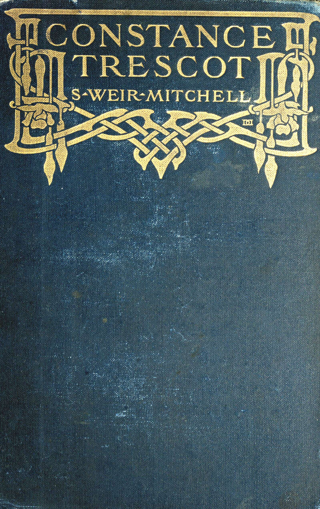

Title: Constance Trescot
Author: S. Weir Mitchell
Release date: December 9, 2025 [eBook #77431]
Language: English
Original publication: New York: The Century Co, 1905
Credits: Adam Buchbinder, Jens Sadowski, and the Online Distributed Proofreading Team at https://www.pgdp.net. This file was produced from images generously made available by The Internet Archive.

CONSTANCE TRESCOT
A Novel
BY
S. WEIR MITCHELL, M.D., LL.D.
NEW YORK
THE CENTURY CO.
1905
Copyright, 1905, by
The Century Co.
Published March, 1905
THE DE VINNE PRESS
CONSTANCE TRESCOT
“Mr. Hood will see you in the library, sir.”
George Trescot followed the servant, and when left alone began to wander about a large room which looked out on the north coast of Massachusetts Bay. Why it was called a library might well have puzzled the young man. There were few books except those of reference, but on chair and table were mill and railway reports, and newspapers in superabundance.
As the clock struck the hour of noon a woman of some twenty-seven years entered the room. Hearing the door open, Trescot turned from a brief and hopeless effort to comprehend the genealogical tree of the Hood family, which hung on the wall in much splendor of heraldic blazonry.
Miss Hood came in smiling, as if she had just been amused and was enjoying the remembrance. Her face had—what is more often found in plain women than in those to whom nature has been more bountiful—great power of expressing both kindliness and mirth. She was slight, but of admirable figure, and possessed the mysterious gift of grace. For the rest, she was unselfish, seriously religious, and perplexed at times by the comic aspect of things, hardly realizing the fact that a ready sense of humor had often been as useful in helping her to endure the lesser trials of existence as the religious faith which she held to with the simple trust of a child. Life presented itself to her in relentless simplicity, and consisted of things right and things wrong, with over-sensitive self-reproach when either seemed too amusing. She was, socially speaking, fearless, and occasionally outspoken to a degree which embarrassed others, but never Susan Hood.
“Good morning, major,” she said. “I am glad to see you. I consider myself neglected of late.”
“I shall be the best of brothers-in-law, Miss Susan.”
“Oh, that is all very well. The future does not always pay the debts of the present. You will be as good as my sister will let you be; but I am easily satisfied.”
“I ought to be,” he said. “And, by the way, I am only Mr. Trescot, not Major. These labels should have gone when the war ended; but I suppose men like titles. I shed mine long ago.”
“You are quite right,” she returned, smiling with the aid of a large and expressive mouth and show of rather irregular, very white teeth. “I see that I am just in time to save you a fall from the genealogical tree of the Hoods. I incline to think some of the limbs a trifle insecure. My uncle climbs it at least once a week, and believes in its fabulous fruit as he does in nothing else. I told him last night that it was more genial than logical. If he had understood me, I do not know what would have happened.”
Trescot laughed. “Mr. Hood explained it to me last week. I nearly fell asleep on the top branch.”
“Did you? You would never have been forgiven. It is still growing; the mustard-seed was nothing to it.” Then the further temptations offered by the comparison presented themselves to her as irreverent, and she said:
“By the way, I am sent by my uncle to entertain you, as he is just now engaged. As a matter of fact, he is engaged in settling what he will say to you. He is enjoying it, too. Sit down; you will have to put up with me for as long as he chooses to remain agreeably perplexed.”
“Perplexed?” said the young man, as he seated himself. “What is there to perplex? It seems to me very simple.”
“And to me. You have asked my sister to marry you. She desires to do so. My uncle says he is old, and that he has entitled himself to our society until he dies. I have told him that if he would kindly set a time for that event we should know what to do, and that he was pretty secure as to me. He did not like it. Nothing is simple to my uncle.”
“I suppose not,” said Trescot, laughing. “The asking him seemed to me a mere formal matter. Constance is old enough to know her own mind, and, I fancy, to have her own way. I did not ask of him any favors.”
“They should not need to be asked; but he will be sure to think you expect him to provide for Constance,—as, in fact, he ought to do.”
“I expect nothing of the kind, nor does Constance. We are prepared to wait until I can offer her a home. That may be in a year, or even two years. There is no need to discuss it.”
“Indeed! Wait until you know my uncle better. He discusses everything. He would discuss whether two and two make four. He constructs theories, as he calls them, and when it is needful to act does not always abide by them, which, I assure you, is, on the whole, rather fortunate, as I hope you may discover.”
“Well, on this subject, Miss Hood, I have also my theory, and an abiding faith in it.”
She laughed merrily and said: “Wait a bit. You have as yet seen only one side of my uncle. He can be, as you know, a pleasant, rather cynical old gentleman. Now you present yourself to him under a novel aspect, and he will be sure to construct what he calls a theory for himself and you, to fit the occasion. It will be something like this—I may as well prepare you: ‘My theory, sir, is that people never change. These young women have always had all the money they wanted; therefore, they will always want it. It must be clear to you that we shall need to discuss the matter at length—at length, sir. Money in my—sir, in my opinion, is developmental; without money,’ etc. He will be delightfully irrelevant. I wish I could overhear the interview. He really does not care about money; but he likes to talk about it. It may be he will light on something else. You will have to be patient.”
“I can be that. But as concerns money, I do not want it—or, rather, I want it very much, but not from him. I mean in time to get it myself. Confound it! Pardon me, but really—”
“Oh, that is a very mild expletive; if it applies to Uncle Rufus, it is quite unnecessary: he is just now sufficiently confounded. And, after all, if you were an old man like my uncle, would you willingly part with so delightful an inmate as my sister?”
“No,” laughed Trescot; “no, indeed.”
“Well, that is honest. You may be surprised to learn that he would object quite as much to part with me as to part with my sister. I am not malicious enough to ask you to explain that.”
Trescot was relieved from need to reply when, awaiting no answer, she continued:
“The fact is, he likes me because we disagree radically about everything, from religion to politics, and Constance because they agree about most things, except politics. There they are far apart. His opinions about the war have been to both of us a matter of real unhappiness. Had he lived in the South he would have been bitter against secession. He is always in the opposition, but he despises people who yield.”
“Then he will certainly fall in love with me. Thank you for the hint.”
“Oh, I did not mean it for that, and I suspect it was not needed. After all, it is not that you have no money that troubles my uncle; it is really far more the idea that Constance is ungrateful, and shows great lack of taste in being willing to desert him for you, or for any one. I think I hear his voice. I must go; but when you are through with uncle my sister wants to see you in the garden. If you make yourself very disagreeable you will find that Uncle Rufus will find some ingenious excuse for being reasonable. He will think it proper, after he has posed a little as a shrewd man of business, to pose as the good uncle.”
Trescot stood with her in the window recess while they talked, and now, turning, glanced at the shrewd, kind face, with its readiness of humorous comment, and said: “I should like to hear what might be the character of George Trescot you would present to Mr. Hood.”
“Would you, indeed?” she returned, looking up. It was a strong face she saw, and more serious just now than the quality of the question suggested. Yet it smiled in pleased fellowship of mirth as she answered, laughing:
“Ah, there is my uncle! I have half a mind not to tell you.”
“Perhaps I had better not insist. You are sure to be painfully honest, and I may have cause to regret.”
“But I will. I should say—well, I should say—‘Uncle Rufus, I like him.’”
“Thank you. I shall put that with what Sheridan once said to me.”
“What did he say? Do tell me.”
“Oh, he said, ‘That was well done, Major Trescot; very well done.’ I blushed like a girl.”
“What had I done? Ah,” he laughed, “you must ask Sheridan.”
“But I may never see him.” She was curious about large things, rarely about little ones or mere social trivialities. “Of course you will tell me.”
“Perhaps if, some day, on trial, you prove to be a quite perfect sister-in-law.”
“Am I not good enough now? I said I liked you. Isn’t that a form of goodness? I assure you that there are no better judges of men than old maids and sisters-in-law.”
“Indeed! But you are only a sort of brevet sister-in-law. And why—shall I dare to say—are old maids good judges of men?”
“Oh, they look down from a heaven of neutrality where there is no giving in marriage. Goodness! what am I saying?”
Hearing her uncle’s step on the stair, she turned to leave. Trescot saw with approval her trim, neat figure, and said, laughing, “The basis of opinion is not altogether secure.”
“Nonsense!” she exclaimed. “I am already on the family tree, my destiny predetermined,—‘Susan Hood, spinster.’ But here is Uncle Rufus. If he does not first indulge in vain genealogies I shall be surprised. Good-by! I wonder what St. Paul meant by vain genealogies?”
As she spoke, a small, very thin man of some seventy years entered, with a too obvious affectation of youthful briskness.
“I leave Mr. Trescot to your tender mercies, uncle.”
“Ah, good morning. Fine day. Sit down,” said Mr. Hood, as she left them. “Pray, sit down.” He began at once, with an air of decision, “I suppose this matter of which my niece has spoken to me appears to you very simple.”
“It did not at one time. It does now. I have asked Miss Constance to be my wife. She has done me the honor to say yes. What else is there?”
“Everything, sir; everything. I do not propose that my niece shall leave me. She owes to me the affection of a child. I am old and cannot live long. Her sense of duty should forbid her to desert me. If it does not, I must act for her, and prevent what is both criminal and foolish. I must create for her a virtue which she has not.”
“But, Mr. Hood—” said Trescot, raising a hand in appeal.
“No, sir; do not interrupt me. I object to it altogether. You have no money, and she has none. You know nothing of each other—nothing. As to waiting a year—two years—until you can provide for her, it is nonsense. When she mentioned this highly absurd proposition I told her as much. Now, sir, you have my decision, and my niece has already had it.”
“May I ask what was Miss Constance’s reply?”
“She said she meant to marry you if she had to sew for a living. By George! she can’t sew on a button. I was quite prepared for her reply. She has the obstinacy of my people.”
“Then, Mr. Hood, you may rest assured that I shall marry her. I can wait.”
“But I cannot wait. Do you suppose I mean to have a love-sick girl maundering about my house for two years? No, sir; you do not know her. From a child she has been obstinate when she wanted anything; I should have no peace.”
“I am sorry for you,” said Trescot, much amused; “but I can only repeat what I have said already. Unless Miss Constance changes her mind—”
“She never changes her mind; we never do—it is a family trait.”
“I hope not; and in that case I trust you will see this matter in a more favorable light. But in any case, to be frank, I mean to marry her.”
“I suppose, then, there is no help for it,” said the elder man, with a curious collapse of resolution. “I am old and feeble”—which was true. “The girl is ungrateful. I rely upon her for everything. Susan is wrapped up in her poor and her parson—she calls him her rector, I believe. I find it inconsistent with my sense of duty to let you go on in blind ignorance. You will discover Constance to be efficient, obstinate; and as I am told by Susan that you are what is called religious, you ought also to know that my niece and I agree in the entire absence of that adjective.”
“That,” said Trescot, coldly, “is a matter I prefer not to discuss.” He knew very well by this time that the woman he loved had, unlike himself, no distinct creed.
“Well, I desire that you should understand her. She is very like me.”
“Indeed!” he returned, much amused. “Then I shall be sure to end by liking you, Mr. Hood. I presume that I may consider it as settled.”
“No, sir; I may yield, but I will never consent; and I consider it my duty to warn you. I have said as much. This girl, this woman, is a creature of instincts. As a child her temper was terrible; under my wise rule it has been tamed. She loves and hates with animal fidelity; and once she is set on doing anything, neither saint nor devil can change her.”
“That is rather gratifying,” said Trescot, between suppressed mirth and annoyance. Certainly this was an extraordinary old man.
“She was an unreasoning Union woman, and I am of opinion that the South was altogether in the right. But neither reason nor respect for me has ever altered what she calls her views.”
“You will pardon me if I say that I am very glad to hear it.”
“Ah, well, well, that is as you please. A pity you agree. It is a theory of mine that difference of opinion is a basis of true happiness in married life; otherwise it becomes monotonous.”
Trescot sat still, studying the self-pleased face, and amused himself with thought of the mirth with which Susan would have heard her uncle giving Constance a character for her new place. He kept a respectful silence as the old man wandered on; but by what paths he reached an expression of opinion as to the constitutional rights of States and cities to secede, Trescot never could remember. At last he was given to understand that the right of States to secede was based on the undoubted right of individuals to secede from States. Here, as the old man’s voice rose to political levels of emphasis, it recalled Trescot from the dreaming mood which was taking him somewhere into the fairyland of love.
He recovered power to listen, but at last, disappointed by the absence of exhilarating difference of opinion, Mr. Hood said: “We seem to have strayed. I was about to add that my niece and I have always agreed, except as regards one subject; and, I regret to say, as concerns that matter, even the unfortunate closure of the war has in no degree abated her feeling—a child, sir, instinctive and, as I observed, obstinate. I think I have already dwelt on that peculiarity.”
“Yes, I so understood you. And now, Mr. Hood, that you have sufficiently warned and informed me, and have decided to consent—I beg pardon, yield—”
“I did nothing of the kind. I sometimes give way, but I never yield. I do not like this marriage. But I do not propose that you shall cause my niece to quarrel with me. She cannot stay here and make me uncomfortable; she cannot marry you and starve; I won’t permit it.”
“Then may I ask what you propose to do?”
“Well, first I desire to state that, although I am said to be a rich man, I do not intend to leave to my nieces more than a very small competence. I have a theory on this subject. It is interesting. At another time I shall be happy to set it before you—at length.”
Trescot rose. “I assure you, sir, that I should have been glad to feel that in case of anything going wrong with my power to provide for my wife,—such as my death, or what not,—she would be at ease. I should be a fool if I told you I do not care what you do with your money; but if you imagine, as you seem to take for granted, that it is influencing me in my relation to Miss Constance, we had better drop the matter of money altogether.”
“But,” said Hood, testily, “I am not going to be bullied into dropping it. I mean to have my own way.”
Trescot was a man not merely good-tempered, but of a certain gay sweetness of disposition which captured men and women. He began, however, to be a little impatient, and in reply said:
“I have been for a half-hour endeavoring, sir, to find out what it is you want. That I am to marry appears to be settled.”
“I suppose so. I know Constance too well to oppose it. I am told by my niece that you cannot marry at present. But if you choose to accept the position of my agent in St. Ann, Missouri, I will insure my niece an income for five years—say, two thousand dollars. You would be called upon to manage my property, and I should expect that you would eject squatters, bring suits, and otherwise care for my interests.” He fell back in his chair with an air of having settled the matter.
For a moment Trescot was silent, and regarded the feeble, shrunken old man, who sat watching him and pulling nervously at his thin gray side-whiskers. With some sense of the niece being sold to him for a consideration, he returned quietly:
“No; I do not wish to leave Boston. I am not a land agent, and, to be plain, Mr. Hood, I cannot accept your offer.”
“But you will.”
“No, I think not; I cannot. What you please to give your niece or not to give her must have no relation to any business interests you may choose to confide to me, in the very doubtful case of my considering your offer.”
“You had better talk first to Constance. I think she must know you already, for she declared that you would not accept my offer, and then she made me another.”
“Indeed!” Trescot did not like this any better.
“She says that if I give her two thousand a year, and put my affairs at St. Ann in your hands on a pure business basis, you will, perhaps, think of it.”
Trescot would have much preferred to have had the offer made directly to himself. He said he would speak to Constance about it. It was not a thing to settle without time and thought.
“But it is settled,” said the old man. “You will find that out. Constance usually knows her own mind.”
“But not mine,” returned Trescot, rising. He had had by this time as much of the uncle’s indecisions and feeble display of business sharpness as a nearly perfect temper would bear. He had learned that his own tender and respectful love had been met by a passion of affection which had seemed to take as small thought of the future as a bird might do, and yet here was a certain competence in her dealings with her uncle for which he was unprepared.
As he went away to meet her he said to himself, “It seems reasonable,” but felt again that he should have preferred to be left to arrange matters involving business and so complete a change of residence.
George Trescot was, like Constance, an orphan, and of the same old New England breed as the woman he loved. With slender means, he had made his way in college, unassisted, by aiding duller men as a tutor, and had passed through the law school with unusual distinction. Then the war broke out, and, enlisting in the ranks, he rose rapidly, as death cleared the way, until in the final struggle he was so wounded as partially to disable his right shoulder, which he commonly eased by carrying his hand caught in his waistcoat. Although five years had gone by, at times it gave him pain, and he felt this as he passed through the drawing-room and out into the garden. Constance’s appearance of being tall struck him as she passed across the path and disappeared behind a row of shrubs which sheltered the garden from the rough sport of the east winds. In reality, admirable symmetry was responsible, for she was not of more than full middle height.
As he turned to meet her she was joyously flushed, a glad welcome in her eyes. In a moment she was in his arms. “A whole week!” she cried.
Conscious that the embrace was as much hers as his, he cast an uneasy glance about him, fearful of profane eyes, of which she was, to appearance, heedless.
The moment was expressive. He loved her with some sense that she was a thing apart from other women. A great respect went with it—a delicate, shy tenderness which passed into delicious wonder at the deep passion which he had awakened. They had met first at a dance, where, as he crossed the room, an awkward partner in the waltz had brought her roughly against his wounded shoulder. In extreme pain he had dropped into a chair. She caught sight of his face. “Who is he?” she said. Her partner replied, “He is George Trescot, my old major in the Sixth. I must have hurt his wounded arm. Excuse me a moment.”
“No, take me to him.”
“Trescot,” said his friend, “I am sorry; I was awkward.”
“May I, too, apologize?” said she.
As they spoke, Trescot, pale with pain, looked up and tried to rise. He met a pair of violet eyes and a face of anxious interest he was never to forget.
“Pardon me,” he said; “I shall be all right in a little while. It was worth some pain to know Miss Hood.”
“Thank you. That is a great deal to say.”
He asked for a glass of wine, and, as his friend went for it, she sat down beside him.
“I am more sorry,” she said, “than I can tell you. Were you hurt in the war? I think Mr. Ware said so.”
“Yes; but pardon me, I cannot talk—not now, not just yet. But do not go.”
She had no such intention. She was silent, watching his set face, sensitively aware of some eager wish to help him.
His friend returned. Trescot took the wine and said at last, as they rose, “I am better, but I think I must go.”
She said, “My sister and I shall be glad to see you; we are always at home on Monday afternoons.”
“Thank you,” he returned; “I shall hope to be better company when we meet again.”
There was no indecision about this love-affair. In two weeks they were engaged. She had often said to herself that she would be hard to please, and that only a long acquaintance would justify a woman in giving herself to a man. She asked herself no questions as to the unreasoning passion which made easy for Trescot what so many had found hard. Their mutual attraction had the inevitability of the physical forces. From the moment of their first meeting, Constance Hood was the realization of his dream of the most stately womanhood. The impression he made on her was as sudden. He was not over her own height, slightly made, and, just then, even delicate in appearance. The look of intellect and power which a few faces show with features of great refinement gave added charm to manners which were gently formal, with some flavor of a more leisurely day when men had time to be courteous.
The contrast between his frail look and the stories men told of his fearlessness in the great war had its influence on the woman who had broken into a passion of anger and grief when the news of Sumter revealed the power of sentiment to stir her, as it stirred and energized the manhood of a great nation, presumed by those who thus challenged it to be given over to the ledger and day-book.
Susan Hood watched with surprise, anxiety, and a little amusement the progress of a love-affair which did not explain itself to one who considered marriage as a matter not to be entered into lightly or unadvisedly, and who had had no personal experience to shock her with the discovery of passions in herself or another. To the very humorous, love comes with difficulty.
Very soon Constance talked to her with strange unreserve. This abandonment to love, so profound, so abrupt, shocked Susan. A man might thus exhibit affection, not a woman. Needless to say that it was for a time only the sister who thus saw and heard and wondered, dismayed at a passion as wild as that of Juliet.
* * *
When Trescot, having left her uncle, found Constance, the lovers sat down beyond the garden, before them the quiet of an unruffled sea and the eastward glow of the setting sun. The woman’s hand sought his and held it. “Has uncle told you?” she said.
“Your uncle is an amazing person, but I learned at last that you and he had settled the matter.”
She was aware at once that he was not entirely satisfied, and said:
“Oh, of course, George, it rests with you. If you accept we can be married soon, and if you say no we must wait a year, or even two years. How can I be without you so long? My uncle remains here in the country all the year, as you know; and now that I have disturbed his theory as to what my life was to be, I shall be made to suffer.”
“But we would be near, and I should see you often—very often.”
“Yes, I know; but it would be hard—oh, harder than you can know; and my uncle is never done with a subject; my life would be made intolerable. And then, after all, we should not be there—I mean at St. Ann—always; you would succeed, and some day we should come home.” She made it all seem clear, definite, and certain. Indeed, it so appeared to her.
It seemed much more vague to the young man, but the bribe she offered was too much for him to resist.
“We should go among a strange and hostile people, Constance—I a Northern officer, you with your strong feeling about the South.”
“I should learn to hold my tongue, and you would be sure to make friends.”
“Perhaps.” He remained silent a moment, and then went on. “I have rarely had doubts as to any future, dear, except as concerned whether I could make you love me. But this future of a life at St. Ann seems to me a very doubtful matter. I am to displace the present agent and—”
“But Mr. Averill—my uncle calls him, with respect, major-general—Mr. Averill desires to give up the care of uncle’s lands. He did not tell you that, I am sure.”
“No, he did not. Of course that somewhat simplifies the matter. But to act for a man like Mr. Hood may well have its difficulties.”
“I do not think so. He always backs down before a resolute man, or even an obstinate woman. You will have your own way, and we shall be so happy, George.”
“Of that I am sure, there or anywhere; and yet I am in reason, and above all because I love you, bound to think of the future. I am naturally sanguine, Constance. Even in the darkest hours of the war I was that; but in this matter I am not sanguine, and if you were to ask me why, I could not tell you. I have a feeling—” and here he paused.
“A feeling, George?”
“Yes, like that I had once on South Mountain. I was about to ride on to a hillock for a better view of the enemy’s line, when I felt for a moment a curious reluctance. I pulled up my horse, half surprised at myself—and then, with a sense of the absurdity of the thing, I rode on. As my horse moved across the space between, a shell exploded on the hillock.”
“Oh, George! But it isn’t like that—was not that a pure superstition?”
“Yes, very absurd, utterly ridiculous in its application here; I ought not to have said it.”
“It does not in the least trouble me, although, like my uncle, I have my own little thrills about thirteen at table, and all such nonsense. My uncle says—” and she stopped.
“Well, dear?”
“Oh, he says that a person may reason himself out of religious beliefs, but can never quite get rid of these little half-beliefs.”
“I think,” he returned, “that people who are really and thoughtfully religious have least of these remnants of a more ignorant day.”
“And yet, George,” she returned, laughingly, “you obeyed an impulse quite without reason; I should hardly call it a superstition.”
“No; you are right. But to go back to what is for you and me a very serious question. I believe now that I may accept your uncle’s offer. But I must think it over when those dear eyes are not looking into mine, those lips saying, ‘Come, let us go away and be all of life to each other.’ Let us drop it now and talk of other things. I have to go back to Boston by the late train. Within a day I shall write to you and to your uncle. I must talk it over with an older lawyer.”
She was satisfied, and saw, or thought she saw, that he would be of her opinion. She had her own reasons for desiring to have no such delay as he would have tranquilly accepted. He had all through life been denying himself this or that to-day in order that he might be more secure of to-morrow’s wants. Such a passion as possessed her with the power of a primal instinct was not yet in him victorious over all rational considerations. He knew little of women, and nothing of the woman who desires to absorb, so to speak, all of the thoughts and feelings of the one man, and who, as time goes on, becomes jealous of his friends, and even of his work, and, at last, of every hour not given to her. Such women are happily rare, but are now and then to be found. From the hour she first saw him, frail and pallid from suffering, a vast protecting eagerness arose in her mind. As her kinship of pity blossomed into love, the desire to be with him and watch over what seemed to her in her new anxiety a more delicate life than it really was, supplied her with a reason for early marriage. She had never asked herself why she had been so suddenly captured; but as time went on she knew that she had drawn a prize in the uncertain lottery of love, and felt that his charm of manner, his distinction, the delicacy and refinement with which he had pleaded for her love, had fully justified her choice.
After further talk he left her at twilight, and at the last moment, in haste to catch his train. She watched him as he walked swiftly away, noting the arm caught for relieving support in his waistcoat, the upright, soldierly carriage of figure, well built, but lacking flesh. She said:
“Ah! but I love you well; how well, you do not yet know, George Trescot,—but you will—you shall.”
As he turned at the garden gate to look back, she cried, as she ran toward him, “You forgot, George.”
“What?” he said.
“To kiss me again.”
Late in the afternoon of the next day she received a letter, with which she fled to the rocks above the sea. She tore it open and read:
“Dearest Constance:
“I wonder how you got that pleasantly prophetic name. You must tell me.
“Yes, I have made up my mind; my friend has urgently advised me to accept your uncle’s offer. He thinks the position affords chances I ought not to decline, and with your ever dear self thrown in—you remember the Scotch song:
“‘I’ll gie ye my bonny black hen
If ye’ll but advise me to marry
The lad I love dearly, Tam Glenn’—
“I gladly conclude to say yes. With what joy I am filled, you, I trust, know. I am not very strong as yet, but I come of a vigorous breed, and no tonic has ever helped me like the bounty of love. You have given me yourself—how can I ask more?
“Between us there lies one large gulf of difference—and only one. That some day we shall bridge it over, I hope and believe. Meanwhile, we shall trust each other’s honesty in this, life’s largest matter, and, so trusting, wait with the patience of love—”
“No,” she said, looking up, “it is not for me life’s largest matter. This human love is for me the larger. His religion, or any faith, is, compared to that, dim, misty, unsatisfying. But love! ah, that is near and sweet and real.”
“Well, well,” she mused, as she sat with the letter in her lap. “He would have me to believe as he believes. Would I wish him to change? No. He is my religion. That would shock him. To please him I could almost make believe to think as he does. To be separated in anything from him seems terrible.”
She was facing a hard question, made the more difficult by pure ignorance. Since childhood she had been in her uncle’s care. He had his own very peculiar views, and the delight in opposition which is fed by self-esteem and accounts in some degree for the ways and opinions of men who in the conduct of life depart radically from the common-sense standards of the world at large. His theories found a fair field in Constance. She was never to be punished; reasoning would do everything. How could a child accept a creed? She must be kept with a neutral mind. She had never been allowed to set foot in a church. When she grew up she might choose for herself. It shocked the elder sister, who, until the death of an aunt with whom she lived, saw Constance rarely, as they were separated by a hundred miles. When later she herself was left without a home, she gladly accepted her uncle’s invitation to live with them.
The new abode was far more luxurious than the one she had lost upon her aunt’s death. It was also very different. As time ran on, and she became more familiar with what she felt to be a rather singular household, she had an eager desire to help her young sister to escape from what seemed to Susan a bondage of the spirit. She became watchful and observant of her uncle and Constance, and saw, with something like dismay, the completeness of her sister’s isolation from all knowledge of that which seemed to her an essential part of the higher life. She was by temperament and sense of duty made unwilling to accept a neutral attitude; a growing affection added a strong motive, and she was resolute not to go on endlessly without protest. Some feeble attempts to approach the subject on which the elder sister felt so deeply were met by Constance either with indifference or mild amusement, as a thing long since disposed of, or as beneath the consideration of the larger mind. Rather than by persistence risk the loss of a growing affection, Susan ceased to speak of that which she held with such reverent faith, and could only pray that time and circumstances would afford more prosperous opportunities. With her uncle she was still less fortunate, but as he at least rested content with the situation he had created, she felt forced at last to secure for herself an opportunity to make the protest to which she felt driven by motives which left no escape possible.
He had soon become accustomed to use her for many of the little tasks which Constance disliked. She was seated with her uncle in his library after breakfast, engaged in cutting the leaves of a report on the census. He was minutely noting in his diary the state of the barometer and such reflections of his own as he considered worth preserving, and as to this he was generous.
He was not too busy to observe that, true to the habit of the born reader, she was now and then caught by some fact of interest, and ceased using the paper-cutter.
“Ah,” she exclaimed, laughing, “the census of this State embraces three millions of women—poor Mr. Census.”
“Yes, yes,” he returned, “quite remarkable,—an old joke, I believe. But I wish you would finish. I need the book. Constance has been trained to do one thing at a time.” The niece thus characterized had declined the task, and gone out to sail.
“I shall finish it, sir, in a few minutes.”
There was again silence, until at last she said: “The method of securing the number of people in the different religious sects seems to me quite absurd—just listen, Uncle Rufus.”
“I have no interest in it. It ought to be left out. The multitudinous opinions of irrelevant minds are disgraceful to the human intelligence. Negation is the proper attitude. Constance represents it to my satisfaction.”
Susan’s chance had come. She laid the book down and said earnestly: “You must pardon me if I say that I think you are wrong.”
“Well, I am always ready to hear honest opinions,—go on.”
“Do not you think that to leave a young girl without any sense of relation to God must result in her never acquiring any when grown up?”
“No, I do not. I have my views. When she is a woman and mature, she will choose.”
“But will she? She will have no interest in the matter.”
“Well, what then? Suppose that she never has.”
Susan was shocked; but after a moment replied: “Well, why not let her choose her morals? Why insist on her being, as a child, truthful, and charitable? Why insist on good manners? Let her choose her morals and her manners when she is what you call mature.”
“Nonsense; you are sophistical, and you are too clever not to know it.”
Susan was well enough aware of the difficulty in defending her statement, but she was too vexed to be logical, and said: “You have taken away from a young life one of the most imperative motives to be all that a woman ought to be.”
“I think I am a better judge of that than you. I have never missed what you call religion, nor will Constance. I have my views, and I insist that you are not to bother the girl with your superstitions.”
“I am sorry, uncle, but I can make no promise.”
“I suppose not. You are as obstinate in your folly as I am resolute in my common sense.”
“That is fine,” murmured Susan, as she returned to her work, making him no reply, and inclined for the time to abandon a useless purpose. Presently she laid the book beside him, saying:
“No, nothing.”
She left him and went out to the company of the flowers and the wholesomeness of a perfect day, troubled that she had made no impression, and asking herself if, after all, her argument was sophistical.
As she sat looking at the white sail of Constance’s cat-boat, rocking over an unquiet sea, she began to sum up her slowly acquired knowledge of the younger woman.
Yes, she was intelligent,—clever, accomplished, as Susan was not; an admirable musician, singularly ignorant of the great literature, but, like her uncle, unusually well informed on the history of her country. How she had come to have political opinions the reverse of her uncle’s puzzled Susan. It might be that she too loved to be in opposition, but certainly she held to her views with such passion as he was incapable of. And surely the girl was beautiful. As yet Susan could go no further in her interested analysis. Yes, she had the virtues of her caste, and great capacity for affection.
The woman concerning whom it was thus needful to digress went back to her letter.
“We will put this question aside for the time. You will let me try to help you. Your uncle made me understand that his affairs would suffer by delay, and now that I am clear in mind I see no cause to prevent us from being married whenever you can set a time. No time will be too soon for me. I have been alone in the world these many years. All that friendship could give in the army and at home I have had, but neither love of mother nor of sister, nor of any other woman has been mine. You have it all—the all that might have been others is yours, to-day and always.”
Again she paused, with the thought that to take him away even from his friends gave her a sense of such completeness of possession as filled her with joy. The rest of what he wrote was as delightful. She put the letter in her bosom and felt it move with her breathing; now and again she took it out and kissed it.
A month had gone by. A savage northeast wind was rocking the pines and hurling a thunderous surf on the rock-guarded coast. It was the third of March, the night before the day set for the marriage. Their uncle having as usual gone to bed early, the two sisters sat alone by a bright wood fire in the sitting-room they shared.
Susan rose and went to the window. “What a wild night!” she said, as the rain, wind driven, crashed against the panes, and the casement rattled. “The gardener said this afternoon a ship had gone ashore on Carlton’s Reef. I hope no lives were lost.”
“Yes, Uncle Rufus told me of it, and was gracious enough to observe that going to sea was like getting married—a very uncertain business.”
Susan, as she returned to the fire, remarked: “He has an unequaled capacity for saying unpleasant things, but I really believe that he does not mean to be malicious. The trouble is, he values the product of his own mind too highly to be willing to suppress any of it. I might have had the fancy that the ocean and marriage are uncertain. I should not have thought it fit or worth while to say so.”
“I do not see, Susan, how George has stood it for this last month. What with Uncle Rufus’s endless indirectness and perpetual indecision, I cannot wonder that George is puzzled to understand what he wants. I shall be more than glad to have done with it, and get half a continent between us and uncle.”
“You will never be done with it while he lives,” returned Susan; “and you may be pretty sure that he will some day appear at St. Ann and still further bother George.”
“Well, George is as obstinate as—I ought to say more resolute than—Uncle Rufus.”
“George asked me,” said Susan, “how uncle had been so fortunate in his affairs. I told him what you of course know, that uncle’s fortune was largely inherited, and that as the mills in which most of it was invested are managed by wiser men, and he is almost morbidly cautious, it is easy to see how he became rich. Those lands in and about St. Ann were one of his father’s ventures. They have been the source of constant trouble. I suspect that General Averill could not agree to do as uncle desired, and that when he gave up no one else would accept the agency.”
No sooner had she spoken than she knew that she had been unwise. Constance rose with a quick movement, and turning to her sister, said:
“Uncle said nothing like that to me or to George. Do you mean that he is using George because he could get no one else? I shall go and ask him if he has dared to do that.” As she spoke she moved quickly to the door. Susan was just in time.
“Stop, dear,” she said; “I have no authority for what I said.”
“Then you should not have spoken. You make me unhappy—and now, to-night of all nights. If your suspicion be correct, it is a thing I will not stand. Let me go.”
“No.” Susan set her back to the door. “Listen, dear. Uncle is asleep.”
“I do not care. He must wake up.”
“But you must care; and if I have been foolish or imprudent, it is too late for you to act wildly on a mere fancy of mine. Forget it, dear, and be sure that no matter what may be uncle’s little schemes, George Trescot will succeed where others have failed.”
The tall girl, still flushed, angry, and only half convinced, moved away and stood beside the fire, silent for a moment. Then, as Susan took her hand, she said:
“You are right; but, indeed, if he has put George in a false position I shall never forgive him. I shall not tell George.”
“I should not, dear. Sit down. It is really of no moment, but I was as indiscreetly anxious in George’s interest as you can be. Let us drop it. This is our last talk. What a mad storm, Conny!”
“Yes. Listen to the wind.”
“But you love storms, dear.”
“Yes, but not to-night. Oh, not to-night!”
“I hope you will have sunshine to-morrow.”
“Oh, sister, I do hope so.”
“It does not look like it, Conny; but there is sunshine enough in George Trescot. No one could help liking him; I am half in love with him myself.”
Constance laughed. “I can’t have that, I want him all to myself.”
“That you will not have,” said Susan, quietly. “I am so glad that you concluded to be married in church.”
“He wanted it, and I really did not care.”
“But you will some day, dear. You cannot live with that man year after year and fail to feel the value of the influences which guide and guard his life—and, dear, it was not your fault. I think it was cruel, wicked.”
Constance looked up. “Do you think he is really—I mean because of that—better than I am? Oh, I mean—you know what I mean.”
“I think you know, dear,” said Susan, “or ought to know. He has had a life of trial, you one of ease. Both of you are what nature and the chances of life have made you. I think you were unfairly dealt with. Before I came, and ever since, uncle has had his way.”
“Yes, I know; but, truly, Susan, I am neither religious nor non-religious; I am open-minded.”
“Are you, my dear sister? Has not your open-mindedness left you with the door of the mind very hard to open wide? Time will show. You have never yet found yourself; you have simply the conventional morals and opinions of our own social world. How they will serve you in days of strain and trouble God alone knows.”
“I think you are severe, Susan. I suppose I shall laugh or cry, and grieve or be merry, like others.”
“You are not like others. You are very unlike others.”
“Am I not?”
“No; you are too natural.”
“Too natural. Upon my word, Susan, you are quite too enigmatical for my powers of comprehension.”
“Well, dear, we won’t talk any more. I did not want to trouble you. And how am I to do without you?”
“Oh, you must come to see us after a while, when we are settled.”
“Oh, shall I not? Now to bed, to bed, dear, for a beauty sleep.”
She kissed her, and Constance went away. The elder woman remained long in thought by the fire, reflecting upon her own imprudent frankness. The younger lay awake for a time, wondering a little what Susan meant by calling her too natural. She awoke early to hear the surf and the constant rain, and the wail of the wind among the pines.
* * *
Trescot had never been his former vigorous self since he was wounded, and now, a resolute doctor insisting upon a long holiday, five happy weeks went by, much to the betterment of his health and looks. As they got out of the train at St. Ann early in April, on a Saturday afternoon, a gentleman approached them, and in the soft Southern tongue said:
“Mrs. Trescot, I believe. I am General Averill. Allow me to make you welcome to St. Ann.”
As Trescot gave him his left hand he added in a cordial way:
“Have you met with an accident? Nothing very bad, I hope.” He seemed really distressed. “And in your honeymoon, too.”
“You are very kind,” said Trescot. “I am afraid that you are in a way responsible; it was a Confederate bullet.”
“Oh, indeed? It is too late for apologies, but not for regret. So you were a soldier. Well, I am glad of that. It is not the men who fought who are making mischief now. My carriage is here. This way, madam. Here, boy,” to an aged black, and he gave some directions concerning their baggage.
“But we are going to the hotel,” said Trescot. “I wrote and arranged for rooms.”
The general laughed. “You are going to your own house, sir. My wife has been busy there, or she would have met Mrs. Trescot.”
“But we have no house,” said Constance.
“A little surprise, madam—as I understand, a wedding-gift from Mr. Hood. Mrs. Averill wrote and wished to be allowed to put it in order. Then Miss Hood came to St. Ann. Your uncle and I are old friends, as you know; and now that I see you, Mrs. Trescot, it is more than a pleasure—it is a privilege—to have been thus allowed to be of use. Ah! here is the carriage. Permit me.”
Trescot could only express formal thanks, and they chatted as they drove through the old Creole settlement, with its ill-kept gardens and new wooden houses.
Trescot was much amazed by the uncle’s sudden and secret liberality. They had been five weeks away from home, and except that Susan had written, soon after they left, that St. Ann would surprise them, they had been unprepared for what now they heard.
Unable, for the time, to discuss matters, they drove on for a half-mile through the dust of the main street; and when a little way out of the fast-growing southwestern town the general said, “This is what we call Raeburn’s addition.” Where the road began to slope to the broad river a too sanguine speculator had put up a half-dozen scattered cottages.
“This is your home, Mrs. Trescot. No, I shall leave you to enjoy it alone. Mrs. Averill has gone away, and hopes you will be pleased. You will find supper ready in an hour.”
They stood a moment on the roadside. A neat old black woman in a gay bandana head-kerchief stood at the open door; the general, hat in hand, kind, genial, courteous, a little profuse in talk. The two young people thanked him, and they were left alone.
Constance had misgivings as to what she might expect in this new home. She said nothing of the feeling she had that she should have been consulted as to the furniture. But much of what was needed had been chosen by Susan, and some simple but refined taste had presided over the rest. As she looked about her, she cried: “Oh, George, when I heard I was afraid; but it is really so very pretty and so simple; and was it not considerate to leave us alone? And wasn’t it like Susan just to go away and leave us to ourselves, and Mrs. Averill too?”
“You do not yet know the best of these Southern people, Constance. It will be both pleasant and desirable that you and I learn to like them. I am sure you will. Imagine the kindness of it, and the trouble!”
They went from room to room in the little house, looking out on the roses already in bloom, the grass slopes, and the river beyond. At last they found their way into the dining-room, and then into an apartment where were shelves and a businesslike table; but here the cases sent on by Trescot and Constance had been left unopened. Again husband and wife recognized the feeling which had left their personal belongings untouched.
One of the servants, an old woman once a slave of the Averills, conducted Constance over the kitchen, and up-stairs and down again, and was delighted when, after supper, the cooking was praised.
Then, as the shadows came, and they sat on the back porch among clustering Cherokee roses, she brought him a match, and as his pipe glowed or darkened they talked of the new life before them; she recognizing with fresh happiness the man’s gain in health and vigor; he, at moments, in thought with certain reasonable fears. Would this distinguished-looking woman, with her music, her social ties, her unchecked expenditures, her familiar Boston circle—would she be contented here in this simpler life? Would every one be as kind as Mrs. Averill? He became more and more silent as they sat in the twilight. She, too, had her less distinct doubts, but heretofore they had said little of the life which lay before them. Now she spoke, touching his brown hair as he sat on the step below her. She was strangely intuitive as concerned George Trescot.
“I know what you are thinking of, my dear, dear George.”
“Oh! What, love?”
“You are wondering whether I shall be satisfied here in this new life amid the people you fought and I hated.”
“I was; but you will not hate them. I never did.”
“And I shall not if they are good to you.”
“Oh, whether or not; and you won’t miss the ease of home, the varied life, your carriage and riding-horse?”
“I—I have you.”
“But you will not have me always as you have had for these happy weeks.”
“But you will be always thinking of me.”
“Even that may not be possible. I sometimes fancy it would have been better—”
“No, no; we did wisely, and love is my only answer.”
“Then, once and for all let us put away the past, and accept our new life with thankfulness.”
“Yes. Ah, letters! Thank you,” she said to the maid. “Let us go in, George, and read them.” As they sat down, she cried: “Gracious! oh, do listen to this, George. It is from uncle.”
“My dear Constance:
“Major-General Averill will give you the title-deeds of the house. It will, I hope, make you less discontented, for you will have to economize as you never did here. I trust also that my generosity will be an inducement to that obstinate young man to give the fullest attention to my affairs.
“Susan will, no doubt, tell you that she made me give you the house; but her religion is too vague a thing to have taught her accuracy. What she calls faith, I am happy to say I am without; it is too vague for intellectual assimilation.
“Yours affectionately,
“Rufus Hood.”
“Of which has he none—faith or intellectual assimilation?” laughed Trescot. “Upon my word, Constance, what about the blind belief we call love? No one knows everything of any one. The rest we call trust, faith; and without the mystery of the unknowable in man, woman, and God, the half of the charm of life and love were gone.”
She did not answer him directly, but said: “Uncle Rufus is plain enough, and I know you, and you me.”
“No, not altogether; what you would do or be in certain contingencies of this changeful life, I do not know.”
“You? No, no,” he laughed. “But what does Susan say?”
She read:
“Dear Conny:
“As soon as you were engaged I set to work to make Uncle Rufus behave decently. He is not mean or ungenerous, but you were to be punished for preferring George to him, and to have a narrow income as a reminder of your iniquity. We had it about and about. He enjoyed the row and, as usual, backed down. I made him groan when the bills came in; but he had to pay, and now he tells every one about the pleasure he had in surprising you with the house. I send a few books of reference for George—the cyclopedia he wanted, and a few other books.”
She said nothing of what further she had done.
Constance looked up. “But I meant to give you that cyclopedia myself. I told her so.”
She had a childlike disappointment because of having been thus anticipated. He saw and understood.
“But I want far more—the new biographical dictionary, and how many other books I dare not tell you. To-morrow we shall see when we unpack the boxes. What else is there in your sister’s letter?”
“Nothing of moment. She wishes to know if the house, our house—isn’t that delightful—needs any other furniture.”
“I should think not,” said Trescot, faintly jealous of the liberality which had provided what in time he had hoped to give. He said, however: “I confess, dear, to being very glad that you are to be so pleasantly nested. I feared a little the long stay at an inn or in lodgings, where you would have all manner of unavoidable contacts.”
“Yes,” she said, “that would have been dreadful. To have been able all one’s life to choose or avoid, to say ‘At home’ or not, and then to be obliged to meet, all the time, the chance acquaintances of a boarding-house! I did not expect to have a house for a year at least.”
George Trescot reflected anew upon the sacrifices she had made, and on how less than little she knew of what she was saved by Susan’s persistency and self-sacrifice.
“We owe Susan a great debt,” he said; “and I am as grateful as a man ought to be; but I wish I had been able to do all this for you myself. I have been so anxious that you should be satisfied.”
Constance slipped down on to the step beside him, cast an arm around him, and laid her head on his shoulder. “You need not have been afraid, George. Life can ask nothing of me, large or small, which I would not give or be or do for you.” The voice became low and measured as she went on. “I could beg, or do anything. You will see how I shall help you. I shall make all these St. Ann people our friends—oh, whether I like them or not; but, George, I am scared sometimes when I think of how all other love has shrunk to nothing, as if it had all gone to make up one great love for you. If any one—man or woman—loves you, I shall be jealous; if any one does not, I shall hate him. Oh, I am a fine fool of love! I am half jealous of the company you find in your pipe.”
He said, “Are you, indeed?”
“Yes, I am, really. Oh, you may laugh, but I am.”
The stress of passion in her words was broken by this half-humorous reflection, and a little to the man’s relief, even if he hardly knew it. The quality of his affection was governed by temperament, and, never reaching the instinctive freedom of her passion, was nobler, in that it looked forward to being always the true lover, and also the friend who guides and counsels; for already he saw that both guidance and counsel might be needed. He smiled as he kissed her.
“Well, shall I give up my friend of many campfires, of sad days, of long night-rides?”
“What a pretty defense! No, indeed; I like it because it can comfort and cannot love.”
She rose as she spoke, and standing before him, threw up her hands with a gesture of emphatic abandonment and cried: “Oh, George, I am so happy! Come, let us walk in the garden. Isn’t it little?—but do look at the roses.”
He went with her, and they talked more quietly of the kindness of the general and his wife; of their own plans, and of his work. To his surprise, she said no word of Susan. At last he said, “It is early, but you must be tired.”
“Oh, I am never tired; but I have to unpack, and what the colored women can do I have yet to learn.”
“To-morrow will be Sunday, Constance.”
“I am going to church with you. You will have to find the places for me in your prayer-book; but I am going because—because you are going.”
“Thank you! You are very good to me, my love! Good night.”
She left him, and he lighted his pipe, and for an hour moved about in thought.
As they went up the slight ascent of West Street toward the Episcopal church, Constance said to her husband: “Since we left home you have gone to church alone. I mean that you shall never do that again. But, George, do you know that this will be the first time I have ever been present at a church service?”
“It will interest you,” he said, realizing with regret how complete had been the denial of the highest opportunities to the woman he loved. Careful to show no surprise, he went on to speak of the service, and of how it had been formed and molded, until, arriving at the church, they sat down near to the door. After church they slipped away, unnoticed, except casually by General Averill. On the way homeward, Constance was silent for a time, and seeming to her husband thus inclined, he made no effort to disturb her mood.
Presently, however, she began to speak of the impression this amazing novelty of a great ritual had left with her. The congregation had been large and very devoted. She confessed to interest and something like awe—a certain wonder at it, a trained disbelief in its verities. She spoke with care, and he, on his side, listened without criticism. Certainly to her it was so strange that he found it hard to put himself in her attitude of mind, and preferred, with the patience which was part of his character, to do no more than wait for such better chances as time might bring.
The music she found good and simple. Caught by its charm, her full soprano rose in the hymns he knew so well, and added to the satisfaction he felt when she expressed her surprise at the refined faces she saw about her. He explained that the older settlers had been Virginians, and many of them gentlefolk. She was sure she would like them; and the elderly woman she saw as they came out must be Mrs. Averill. She smiled at them as the general raised his hat—a handsome couple. There was even a kind of distinction in the old-fashioned gowns and bonnets.
“I think they were all curious about us,” she added.
“There may be other reasons,” he laughed, “for looking at you, my dear. I sometimes enjoy that privilege myself.”
Sunday passed quietly in their new home, and they fully recognized the thoughtful kindness which left them thus undisturbed. In the afternoon they decided to see the little city and their neighborhood. They were about a half-mile from the court-house green, beyond which, on an upper rise, were a dozen houses, not very well cared for, but set pleasantly among trees and well-tended gardens. On the level land above the river bluff were the straggling houses and shops which, in their fresh shingles and paint, gave evidence here and there of the new material growth which had begun since the war. Below the bluff, on the shore of the great curve of the turbid river, were warehouses, cotton-presses, and rudely built piers where steamers lay. Much of the nearer water-front was occupied, and as they stood Trescot pointed out where, at the bend of the river, lay the long stretch of frontage which was in litigation, and was claimed by Mr. Hood. Descending to the water’s edge, they found a rough road which passed through low growths and the rude clearings of the squatters who had refused to vacate their lands. Beyond, the road wound along the river bank, and over the land which Trescot had pointed out as valuable on account of the deep water in front of it.
When on their homeward way they came near to their own house, the path so narrowed in front of an ill-kept garden that Trescot fell behind. A gentleman in gray clothes, and wearing an undress army-cap with Confederate buttons, moved aside into the road to make room for Mrs. Trescot to pass. He lifted his cap and showed some attentive surprise as Trescot touched his straw hat and they passed on.
“By George!” he murmured, “who can that be? What a beautiful woman!” He stared after her well-clad figure, noting the ease and grace of her walk, and then the slighter form of the man. Seeing them turn in at their own gate, he said aloud: “That must be old Hood’s new agent. He is very young.”
Meanwhile Mrs. Trescot said: “George, did you notice that gentleman?”
“Yes.”
“He looks like an Indian chief, and very unlike the people I saw to-day. He is handsome, but how dark he is!”
“Oh, there is some old Creole blood here—of French descent, very likely—a fine, big man, probably a Confederate soldier.”
* * *
The Monday morning of their first week at St. Ann found them after breakfast on the back porch of their new home. The man was gravely happy; the young wife a little excited as they began to consider what they were to do on this the first morning of their new life. Past the little garden, the grassy slopes and green maize-fields were bounded below by a fringe of oaks, beyond which the brown current of the mighty river swept onward in its march to the gulf. The Cherokee rose was all about them in red clusters, the humming-birds were busy on quivering wing, and the warmth and moisture of the Southland—April already—invited to repose and idleness.
“It is very pleasant here,” said Trescot, “but there will be many things to do, and I suppose one must begin.” As he spoke he rose. The temptations to linger were very great. But at last he compromised with sense of duty by resolving, as many a man has done, to go as soon as his pipe had gone out. Nevertheless he economically nursed the failing pipe. As he lingered Constance asked:
“What have you to do, George? I mean at once.”
“Oh, many things. I must see the general and learn all I can of your uncle’s affairs. There are unpaid rents, mortgages in arrears, taxes, and what not,—a sad tangle, I fear. Then, if I am to appear in the courts I must qualify by an examination to practise in this State.”
She was at once eager to know why.
“I could appear,” he returned, “in a United States court, but not before local tribunals. But that is all simple.” And, in fact, after a fortnight he was enabled thus to qualify for practice at St. Ann.
When at last the pipe refused to furnish excuses for delay, he left his wife to her new household duties. She found herself amply occupied, and while her husband spent a busy morning with Averill, she went about the house with the two black servants, arranging her husband’s books, and giving to the rooms that look of having been lived in, which is one of the mysterious accomplishments of certain women. Trescot heard snatches of song as he came in at midday, to meet her eager questions, and to note with satisfaction what she had done to change the house into a home.
“How hard you must have worked!” he said, seeing all of his many books in order.
“I did not unpack your law books, George.”
“No, you were right; I must have them with me. I am to have a bit of an office next to the general’s. I find that he has come into some property of late, and wants to give up part of his work—I mean chiefly your uncle’s affairs. There are, I fancy, other reasons. He was somewhat reticent. From what I gathered I fear that your uncle’s business is going to be difficult; and he has been so hard to deal with that people here say it is impossible to settle anything. However, we shall see. I suspect that the general has been indisposed to push matters, and that your uncle has been unyieldingly opposed to any compromises.”
“Very likely,” said Constance; “but if the general had been firm uncle would have given way. He always does. But for that he should be here. He is always most obstinate in his letters.”
“That is hardly consoling,” said Trescot. “And oh, Constance, I would not hang my sword here. Put it in your room.”
“I should like that,” she said, at once understanding him. “I see that you do not wear your Loyal Legion button—I suppose we are to forget?”
“Yes, and forgive, as they, too, will in time. I lost a brother and many friends in the war, but, dear, I learn that our old general lost his two sons,—his only children, Constance,—his all. They are childless.”
“Oh, George! That mother! She was here to-day, and such kindness I never could have hoped for. Now I understand her
“‘sad eyes
Wherein no expectation lies.’
“Who said that, George? I forget. I wondered what gave her that look; I noticed it when I first saw her. I think Susan quoted it once. And, my dear George, she heard me singing in that absurd way in church, and would I join the choir, and they would expect us to use their pew, and there are sewing-circles, and what not. I had to say several noes; I did it sweetly, and said I must think about it. Imagine me in a sewing-circle!”
“I am sure you said just the right thing. As for the general, he, too, was more than kind. He begged me to be careful about war talk. People were still sensitive. And I ought to be made aware that your uncle, whom no one here has seen, is detested, and supposed to hinder the growth of the town by refusals to sell or improve. He wants me to see people socially, and it seems there is a little club which he thinks I had better join. I said it would be as well to wait. I do not want any needless expenses—even the smallest.”
“Oh, I shall manage, George. I have talked to Mrs. Averill. We shall have enough. It might be better to join the club.”
“I shall think of it,” he said. “But my best club is elsewhere.”
“Yes; but you would see these people there. Only, I shall be jealous of the hours I do not own.”
“You own all my hours, Constance. And, by the way, talking of jealousy, the dark gentleman you admired yesterday has some Indian and some Creole blood. I guessed well. But his name, I take it, is English—Greyhurst. He is the lawyer who has been engaged in the suit to dispossess your uncle of the water-front. I hear, also, that he is pretty deeply and personally interested in lands along the water.”
She determined to know more of this man when she saw the general. She had some vague feeling that here was a man who would be hostile; and she had not liked the smiling face with the dark, attentive eyes.
The next day being Tuesday, while Trescot was again busy with the old general, Constance dressed with care and set out to visit his wife. The sun was warm, and as she walked along the road to the town she was full of plans for a social campaign which should be of use to the man she loved. There was enough to interest in the negro huts and children, the wayside flowers, the straggling town, its blooming gardens, and the houses which war and its attendant poverty had left long uncared for. As she gained the main street, she began to see that she was the object of notice; but to this she was not unaccustomed, and did not find it unpleasing. Her looks and her power to be agreeable were a part of George’s capital. She noted the men on horseback—now and then a man in a battle-worn suit of Confederate gray; twice she observed the “C. S.” branded on the flanks of mules—and felt the nearness of that vast struggle which had left the South wrecked and impoverished.
A question or two brought her to the general’s house. It stood on a rise to the eastward and above the town—an ample brick dwelling of more pretension than those near by. The garden around it on all sides was admirably cared for, but the fence was broken and the gate lay on the ground. The hall door was open, but she looked in vain for a bell, and used the brass knocker without effect. At last she entered, and saw through the back door of the hall the gray head of Mrs. Averill in the garden, moving between tall rows of Osage orange. For a moment some inbred regard for conventional usages stayed the visitor’s steps, and then, seeing no other way, she walked through the house and down the garden path.
Mrs. Averill turned, setting down a basket of roses, and with both hands welcomed her visitor.
“Come in,” she said; “come in out of the sun.”
Her looks approved the proudly carried head, the rich red of the cheeks, the large blue eyes, and that indescribable air of caste and good-breeding which the day before, as they came out of church, had been at once and easily recognized.
Constance, too, saw that here was an older woman of her own world—a woman, as she wrote to Susan, who seemed suited to the old-fashioned garden and its familiar flowers—a delicately provincial dame, with an assured way of saying gently very positive things, and with hands and feet thin, delicate, and marvelously small.
The Southland tongue as Mrs. Averill used it, with its half-lost r’s and a certain precision in her choice of words, delighted the critical taste of Constance.
As they entered the large parlor, Mrs. Averill said: “Sit down, my dear; it is very warm. I must find my servants—nowadays they are never to be found. You shall have a glass of lemonade.”
Constance said she should be glad to have it, and was left alone. She looked after her hostess with increasing satisfaction. Mrs. Averill was exquisitely neat, from the little cap, over abundant gray hair, and wide white kerchief to the white gown and the long garden gloves. The room offered an unpleasing contrast. The wall-paper was worn and spotted, the seats of the chairs showed signs of wear. Some of them were of Colonial respectability, some with the black hair-cloth covers of a day of worse taste. The matting was much mended, and a thin-legged piano, not too free from dust, suggested indifference, or, more probably, the housekeeping troubles of which as yet Constance was happily ignorant.
On the walls were two or three portraits in the thin manner of the elder Peale, and an admirable Copley of a husband and wife. Over the fireplace hung a pair of crossed swords suspended by broad black ribbons. Below were ill-colored photographs of two young officers in Confederate uniform. “Poor mother!” said Constance. Over all, caught up in folds, hung a torn battle-flag of the rebel States, and below it the flag of a Maine regiment, also tattered and battle-scarred, evidently a captured trophy.
For a moment the young faces of the dead sons troubled her, and then the two flags sent a rush of angry blood to her face—a return of the passionate feelings the great war had so often caused her. Here before her was the record of battle and of death, of the pathos and the courage and endurance of a struggle which should have left, and did leave for the best of those who fought and won, only admiration, pity, and magnanimity. Constance had little of that greatness of soul which is the noblest factor in the large gospel of forgiveness. The personal feeling which entered so largely into her life during the war was supported by an unusually intelligent knowledge of our history, and kept angrily alive by her uncle’s attitude when, rejoicing over Confederate victories, he thus kept her irritated and on edge throughout the years of that sad struggle—ever glorious for those who won and those who lost.
Hearing Mrs. Averill’s step at the doorway, she turned quickly from the mantel to meet her, composing her face with the habitual ease of a caste accustomed to hide emotion. The little old lady, so gray, so worn, became of a sudden grave.
“Sit down here beside me,” she said. “You were looking at the flags and—the faces of my dead. Of course it troubled you—I saw that—the flags and—the rest. I won’t have you excuse yourself; it was natural. One boy fell dead on the flag he had captured; they sent it home to me. The other, a prisoner, died in the North, after having been cared for as we could not have cared for him in those terrible days. You see, I am explaining to you because we are to be friends; but some day, when you are a mother, you—”
“Please don’t,” said Constance, taking her thin hand. Both women’s eyes were full of tears.
For a moment they were silent. Then Constance said, “How did you live through it?”
“God helped me, as some day he may need to help you. It is less hard to forgive a nation than if it had been a man, and John Averill was spared to sorrow with me. Some day I shall see my boys. There, my dear, we must not talk of it any more; but we are very sore in the South, and the state of things in the Carolinas makes it impossible to forget defeat in the face of continual humiliation.”
“I know,” said Constance. “It is shameful, and no one—not even you—can feel it more than my husband. He tries to put aside the war. He never speaks of it, although his crippled arm is a sad reminder. He will not let me hang his sword where it can be seen in—” She paused, feeling that she had made one of those social slips which even the best-trained do not altogether escape. She went on quickly: “We want to make friends with the people here. You will tell us how. You know it is to be our home.”
“My dear, you will easily make friends; but sometimes you will have to be forbearing and keep silent. It may be hard, but for those who won it should not be.” Constance thought of George, and assented. “Mr. Trescot will find it less easy; but his having been in your army will help him with all but the women; we are unreasonably venomous—a few of us, not all.”
“Well, that will save me some jealousies,” said Constance, smiling.
“Ah, here is the lemonade,” said her hostess. “I was picking these flowers for you; will you care to carry the basket, or shall I send them? I was about to call again this afternoon. I thought I might help you. It must all be so strange to you.”
Constance, thanking her, rose, saying: “You will let me come again?”
“Oh, often, I hope,—often.”
She walked away through the sun and down the dusty street, carrying the roses. The men looked after her erect figure, the women made comments on gown and bonnet.
She was lost to her surroundings, thinking of the flags and the dead boys, and wondering at the peace of soul which had come to the childless mother. She could not comprehend it, and thought that such a calamity falling on herself would have left her with an undying hatred. Presently, feeling the heat, she was reminded that she had promised not to tempt its consequences through the summer months. The idea of leaving George troubled her, and she quickened her pace in order the sooner to see him.
The Trescots by degrees settled into a routine of life which, while it left Constance alone in the mornings, usually permitted of their being together the rest of the day, and in the evening.
A few friends or relatives of the Averills called upon them; but these visits were evidently formal or made to oblige the general’s wife, and they were left much alone.
If Trescot soon felt the social atmosphere to be cold, he excused it, and trusted to time and chance for better things. Except that Constance saw in their reception difficulties for her husband, she had small regret on account of the conditions which relieved her from being constantly on guard, and made her secure of a larger share of the society she preferred to all other.
The women she met and tried to find pleasant were chiefly interested in their households, in the difficulties caused by the emancipation of the slaves, and in the awkward subject of the misgovernment of the South. There were but few subjects which were free from peril, and such intellectual sympathies as Constance possessed awakened little interest among overburdened women whom many forms of disaster had left with too constant thought of the morrow.
What help and advice Constance required she found in the Averill house, where now and then they ate a meal and were at all times welcome guests. The older woman discovered, to her husband’s joy, a novel pleasure in Constance Trescot’s music; and it became common for the old general and his wife to appear of an evening, and while the men smoked their pipes on the porch the piano, Susan’s wedding-gift, was opened, and song after song, or the tones of the greater music, soothed and pleased the pale little lady who sat a silent listener, or pleaded for “just one more, my dear.”
Then, too, Susan sent the new books and the magazines, and these were passed on to the Averills, who formed, by degrees, an increasing attachment to the young man and his wife, and became thoughtfully busy in the difficult task of bringing them into cordial relations with what was best in the town. As far as was possible to a woman like Constance, the regard was returned. She had all her life had a singular incapacity for generous division or sharing of her affection. Once it had been wholly Susan’s. It was now George Trescot’s, and this predisposition was reinforced by a passion deep, jealous, and exacting. The man so long lonely sunned himself in the warmth of all that an intelligent and beautiful woman brought to help and glorify his life, with no mind to criticize the quality of the woman’s love.
And so the latter days of April passed, and the warmth of May and June came, while, with the all-sufficient company of books, music, and talk, time moved onward. In the evening he read to her or told her of his work, and she of what she had seen and done. Of the keen sense he had of hostility in the very air of the place he said but little. She was but too anxiously aware of it, and said as little.
On an evening early in June the general came in, and leaving Constance alone with her open piano, the two men went out on to the porch.
“I came in, Mr. Trescot, because I want to talk of the squatters. I heard to-day that there may be trouble. I wish my friend Mr. Hood were more reasonable.”
“He is not, and never will be, and there is nothing to do but to serve the usual notices on them.”
“It has already excited a good deal of feeling. The squatters will resist, or at least two of them will. The fact is that I have been unable to make up my mind in the past to turn out three old soldiers of my own regiment. One of these is a lame man, crippled in the war. Cannot you wait until the suit for the water-front has been tried?”
“It is low down on the docket, and it will be October before it can come up. But what would be gained by that—by waiting?”
The general was unprepared to reply. He was merely inclined, like most old men, to put off the disagreeable, having that faith in the helpfulness of time which is a part of the business creed of the aged.
He said at last that he was of opinion that Greyhurst was stirring them up. The eviction of a lot of old soldiers, one of them eighteen years on the ground, father and son, would further prejudice an already hostile public opinion, and make it the harder to secure a just verdict in regard to the question of title to the lands beyond them on the river.
“What I disliked to do about these men, Mr. Trescot,” he said, “will be dangerous for you to attempt. I think it right to tell you that. Their land is not valuable for steamboat landings, and for any other purpose it is useless, because the squatters never can sell it; but they won’t give up, and are utterly indifferent to law, and quite well aware that the community is on their side. Best let them alone just now. Wait a little.”
“No, I must go on.”
“It will be at the risk of your life.”
He could have said nothing better fitted to add vigor to Trescot’s resolute intention. He replied, laughing: “I presume that we have both been shot at pretty often.”
“But this is different, Trescot.”
“Yes, I know that. But am I to believe, general, that an opponent lawyer deliberately advises an assassination?”
“Oh, no, I beg you not to misunderstand me; I spoke rather too positively. Greyhurst would never do that; and, upon my word, he never did anything deliberate in his life. The man is impulsive and quick to resent, and very imprudent in talk. He is in debt, and if he can win this suit he will probably receive a large contingent fee. These men, especially that fellow named Coffin, have been to see him,—I pointed the man out to you on the street yesterday. Mr. Greyhurst has told them that you surely mean to evict them. I do not think he can have gone further.”
“If he said only that I mean to evict, that is true. I would tell them that myself. Was there anything else?”
“No; but there are ways of saying things. It was none of his business. They did not consult him as a lawyer, and he was merely making mischief. These mountain-men who are now squatted on the flats come to me like children. They were, some of them, in my company when I first went out, and they look to me for protection. It is a damned disagreeable business, sir; and none the easier for John Greyhurst’s interference and Mr. Hood’s stupid obstinacy.”
“I presume, general, that you really could not make up your mind to act on Mr. Hood’s determination to evict.”
“I must confess, Mr. Trescot, that I would not. I think I said as much. The legal right no one can dispute; but I could not come down on these poor devils with the law without being looked upon as an oppressor, and, what is worse just now, as the instrument of a Northern man. Even for me, my dear Trescot, to evict mercilessly men who have lived there five, ten, even eighteen years unmolested—even for me, sir, there might be risk.”
“And for me,” queried Trescot, smiling, “much more risk?”
“That is my belief, sir. I do not think Mr. Hood has ever taken in the situation.”
“No; it is his land. The men must go. For him it is simple,—but for me and you there are the human ties to land men have cleared and plowed, the sense of the home, and all manner of associations. Mr. Hood prides himself on being exact in business. Out of it he is generous, even lavish. He has not imagination enough to be largely charitable. I never saw a man like him.”
“Then, sir,” said the old general, grimly humorous, “he had better lavish on you a good revolver or a first-class rifle. What I could not or would not do, you will surely risk your life if you try to do. I may as well say to you that my chief reason for giving up Hood’s agency was his infernal obstinacy about these squatters. Did he tell you that I had said so, and that no reputable gentleman in St. Ann would accept the position?”
“No, he did not,” returned Trescot, somewhat surprised at this revelation of Mr. Hood’s methods.
“Well, no one here would take it on his terms, and, as I see it, he has placed you in what is a position of real danger. Even now, before you have moved legally, these men are sure they will be turned out. They are not men to wait, and the whole town is on their side. Think it over. A very little money would settle the business.”
“You are no doubt right; but what can I do? I must give up the agency or act on Mr. Hood’s orders. I came here to do so, and I mean to move in the matter. How can I hope to convince him if you failed?”
The general laid a hand on Trescot’s knee, and said very earnestly:
“Wait until I write to him again. I have known lives lost in this country for far less things, and if you are set on taking legal action I beg that you will go about armed.”
Trescot laughed. “Why, my dear general, I am half crippled, and it would be simply useless. Do you all carry revolvers?”
“I do not; but if I were bent on following out Mr. Hood’s orders I most assuredly should do so, and, too, I should be rather careful how I went out at night.”
Trescot thanked him and said: “You will do nothing with Hood; but could not we do something with these men if you and I saw them together?”
“It is worth trying. I shall go with you with pleasure. Before I leave let me say a word more about that land suit. It was first brought the year after the big flood in sixty-three. Who suggested to the Baptiste people to dispute Hood’s title I do not know. Two lawyers have had it; one died and one threw up the case. Then it came into Greyhurst’s hands, and has hung on. I had too slight evidence in Mr. Hood’s favor to want to try it, and Greyhurst evidently took it with the hope of forcing a compromise. I can’t think he believes their claim just.”
“Well, I shall urge it, and we can make him come to time. It is very much like a sort of legally disguised blackmail. What kind of man is he? I ought to know. You said he was impulsive.”
“Yes, it is as well that you should. A rather unusual person. He has had a wild life, but is not uncultivated. He certainly has a high opinion of John Greyhurst, and the most damned insecure temper I ever met with. Halloa! Talk of him another time. Listen to that!”
There was a low, mellow roll of murmurous thunder. The general rose. “We are in for one of our big thunder-storms. It will cool the air. Say good-by to Mrs. Trescot. I must hurry.” He went away around the house in haste.
As Trescot stood looking at the darkening sky a blinding splendor of violet light made bright the distant river and the march of dark masses of cloud across the star-lighted sky. “Come out,” he called to his wife. “The general has gone, Constance; come out on the porch.”
She rejoiced in a great storm, as she did in any display of the might of nature, such as the wild sea drama of a gale on her own rock-bound coast. She came out at once and they walked into the garden. The herald wind of the coming storm shook the house and brought a cool breath of freshness.
“How delicious the air is, George, and how magnificent, how glorious!”
Swift javelins of light flashed incessant, with crashes of thunder, and soon the sudden downfall of rain drove them to the shelter of the porch.
“No, I can’t go in, George. I never before saw such a storm. I love it. I should like to be once in an earthquake.”
“Not I,” he returned, laughing. “I saw one in New Mexico. I prefer to face again the worst fire I was ever under. I got out of a window on to a shed, and the house went down behind me.”
Again a vast flare of lightning made every drop of rain in the air a moment’s jewel.
“The rain blows in here; get your rain-cloak,” he said. “Wait, I shall get it—or better to go in.”
“Oh, no; I must see it. You could not find the cloak.”
She left him where he stood enjoying the storm. As the quick-coming flashes lighted the hill slope he saw a man moving, very slowly as it seemed to him for one storm-caught, some thirty feet beyond the garden fence. He called out, “Halloa! come in here.”
Surprised to receive no reply, he called again. A moment after, amid still more vivid light, Trescot was aware of a flash lower down on the hillside, and of the sound, once familiar, of a rifle-shot. The broken glass of the window just to the left jangled. As the instant lightning flared, Trescot, seeing the man moving down the hill, ran through the garden and out of the gate in hot pursuit, thinking quickly as he caught sight of him at moments, “It was the old-fashioned rifle; he can’t reload. By George! he is lame; I shall have him.”
He was not twenty feet away when Trescot’s foot caught in a tangle of briers and he fell. He rolled over on his lame shoulder, and in some pain got up to find he had lost his man in the wood at the foot of the hill. He stood still a moment in the rain, and then walked back up the rise of ground.
His wife was on the porch. “Where have you been? What was that, George? I heard glass break.”
Concealment was impossible. “I am all right. A man shot at me; one of those squatters, I suppose. I saw him plainly; he was lame. Come in, dear. I should have had him in a moment if I had not fallen.”
“You are not hurt?” she asked anxiously.
“No; but come in. The shot went quite wide and broke the glass. Do not mention it to those blacks. It must appear to have been an accident while I was closing the shutters.”
When they were in the lighted room and the house shut up, he saw how pale she was. He put his arm around her. “Constance, love,” he said, “this will not occur again.” He was by no means sure. “Do not be worried; I am to see these men with Averill in a day or two. We shall settle with them in some way.”
“But what will you do? and how can I live here with the chance of having you brought home to me dead? Oh, this barbarous country! And I made you come—and my uncle, I shall never forgive him.”
At last he persuaded her to go to bed. She passed a restless night, almost without sleep—perhaps for the first time in her life of vigorous health.
When, next day, she insisted on his not leaving her, he said at last: “We shall walk to the Averills’, and I shall call for you after I have gone over some of the old French deeds. I shall not be long.” Her very visible anxiety troubled him, and the more because it was reasonable. She was not easily answered.
“But what will you do, George?” she went on. “Can’t you arrest him? Something must be done, and without delay. I shall write to uncle.”
“No, you must not do that; it would be of no use. Before he could reply I shall have consulted with the general and done something.” He had no clear idea of what he should do, except that he still meant to visit the squatters with Averill. He said as much.
“But I cannot sit still and wait,” she returned. “I simply cannot.”
Such reassurance as he was able to give quite failed to satisfy her. She went slowly up-stairs, step by step, deep in thought, and then, making a sudden decision, dressed herself with unusual care and came down to join him. Although she commonly talked much when with her husband, as they walked on she barely answered him, and finally left him at Mrs. Averill’s gate.
During the night, as Constance lay awake, she had reproached herself again and again for having urged her husband to accept her uncle’s offer. What now he would do had not satisfied her. As she walked by his side she kept on perplexing herself about a situation in which, as a woman, she felt herself powerless. After an uneasy half-hour with Mrs. Averill, to whom she said nothing of what had happened, she took her leave, and with a sudden and well-defined resolution in her mind went down the steep road from the bluff, and leaving the busy cotton-marts and -presses behind her, followed the river bank. The path led through scrubby undergrowth on to rudely cultivated clearings. Here were two well-built log cabins. In front of the nearer one a man well beyond middle age was seated on a stump engaged in oiling the lock of a rifle. As she came upon him he stood up in wonder at the loveliness of the wandering stranger.
She said: “Will you kindly give me a drink of water, and may I sit down? I am tired.”
“Would you come in, ma’am, out of the sun?”
She followed him, and took the chair he offered, and the tin cup.
“What good water you have! Thank you.”
As he moved she observed his lameness, and sharply observant, saw about her no evidence of a woman’s care. This was the man she sought.
“Yes, ma’am; it’s a spring below the bluff.”
“What a handsome bearskin! Did you shoot him?”
“Yes; last winter, up in the Virginia hills.”
“Are you a good shot?”
“I reckon I am.”
“But you missed my husband last night.”
“Great Scott!” he exclaimed, “who told you that?”
“He saw you. It is useless to deny it, and the fact is, Mr.—what is your name?”
“I’m Tom Coffin, and I just want—”
“Wait a little. If you had killed him you would have killed your best friend.”
“Well, now, that’s pretty good. My friend! ’Tain’t a matter to talk over with women. He’s got to let me alone. My father, that’s dead, and me, we have been here eighteen years, and now comes your man and says git out.”
“Is the land so good?”
“No, it isn’t; but it’s mine, and it’s all I have.”
“Suppose my husband were to offer to do one of two things?”
“Well,” he said, “he ain’t offered nothing.”
“If he wins our suit about the bounds of the land below you on the river, and would give you a deed for five acres on the bluff,—good land, too,—would you take it in exchange for what does not belong to you?”
“I would; but he hasn’t got it. Mr. Greyhurst says he won’t git it.”
Then the man became of a sudden suspicious.
“Look here, ma’am; I ain’t used to dealing with ladies. Did Mr. Trescot send you? He needn’t have been afraid.”
“Afraid!” she said proudly, rising as she spoke. “George Trescot, my husband, afraid! It was not he who ran last night. Who was it ran from an unarmed man?”
Then in a moment she was back in a well-played part.
“Mr. Coffin, I came here just because I am a woman and a young wife. My husband does not know, or I never should have been allowed to come. I want to make sure that you will not kill an unarmed, crippled man. I can’t stand by and wait to see what will happen. I will not go until you promise me that you will agree, if we win, to exchange your clearing for the better land below; or if you will not do that, tell me now what you will take to move if we—I mean my uncle—does not win his suit.”
Coffin weakened. This gracious woman with her soft voice and eyes full of tears captured the man.
“Who’s going to make sure of the pay?”
“I shall pay. Come, now, let us be friends. I am really on your side. You can’t fight the law. Some day you will have to go and get nothing for all you have done. Come, now, what will you take?”
“Would you say three hundred, ma’am?”
“No; four hundred,” she said quickly. It was the half of her little personal savings.
“I’ll take it,” he said.
She put out her hand. He took it shyly, as she said:
“Are you busy all day?”
“No, I’m not.”
“Could you come up in the afternoons and help me in my garden, for three dollars a week?”
“I will if your man wants me; he won’t want me.”
“Yes, he will. You should have come at first and talked to him. You are both old soldiers; and, Mr. Coffin, you must be a Northern man—you have a good old New England name.”
“No; my father was. He came from Massachusetts.” Then he was silent.
She saw that he was still unsatisfied. “Ah, my own State. Is there anything else? I want it all clear.”
“Well, it isn’t, and I want to know. The fact is, ma’am, Mr. Greyhurst told me you folks wouldn’t do anything, but just drive me out. Father and I have been here eighteen years, and my sister has the cabin just below here. Her man’s sick, and there’s two children, and go was the word, just like we were dogs.”
“If Mr. Greyhurst told you that, he said what was not true. He knew nothing about it, or what Mr. Trescot would do. My husband was coming here with General Averill to-morrow.”
“Was he?—he and my old captain?”
“Yes, and you come like a coward and shoot at an unarmed man, who is ready to help you.”
“O Lord, drop that! I was just fooled by that man Greyhurst. I’ll get even with him. I was thinking—me and another man—that we’d go and see Mr. Trescot. Greyhurst he said it was no good. You can tell your husband, if he’s minded not to be hard on us, I can help him about those bounds down below. I won’t say no more till we talk—me and him.”
Constance, surprised, returned: “I’ll leave you to settle that with him, but don’t go and what you call get even with Mr. Greyhurst.” She saw mischief in this. “Keep it all to yourself; do not let him know that you are on our side. Promise me; you know I trust you.”
“I can hold my tongue, ma’am. Darn that lawyer chap!”
“Well,” she said, “here is your first week’s wages.”
“No; I don’t take money I haven’t earned.”
“Yes, you must,” and she left the notes in his great rough hand.
“Of course Mr. Greyhurst will see you in my garden.”
“Well, it ain’t none of his business. Guess I’ll be the fooler this time. When will I come? I don’t half like it.”
“But you will. Come to-day at six. It is too late for work, but I want Mr. Trescot to talk to you.”
“Well, I’ll come. I’ve said it, and I’ll come.”
“Good-by.”
Well pleased, she went away across the clearing and up the bluff, determined that her uncle should agree to pay, or that she herself must do so. “I have bought a man and saved a man’s life,” she said joyously. She was glad, elate, and at ease.
She had been so long with Coffin that her husband had gone home. She hurried her steps and entered the house just after him. A great joy was in her heart. She would tell him in this way—no, it should be in that way. The adventure delighted her, and the feeling that she had been able to help her husband and make him secure.
“I missed you,” he said, as they sat down in the little library; “what made you so late?”
“I went for a walk. I went down to the river and then through the woods to where your squatters live.”
“Constance, you must not do that again. God knows what might happen among those lawless men. This fellow Coffin—I know him now—is one of the worst of them. Promise me, love.”
“I can—I do. But I saw your lame scoundrel.”
“Saw him! You saw him!”
“Yes.” And she poured out the whole story, while he listened amazed, and not too well pleased. She saw the gravity of his look, the slight frown as she finished.
“Was I wrong, George?” she said anxiously.
He hesitated and then replied:
“Yes; this is not a woman’s business. You have pledged me without thought to what your uncle will never agree to do; and the money—where is it to come from?”
“I have it, George, and more than enough. I will not,—oh, I cannot let this state of things go on. My uncle must give you freedom to act as seems best. It is he who put you in peril. I won’t stand it.”
“And still, Constance, this must not occur again. It was thoughtless and unwise.”
“Thoughtless! Oh, George,” she cried, with a sudden passion of tears, “it was anything but thoughtless. I scarcely closed my eyes last night. I have been in an agony of apprehension. I could not wait to see what would happen. If I had been a man, and loved you as no man can love—oh, I should have killed him! Do you think this kind of thing will go on? And I brought you here, I made you come, I bribed you with my love, myself. Now I can sleep, you are safe. I have found an enemy and made him a friend. Oh, this horrible town! Let us go. Let us give up.”
She went on with broken phrases and disconnected words, and was soothed only when, at last, as she lay sobbing on his breast, he said: “Try, dear, to control yourself; we must talk this over quietly. Now, wait a little; do not speak.”
By degrees she steadied herself, and at last, wiping her eyes, said: “There, it is over; but I must finish, and I won’t be so weak again. I do think you must see, George, that this was not with me a matter of choice. I had to do it. You are the one thing in life for me. There is no other. Oh, you have your work and your enlarging future, your religion. I have you. That is my sole excuse. To-morrow I would do it again. That is all. And if I have done what my love made me do, at least you must see that out of it comes some good.”
He had been amazed and annoyed by her abrupt interference, but as she talked he quieted himself, and while in wonder at the abandonment of a passion so all-possessing, began to feel that her pledges must be kept to the letter. He said so, to her joy, and added, as he kissed her tears away: “I am sorry you went, but I love you the more for the courage that carried you through.”
She smiled. “Ah, George, it was the courage of selfishness; it was the courage of love. And I am forgiven? I want you to say it.”
“Hush! We shall never need the word—never. And so I am to see that scamp to-day at six. He must be a pretty cool fellow.” The humor of it struck him. “Do you expect to be present?” he asked, laughing. “To be shot at overnight by a man who proposes to attend to your garden the day after is something delightfully unusual.”
There was no laugh in it for Constance. The man was back again in his every-day calm. The woman remained excited, restless, and even exhausted by the strain of the morning and the talk with her husband. Her mind was still on the matter.
“You must write to Uncle Rufus and simply say you mean to have your way.”
“I will think it over. Probably I shall do so, but you, in the meantime, must not do what I alone ought to do.”
“No,” she returned, somewhat meekly; “I am out of the business now. But, George, don’t tell that man he is a scoundrel. He is the captive of my bow and spear.”
“No, I think I shall manage it; but I hardly think I can apologize for not being hit.”
“Please don’t,” she said, and went up to her room, glad then, and again after lunch, to lie down and rest with a mind at ease. The rather grim humor of the situation did not strike her as it would have done her sister.
A little before six Coffin stood hesitating at the gate in front of the house. He, too, had some reasonable sense of embarrassment. As Trescot walked across the front room he saw him, and, understanding, went out at once, and said, “Come in; glad to see you.” Coffin advanced, with his halting gait, until they met at the door. “No, Mr. Trescot; I don’t go in till I’ve said my word. I was told you were a hard man and meant to kick me out. I was bred up in the Tennessee mountains, and I’ve seen men shot for less things than that. I’ve been on that ground, me and father, eighteen years; and I just want to say right here that, believing what that cuss told me, I was justified.”
“I see,” said Trescot; “but were you not a little hasty?”
“I don’t say I mightn’t of been, and I’m not a man that crawls easy; but I’m that damn glad to-day I didn’t git you that if I was a prayin’ cuss I’d be down on my knees and thank the Lord. That there woman of yours, she’s a wonder.” Then Trescot understood, and liked it.
“Mr. Coffin,” he said, “I have a Confederate’s bullet in my shoulder, and bear no malice. I certainly have none for the many who missed me. I want to say that I stand by my wife’s bargain.”
“Then I’ll come in.”
The two men shook hands and passed into the library. When they were seated, Trescot said: “Do you want it now in black and white?”
“No; if I trust a man, I trust him. I’ve got something to say to you about those lands, and just you listen. You’ve got a good title to the land I’m on; we all know that. A little money will clear off the other squatters if I give up and go. I can settle them. I understand from General Averill that it’s the big deep-water front below that’s the trouble.”
“Yes, that is so. You will do me a great service if you can help us.”
“I can. The bounds were set by blazing trees. My father helped run that line before ever we settled here. The blazed trees on the west was washed away nigh ten years ago, clean gone down the river. Now, about the ones back on the bluff that mark the bound to eastward—”
Trescot broke in: “No one can find the blazed trees where they ought to be. There are no end of big ones, but no blaze on any of them.”
“Well, there’s ways of looking. Fact is, those blazes is growed over. Why, it’s near on to forty years. The blazes leave a hollow like. The bark grows over and hides them. I can find the trees; they’re oaks. Cut them down and saw them up, and you have your blaze plain as day. One is a walnut.”
“If you can do that when I’m ready, Mr. Coffin, you will get a bigger farm than my wife promised; but, meanwhile, you must hold your tongue, and tell no one, and not quarrel with Greyhurst. Did you tell him of this?”
“No, I didn’t. It wasn’t any concern of mine, and I don’t like him none too well. I’m your man, sir; and if you don’t mind a poor chap like me saying it, I’m her man, too. I never saw no woman like her.”
“Nor I,” said Trescot, pleasantly. “And now she wants you here to-morrow, about four o’clock, for her garden work.”
“I’ll come.”
Trescot knew the habits of the place too well to fail to say:
“Have a little bourbon, Mr. Coffin?”
“Don’t mind if I do.”
“Your health,” said Trescot.
“And yours, too.”
His host laughed.
“I see,” said Coffin, grinning; “I wasn’t wishing you much health last night; but if you can afford to lay that to one side, I guess I can. And I don’t want you to think I can’t shoot better than that. It was the lightning bothered me.”
Much amused at this odd form of vanity, Trescot made a light reply, laughed, and the woodsman went away, leaving him doubly at ease, and astonished at the luck which had brought him the evidence so long desired.
When it became plain to Constance that she had not only turned a foe into a friend, but had also been the means of adding valuably to the proof needed to insure her uncle’s title, she was overjoyed, and began to make more sure the adhesion of her garden helper.
She explained to him with patience the work she required, helped with such luxuries as were needed by the brother-in-law who was slowly dying, and soon bound to her a man who had been unlucky, and had at last fallen into a state of despondency and become reckless and vindictive.
One warm evening early in July, Trescot said to her, “I shall become jealous of the general, Constance. He says you are capturing all these old rebels.”
She laughed gaily. “Yes, men are easy game, but not their womankind. But I did have my little triumph this afternoon. I walked in quite by chance on their society meeting. It was at Mrs. Averill’s—something for the orphans of Confederate soldiers. They were pretty cool, and I was all sweetness. At last I got up and apologized for my intrusion, and said I must go. But then the dear old lady asked me if I would not sing for them while they sewed. One or two of them were civil enough to say they would be glad to hear me. I sat down at that queer old piano, and what do you think I did?”
“Heaven knows!”
“You could never guess.”
“I admit it as hopeless.”
“I sang ‘Dixie’ for them. Oh, George, I sang it as they never, never heard it before. They quit sewing and just sat and listened. When I turned half round on the stool some of them were crying. One old lady came and kissed me, and they crowded around the piano thanking me. Then another, a shy little old maid, said, ‘Would you mind playing “My Maryland”?’ I had to say I did not know it—and then, George, I had an inspiration. I turned to the piano, and broke out into that really fine rebel song you like, and I sang—oh, I sang it well—‘Stonewall Jackson’s Way.’ That time they really gave up. They clapped and praised me, and were so surprised when I said you liked it.
“As I finished I saw the old general standing in the doorway. He, too, thanked me with his fine, old-mannered way; and, George, I felt what an awful hypocrite I was.”
“Oh, but you are not. You were not. Think what these people have suffered, and what now have they left, except splendid memories and a song? Think of their deaths, their poverty, the humiliation of defeat! I have shared that feeling with a well-whipped army. Imagine it for a whole people.”
“I know—I know; but they hate us. I have heard enough to know what is said of you here. Coffin told me.”
“Oh, hang the fellow! We are doing better than I ever expected to do. If your uncle had any sense we should have no trouble at all. I wrote to him last night after you went to bed.”
“And you were positive?”
“I was; but this is my second letter to the same effect, and the first was unanswered.”
“How like Uncle Rufus! That reminds me I have a letter from Susan. You must hear it. There is a message for you; I will get it.”
While she was gone he reflected, not altogether pleasantly, upon the strong feeling of dislike with which Constance still regarded the people among whom they had chosen to live. He did not comprehend that it rested very largely on her belief that they were hostile to him. Feeling as he supposed her to feel, he did not quite like that for him or in his interest she should do as she had done. In his own intercourse with the men he met he had been simple and natural; and as most of them had been soldiers, they met on a ground of common self-respect, avoiding political discussions. That some of them, and all who had not fought, were still embittered, he knew too well, and knowing, was careful, kindly, and magnanimous.
Susan’s letter was laughingly discussed as they sat in the library.
“Dear Conny:
“Come soon and restore decent peace to this household. Imagine my combination of mirth and satisfaction when uncle told me that General Averill had written him he had seen you in church last Sunday and thought you looking well. He was in one of his mild rages. You can imagine a box-turtle angry. I advised him to write to you and complain. He went away declaring he would alter his will. As he has made three wills in a year, this need not alarm you. If there be a disease of indecision, he has it.
“About George’s last letter I really had to fight. ‘There!’ he said; ‘read that. He wants me to pay squatters to leave; he thinks the suit about my title ought to be compromised; he talks about the bad feeling in the town because I will not spend money or improve my property.’
“Then, as our old cook says, I just spoke up. I said George was right, and that uncle ought to want to help his unlucky rebel friends who had lost everything. This quite upset him. ‘Rebels! I presume you to mean Confederates.’ I was advised to study the constitutional history of the United States of America. You know his full phrases. I advised him to read what George Washington wrote about State feeling. I had not the most foggy idea what G. W. wrote, but it stopped him and he went off again on my good brother-in-law. He declared that George’s want of tact, and your opinions, and the general’s weak ways, and George’s despotic management had been responsible for making him, Rufus Hood, unpopular in that strange town of which you write such amusing accounts. He had received the ‘St. Ann Herald’ with an article on absentee owners. Oh, my dear Conny, he was at his loveliest worst. You were to blame, and if you had not gone to church you would not have lost the little common sense you had, and would have conciliated these people. Of course you had been exasperating, and then it was George, George, etc., etc. At last I told him he was like Aunt Nancy, who, as you may recall, fell ill of a plum-cake she had made, and never could settle in her mind whether it was the raisins, the currants, or the citrons. Uncle Rufus has a long-buried fraction of a talent for seeing a joke, and, dear, he really laughed till he looked five years younger, and until he remembered that his mirth was suicidal, and began to go over it all again. At last I said, ‘But you must do something.’ He said he would think it over and write to George, and perhaps he had better go to St. Ann when you return. He had been misunderstood. Some one named Greyhurst (isn’t he one of the claimants?) had written to him about a compromise.”
“What a muddle!” said George. “Confound Greyhurst! Imagine Mr. Hood in an attitude of conciliation! Well, what else?”
She read on:
“I really pity George Trescot. If I were he, I should do what seems best, and take the chance of a back-down, or of my uncle yielding, as he is pretty sure to do. Come soon, Conny; you must need our seaside freshening. The roses say come, and so do I.
“Yours always,
“Susan Hood.”
“Constance,” said Trescot, “Susan is right; soon or late, I must have my way or give up a hopeless task.”
“Well, I have always said so; but don’t be in a hurry, George. I feel as if now it will be all easy. The squatters you can manage with Coffin’s help. You cannot try the land case until October. Then in August, when you go home with me, together we can bring Uncle Rufus to some decent sense of what is needed.”
“I hate to tell you, Constance; but I cannot go East this summer. The general and Mrs. Averill are going to New York on the third of August and will take care of you. He has asked me to remain in charge of his own work, and on the tenth to go to New Orleans about a claim for damaged cotton sent here last year. It is a great compliment and involves the sharing of a large fee if I can settle the matter. I am sorry.”
“Oh, George, how can I leave you?”
“I know, dear; I hesitated to tell you, but it is really a turning-point in my career. If I win I shall oblige several people of importance and make friends; and, Constance, I am sure that we need them, or that I do. Right or wrong, the way people feel has much to do with the settlement of land cases. Juries are human, and here, I fancy, they are far too readily affected by public opinion. This is why I welcome every chance of making friends.”
“I see; but I don’t like it. Could not you join us later?”
“No. On my return I must give myself up entirely to the land case. The general will, of course, act as my senior, but he looks to me to collect evidence. The man who surveyed the land is dead, and I have to go to Indiana to see his widow and secure her evidence and his books. There is really no more time than I require, and you would not wish me to fail.”
“I see perfectly,” she said. “I must go and you must stay. I am feeling this moist heat, and you are, too.”
“No, even my wicked arm is less ill behaved. I really think the heat suits it, and I never was better.”
Her intelligence was convinced, but not her heart. And with some people it requires a good deal of head to keep the heart from revolt. That for every reason it was best for him to remain was the one thing that aided her to submit. Before she finally yielded, the increasing heat of July made excuses difficult, and she began to feel, for the first time in her life, a sense of languor which she had to acknowledge as a cry of the body for her native air.
She had made up her mind that the summer plans, which for a time would separate them, were such as to serve her husband’s interests. Had they been able to do without what his profession began to bring in, her real desire would have been to cut off his work entirely, and to leave him no relations to life except those of a love which on her side she felt to be boundlessly sufficient. She had been trained to certain habits which passed for duties; but being without any ultimate beliefs by which to test her actions when called upon by the unusual, the instincts of a too natural creature were apt to be seen in what she did or felt. She would possibly have denied even to herself that she had no interests in life which did not consider George Trescot, and would have smiled at the idea that her jealousy of whatever took him from her side might in the end injure the man she loved, and would in time become selfishly exacting.
As Trescot expected to act only as junior counsel, he had, of course, many consultations with Averill. On one of these occasions the general said to him: “When I leave, you may have occasion to see and talk with Greyhurst. He tells me that he has called on you.”
“Yes, but we were out. I returned his visit, but I have seen very little of him. I suppose we shall try the case in October.”
“Yes, unless he contrives to put it off as he has done before. I think he is doubtful—as, in fact, he ought to be. Is he waiting for some offer from us? I think that likely.”
“He will not get it; but he would if I had my way.”
“Well, he will call on you about it. He said as much. Be a little careful. He is like some of the rest of the bar, a trifle indifferent as to the right or the wrong of his client’s case; but he did not suggest this suit, and he is a better fellow outside of his profession than in it.”
“Do you think he believes that Mr. Hood does not own that land?”
“Certainly not; but he is willing to make Mr. Hood pay for what the river did when it ate away the Baptiste water-frontage. It is not a highly moral attitude, and yet there is something to be said for it.”
“Yes, as to that I entirely agree with you,” said Trescot. “Considering what we know and he does not, he ought to lose the suit. If Mr. Hood were reasonable, I should like to put all our evidence before Greyhurst, and then offer some form of compromise. As it is, we must try it, and take the risk of failure.”
“Yes; but I do not feel quite so secure as you do. Well, that is all. You will take care of our case this summer, while I am away, and you will, of course, write to me if you need advice. And, my dear fellow, be a little careful of our noon sun, and of the evening coolness.”
“Thanks, general. I have every reason to want both health and life.”
Trescot felt more than was convenient Constance’s too steady call upon his time during the three weeks which passed before she left him. With both will and wish to gratify her, it was not always easy or even possible. The general had become attached to him, won by his considerate ways and the charm of a kindliness interpreted by manners which were winning and gracious. He was industrious, and possessed of that form of legal intellect which reaches conclusions with a swiftness due to unusual rapidity of thought, but which to slower minds appears to have the quality of intuition. The older lawyer, who reasoned slowly, began more and more to admire and to trust him, and spoke of the possibility of a partnership in the near future.
As the days went by, Trescot, seeing his wife’s languor and her increasing sense of disappointment at his absence during the hours of business, gave her all the time he could spare from wearisome study of the old French titles, and the other work in which the general asked his aid, and for which he was fairly paid.
Whatever absence the daylight hours exacted, the evening belonged to Constance, and he resisted every increasing temptation to carry home for completion the unfinished work of the day, unless it was of a nature to interest her. While to the tired man at evening her music was restful, and to the mind that which change of climate may be to the body, he also enjoyed when with her an ever widening satisfaction in awakening to larger appreciation a nature long shut up within too limited intellectual bounds. Under the thoughtful guidance of a man whom war and a keen sense of responsibility had helped to mature, the mind of the woman was slowly unfolding. On one of these cherished evenings, shortly before her departure, she was perched on the arm of Trescot’s chair and sharing the delightful fun of “Milkanwatha,” that best of all parodies. They were laughing, merry as two children, when the black maid appeared and said there was a gentleman in the parlor waiting to see Mr. Trescot.
“This is too bad, George,” said Constance; “can we never be left alone?”
In fact, they were rarely disturbed in the evening; but of this he did not remind her, and said merely: “Take to your piano, dear; I shall not be long.” She smiled, and he went into the parlor, where he found Greyhurst moving about or pausing to look at the engravings hung on the walls.
“Good evening,” he said, as Trescot welcomed him. “It is pleasant to hear people with a talent for laughter.”
“Oh, you heard us? We laugh a good deal in this house. Sit down. I am glad to see you. Or will you come into the library and see Mrs. Trescot?”
“With pleasure; but first may I ask for a few minutes’ talk over the business of those lands? The general is soon going away and I thought it well to ask you to consider the matter again.”
“Certainly; if you want to say anything I shall be most ready to hear. We have already discussed it pretty fully. You must, of course, be aware that I am not acting altogether as I should desire to do, but am more or less hampered by the owner’s instructions.” As he looked at his guest there was something about him which put Trescot suspiciously on guard. He added: “But pray go on,” and said to himself, “The man is anxious.”
Greyhurst said: “I want first to say to you once more that the case you propose to try in October you will lose. Even a man like Mr. Hood may be brought to reason. The deeds were lost in the war. There are no records; the office was burned, and you have to fall back on surveys of which there is no evidence except brief memoranda, if even these are to be had.”
Trescot knew well the value of silence. He made no sign of dissent, and, as he meant to try the case, had no idea of enlightening a man who might profit by what Trescot, the general, and Coffin alone knew.
“There is another consideration. You have not been here long, Mr. Trescot, and perhaps are not fully aware of the dangerous hostility provoked by Mr. Hood’s foreclosures, and the cruelty of his intention to drive out those old Confederate soldiers from their homes.”
And still Trescot held his tongue; but, as Greyhurst seemed to pause for a reply, he said:
“Well, Mr. Greyhurst, what else?”
The persistent, entirely courteous listening began to embarrass the older man, who was some ten years the senior of his host. He hesitated a moment, and then, setting his large, dark eyes on Trescot, went on:
“You will pardon me, I am sure, if I repeat that you are a stranger to our ways and feelings, and that you are a young man put by Mr. Hood in a false position.”
And still the cooler man failed to speak.
“I have already said to the general that we are open to settle this matter by some equitable division of the lands at the bend. I now come to you, and, sir, I represent the public sentiment of this community. These lands are now useless, and will be till this matter is settled.”
“Mr. Greyhurst,” said Trescot, “I am greatly obliged by your friendly visit, and am sorry to be unable to meet you on a common ground. My client refuses to compromise or to surrender any part of his land on deep water at the bend. The courts must decide, and we are instructed to try the case in October.”
“You will be sure to lose it.”
“So much the better for you,” laughed Trescot. “If winning be so certain, why seek for a compromise? The foreclosures are the only remedy for years of unpaid interest or of absolutely illegal possession. As, however, you are naturally interested in these poor people, I have no hesitation in telling you that some of the mortgages have been amicably arranged, and that time will be given to others. I hope to have no trouble with the squatters.”
He was indisposed to say more.
“Then your man Hood must all of a sudden have become damned amiable.”
“Pardon me,” said Trescot, rising; “Mr. Hood is Mrs. Trescot’s uncle. Allow me to close the door.” It had been left on a crack, and the piano had just ceased to be heard. “One moment,” he added, as Greyhurst, flushing deeply at the implied reproof, was about to reply. “One moment. I have listened to you patiently, although I fail to see what the other cases in my charge have to do with the issue we shall try in the fall. I shall, however, again advise my client of your desire to settle our case, and I may say also that if he is willing I shall gladly present to him any offer you may make.”
“Then let him make one.”
“Frankly, Mr. Greyhurst, I do not think he will, nor do I believe that he would accept one. You are an older lawyer than I, and must know that we cannot always make our clients reasonable.”
“Perhaps if he knew the state of feeling here he would understand the gravity of the situation. I am sure that—”
“Excuse me if I interrupt you. Public opinion has nothing to do with the matter; and, as you spoke a little while ago of what I suppose I may call hostility to me, I may add that it will in no way affect the course I shall take.”
Greyhurst moved uneasily as he listened, and then said abruptly: “You will find out when you come before a jury of Southern men.”
“I shall feel sure they will do what is right, and I am glad to say that, personally, I have met with much kindness in St. Ann, nor do I think political feeling will affect your courts or the course of justice. Let me add that I have not of late been aware of any personal hostility such as you speak of.”
“Well, you will see,” said Greyhurst; “and soon, too.”
“I do not quite understand you.”
“Indeed! You will know better when I tell you that you were blackballed last night at the club.”
Trescot flushed and returned instantly: “I asked the general not to present my name, and if you or any one presumes to suppose that this annoys me, he is much mistaken, and yet more so if he ventures to believe that it will in any way deter me from doing my duty as a lawyer. I do not see what motive you can possibly have in telling me, unless you really suppose that I am to be moved by fear of—” His voice rose as he spoke, but his speech was suddenly checked by the entrance of Mrs. Trescot.
“Mr. Greyhurst, I believe. Do not let me interrupt you. I came in to get a book. How you men can talk with my piano going I do not understand. When you are through, George, perhaps I may have a little visit.”
Greyhurst cooled instantly. He was in the presence of one of the rare women who, for good or ill, attract because of some inexplicable quality of sex. Incapable of analysis, it accounts for divorces and ruined households, even for suicides or murders. It may be faithful to a great passion, and be modified by character and education, and even by religion; but it is felt, whether the woman wishes it or not, and she who has it instinctively knows its power.
As Mrs. Trescot spoke she cast her large blue eyes on the man, and for an instant he was dumb and stood in mute admiration; nor was Trescot sorry for her coming.
“I think we have finished,” he said, but did not urge Greyhurst to accept the invitation his wife had given.
“I shall hope for the pleasure another time,” said Greyhurst. He knew that he should like to see her again, and he had said enough to Trescot to make a sudden return to cordiality difficult.
“You won’t forget, Mr. Greyhurst.”
He said something pleasant as he stood facing her—a strongly built man of soldierly carriage, dark-skinned, with large, regular features, and the high cheek-bones which told of his remote strain of Indian blood. As he left Trescot at the outer door he turned and said, rather to his host’s surprise: “If I have been abrupt or indiscreet I hope you will pardon me. I sometimes say or do things on the impulse of the moment, and then regret them. You will excuse me.”
“Oh, we all do that sort of thing now and then; and as for the club, it is of no moment, although I am sorry you told me. Good-by.”
As he went toward the drawing-room he said to himself: “What a strange man! Was he trying to scare me, or was it a game of bluff? And then his apology! Confound the fellow!”
Meanwhile, Greyhurst walked away with as complete dismissal of the lawsuits and all other earthly interests as if he were Adam in the garden alone with the new-born Eve. He was thinking of the woman.
It was the effect she was apt to produce on men, young or old. He felt it, even although it recalled to his mind a woman of quite different type. Then he turned to thought of the suit. “Damn my temper!” he exclaimed. “That confounded Yankee was as cold-blooded as a frog. It has its uses.” He felt his defeat.
* * *
“Well, Constance,” said Trescot, as he reëntered the library, “how much did you hear of that fellow’s agreeable talk?”
“A good deal of it—pretty much all.”
“I am sorry you heard him. I did not want to be in their club; but it is the civilians, not the soldiers, who are unfriendly, and really it is of no moment.”
“None,” she said. “But what did the man mean by it all?” And then she added: “But the things he said—oh, George, do you think you are still in any danger here? Since that awful night I cannot get it out of my mind. How am I to go away?”
He comforted her as best he could, not in the least degree sharing her apprehensions.
At last she said: “What do you suppose he wanted?”
“I think, dear, it would be hard to say.” He did not choose to admit that it had appeared to him to be an attempt to alarm him. He added that the man had been foolish, and yet was not a fool. “I fancy him to be in debt,” he said, “and to depend too anxiously on the issue of this suit.”
“I do not like him.”
He laughed. “Would you like any one who did not think George Trescot a legal angel?”
“I should not,” she cried, and kissed him. “He is very handsome, but he made me uncomfortable.”
“Oh, he is quite harmless.”
“So is a poor little dead snake on the road, but I jump when I see it.”
“Go to bed, Mrs. Eve,” he said, laughing.
A moment after she put her charming head through the half-open doorway and cried: “I hate him!”
“Oh, go to bed, you bad child. You don’t hate anybody.”
“But I do,” she murmured, as she went up the stair.
Her weekly letter to Susan went next day. She wrote:
“Dear Susan:
“In two weeks I shall be at Eastwood, but how I am to live there two months with uncle, and without George, I do not yet see. I am sometimes surprised to recognize how completely he is all of life to me; and then I am glad. I rejoice in my good looks and my voice because they are for him, and because they help him among these strange people who are still sullen and bitter about the war they brought upon us, and about what it cost them. As if we, too, had not had our share! George expects me to be very tender of their feelings, and I am—indeed I am; but when I see George nursing that crippled arm, and evidently in pain of which I am never to speak, I sometimes—But I will say no more to you, my only confessor. When George says that I am to forget and, what I cannot forget, forgive, I can almost do it. Indeed, I go to church because he goes, and sing the hymns—you should hear me. If it would make him more happy I could almost pretend to believe what he believes. It cannot be only a creed which makes him so tender, so entirely true, so thoughtful, and, above all, what I am not, so magnanimous concerning these people. He brings home no stories of his annoyances, but I have heard and seen more than enough to make me cry at times because I urged him to come to this place. He only says: ‘Why, all this is natural, and must pass away with time.’ But still I feel that we are in a hostile land.
“Knowing what he has to endure, I said to him last week that his religion nowhere orders us to forgive the enemies of those we love. You should have seen his face. I got a proper scolding; and oh, I love him to scold me. Can you understand that?
“Last night we had a visit from a Mr. Greyhurst, who is the lawyer of the people who dispute uncle’s land claims. I overheard them talking rather high, and suddenly appeared as peacemaker. The man looked at me and was quiet. It was like a charm; but the way he looked was not quite pleasant. A dark, Spanish-looking person, with overbold eyes, and very handsome, with a strong, uneasy face—a curious contrast to the refinement and intellectual beauty of George, who looked slight and almost frail beside this man’s massive figure. Sometimes I am anxious when I look at George and know that he has to remain in this heat. When, in your last letter, you said that I had no resource in me or my beliefs against the sorrows of life, I had a sudden and horrible fear lest you might have been thinking of George, and then I felt it was cruel of you, and as if I never could write to you again; but I ought to have known better. This strained, anxious life is, I suppose, making me morbid, and perhaps something else is having a like effect.
“George has heard from uncle, who either does not or will not realize the state of affairs here among his dear rebels, who hate him, and no wonder. At first I disliked the idea of his coming to St. Ann; but, on the whole, it may be as well. He can be stiff enough in a letter, but not when he is face to face with a resolute man. He will learn a little when he comes.
“Yours always,
“Constance.
“P.S.—I have been rather depressed of late, but this is largely because of the prospect of leaving George. In truth, we have been making some friends, and just now the town is lovely with flower-gardens.
“C.”
Mrs. Averill had been absent a week, on a visit to friends in the country, before Constance saw her again.
Constance, standing at the gate, watched her for a moment as she moved among her flowers in the front garden. The old lady, turning, smiled a glad welcome for the face on which the joy of youth and love and perfect health were plain to see. “Ah, for shame!” she cried, looking over the box row, “prying at an old lady alone with her flowers. Come in, my dear; I forgive you. If you knew what I was saying to my flowers you would like it; I was really thinking of you. There are flowers which always remind me of certain people. Oh, no; I won’t tell you what I was thinking.”
“Then,” said Constance, gaily, “I shall be equally cruel and not tell you what delightful things were in my mind.”
“Let us trust that they were complimentary.”
She was so pretty and so sweetly gracious, with her underlying, pathetic expression of abiding sorrow, that Constance felt tempted to say: “What a beautiful old lady you are! I wonder what I shall be like if I live as long.” She limited herself to saying: “Yes, they were as—well, as complimentary as you could desire.”
“Thank you, my dear. That is saying a great deal. I suppose we never outlive our vanity. Come in; it is too hot for you here.”
“No, there is shade enough. How is the general?”
“Very well, for him. He is never very strong. Just now he is worried because of what your husband told him of Mr. Greyhurst’s visit, and that miserable business of the club. You overheard it, he said. The general blames himself, and, of course, did not mean to say a word about it to Mr. Trescot. He does not think that Mr. Greyhurst did anything to influence the vote.”
“Perhaps not; but I don’t like and I don’t trust that man.”
“I do not like him either, my dear. But we do hope that neither of you will think that the old officers here have any other than good-will to your husband. Mr. Greyhurst is a very strange man. He was divorced from his wife, who died eighteen months ago. During the war he put her money into Confederate securities. We have all found them rather insecure”; and she smiled.
“Yes; so I have heard,” said Constance.
“At one time he was on General Hill’s staff, but he was constantly quarreling, and the general says he was too impulsive and resentful to be a good officer.”
“I wish some one else had the case,” said Constance.
“Well, my child, no one could quarrel with your husband, and, after all, the general will be the senior counsel.”
Constance bent over and kissed the little old lady, saying: “Thank you; you always comfort me; and then—oh!”
Greyhurst was leaning over the paling fence.
“Good evening,” he said. “May I come in? What good luck you have with flowers! I see Mrs. Trescot’s every day as I go by. I fancy they grow best for the ladies. I see that you have Coffin working for you. He can hardly know much about flowers.”
“Oh, I am teaching him; he wanted work, and I am glad to help him.”
“A lazy, worthless vagabond, Mrs. Trescot, I fear; one of the squatters. I am surprised he would work for Mr. Trescot after the way he talks. These squatters are pretty saucy.”
“He is my gardener, not Mr. Trescot’s; and as yet my husband has made no objection.” She was quietly amused at Coffin’s diplomacy.
Mrs. Averill, a little puzzled, looked up from the flowers she was pruning.
“Well,” returned Greyhurst, “that is a comfortable view of the situation.”
“It is very useful,” said Mrs. Trescot, “in married life for husband and wife to know how to hold their tongues.”
“Quite true, my dear,” said Mrs. Averill, still a little in the dark.
“Therefore, when Coffin abuses my husband I shall say: ‘Are the geraniums doing well?’ ‘Best in town, ma’am.’ Then I shall say: ‘Coffin, I forgive you.’”
Greyhurst was not quite up to the light give and take of mere chat, to which Constance was trained. Mrs. Averill saw in it a tactful effort to reduce a serious question to a harmless level. The man felt himself chaffed, and said: “You will find him out.”
“Not in work-hours,” she laughed. “Punctuality is my one virtue. That I insist on, even in a husband.”
“Will you not come in?” said Mrs. Averill, not liking the man’s ill-repressed look of embarrassed annoyance.
“No,” he said; “I retreat under fire. I must go. Mrs. Trescot is too sharp for a poor old Confederate; I shall retire before worse comes.”
“That was what we did not do in the war, Mr. Greyhurst,” said Mrs. Averill, gaily.
“I protest,” said Constance, “against considering me as an enemy.”
“Oh,” he returned, “after all, it is generally the man who retreats. I ask for terms of honorable surrender.”
Mrs. Averill said, smiling, “You may march out with colors flying, and here they are,” giving him a rose.
“And Mrs. Trescot’s?” he asked.
“I never give roses out of other people’s gardens, and just now there are none in mine.”
He took off his hat, saying: “I am usually too late, or too early. That is the fate of some of us. May I hope to be more fortunate when your roses appear?”
“Perhaps, if you are very, very good,” she cried, relenting, and disposed against her feelings to send him away in a good humor.
“Thank you,” he said, not ill pleased; and setting Mrs. Averill’s rose in his buttonhole, left them alone.
“My dear Constance, were you not rather hard on that man?”
“No; he was insolent, and he meant to be; and I know he lied about Coffin. Tom is a man who might kill you, but he would never work for a man and lie about him. Heaven knows what he said to Mr. Greyhurst. He owes him a grudge.”
“Yes, my dear; but it is worse than no use to make a man like John Greyhurst angry. It is really a poor kind of triumph. You had better have appeared not to notice what he said.”
“I could not help it. The man is unpleasant to me.”
“Best not to show it. Come in and let us talk over our plans. Do you want to stop in Washington on your way North?”
As Constance walked homeward she acknowledged to herself that she had been unwise, and knew as by instinct that a very little graciousness to this man would have better served her husband. She smiled, as she went down the dusty street, at her certainty that she could bring the man to her feet like a fawning spaniel. She read with natural readiness the eager eyes of this ungoverned personality. Then she saw in her mind the fine lines of Trescot’s face, and thought of the restraint and patience with which he refrained from urging upon her opinions which she felt with intense feeling were their only ground of difference. The manners of a man to his wife are a final test of conduct; and again she smiled, as though at some fresh discovery, and the joy of its tender recognition.
She was now a well-known figure in the town. Many persons acknowledged her greeting. She went into two or three shops, helped a little child up some steps, and left with every one a pleasing sense of liberal cheerfulness, and of that charm of manner which made her somewhat startling beauty a contribution to the joys of life.
As she came out of a shop she met Coffin.
“Well,” she said, “Tom, how is your brother-in-law?”
“He’s failing, ma’am.”
“Is there anything you need for him?”
“Yes, ma’am; I was going to ask you something. He says would you come and read out of the Bible to him? We can’t any of us read well.”
She hesitated, and then said quickly, “Yes, I will come; but cannot his wife read?”
“Yes; but not like you can; it’s you he wants.”
“I will come. Have you seen Mr. Greyhurst lately?”
“Yes; and I reckon I fooled him well.”
“You abused my husband,” she said merrily.
“Who told you that? I did—I did.”
“Mr. Greyhurst.”
“Well, he is a fool. He just swallowed it all like them big catfish grabs a bait. Well, you’ll come soon? He ain’t going to live long.”
“I will come; I shall be there to-morrow.”
As Tom left her, she wondered why she had said she would read to the man. In fact, she had no ready excuse for denying so simple a request.
Not far from her home she was aware of Greyhurst. He met her and turned back, walking beside her.
“Mrs. Trescot,” he said quietly, “I was rude to you; I desire to ask your pardon.”
“Indeed,” she returned sweetly, “we were both, I fear, a little cross.”
“Thank you; that is more than a pardon.” Pausing a moment, he added gravely: “I have had, madam, a rather sad and disappointing life, and I suppose it has soured me. Are you ever sorry for things you do?”
Constance was less amazed at the odd turn his talk had taken than a man would have been, for men say easily to women things they never could say to those of their own sex.
“Yes, I am sorry every day,” she returned.
“I was hasty in what I said to Mr. Trescot the other night. I fear that you overheard us, and I wish now to assure you that I did not blackball him at the club.”
“I wonder,” thought she, “if that be true.” Her temper was rising, but she said coldly: “The whole matter is unimportant—entirely unimportant.”
“Not to me, madam, not to me; but Mr. Trescot has a way of being—”
“Stop, Mr. Greyhurst,” she said; “you forget yourself. We are going to quarrel again. It seems to me that you have an extraordinary gift of saying disagreeable things.”
“That is true. My life is one long story of regrets. I—there is no one I should be less willing to annoy than you.”
He turned his dark eyes on her as he spoke, for now they were at her gate, and she had stopped.
“I am sure of that,” she said.
Very strange to her was this strong man, big and athletic, with ardent eyes and sudden familiarities, and impulsive speech and childlike regrets.
She gave him her hand, saying good-by, but did not ask him to come in. To her surprise, he bent over it, raised it to his lips and kissed it, and lifting his hat, went on his way.
“Well,” she said, “next to Uncle Rufus, that is the most singular man I ever met. I wonder if he is quite sound in mind.” She gave a queer little glance at the hand he had kissed. Among the older gentlemen of Creole descent it was not rare to see this pretty usage. But this man she had not seen over a half-dozen times, and it was out of doors. She went in, wisely resolving to say nothing, and much inclined to avoid Greyhurst in future.
The increasing heat of the latter days of July, the dust, the dried-up garden, and the mosquitos helped the young wife’s faltering will, so that she felt physically convinced that a change was imperative. And there was also another and a powerful motive for care of her health.
She said to her husband next morning at breakfast:
“I have arranged with Mrs. Averill that we leave a week from to-day, on the evening train.”
“I am glad it is settled, Constance. I shall be happier when you are breathing the good salt air.”
“It had to be, I suppose.”
“Yes, it had to be.”
She was silent for a moment, and then said:
“George, Thomas Wilson has asked me—it was Coffin who brought the message—if I would go to see him to-day.”
“Well, why not? But I do not like you to be in those clearings alone.”
“Coffin will be there.”
“That will answer, I suppose. What else is there?”
“He wants me to read the Bible to him. His wife cannot read, or reads badly. These people are amazingly uneducated. Why cannot he get a preacher? I was foolish to say yes.”
“Well, dear?”
“Surely, George, you must understand me.”
He saw her difficulty at once, and said, smiling: “You may trust me always to understand you. You know, dear, my own feeling in regard to freedom of belief and, indeed, of unbelief. You know, too, what I desire and never urge. I see your difficulty, but there is no need for you to pretend anything. He will ask no questions. The Bible is a book—or, rather, many books. We have read much of it together.”
It was true. Without any concealed intention on his part, and purely as noble literature, they had read at times, in their evenings alone, much of the great Hebrew poetry, as they had also read much of the best English prose and verse.
“Yes, I know,” she returned; “but this is so different, George. What am I to read to a dying man? I went there once. It was horrible—so slovenly and dirty and ill-smelling; and I never before saw a man dying. It was dreadful. It seemed to me so unnatural.”
The thought struck him as singular. “That is,” he returned, “only because in the ordinary ways of life to see a death is rare for most people. I have seen thousands die. To me, for four years, death was ever near, a sadly common event. It is what may precede death that I dread,—long illness, the loss of competence,—but not death. I hope that, when I die, my twilight may be brief.”
“Please don’t,” she said. “But what am I to read?”
“Well, then, to settle your mind, dear, read him the fourteenth chapter of John, and take my little Bible with you. I doubt if there be a Bible in the whole settlement.”
“Thank you, George.”
“Shall I go with you? I should be very glad to go.”
“Oh, no, no.” She felt that this would have embarrassed her.
“Remember, the fourteenth of John. It is very beautiful. Have you never read it?”
“Never.”
The reply shocked him. In spite of what he knew of her life, it also surprised him. For the moment he had been puzzled by her question; but the chapter he named was a favorite of his own, and he would, after all, have been unable to name any other more suitable.
In the afternoon she found Coffin waiting at the foot of the bluff. He walked with her past the busy cotton-presses, and then out of the wood on to the cleared lands with their broken fences and half-burned stumps. “Wait for me here,” she said, and went on to Wilson’s log cabin. The woman and her children were absent. By the dim light within she saw, as she paused at the door, the broken chairs, the open press with soiled gowns, and the lean chickens picking up the crumbs lying about the dirty floor. The air was heavy with the odors of uncared-for illness. As she approached the rude bed, Wilson said, trying to sit up, “There’s a chair, ma’am. Set down. Not that one; it’s broke.”
She took the hot, dry hand, and feeling a keen desire to run away, sat down beside him, saying, as she put her basket on the table, “I brought you some soup. I hope you are better.”
“No, ma’am; and I never will be no better. The doctor you sent told my wife I couldn’t hold out long. She’s awful troubled about the funeral. We talked it over, and I reckon it won’t cost much. I told her so. Tom will make the coffin.”
She was seeing a new aspect of life—the crude business of death among the poor. It shocked a woman who, in her abounding health and immense vitality, had little more realization of decay and death than has the normal animal.
She murmured softly, “Do not worry; we will take care of all that.”
“Thank you,” he said; “that’s mighty good of you. I can’t talk long; it makes me cough.” Then, after a brief pause, he said: “I’ve been thinking a heap about things. I ain’t been a bad man, but I killed a man in Tennessee. You see, he shot Brother Bill a week before. Seems to me it was—yes, it was Christmas eve, and snowing. I got him comin’ out of his barn. Now I want to know. My wife fetched a preacher here. He’s a Methody. He said I’d got to repent of that man, or I’d go to hell. I didn’t want him any more. I don’t repent. If a man was to kill your man, you wouldn’t forgive him, now would you?”
“I would not,” she replied.
“I knowed you would say something like that, and it’s a real comfort. The other notion ain’t natural.”
The woman sat still in thought, while he coughed until he was exhausted. What would George have said? Why did men confess to her? She had been reinforcing a dying man’s undying hatred. And yet, how could she lie?
At last he whispered hoarsely: “Sometimes in the night I ain’t easy about it. It’s a kind of muddle, life is. You don’t ever get things cleared up. Did you fetch the Book? I used to like mother to read the stories in it when I was a little chap. When father was dying she read out of it, and now I’m going too. Would you read some?”
She opened the Bible where Trescot had left a marker, and read in tones which gathered pathetic sweetness as she went on near to the end of the chapter, when he stopped her. “Seems to me I remember that,” he said; “must have heard it once in church up in the hills. What’s that about the Holy Ghost? That’s what bothered me when I was a young fellow. I took religion bad, once; but that about the Holy Ghost used to kind of scare me of nights. What does that mean?”
Constance paused, searching the page for an answer. It was a childlike creature who lay gasping under the soiled sheet, and yet it was a man; and she felt that out of her larger life she owed him an answer. But what to say she knew not.
For a moment she sat still, glad that he was unable to recognize her embarrassment. Then, her eye wandering over the page, she said: “Perhaps this may help you. ‘The Holy Ghost, the Comforter.’”
“There can’t be no comfort in what a man can’t understand. I don’t know as that—”
A cruel spell of coughing stopped him; and the agony of vain effort shook the rickety bed until it creaked sharply. For some reason, this strangely affected her. It seemed an inanimate expression of the extent of discomfort and wretchedness. At last, worn out, he groaned, “My God, that’s awful!” as he wiped away the blood on his lips and the gray tangle of his beard; and then, with recurrent reflection: “But there’s a heap of things a man can’t understand.”
She shared his conviction as she sat with her glove on the open page, penciled here and there by a hand she loved. She murmured, “Yes, yes,” and read on. “‘Peace I leave with you; my peace I give unto you: not as the world giveth, give I unto you.’”
“Won’t you say that again?” he murmured feebly.
The clear tones of a voice often spoken of for its charm repeated the promise. She was close to tears as she continued:
“‘Let not your heart be troubled, neither let it be afraid.’”
She was emotionally too much disturbed to go on, and made a brief pause to regain her command of speech, relieved by the strange comments which gave her time.
“That about being afraid, now, that’s curious-like. I’ve been troubled pretty often, but I don’t know as I ever was afraid.”
She made no reply, but read on, as one may do automatically, with one half-conscious mind on the text, and with one other mind perplexed by thoughts of death and life—the sudden sense of the sweet values of mystery in love and friendship and religion, of which George had spoken. She read on to the end, not taking in the meaning of the three verses which followed.
“Is that all, ma’am?”
“Yes; that is all.”
“Thank you.” He lay on his back, silent, the sweat on his forehead, his cheeks red, his eyes closed. What were his thoughts? There on the edge of the grave was this rude, half-civilized man of the woods, without education, with his creed of an eye for an eye, and here the woman of another world, with every gift and every chance that wealth had given, and both alike bewildered over the simple words of a promise which neither could comprehend nor yet know how to use.
The flies buzzed in and out and settled on the hot face undisturbed, until she began to fan them away.
“I wasn’t asleep,” he said feebly, opening his eyes: “I was a-thinking.” So, too, was she.
“I was thinking,” he repeated, “that maybe you wouldn’t mind saying a prayer. You won’t need to kneel down, the floor’s that filthy; it’s them chickens, and my wife’s wore out.”
The voice was very earnest in its appeal. “I might get some help.”
Constance sat up, in her perplexity fanning him more rapidly. She was helpless, stranded, full of pity. Was this a time for deceit? To whom could she pray? She felt for the man in his hour of doubt and pain, putting forth yearning hands for a sure hold on something. Would such an hour ever come to her?
He felt vaguely her hesitation, and with the gentleness of the mountain-man said: “Maybe you ain’t used to praying in company.”
“No, no,” she said, glad of the frailest pretense; “I am not; and the room is close, I must get outside.” It was true. She had the keenest sensitiveness to evil odors. Her head swam, and saying, “I will come again; I must get into the air,” she stood up and emptied her basket of fruit, lemons, and the bottle of soup. “You must need ice. I will send it to-morrow—no, to-night. Coffin will bring it.”
He thanked her, and again she had to touch the hot, dry hand, as he pleaded: “This isn’t any kind of place for folks like you, ma’am; but the angels might be like you—I don’t ask no better. You will come again, won’t you?”
“I will; certainly I will,” she said, and went out.
“A sad kind of angel you are, Constance Trescot,” she murmured, as she drank in the fresh pine-scented air. She had a pained sense of incompleteness, of incompetence, of failure.
Her uncle’s views, which were nourished by the pleasure of being in opposition to his own world, had kept her ignorant of all that Susan knew so well. Constance had felt no need of it for herself or for others. With all her many resources, her education, her acceptance by a man like Trescot on terms of intellectual equality, she had shrunk away defeated, unable to answer helpfully a simple, uneducated woodsman. She moved on into the forest, deep in thought, followed by her doglike guardian. Presently, as she went past the cotton-presses, she was aware of coming steps and met Mr. Greyhurst. He turned and went with her. Seeing whence she had come, he said, with some seriousness: “These clearings are rather lonesome places for ladies, Mrs. Trescot; and, now that the blacks are free, not altogether safe. You must pardon my frankness. Mr. Trescot may not fully comprehend the risks the North has brought on us.”
It was said kindly, and as she felt he was not without reason, she replied: “You are no doubt right; but when I come here among these poor people I ask my garden helper, Coffin, to follow me.”
“So I see, but he is a wild fellow, like the rest,—oh, I suppose, trustworthy in a way. I should think you would find these people interesting. They are mostly men who have drifted down from the mountain country.”
“Yes, I like them. This time I went to take a sick man some luxuries.”
“You are very good. These people—and, in fact, most of our people—are too poor to be able to help one another.”
“Oh, these are trifles any one can afford.”
“Perhaps. I called on you again yesterday, but was unlucky. Will you allow me to say one thing?”
She laughed. “Being ignorant, I must, I suppose, be generous. What is it?”
He went on, with a manner so timid and unassured as to be in marked contrast with his athletic build and ordinary self-assertive carriage.
“We have been so long accustomed to regard Mr. Hood as a sort of despotic landlord, standing in our way here in St. Ann, that your appearance as representing him rather startled our good ladies.”
“I trust they were agreeably startled. Are we so surprising?”
“Oh, I said you, Mrs. Trescot; men are never surprising.”
“Indeed! I have often found them so. I think, however, when my uncle comes in the fall for that tiresome trial, you will find one man who will pass as agreeably surprising. I want him to come because we wish him to know St. Ann and all these delightful people. Besides, he is a great friend of the South—what at home we called a Copperhead. He could do a great deal to help this town; and, once here on the spot, he may be brought to see that even in business it is often the best policy to be generous.”
“You will pardon me, Mrs. Trescot, if I say that he has hardly been that, or even just.”
“Perhaps not; but we trust that in the end St. Ann will not have to regret our coming or our influence with him. In business my uncle loves to be what he calls exact; outside of it he is the prey of everybody who wants help.”
“That is unusual,” he returned; “but, unfortunately, this is all business.”
“Yes; but, after all, Mr. Greyhurst, it is hard for a man to escape from the tyranny of his own temperament. My uncle is always in the opposition, and for that reason I think he really enjoys a legal battle.”
“It is often a costly luxury.”
“Yes; but he does not care about that.”
“What you say about the difficulty of escape from the despotism of temperament—ah! that is sadly true. No one knows that better than I. I envy Mr. Trescot his entire self-control. I think the bar is scarcely a good education in amiability.”
“If,” she laughed, “my husband degenerates in St. Ann I shall run away. I think General Averill is a poor illustration of the influence of the practice of the law.”
“Oh, the general! No one is like Averill. He has the tenderness of a woman. He is impossible as an example.”
“Cannot a man make himself what he really wants to be?”
He glanced at her with interest, and returned gaily, “Can a woman?”
“No,” she said; “no.”
“Neither can I, Mrs. Trescot, more’s the pity.”
He was once more on the point of one of those easy confessions, which, for some occult reason of sex sympathies, men, as I have said, are so apt to confide to the charity of women. Young as she was, she was prepared for it, and not liking the too personal turn the talk had taken, she said:
“You have told me what folks think of us in St. Ann, but you have never asked—no one has—what we think of St. Ann.”
“Well,” he said, “that might be worth while.”
“We like it and the people.”
She was scarcely accurate, to state it in no worse way.
“That is pleasant; I accept my share.”
“I must leave the partition to you,” she said lightly. “What a big river-steamer!”
“Yes; the Stonewall Jackson, a new boat.”
“How warm it is!” She raised her parasol as they came out on the bluff. “Is it always as warm as this in your July weather?”
They went on talking of every-day matters. In the main street she said: “I must leave you here; I have to make a call and do some shopping.”
He took it to be a dismissal, and, raising his hat, left her.
He walked on, absorbed in thought. The woman had a calming influence upon his uncertain temper. Most women so affected him. With men his self-esteem was always on the watch for slights. It made his associates uncomfortably careful. He was at times aware of their reserve, and, without fully understanding the cause, resented it. He felt it in his business, and most of all with Trescot, who, although very desirous of keeping on good terms with him, found it increasingly difficult. That morning, in Averill’s office, Greyhurst had returned to the question of an amicable settlement of Hood’s claim to own the water-front at the bend. Trescot had once more made the reply that it lay with Mr. Hood, and that he had himself failed to move him. Greyhurst had lost his temper and made his disbelief so plain that nothing except Averill’s very positive interference and indorsement of Trescot’s statement had saved an open quarrel. Greyhurst had reluctantly apologized, and Trescot had been exasperatingly good-humored.
As Greyhurst walked on he said, with returning remembrance of his annoyance: “Damn the man! I was a fool to talk of it,—a child,—but his cold-blooded ways are hard to stand.” As he murmured his condemnation of Trescot, a big black fellow, much in liquor, hustled him. He struck him savagely and went on. The man gathered himself up, and following him, said meekly: “I didn’t go to do it, massa.”
“Oh, go to the devil!” exclaimed Greyhurst. “Get out, or you’ll get a bullet through you!”
He had made himself angry about one man, and another had suffered. A minute later he was sorry for his brutal haste. His life was full of such regrets; but this was a minor one, and did not trouble him long.
By and by, her errands done, Constance called at her husband’s office, and they walked homeward together.
He told her that he had heard from her uncle. He had once more declined to yield assent to any of Trescot’s proposals. The squatters must go.
Constance laughed. “Wait till I have him here. I know a way.”
“Upon my word, dear, I begin to respect your legal resources; but they are, so far, rather costly. You have provided for Coffin. How much it will require to get the rest to leave we do not know. As for the use of the machinery of the law to turn them out to shift for themselves—I will throw up the whole business rather than do that.”
“Indeed, I should, George, if it came to that; but it will not; there will be no occasion.”
“Well, I trust not. I have had a long talk with Greyhurst this morning in Averill’s office. I never knew so peculiar a man. He told me that he, at least, had had no hand in that club business. When I thanked him and said that I had never for a moment supposed the Confederate officers had been in it, he said some of them had, and would have told me who they were if I had not said I did not wish to know their names. He laughed, and remarked that it was as well not to know, because I might feel obliged to call them to account. I said in reply that I had no malice about the blackballing, and that in a case of even graver injury I should not feel justified in avenging myself by shooting a man, and that a bullet in the shoulder was, in my case, a pretty positive peacemaker.
“As he made no reply, I went on to say that I had never desired to be a member of the club, and was therefore quite easy in mind. When Averill asked him at what time in October he thought our case would come up, he said he did not know, and that it never ought to come up at all; and when I said that was my desire, but that it would have to go to trial, he quite suddenly lost his temper, and said that I ought to be able to bring about a settlement. And then there was more of it, and worse.”
“What did you say, George?”
“Oh, Averill interfered, and I said I should do everything possible; and indeed I shall. He went away in a curious sullen humor, and, upon my word, he is like some rude, undisciplined boy; but I think he has brains enough to know that he has a bad case. If he knew all I know, he would give it up, although that is not Averill’s opinion.”
“I met him in the woods as I came from Wilson’s. He was pretty sharply critical of Uncle Rufus, and was rather intimate in his talk about himself.”
“Was he? I should not have thought him a man to do that.”
“It surprised me less than it does you, for men have a queer way of opening their minds to women.”
“I am sure you said what was right. How is poor Wilson?”
“I was wrong to go, George.”
Realizing what must have happened, and not altogether sorry, he said: “What was your trouble, my love? Did you read to him?”
“Yes; I read to him, and oh, George, he asked me questions.”
“What, dear?”
She hesitated, and then said: “It was dreadful. He asked me what was the Holy Ghost, what kind of a Ghost. It was awful. How did I know? How does any one know? Your Bible is a tangle of mysteries.”
“It is answered in the same chapter, Constance.”
“Answered?”
“Yes; it is the Comforter.”
“I said that.”
“It is also called the Spirit of Truth, Constance. That which is as old as the world, as old as He who made it, the Spirit before which science bends in worship, that on which the world of morals rests. Isn’t that simple enough?”
“Yes,” she said doubtfully.
“Was that all, dear?”
“Oh, no, no; he asked me to pray for him.”
He looked at her. She was troubled, tearful; he hardly knew what to say, and at last wisely put the question by. “We will talk of that at another time, not now; it is a large question.”
“No; you were right.”
“Thank you, George.”
To know that, thinking, believing as he did, he was able to put himself in her position affected her deeply. She was about to go on and say something of the man’s confession and his creed of unforgiveness, but recalling what she too had said in reply, she was silent.
The next week she went away to her old home with the general and Mrs. Averill. The day after her arrival she wrote to Trescot:
“Dear George:
“I am sitting on the great rock at sunset, and it seems as though the waves I love are glad of my coming. A mad gale is hurling them on the rocks below me, and far away there is a wild turmoil of waters about Little Misery Islands. The air is sweet and salt, and it wants only the sunshine of the love I miss every hour.
“I found Susan well and utterly unchanged. Why should she not be?—only that I have changed, and am wiser and a larger person than when you first knew me. What your dear love and company have done for me I know full well. The atmosphere of my old home seems to me other than it was. I think I shall understand Susan better. Once I used to think her narrow. Uncle Rufus is thinner than thin, with a wilted autumnal look, and the same delicate features, and the same meek violence in his opinions. I refused to be taken in the toils of an invitation to discuss his Western affairs, but it will have to be soon or late, though I shall not be serious with him until we are in St. Ann. Then he may look out. And now I must go. I hear voices in the garden.
“Constantly your constant
“Constance.
“Isn’t that pretty, sir?
“P.S.—Tell me all the news, big and little. How are Wilson and Coffin and my cat? The Averills were most kind, and will be here very soon for a visit.
“P.S.—I am writing a second P.S.,—almost in the dark. Far away to right, Marblehead Light is flashing at intervals over the stormy water. There is another, a lesser one, far to the left. I like it better. It is, sir, if you please, constant, like me.”
She wrote daily, and a week later said:
“I can see that dear, grave face when I tell you that I went to church last Sunday with Susan. I am not going to pretend I went for any reason except because I love you, but that is not reason, for my love is all of me—body, soul, and mind. Is that a riddle, sir? I had to tell Susan that I went because it would please you. She put on one of her queer looks, and said it was creditable to my sense of the humorous. I did not like that. I do not think that even you can understand the absolute negation from childhood of all thought about this vast matter of religion. Since I came, a little girl, to Eastwood, I have been imprisoned within the bounds of my uncle’s belief, or unbelief, and only of late years did I slowly apprehend that his attitude was purely due to the joy of standing up against other people’s beliefs. But think, dear, what this ignorance, ridicule, and denial did with a childhood like mine. Susan said once you cannot even teach manners without forms, nor make a child religious and reverent without forms. Is that so? I had a wicked little joy when uncle saw me go out to church with Susan. He said, as if it were a tragedy, ‘And this is the end,’ and, as Susan says, twinkled away. He does not walk like other people, but only from his knees—really an absurd little person, as he appears to me now, with a queer way of suddenly saying unexpected things. He told me once, when I was fifteen, that I was a fine animal. I was furious, but I think I know now what he meant.
“The Averills came and were made much of. Since the general was here uncle has spoken of you to our friends with a newly acquired pride, to the vast amusement of Susan. You are to understand that when, in October, you have the help of a man with some knowledge of business everything will be settled. I said, ‘Better, then, uncle, not to discuss things with an ignorant woman’; and with this he was contented for half a day.
“Whenever it is possible I go out in our cat-boat, and oh, to sail with a mad east wind driving the fog in your face! Do you like that? Nature is never too riotous for me—and then these summer evenings by the sea; what a blithe playmate! I used to like best to be alone on the shore or in the woods; but now, ah! to have you, and cry, ‘Look at this, George; and see that.’
“You say I am making you vain. I leave you to imagine how much I love you, how emptied is life without you. My uncle concerns himself with everything, from the dairy and the butter to my poor little every-day letters to you. ‘Absurd waste of paper,’ he says; and then, with his inconsequent felicity, ‘What would I do if you were dead?’ I said: ‘Do? I should kill myself in the hope to find you—oh, somewhere!’ Do you know, he laughed, and said: ‘Just so, just so. I do not doubt it.’ Then he went on: ‘Once you had a doll and it fell into the well. You were caught trying to climb down the chain to get it; and then, when you were punished, you said you would starve until some one got that doll.’ It was true. At last I scared him so that a man went down and got it. There was not much doll left, but it was my doll. He went on, and I learned more about my obstinate ways, until I fled away, leaving him talking, until, as I presume, he discovered that he was alone.
“Yesterday we had a dense fog. It rolled in from the sea in gray masses. An east wind drove it landward. I went to the shore and lay on the rocks just above the sea. The fog shut out the islands, and at last was like a gray wall about me. You know how the sea of a bright day seems to explain itself, when from far away the waves rise and gather and grow and break on the shore; but now you could not see twenty feet, and the great rollers came as if out of nowhere and tumbled at my feet. Somewhere out at sea a steamer screamed as if lost. Oh, but I wanted you! You would have said things of it all I cannot say. I can only see and enjoy and badly describe.
“C.T.”
A few days before she returned to St. Ann one of his replies to her daily letters ran thus:
“Yes, the rooms will be in order for your uncle and our welcome Susan. Mrs. Averill has been sending me a lot of things—I presume owing to your distrust of my capacity to keep house. I have at least laid in a stock of patience for use when your uncle comes, and have got out and dusted my other unused virtues. I received last week a kind note from Colonel La Grange, with a check for my settlement of the damaged cotton. You may guess how much—enough to make it easier to deal with your uncle.
“You ask in your last whom I see, and would like to know what I do all day. You ask if I have made any new friends. I scent the wicked weed jealousy in the garden of love. Fie for shame! More people have been able this year to get away. I see no women except Mrs. Averill, and if you are jealous of any woman it must be of Rosalind or Portia or Lady Macbeth. I have been refreshing myself with the company of these ladies in your absence. Horses are so plenty that I have been able to ride a few times with La Grange, and I begin to think of the joy of some day riding with you.
“Poor Wilson is dead; and, as you desired, I took care of the funeral. The rest may keep. Everything goes well, and there are still flowers,—oh, in abundance! I hear that the rector is not well and has given up. A young man named Kent has taken his place. I had some distant relatives named Kent. I never saw them. You may tell Susan that La Grange, who knows Mr. Kent, says he is young and very good-looking. That is all my news. Do take care of yourself.”
“Poor Susan!” thought Constance; “I think she prefers them old. I imagine Susan in a mild clerical flirtation!”
On the evening of the first of October, Constance found herself, to her great joy, again in her own home. They arrived late, and Mr. Hood very tired. He appeared, however, at breakfast next morning, having slept unusually well. After an ample meal, during which he found time to complain of the butter, the eggs, the corn-bread, and his cocoa, he informed Susan that she had better take a rest, and that Constance, at eleven o’clock, would go with him to show him the way to Mr. Greyhurst’s office and to the general’s. At five in the afternoon George would drive him about the country. He desired to see his lands. In the evening he would be prepared to discuss matters with Trescot.
The family, thus disposed of, rose in revolt. Trescot had affairs which would keep him busy; there would be a buggy and Coffin to drive Mr. Hood about. It was too far for him to walk, and Constance would be occupied. Susan declined to be advised. She had to unpack. He gave up at once.
Trescot said: “It would be as well not to call on Mr. Greyhurst. But if you do, may I ask that you will not commit yourself in any way until the general and I have been able to lay before you more fully what has been done.”
“Of course not, Trescot; I have not been a business man all my life without having learned caution.” He had a brisk little air of assurance. “I hope to make the acquaintance of some of the Confederate officers. I think you said Mr. Greyhurst was one of them. With my views of the late disastrous war, everything will become easy.”
“I trust, sir,” said Trescot, as he was about to go out, “that you may enable me, now that you are here, to act as I have not been as yet authorized to do. Unless you can make up your mind to yield a little, you will find difficulties, as we have done.”
Mr. Hood waved them away. “Difficulties are not for the resolute.”
Constance shook her head at her husband, who, thus advised, quietly gave up; and the little old man went out on the porch to get his morning exercise. He walked up and down, with his hands behind his back, smiling at intervals, and contemplating with satisfaction novel opportunities for the exercise of his adroitness in affairs. Meanwhile, Susan also disappeared.
As Constance left him at the door, Trescot said: “There are limitless capacities for mischief in that old man.”
“There are; but he is as timid as a house-fly. The general has already disposed him to yield. He is only making believe to be very bold; and if Mr. Greyhurst represents to him the state of feeling here, he will be pretty well alarmed at the attitude of his Confederate friends.”
“That is very sensible, dear, and no doubt true; but he will say yes to-day, and no to-morrow, and I shall be presumed to have advised him. That is where the mischief will come in. And now I must go.”
Constance was fully resolved to have her own share in these counsels. She saw her husband’s uneasiness, and was sensible that there was peril in the air, and a general belief that this absentee millionaire was standing in the way of progress and threatening men who had been soldiers and for whom the deepest sympathy was felt. She was as clear as George that to relieve the squatters and make easy settlements with the owners of mortgaged lands would leave only the larger matter of the more valuable land-claim on the bend. She cared nothing for what her uncle might make or lose, but she had had one stern illustration of the methods of the rude men who considered themselves wronged, and how the issues were to affect her husband had been from the first her chief anxiety. She had been fortunate in her venture with Coffin, and now again she meant to act, and was the more resolute because she was not quite at ease in regard to Trescot’s health. He had felt the summer’s heat, and more often than before carried his right arm caught for support in his waistcoat.
As the day proved cool, Mr. Hood decided to walk. When he stood in front of the one-story wooden office of John Greyhurst, he considered with disapproval the want of fresh paint and the ill-kept window-panes. They gave him a sense of superiority. He was himself as neat as a cat.
He went up the entry, and in a moment was in the presence of Greyhurst, who knew at a glance that the eager little gentleman in well-fitting gray summer dress must be Mr. Hood. As he rose to welcome him,—large, square-shouldered, and powerful,—the contrast was striking.
“Mr. Hood, I am sure.”
“Yes.”
There was a cordial greeting. Greyhurst removed some law books from a chair, and they sat down, Mr. Hood saying: “It gives me great pleasure to see you. You may not be aware that I am one of the many at the North whose sympathies were with the South, and I have long felt that if I could venture, at my age, to come to St. Ann, I might”—he remembered Trescot’s warning—“I might clear up some misunderstandings.”
The lawyer was not one of those who, like Trescot, could let a man go on to tangle himself in the net of his own garrulity. He said: “Oh, there have been more than enough troubles, sir. You are quite correct, but I should hesitate to call them misunderstandings, unless Mr. Trescot has utterly set aside your wishes. He is a bolder man than your former agent,—I may say, a rasher man. He has taken measures to turn out some broken-down soldiers from their miserable little clearings. He has given notices of merciless foreclosures. To some of these people it is ruin.”
Hood had not the frankness to say that these had been his own very positive orders, nor that Trescot had insisted on milder measures. He moved uneasily as he returned:
“I am inclined to be lenient, but business is business, Mr. Greyhurst.”
“Yes, no doubt; but I think that you ought to be aware that we are a wrecked people; that people with no money cannot pay; and, worst of all, there is that land-claim at the bend. One of our oldest families is interested, and has the sympathy of our entire community. The failure to settle this is standing in the way of our prosperity and limiting our river facilities. I do not imagine, sir, that you know our hot-blooded people. There is risk, sir,—peril,—in the course that is being pursued.”
“Peril!” said the little old gentleman, sitting up. “I do not understand.” He was imposed upon by the emphatic statements of the stalwart, dark-faced man. “I should be glad to be enlightened. Who is in danger?”
Greyhurst had no desire to go beyond vague generalities.
“Yes, I said there was peril. If you lived here you would understand. No Southern community will tamely submit to these measures. A compromise, with a fair division of the water-front at the bend, would quiet the feeling. The rest would be easy to manage. I have urged this in vain. Mr. Trescot pleads your orders. As a lawyer I assure you your claim will not stand.”
Hood held up the hand of appeal. “I—I, sir, will consider the matter. I will talk it over with Mr. Trescot. I will speak to the general.”
He had come hither to talk business, as he called it, and was scared and humiliated. This was not business. He went on: “We would be prepared to go into any reasonable propositions.”
“I have invited them over and over.”
“Dear me! that is bad, very bad.”
“Then you agree to divide the water-front?”
“Oh, no; I could not say that; I—I am accustomed to discuss such matters. I don’t quite know.”
He was getting confused and nervous, and as eager to get away as he had been to come. He rose. “It has been a great pleasure to see you. Ah! my hat, thank you; I must go on to see Averill.”
“I shall have the pleasure to call, and meanwhile you may trust me to do all I can to restrain the feeling here. It is bitter, very bitter—in fact, dangerously bitter. Good morning.”
“Bless me!” said the old gentleman, as he entered the street, and stood wiping his forehead, “what an abrupt person! I must talk to George Trescot.”
As he moved on he reflected that Greyhurst had no direct connection with the affairs of the squatters, nor with the mortgages. If he intended to alarm him, Rufus Hood, he should learn that it was not easy. The further he got away from the impressive physical bulk and threatening manner of the lawyer, the more he resolved to have his rights. He was, as I have said, close and narrow in business affairs, but outside of them not ungenerous, and very willing to let the left hand know of the bounty of the right. After he had ousted these land robbers he might help them—might do something. The idea of thus posing as a benefactor refreshed him. He went on to Averill’s.
He found the general rather doubtful as to the very valuable land at the bend. It was a difficult matter; nor was he much disposed to make that or any of Hood’s business appear easy. He said nothing of the new evidence. Mr. Hood would have to yield and not drive men to extremities. He told him that Trescot would set before him in full, as concerned the water-front, the state of the evidence in his favor. It must rest largely on their ability to prove the bounds of a survey made for Mr. Hood’s father forty years back. If they failed, then the Baptiste heirs would come in under an old French title. When Hood mentioned what the lawyer had said of violence and public opinion, Averill laughed. “A little bluff. The man is not very sure of his case. After Mr. Trescot talks to you, we will be better able to decide if it be well to compromise.”
“Compromise! That I will never do. I am not a man to be scared out of my rights.”
Averill smiled and said: “Be gentle with the squatters and the rest. Their lands are of small value; the water is shoal near the town; soon or late all our business has got to go to the bend. I should willingly abandon all your other interests to insure that.”
Mr. Hood went away well pleased. Here was business and to spare. He would be firm, firm. He struck his stick on the broad sidewalk, and went on.
In the afternoon Constance took her uncle to drive in a buggy along a bad wood-road to see the lands so long in dispute. It gave her the opportunity she needed.
In the woods she tied the horse and walked about until her uncle was tired and much bewildered. Then they sat down on a log. He had been telling her over and over how determined he was. At last, during a pause in his repetitions, she said:
“What do you mean to do about the squatters?”
“Turn them out, of course. It is my land.”
“They are pretty lawless men, Uncle Rufus.”
“Oh, I have heard all about that from Mr. Greyhurst. I am not a man to be easily alarmed. The general says it is all talk—pure bluff.”
“Indeed? Were you ever shot at?”
“I! God bless me! no. What do you mean? Why should I be shot at?”
“When George first came here, or soon after, these men were told that you meant to eject them, and that he would act promptly. One of them shot at George; I had just left him; it was at night.”
The neat little old man was at once uneasy, and looked about him, saying: “Good gracious, Constance! It must have been an accident. Are you sure? Do they live near here?”
“The bullet broke a pane of glass. If you are curious, you can see the hole it made in the wall. Now, uncle, this is serious, and not a matter for doubt or delay. You have tied George up so that he is hated, and I do not know what may happen. He has done some things to quiet these men. He has settled certain of the mortgages, and you will have to stand by his acts; but there is still danger. If you had been here, it would have been you they would have shot at. You have been merciless, and it has got to stop. I will not have George killed in order that you may make a few thousand dollars. I will not have it!”
“How violent you are, Constance! You don’t suppose there is any—any danger now? It was most inconsiderate, most unusual. Of course the man was arrested.”
“Arrested? No; you can’t arrest a whole town. I mean that public opinion would be on his side. He got away, and no one knows of it. If you talk of it I will never, never forgive you.”
“I will not,” he said. “I never heard of such a thing. It is awful.”
She turned sharply as they sat on the log. “You say it is awful. It is you who made what would have been easy full of risk to my husband. It lies with you to put an end to this state of things. If you will not, I shall leave St. Ann with George—oh, at once! Now what do you mean to do? We have already talked of it—of leaving.”
“What do you want me to do?” he returned feebly.
“Will you agree to let George buy off the squatters?”
“I will talk to him. Women know nothing of business.”
“I do, uncle. George Trescot is my business. This trifling with my husband’s life and my happiness must end—now and here. You talk of business!” She rose and stood facing him. “I am in the business of life. Either you do as I say, or I shall make George give up your affairs and go away. You have been entirely regardless of what might happen. George and the general wrote to you over and over; you did not reply or you refused to yield anything. These rebel friends of yours hate you; and now this attempt at murder comes as a result of your selfish folly.”
“No one mentioned this—this remarkable incident. I have been left in the most culpable ignorance. I am a perfectly reasonable man. Let Trescot clear them out, and I will—well, I will then see what may be done to help them.”
“Yes; you will see; and with George dead, and you too if you announce your intention and stay here. I will not have it. Will you do as George wants, or will you not?”
“I will not be bullied. I must think it over.”
“You will do no such thing. This life of suspense is simply unendurable. Have you no common sense—no compassion for me, no realization of the danger you have brought upon us?” She turned from him with a gesture of despair, crying: “You are an impossible person. You have neither common sense nor heart. I have done with you. I hope never to see you again.” As she ended, she moved away with quick steps through the darkening wood.
“Great heavens!” he cried, as he stood up. “Are you going to leave me here alone?”
“I am; you can walk home.”
“Constance! Constance!” he cried.
She turned back. “Well, what is it?”
“I will do it.”
“Yes—until you get home. Oh, you and your money! I want no more of it; I had rather sew or beg.”
“But I will do it. George may do as he likes.”
“And you will pay? You will let him settle with the squatters?”
“Yes, yes.”
“And the other things—the foreclosures?”
“Yes, yes.” He rose, very shaky. She gave him her arm as he tottered.
“And about the lands here?”
“I will never give them up.”
She smiled, and, contented with her victory, said: “I would not if I were you. Here is the buggy.”
He was silent all the way home, nursing his wrath.
Her husband met them as they entered his library.
“Have you had a pleasant drive, Mr. Hood?”
“I have not, sir. It has been most disagreeable.”
“My uncle has agreed, George, that whatever terms you may make with the squatters, and about the mortgages, he will abide by them.”
Trescot was surprised. “Oh, thank you,” he cried. “It is a great relief, sir, great—”
“I agreed to it under compulsion,” said Hood. “On reflection, I am of opinion—”
Trescot turned on him. “Did you tell my wife you would do as she has said?”
“I did; but, upon reconsidering, I—”
“Then, sir, I shall act on your very wise decision; and it is time I did, and none too soon. I will talk it all over with you to-night or to-morrow.”
“We shall see,” said the old man; “I am too weak to discuss matters at present.”
“I have no desire to do so,” returned Trescot.
“Uncle,” said Susan, an amused listener, “you had better lie down before dinner; you must be tired.”
“Damn everybody!” said the old man, and disappeared, clutching at Susan’s arm.
“And now, dear,” said George, “as you have been acting for me in this business—”
“No, no; I was acting for myself.”
“I see, dear; and what did you say to that improbable old man?”
“I said you had been shot at.”
“Constance!”
“I did. He thinks he will be killed. I told him that would be a great relief. Oh, I said horrid things. He is half dead already.”
“Do you think you were altogether wise to make him angry?”
“What do I care? I am a woman in love, at bay. Oh, I used my claws; but he gave way; he always does. To-morrow he will change his mind.”
“Be at ease, dear; I am too relieved to give him a chance to escape. I could not have used any risk I run, or have run, to make your uncle give me a free hand; but I should simply have said, Either I am to do as seems best, or I give up the charge of your affairs.”
“I told him you would.”
Susan entered, laughing. “George,” she said, “my uncle wants a time-table of the railroad East. What have you done to him, Conny?”
George and Constance laughed as she replied, “I frightened him well.”
“He is a bit over-cooked, Conny,” said Susan. “Did you tell him he would be scalped? He is in a panic.”
“He won’t be to-morrow,” returned Constance, still a little cross.
“He thinks he will not get up for dinner. Whenever his feelings are hurt by you or me he decides to make a new will. I shall hear of it to-morrow. I have been very rich, steeped in poverty, and moderately well off. He tells me all about it every time. It would be very, very funny if there were not too much of it. It is money, money, money. I think there must be devil-saints and their blood-money. It is an obsession with Uncle Rufus. He is now being robbed and ruined by these unlucky squatters, and is talking of giving thousands to endow an asylum for the orphans of dead rebels! It all has its serious side, but I could not help being amused.”
“Amused? There is nothing amusing about it—nothing. Nothing as unreasonable as Uncle Rufus is amusing to me; and he is always acting, with himself for audience when the play doesn’t draw. He was horribly scared, Susan. Is he still? I have worse things in store if he should dare to change his mind. This is no matter for laughter. I hope he will go. This is all of my life. It is George Trescot.” She was becoming more and more excited and angry.
“I shall do nothing to keep him here,” said Trescot, laying a hand on her arm. “But be quiet, dear.”
Never before had he seen her swept by such a storm of passionate wrath.
She drew herself up at his touch, and was instantly quieted, like some splendid animal tamed and stilled by the touch of a master.
“I did not mean to laugh at you,” said Susan, her kindly face, with its great power of expression, becoming suddenly grave; “but you ought by this time to know, Conny dear, that everything has its droll side for me. You take uncle too seriously. You get superbly angry; I make him appear ridiculous. Either answers; and, dear, the anger hurts you; the ridicule is effective, and hurts no one. I am altogether on your side. But what about that time-table?”
“I have none,” said Trescot; “and he cannot go until we have set all this matter at rest. After that he cannot go too soon.”
“Very well; he shall stay just as long as you want,” said Susan, and left the room.
Then Constance sat down and burst into tears.
“What is it, my love?” said Trescot, comforting her.
“Oh, everything, George, everything; I did not think any one could be as heartless. I hope they will all go away—oh, soon; I want you to myself.”
“I do not think he will stay, and I do not want him; he will only muddle matters. Come out into the garden; we will talk of other things. Let this rest.”
It was his way to avoid needless discussions, and, having settled a thing and reached a decision, to dwell upon it no longer. It was otherwise with Constance. It required a distinct effort, as Susan said,—and she knew her sister well,—“for Conny to pick the burs off her mind.” He, too, was beginning to observe the persistency with which she dwelt upon unpleasant and, indeed, pleasant ideas.
The quiet of a windless night, with the unclouded brilliancy of the Southern heavens, was over them as they went into the garden. She slipped her hand into his, and they walked up and down the garden path. After a little she said: “I behaved like a bad child. You do not scold me, George.”
“I never shall. You have that within which scolds enough at need.”
“I sometimes doubt it.”
“Oh, no; never do that.”
“I envy you your patience, George. I wonder if ever I shall be like you. They say husband and wife do sometimes grow to be alike.”
“Or more and more unlike. We are both distinct characters, and both strong natures; we shall never grow into resemblance.”
She made no immediate reply, but after a little asked inconsequently: “Were you ever afraid, George?”
“Oh, often; always when going under fire. Why do you ask?”
“I have been afraid of late; I do not know why. It is like the fear in a dream. Is there such a thing as pure, causeless fear?”
“Yes,” he said; “some insane people have it, or so I have heard.”
“Well, I am not that,” she said, laughing. “I suppose it is a result of my long anxiety about you—my sense of danger ever since that dreadful night.”
“Well,” he returned, “we are, or are going to be, in quiet waters. See how glorious Orion is.”
She was not yet to be turned aside.
“Oh, I was quite hopeless about these wretched affairs, and you never are; and you are always patient with me and every one, even when things seem so utterly hopeless.”
“Ah, Constance:
“‘Where hope is none
Patience is there a god.’”
“How you love to quiet me with a quotation! It is very clever. I never have an answer. Isn’t that Jupiter, George?” she said, looking up at the shining stars.
“Yes; I think it is. What a little part of it all we are; and yet we are. And, like the great rolling worlds overhead, we too are pulled by a hundred exterior forces and, like them, must keep our orbits steadily.”
“Thank you,” she said; “I accept the lesson. I will try; you know what is for me the one overruling force.”
“I know, dear; but there are others.”
“Is not love enough?”
“Yes; the love that is in and of all earthly love at its best.”
She walked on in silence, and then returned: “I understand you; but do you think I could ever love you more or better than I do?”
He hesitated, and then answered: “Will you not love me better as the years go on, and as, with God’s help, I shall be better worth the loving,—for, indeed, I mean to be?”
“Oh, yes, yes.”
“Then there will be reasons for love’s sweet increase.”
“I am trapped!” she cried, laughing. “You ought to be ashamed. Good night”; and kissing him, she went away, crying: “It was not fair; I shall be careful how I make admissions.”
Susan announced next day at breakfast that her uncle would remain in his room, and desired to be alone. He wished Constance to know that the toast was burned, and that he had received a shock to a sensitive nervous system. “My dear Conny, he thinks them equally important. He wished me to say to you—and I do, dear, for he will ask me—I was to say that the least gratitude on your part would have saved him from this distressing incident.”
“Toast or nervous shock?” asked Constance.
“Don’t be cynical, dear,” said Susan; “toast, of course.”
Trescot declined any connection with the matter, and went away laughing.
On the following day Mr. Hood came down to breakfast. He was unusually silent, and refusing to say where he was going, went out alone. He lunched with General Averill, and returned late, having elaborately arranged his ideas for the legal consultation to take place that evening.
When Constance, mildly penitent as to methods because victorious, asked him to walk in the garden, he said he preferred his own society, and declined the rose she offered, with a well-worn classical quotation concerning the Greeks and their gifts.
When Susan reminded him of the need to rest before dinner, he said in a querulous tone that he was never left alone a moment, and he wished Susan would attend to her own affairs.
“My dear Conny,” said Susan on her return, “when Uncle Rufus pinches you or me, it is because some one whom he cannot pinch has been pinching him. I know his subdued look. Something disagreeable has happened. He will be sure to tell us all about it.”
At dinner he seemed to have recovered his good humor, and was in one of his talkative moods, and soon fulfilled Susan’s prediction. Apparently Constance was forgiven; indeed, his resentments rarely lasted long, and, as Susan said, the sun would have to hurry if it meant to go down upon his wrath.
“Well, Mr. Hood,” said Trescot, “we are waiting to hear what you think of St. Ann. You have been out all day.”
“I find it a remarkable place—a most remarkable place.”
“In what way, uncle?” said Constance.
“Oh, the people—the people.”
“But how remarkable?” asked Trescot. “In every way? They are very kindly, some of them cross, and no wonder; but still, among them there are many very pleasant, well-bred gentlefolks. I find a few of the older people really charming, with their flavor of Creole ways. Whom did you meet?”
“I met that rude animal, Greyhurst. He wanted me to come into his office for another talk. I declined. He is a brute.”
“But, really, I do not think he means to be ill-mannered or rude,” said Trescot. “He certainly is impulsive and short of temper.”
“That is very well, sir; but I conceive myself to be at least able to judge of manners. A brute, sir; a wild beast. I desire to be understood as stating categorically that he is a mannerless cur.”
“That seems definite. I am glad you refused to talk business.”
“I did.”
“Whom else did you see?” asked Susan, beginning to enjoy herself, with murmured comments to her sister about the spider and the fly.
“I met at the general’s Colonel Dudley, of General Stonewall Jackson’s staff. I found him interesting. When I expressed myself with regard to my convictions concerning State rights, we had a very agreeable conversation. We went away from Averill’s together, and he took me to their club. He was somewhat in doubt as to my argument in regard to the secession of the individual as justifying that of the State.”
“Isn’t that fine, Conny?” said Susan, in a whisper. “Why not divorce as an additional argument? Isn’t that a form of secession?”
Longing to pass on Susan’s contributions to her husband, Constance asked: “Whom did you meet there?”
“The accommodations are very remarkable, I believe,” said Trescot; “but I have never been inside of the club.”
“The colonel explained to me,” replied Hood, “why there were no front steps; they contemplate larger quarters. We went in at the back; in fact, through the kitchen.”
“Well,” said Susan, “that is rather novel; but it might be of use when one is going out to dine.”
“There appeared to be but one room, and a kind of bar at one end—quite genially provincial.”
“Delightful,” whispered Susan. “I am sure he told them so.”
“I hope they made you juleps, uncle,” said Constance “They are delicious.”
“They did. I was presented to several Confederate officers. Every one of them had a separate receipt for a mint-julep. The old black fellow seemed to know them all. I tried one—I think it was Colonel La Grange’s grandfather’s receipt. I regretted it; I was a little giddy after it. I drank to the memory of the Confederacy—a tribute—”
“Tithes of mint, Conny,” said Susan.
“Did you really do that, uncle?” said Constance.
“I did.”
“Did they like your toast?” asked Trescot, as he caught his wife’s expression of mirthful surprise.
“Like it? Yes, I think so; they did not say so. They appeared to me to be more reserved than I had expected to find them.”
“You must have enjoyed your visit,” remarked Susan, on the track of inquiry.
“Not altogether; one of them—a Captain Tracy—pointed out the photographs of Jefferson Davis and General Lee, and a bad copy of Peale’s Washington. Colonel Dudley asked me on which side I supposed Washington would have been had he lived in the time of our late war. I said he could have been on only one side.”
“That seems probable,” said Susan, with complete gravity; “but did they agree with you, uncle?”
“No; they did not. Colonel La Grange said Washington was a damned Federalist, and would have been with the North. He liked a strong central government.”
“That is fine,” exclaimed Trescot. “I like that.”
“I did not. It was disgusting, sir; and they all laughed. I was shocked. After that I ventured to sound some of them about the absurd feeling I understand to exist here in regard to the squatters.”
“I am sorry you did that,” said Trescot.
“And so was I,” said Hood, meekly. “They were, I may say, quite unpleasant.”
“But,” said Constance, “you told them, I hope, that you meant to buy up these claims.”
“I did not; I have reconsidered the matter.”
“But I have not,” said Trescot, decisively, pushing back his chair. “I hear the general.”
“Dear me!” said the old gentleman, “how very hasty everybody is!”
“I am in no hurry,” said Constance; “and Susan was never in a hurry in all her life. Take your wine in peace with us, uncle. George will send for you when he and Mr. Averill are ready.”
“General Averill,” corrected Mr. Hood, cracking a pecan-nut with an emphasizing snap.
“Major-general,” said Susan, with an upward lift of her eyebrows, and a touch of her sister’s foot.
“Yes, yes; thank you, my dear. There are so many generals here it is quite confusing. One is an editor, I understand.”
Constance was thus reminded of her desire that her uncle should see the “St. Ann Herald,” and, rising, said:
“I think, uncle, you may like to see the general-editor’s paper. I never fail to read it. Here it is”; and so saying, she laid it on the table and sat down to observe what would be the result of this innocent effort to instruct and amuse.
While Susan took up a book and Constance sat expectant, Mr. Hood adjusted his glasses and began to consider the small sheet before him. Some people read the dailies, some run over them as indexes of passing events. Mr. Hood studied them. For ten minutes he was absorbed. Constance watched him as a boy watches the bob of his fishing-line. At last, desiring an appreciative conspirator, she said: “Susan, did you bring me our old receipt-book?”
Susan, looking up, caught her eye. “Yes; shall I get it now?”
“No.” Having drawn Susan’s attention, a slight facial gesture indicated her desire that Susan should be the appreciative boy on the bank. Susan, instantly comprehending, began to observe her uncle.
Presently, and without looking up, he murmured: “Very remarkable.” It was a way he had when thus engaged. “Very satisfactory. The C. and St. A. is thinking of a line to the bend. Hum! I might assist that. Good gracious! That is interesting.”
He began to read aloud, while Constance and her sister exchanged smiles. His way of announcing what interested him in his paper failed altogether to consider the occupying interests of others. The habit is keenly felt in some family circles as a breakfast nuisance. “Cotton has gone up two cents. What’s this—what’s this?—‘We understand that Mr. Hood, the obstructive New England millionaire, is now in St. Ann at the residence of his niece. We trust that he will see the necessity of more lenient action in an impoverished community than he or his agent has hitherto shown.’”
He laid down the paper, and said: “What does the man mean? I must call on him to-morrow and explain.”
“I think George would prefer to do that himself, uncle. When he announces your generous intentions you will see what a fine apology there will be.”
“Among you all I seem to be very little considered. I wish you to understand that I am not a puppet for George Trescot to pull the wires.”
As neither woman replied, he returned to his study of the “St. Ann Herald,” and Susan, on a signal from Constance, to a study of his face.
Presently he looked up again.
“Good heavens!”
“What is it?” said Constance.
“What a country! what people! It is incredible, monstrous!”
“They are very pleasant people, uncle. I wish some of our own were as courteous and as gentle. We are harder, I fear. Of course there are all kinds, and some most undesirable. But what is it?”
“Most uncivilized! Listen to this: ‘An unfortunate rencontre occurred yesterday, on the levee, between Mr. James Lawton and Mr. Burpee. We regret to state that the former was wounded—it was supposed mortally. Mr. Burpee lost a finger, and a small negro boy was unlucky enough to be shot in the stomach. He is now dead. The affair was the final result of a long quarrel in regard to the title to a lot on the main street. On inquiry we learn that Mr. Lawton is less seriously wounded than had been supposed.’”
Hood looked up from the paper. “Does this kind of thing occur often, Constance?”
“Oh, now and then,” she replied lightly; “one gets used to it. You hear a shot, and then people, as they say, squander.”
“You had better buy a revolver, uncle,” said Susan, laughing.
He stood up, tottering a little. “It does not present itself to me, young women, as a matter for inconsiderate mirth. You seem to forget that I have property in this town, and that occurrences of this kind may affect its value.” He began to walk about the room, the paper in his hand, muttering to himself: “Most astounding! most barbarous!”
Both nieces preserved an amused silence.
“I think you stated that this kind of incident is common, Constance.”
“Rather, uncle.”
It appeared to Susan a definite but not very pleasing method of settling a business difficulty, and as she so expressed herself Trescot appeared and carried Mr. Hood away to the study, where was General Averill.
As he disappeared, Constance said: “Of course, dear, you saw that I meant to make it all as bad as I could.”
“You were quite right.”
“In fact, this kind of thing is very dreadful. Mr. Lawton is really a most agreeable and highly educated man, and has been very kind to George; but, oh, Susan, I have lived here in constant terror. I do not see how the women stand it. I had already heard of this last horror from George. Mr. Lawton is not badly hurt, but I fancied the news would be morally useful to uncle.”
“Is it so common, Conny?”
“No; but it has happened twice since we came—once in the country, and once on the main street. Two men were killed. This is the third of these agreeable incidents.”
“It seems very dreadful.”
“Yes, it is, it is; and, dear Susan, I must tell you. I was told not to mention it, but I must. George was shot at by one of these squatters.” She told the story, but without naming Coffin.
“Oh, my poor Conny, why was I not told sooner? You ought not to stay here. You must not stay here.”
“Oh, I do not know. I hope not long, and it is not George’s fault. We are regarded, by all but a few old soldiers, as hard and cruel. It is uncle’s fault. There is not one thing that could not be settled easily with a little forbearance.”
“Knowing uncle as I do, I can readily believe you. I think, Conny, you sent him away in an excellent frame of mind. He will yield everything and go home. I suppose you told him of this awful thing. It was like him to conceal it.”
“Yes, I told him; and I wish he would go. I hate him!”
“Oh, Conny, not that.”
“I do. I hate him!”
Susan was right. To the amazement of Averill, Hood stood to his bargain with Constance, and agreed to give to the squatters land on the bluff at some distance from the water-line of the bend. He was even willing to pay at need. He authorized George to withdraw the remaining foreclosures and to cancel or lessen the past indebtedness for unpaid interest where that seemed best. When Averill put before him an agreement authorizing George to carry these arrangements into effect, he hesitated; but at last, seeing Averill smile, he signed the paper.
“It will have an excellent influence on public opinion,” said the general. “And what, now, about the case of the water-front at the bend?”
Trescot waited, watching Mr. Hood. He was satisfied with what he had won, and not unwilling to try a case as important as that of the ejectment suit brought by the heirs of the Baptiste family. And still he felt that if it were his own land he would have listened to any equitable form of settlement outside of the courts.
Here at last was a chance for the endless discussions which Hood enjoyed. His eyelids drew together and his face became eager as he said: “I should like to go into that matter fully, fully.”
“Let me state it,” said Trescot. “Just forty years ago, in 1830, your father bought land on the bluff from the Baptiste family. They retained the river-front below the bluff, and some of the bluff to eastward of it. Even then the shore had prospective value. The river has since then eaten away their beach, their frontage on the bluff, and some hundreds of feet of that which your father bought. You now own, therefore, the valuable river-frontage, if we can prove the sale to your father and define the bounds.”
“That seems simple,” said Hood.
“No,” said Averill; “it is not simple.”
“And why not?”
“When your people were here in the war we burned the cotton. The old town on the bluff took fire and was utterly destroyed; the records were burned. My own house on the bluff went, and with it your deeds. But all this you know as well as I do.”
“Yes; but the taxes.”
“Taxes go for little in land cases, and where are the receipts? I had them once, but they, too, are gone with the deeds. We have with difficulty acquired the surveyor’s books with a description of the lot and a rough map. His wife had luckily kept them, and will prove Hazewell’s writing. It is hardly enough, and juries are very uncertain.”
“It is damned rascality,” said Hood. “It is a pure swindle—blackmail.”
“It may be; but you must not say so—least of all to Mr. Greyhurst. He is employed to prosecute the Baptiste claim, and, if he wins, will have a large fee—perhaps a handsome share of the frontage. I think him over-eager—one of the men who become identified with their clients. He is very quick-tempered; but I do not think him a rascal. One has to be careful here in the use of language, Mr. Hood.”
“Oh, of course—certainly.” He was at once subdued, but said: “Then you advise me to settle with them, divide, do something?” He got up and walked about. “I don’t see my way to it. I won’t do it. No one ever doubted my title until the flood made it valuable. I shall think it over. It will require further consideration, and I am tired—I must beg to be excused. We can take it up again to-morrow.”
“But had you not better hear the rest of the evidence?” said Averill. Hood at once sat down, as eager as ever. “One word,” said Averill. “We are old friends. I ask you as a favor to let us offer to divide the front, and thus settle this business.”
“I will not do it. It is contrary to my sense of justice. I have yielded everything else. I was bullied by that man, and insulted in the club. I mean to have this case go to trial. Is that the whole of our case? You said there was more.”
“Yes,” said Trescot; “the general has said it is not all, and is aware that we can probably prove the bounds. We shall find the blazed trees, and that, with other evidence, ought to win the case.”
“Then, sir, you meant to conceal this and induce me to settle!”
Trescot flushed. “No; I meant to tell you; you interrupted us; but even now I beg of you to take the more generous view. I think we shall win; but it will go to another court and result in endless litigation.”
“I do not care.” Trescot’s last statement had made him obstinate. “I shall tell Mr. Greyhurst that I will listen to no compromise, or perhaps Trescot had better inform him of my decision.”
“But,” said Averill, “if we win, will you not then consider the unfortunate accident which has cost these people so dear, and arrange the matter?”
“No, sir, I will not. I mean to teach these people that—”
“What people?” said Averill, coldly.
“These—this town. I mean to have my rights.”
Averill was both indignant and hurt; but seeing that it was vain to reason with him, after an unpleasant talk they gave up. Trescot, who felt that he had done his duty, was not sorry to accept the situation. It was one to tempt a young and able lawyer. Before leaving the house, Averill told him that their case would come up in a week, which was rather sooner than Trescot desired.
Before going to bed, Mr. Hood announced that he intended to leave the next day. Constance was not grieved. She, however, urged him to stay; but he replied:
“No; I never change my mind—you know that; and I am not well”—which was true. “I want my home comforts, and I wish to escape being contradicted every minute.”
He went at noon the next day, taking Susan with him, and assured Constance, as he left, that he had never been more uncomfortable.
For an hour after leaving St. Ann he talked to Susan, with apparent satisfaction, of the ease with which his presence and capacity in affairs had settled these long-standing difficulties. He was at no pains to relate the various influential motives which had contributed to make him listen to reason. His decision to abide by the issues of the approaching trial presented itself to his mind as likely to afford a useful lesson to a community which he described as lawless.
He soon made it clear to Susan that his anger at Constance was of longer life than usual. “Most generally women degenerate when they marry. She is degenerating, I think. She was very impertinent to me.”
“What did she do?”
“Oh, no matter. It is over. I have been treated with great disrespect, Susan. I think I shall make a new will and leave you everything.”
“It would save trouble, uncle. I should at once divide with Conny.”
“No, you would not.”
“Try me,” she laughed. “I do not think you can know me.”
“Do I not! You are like your father. It is sometimes an advantage to have known two or three—what I may adequately describe as degenerations. You are like him—very like him. He joked his way through life. He joked away an estate as large as mine, and laughed when it was gone.”
“I thought, sir, it was lost by his partner’s rascality.”
“Well, perhaps you know better than I do.”
Susan shifted the talk. “But who is Constance like?”
“Like? She is like her mother.”
“That does not help me. I never saw my mother to remember her. You have more than once made clear to me that you were not friends, and so you must pardon me if I ask you to be very careful what you say.”
“Good gracious, Susan! I said nothing unpleasant. I will say nothing of your mother; but I will say that Constance is a fool, and is very like her. If Constance ever has children, she will be like a tigress with her cubs. There’s really a good bit more of the savage animal in women than in men.”
“Is that your own wisdom, Uncle Rufus?”
He said, at times, things which appeared to imply glimpses of insight into character which were far above his ordinary range of appreciations.
“It is; and I wish you would stop talking. I shall try to get a nap.”
Susan made no comment. His statement about her sister was extreme, but was felt by Susan to have in it a certain amount of truth. That in the life of their mother there had been any justification for the more than implied opinion of her, Susan knew to be untrue. She was glad when the talk fell away and he dropped asleep.
Trescot lost no time. He went with Coffin and fixed on the great trees of the inland boundary, and made other arrangements. Next he called on Averill to report his success. He found him in bed, and likely to be laid by for several days. Thus deprived of his senior counsel, he should have to rely on himself alone. He felt himself quite equal to the task.
In the latter part of the day, after Hood’s departure, he busied himself with personal visits to several of the persons on whose properties he had been ordered to foreclose mortgages, and left with some of them, as the agent of Mr. Hood, entire or partial releases from their debts for past interest, and a promise, in regard to others, to give them time and lower rates of interest in the future.
He had no trouble with the squatters. There were seven in all. He offered them small holdings, in fee simple, on the lands back of the bend, and, in case of failure in the suit, a reasonable compensation in money. In this he was aided by Coffin, and met with no difficulty.
Thus released, he gave himself up to the case before him, and, to arrange matters with the opposing counsel, called upon Greyhurst. The lawyer was in a very good humor. He knew of Averill’s illness, and believed that if the case went at once to trial he would find a feebler antagonist in Trescot. He said: “Sit down. A little bourbon? No? I hope you don’t mean to ask for delay on account of Averill’s illness. I really could not consent.”
“No; the time is rather short, but I can—indeed, I mean to be ready. The court will reach it about the seventh of October, I suppose.”
“Yes, on the seventh, I am sure. I hear that the general is ill. Shall you have any other counsel?”
“No; but I do not mean on that account to ask for postponement. I shall try it alone.”
“Do you still feel that all chance of settlement is out of the question?”
“Yes; I am instructed to try the case.”
“I can only regret it,” said Greyhurst.
“You were so kind at one time as to warn me in regard to the hostility Mr. Hood’s measures had caused. I was really very much obliged to you. Now, as it has no bearing on our own case, you will be glad to know that I have settled amicably most of the larger mortgage cases, and also those of the poor fellows who have squatted on Mr. Hood’s land. It has been to me—and I fancy to them—a very agreeable relief.”
Greyhurst was ill pleased. A weapon was lost to him. Trescot’s gentle ways, his quiet manner and well-bred consideration, had made for him friends, and his success in arranging the matter of the damaged cotton had obliged important people. And now this more than liberal treatment of debtors would tell in his favor, and he might find a jury quite too amiably disposed. Greyhurst did not like it. To be annoyed was, with him, sure to result in anger, and that in heedless or irritating speech. He said:
“You were very wise. The generosity comes at a time when it is politic.”
Trescot laughed. “It would have come long ago had I had my way.”
“You will find few to believe that.”
Trescot rose. “Mr. Greyhurst, we have hardly had one talk over this matter in which you have not said something disagreeable. I do not see why you do so. I have done nothing to entitle you to doubt my word. We are both old soldiers and now about to go into a legal contest. It ought to involve neither bitterness nor any need to be other than courteous.”
It was difficult to resist words conveyed with the manner which made George Trescot so much liked. Anger would have bred anger. The gentleness of the remonstrance checked an irascible man. He said:
“I spoke hastily, Mr. Trescot.”
“Thank you; I was sure you did.”
Showing none of the annoyance he still felt, he shook hands with Greyhurst as they parted, and went out, feeling how hard it had been not to make such a reply as the words, and still more the manner, of the older lawyer invited. He resolved to be equally cool and patient in the trial.
It is strangely true that at the moment his opponent was, for the thousandth time, regretting unreasonable anger, and promising himself also for the future a more resolute self-rule. The general once remarked of him that he was half broken, like an ill-trained colt. This was said to Dudley over their cards at the little club just before Averill fell ill.
“It is that strain of Indian blood,” returned Dudley; “but it must be far back. I knew his grandmother—a fine old Creole dame. They were friends of my people.”
“I wish,” said Averill, “that, if he is your friend, you would teach him to muzzle his temper. He never sees Trescot without saying what would make one of us call him out.”
“I am not his friend,” said Dudley. “The man has no friends. He has intimates and acquaintances, but he is too thin-skinned for friendship. It is a pity, too. He is not a bad fellow, and is enough of a gentleman to be sorry after his damned vanity has made him say something disagreeable.”
In the ordered life of a more complex society Greyhurst’s readiness to take offense would have caused amusement and been checked in any excessive manifestation. In the wilder West, and in St. Ann, where he had lived since the war, the individualities of men were less conventionally governed. He was felt to be a dangerous man, and as resentments were here apt to result seriously, he was either avoided or treated cautiously by his old comrades in arms.
Constance, pleased to be again alone with Trescot, complained that he was now away from her all day. He made clear that for a week he must be at his office or elsewhere than with her; but that after the trial he would go away with her for a fortnight to New Orleans. And still, as usual, he kept the evenings for her, bringing his work home where it was incomplete, and making plain to her the evidence in the land case and his line of defense.
Flattered by the appeal to her intelligence, and enjoying the novelty of the interest thus awakened, she followed his explanations with keen delight. When the law business was laid aside, and while she played, the tired man sat still with his pipe, soothed and rested as he watched her face and the house vibrated with the music of the great masters.
Now she turned from the instrument. “Oh, George, I wish there were no business, and then I could have you all the time.”
He had heard this before. He thought it sweetly unreasonable. Laughing, he returned: “I should soon cease to be worth having. It is the contrasts of life that make for its joys. I come home tired, and here are love and peace. I go away refreshed, and you are with me always. That ought to satisfy you.”
“It does not. I want you to be at the head of your profession, and I do not want you to be so long and so often away from me. Isn’t that silly, George? And I know—I know that I shall be more and more jealous as time goes on. I should like to be competent to fill your entire life.”
“That, dear, is possible in one sense; in another, it never can be.”
“I suppose not. This is Saturday, isn’t it?”
“Yes. How the week has gone by! To-morrow I shall be free all day, and Tuesday will end the strain. I have felt it in my arm as I do when I am tired.”
“I saw that you were saving it, George. Will this trial last two days?”
“Yes; perhaps three.”
“Cannot I be present?”
Why not? He anticipated success and was pleased to think she should be there, and that he, alone, was to try the case. “The general will be in court, but not as counsel. You know that I shall call him as a witness, which I could not do were he in the case. He is still far from well.”
Then, as usual, he read to his wife what she liked best, a short tale—this time a story of Hawthorne’s. She left him with his pipe, saying: “You will not work any more.”
“No; I am fully prepared. Good night.”
The Sundays were delightful to Constance because of their freedom from visitors, and especially because there was no law business partly to occupy George’s attention.
In the afternoon of this Sunday he sat on the back porch, watching the sunset as seen across the yellow waters of the great river. Now and then he followed with appreciative joy the tall figure of Constance as she moved to and fro in the garden, gathering the roses which were still abundant in this genial clime.
He called to her: “Pick me a red rose, Constance.”
“There is but one,” she called back to him.
“Then I want it.” He had a woman’s love of flowers; and now, as she returned with her basket full of roses, the white-clad figure with the wide straw hat made for him a picture which he found altogether charming. He went in with her, saying prettinesses of love-speech, and then aided her to arrange the flowers, being himself sensitive concerning their grouping, and having more refined appreciation of their color-values than had his wife. The great red rose he had desired was set in a long-stemmed glass on his table.
“This is you,” he said, “an ambassador of love. It seems to have the conscious pride of beauty. Oh, you have it, too.”
She flushed with pleasure as she cried: “George, how absurd you are!” Yet she liked it well. His tendency to set his love in delicacies of poetic expression pleased her. She could show in many ways the strength and quality of her affection, but she had not his gift of language. Her love was more passionate than his—of another, perhaps not of so fine a fiber.
After their evening meal they sat in the library, with open windows, in the still, warm air. He felt better for the quiet hour, and for the peace of the morning service, where her voice rose that day in the old hymns familiar to his childhood. She went because it pleased him; she sang because he liked it.
“The Sunday stillness is very pleasant,” she said. “You always look rested on Sunday night.”
“Yes; it is like an oasis in the desert—we pause to rest and win refreshment for the march of the morning. It is the one day when it is all evening, and man ceases from labor. That is a bit far-fetched, but I so feel it.”
“I understand, George; but for me it is of all days the best because I have you, and people stay away, and there is no business. Is it I or is it the church that is so restful?”
He smiled: “I do not know, my love, whether women often feel what some men do, that even if the hours of the service did not represent something higher, to be merely taken for a time out of the turmoil and worries of the week-day life, and into a region of higher thoughts, would have its peculiar value.”
She wanted him to say that it was her companionship which gave the day its restfulness. She would have denied, even to herself, that her husband’s religion was, strange as it may seem, a subject of jealousy. Any approach to discussion of a matter so dear to him embarrassed her, and she made haste to escape, saying:
“Do you really find that long service so restful?”
“Yes; and more than that—oh, far more.”
“I wonder if I ever shall. I have not heard from Susan since she wrote about uncle’s being so feeble.”
Entirely aware of her state of mind, he accepted, as usual, her disinclination to dwell longer on what was to him so serious a part of his daily life; and went on to follow her lead, and to talk about their Eastern home and their letters—she sitting the while on the arm of his chair, as she liked to do.
“It is curious, Constance, how one changes. Yesterday I was tired and not as sure of my case as I know I should have been. To-day I feel elate and eager, and yet I am not much subject to moods. It must be purely physical. I was never ill in my life until I was hit.”
Constance said quickly, with a half-repressed laugh: “You must touch wood, George.”
“What a strange old superstition!” he returned, smiling. “I wonder how it grew up—where it came from.”
“But touch it—touch it!”
“No!” he cried, laughing; and then, seeing her too earnest look, he tapped on the table.
“It is all nonsense, of course, but—”
“But what?”
“I do not know. Uncle has a dozen such sillinesses. I never had—I never used to have. I think love must nourish superstition.”
“And so now you wish to be superstitious by proxy; and, dear, you have been very quiet to-day. I should call it absent-minded. Where now is your mind absent? Does anything worry you?”
“Yes. I saw Mrs. Averill after church.”
“Well?”
“She said she was very sorry that the general was not to take an active part in the case.”
“And so am I. Was that all?”
“No; she said he was one of the few people who could keep Mr. Greyhurst in order; and you know, George, that man’s reputation.”
“Yes, I know it. The old lady was hardly as considerate as usual. And so it is this which troubles you. It need not. We are merely two lawyers engaged to try a suit. Of course sharp things are said at times, and the same men meet afterward and laugh over it. I think, too, you know, dear, that I am pretty good-tempered. I can even forgive you for being jealous of my mistress—the law.”
“Oh, but I am; and I don’t like this man, George. I should hate any one who had been rude to you.”
“Please not to say such things, Constance,” he returned, with an appealing hand on her arm. “The man has been ill-mannered, but, after all, there has hardly been material enough even to suggest forgiveness. Keep that for something larger. Let us drop him and not spoil our Sunday.”
“Pardon me, dear, dear George; I shall never, never be like you. You see I am asking for forgiveness.”
“Hush,” he said, putting his hand over her mouth. “The word is not in the vocabulary of love. Shall I read to you?”
“Yes; some short story. I want to be amused. Oh, not the magazines.” She rose and settled herself comfortably in an easy-chair as she spoke.
To her surprise, he took up the Bible. Of late he had read to her parts of its greater poetry, avoiding all that was doctrinal. Much of it was new to her, and the splendor and passion and novelty of the language had found echoes of sympathetic answer in the stirred depths of her awakening nature. But now she said quickly: “Not to-night, George; something light—a short story.”
“Wait a little. Here shall be an old tale, the best short story ever written.”
“What is it?” she questioned, suddenly curious.
He made no direct reply, but turned to the Book.
“Once upon a time—”
“Oh, I like that. Is that in the Bible?”
“Once upon a time—This is the story of Joseph the Dreamer.”
“Ah! go on, George.” She fell back in the chair, luxuriously at ease, and fanning herself as she listened, for the night was warm, and the voice she loved admirably modulated. She knew, too, how he would deal with the story.
When he read to her the Bible tales or the Hebrew ballads, it was in a way quite peculiarly his own, with thoughtful comments, occasional scenic backgrounds, and a word now and then of Oriental dress and customs. She closed her eyes, the better to secure visions of what he drew for her. He made her see the parched hillsides of Shechem; the wandering lad, proud of his colored coat; the brothers Reuben and Judah, sharply characterized; the contemplated murder; the sale of the terrified boy; the long caravan march of his masters over the desert to Egypt. She felt the sad youth’s grief; and then shared his amazement at the pyramids, the turbid Nile, the funeral boats with many oarsmen, the crowded towns, the strange old civilization, and the changeless red sunsets. The gaps in the Scripture narrative were well filled, as she saw, too, the slave-market, and the lad led away to the house of Potiphar. He made real to her the prison story of the dreams and of the slave-boy’s good fortune. Then came the famine and the visit of the brothers, with their terror when, at their evening halt in the desert, they found in their sacks the money and the drinking-cup. She saw the splendidly clad governor and the returning brothers, heard their plea for the old man, and of his love for the little brother, the child of his age, and then their trembling words concerning that other who was dead. He read of Joseph’s emotion, of his easy forgiveness of those who had sent him to captivity, and thus to high fortune. As he read of these simple pastoral people, dazzled by the wonders of the teeming land, pyramids, palace, and temple, and the one highway beside the Nile, and the strange hill-hidden graves, the descriptions became part of the story, and what she heard she seemed to see. He ended with the meeting of the father and the long-lost son.
“Thank you,” said Constance. “How true you make it seem, how real! Oh, some day we must go to Egypt.”
“Yes; and everywhere. I seem to see my way clearly. In a year or two we will go home to Boston. I do not deceive myself. Some day there will be nothing in reason which I shall not be able to give you. And you liked the story?”
“Oh, much—very much.”
He turned over the pages, and then mechanically picked up a glove she had left on his table, and laid it in the Book, saying: “We will read this other story next time.”
“What story, George?”
“Ruth. Of course you know that.”
“Yes, in a way; but I never read it.”
Her ignorance as to certain things never failed to cause him an unpleasing surprise; but neither by look nor by word did he ever show it. He said: “You will like it, although it is not as skilfully told as the tale of Joseph, and the scenery is more simple.”
“I am sure I shall like it if it has the directness of that story of Joseph. It is that which makes it so striking.”
“You are quite right; but I do not think I ever saw before what it was that gave this story its peculiar charm. There is none of the modern excess in the analysis of motives. You seem to have seen it as I did not.”
“Thank you,” she returned. She liked, above all things, praise, even the mildest, from her husband; and, flushing a little, continued: “I did like the directness of it. The men do this or that, but you are not told that they are good or bad—oh, not even when they sell the little brother. I liked another thing. Isn’t there a gleam of humor where Joseph says to Judah, ‘Wot ye not that such a man as I can certainly divine?’”
He looked up, pleased to be able to say: “Yes, that is true, but often as I have read it, I never noticed it. It is very human. Any more such wise comments, dear?”
“Yes,” she replied. “Was it natural for Joseph to forgive his brothers—and so easily, too? For my part, I should have made them suffer. I could not have forgotten; I should have hated them all through those years.”
“Oh, no; I am sure you would not.”
“But, George, even if he forgave them his own sufferings, how could he pardon them for the poor old father’s misery? No; I could never have done that.” She rose as she spoke. “I am glad I was not Joseph. You will go to bed early, George, and get a good rest.”
“Yes; good night.”
She kissed him as he sat. As he picked up a book he saw that she had come back.
“Well, dear?”
She seemed to him, as she stood bending over him, like some queenly lily—gracious, sweet, and stately. He said as much, looking up.
“I wanted to kiss you again. That was only ceremonial; this is love.”
She threw her arms around him, kissing him passionately. “Now, early; don’t read long.”
As she turned away, the great red rose she had set on his table of a sudden fell to pieces, the red petals dropping on the table and on the open book he was holding. She raised her hand in a quick gesture, and cried out: “Oh, the rose I gave you!”
“Well,” he said quickly, “what of it, Constance?”
“Oh, nothing. It startled me; I suppose I am a little nervous. I never used to be. Good night.”
Sitting with the book in his hand, he gave a moment’s thought to the little incident. Then with a smile he recalled the fact that once, late at night at Cambridge, when about to go to bed, as he left his table a rose had of a sudden fallen to pieces. He had had a faint sense of unpleasantness in this abrupt ending of a life of beauty, in the unexpectedness of this sudden death. He remembered that it had seemed to him as if an unseen hand had crushed it. He swept the red petals off the open book, and said to himself: “I suppose any one would feel that way. It was natural. I don’t wonder it startled her.” Then recalling an intention, he read again a letter from Susan which purposely he had not shown to his wife.
She wrote:
“Uncle Rufus is very feeble since his return, and continually talks of the way in which he was received at St. Ann. It was like him to be very much frightened when there, and very bold now that he is away. I think you ought to know that he wrote a very imprudent and quite childish letter to Mr. Greyhurst. He showed it to me with an air of triumph. He said in it that his age and weakness had alone prevented him from punishing Mr. Greyhurst for the insulting manner in which he had treated him, and that Mr. Greyhurst had thus made a compromise which he had intended (think of that, George!) quite out of the question. I wonder how you have had the patience to stand him, and I do hope that this inconceivable folly will not add to your troubles.
“Do not tell Constance. She is already quite too needlessly alarmed, and now it is very necessary for her to be free from care.”
“Pretty bad, that,” murmured Trescot. After a few moments’ thought he wrote to Mr. Hood:
“St. Ann,
“Sunday, P.M., October 6.
“Dear Mr. Hood:
“We shall win, I believe. And now I beg leave to say that it has come to my knowledge that you have again gone by me, your agent, and written to Mr. Greyhurst a most imprudent letter. The general and I think that the poverty of some of the Baptiste heirs, a widow and three orphans, with the misfortune of their loss by natural events of what goes to profit you, ought to induce you to deal charitably with them and avoid for them and you further litigation. If, after the trial, you still refuse and are of a mind to interfere in your own affairs without regard to your agent, I beg leave to give up the care of your property. You may consider this as final and not open to discussion.
“Yours respectfully,
“George Trescot.
“Rufus Hood, Esq.”
He read the letter with care, and, directing it, left it on his table, where it lay for some days, forgotten during the excitement of the trial.
The crowd in and about the court-room was so great that it was with difficulty Trescot found for Constance a seat at the front. He then entered within the rail, spoke a word or two to the general, shook hands with Greyhurst and others, sat down, and looked about him.
The room was large and full of people, some of whom he knew, and many, both men and women, of all classes, whom he did not know, from the town and the surrounding country. He arranged his papers and waited. A single case preceded his own. It was soon over, and the crier called the case of Elise Baptiste and others versus Rufus Hood.
The judge said: “The case will now proceed.”
Greyhurst, handsome, soldierly, erect, and clad in Confederate gray, a rose in his coat, stood up and said: “May it please your honor, I appear for the plaintiffs.” Trescot stated that he appeared for the defendant, and regretted that circumstances left him alone in the conduct of the case.
A jury was impaneled. To four jurors Greyhurst objected. Trescot challenged no one, and contented himself with asking each juror if he could decide the case without fear or favor.
The jurors were in place and a deepening stillness fell upon an audience full of interest. As Constance, eager and anxious, looked at the slight figure and refined face of her husband, he seemed, as she thought, to be conscious of her anxiety, and, turning, smiled assurance of the confidence he felt.
Greyhurst opened the case. “May it please your honor and the gentlemen of the jury. It is plain from this great audience that this is a case which excites the interest of every one in this community. It should do so. A writ of ejectment has been served upon Rufus Hood to test his right to lands at the bend of the river.
“Mr. Hood lays claim to certain—I might say uncertain—acres, a part of the large estate known as the Baptiste tract, and held under an indisputable French title, for which I shall produce the original grant.
“No one can define the limits of the defendant’s claim. The defendant will assert that it began inland somewhere and extended to low water.” Where, he asked, did it begin—at what points? He went on to speak of the erosion of the water-front, and of this as the reason why a man already rich was eager to put forward a claim which had no foundation. He was confident that no credible evidence could be produced to uphold the defendant’s pretension.
The direct evidence of ownership by the Baptistes would not keep him long. It would consist merely in the production and proof of the original grant, and of the wills required to prove the present ownership. It was simple. The defendant had no deeds to put in evidence, no proof of undisputed possession, no real knowledge of such bounding monuments as could be sworn to. He was very cool and impressive as he spoke, and dwelt at length upon the unfairness of the defendant’s claim, characterizing it as an attempt to inflict injury on impoverished and unfortunate people.
The original French grant was produced and submitted to the court and the jury. The wills proving title by descent were exhibited, and Trescot, admitting their validity, offered no objections. All the evidence for the plaintiffs was before the court, although the details occupied considerable time, and Greyhurst sat down, stating that the plaintiff rested the case.
Trescot rose, cast a smiling glance at Constance, and went on to state his case. He had declined to question the validity of the grant or the wills. He accepted both for his client. He wished neither to delay nor to obstruct. His business was to prove that forty years ago the holder of the Baptiste grant had sold to James Hood, the father of his client, a certain tract of land, for which a deed had been given. He would deal frankly with the matter. The war and the great cotton fire had destroyed the records and also the deeds and surveys once in possession of Mr. Hood’s former agent, General Averill. Even the tax receipts were gone. He would prove, however, that such a deed had existed, that a survey had been made. He would produce the surveyor’s notes, giving the bounds, and prove by his widow his handwriting; and also would produce a plot of the survey appended to the notes.
This survey set forth that from an oak at one time on the bluff the line ran due east sixty-seven perches, more or less, to a tree, a certain live-oak; thence north one hundred perches to a third tree, a walnut; and west again sixty-seven perches to an oak on the bluff. A line carried south between the two trees originally on the bluff completed the original bounds of the tract. Observe, he said, that this left the Baptistes in possession of a tract between Mr. Hood’s land and the river, partly bluff and partly the shore below.
He would produce a witness who assisted the surveyor, and prove that the said surveyor had with him as a guide a deed or paper defining the bounds, and that the witness saw him consult the said paper. He would prove what no doubt opposing counsel would admit,—indeed had admitted,—the erosion of the bluff. He would prove, past dispute, the present existence of the two trees marking the eastern line of the survey, and thus show that lines drawn due westward from said trees the number of perches stated in the survey would carry his client’s claim far out beyond the present low-water mark.
The great storm and flood of seven years before had carried away the projecting headland, had taken the Baptiste shore, their upland on the bluff, Mr. Hood’s front, and his western boundary trees. All of the Baptiste land had gone and a part of Mr. Hood’s. He trusted that he had made it entirely clear.
Greyhurst at first assumed an attitude of careless inattention, but as Trescot went on he began to listen intently, and to take notes.
The fact of Averill’s being no longer of counsel in the case left Trescot free to use his evidence as he could not otherwise have done. He felt that the affection and respect with which the general was regarded by all men were sure to give great weight to what he would say, and enabled Trescot to do without some other and feebler witnesses. As the general, when called, took his oath, Greyhurst said to Colonel Dudley, who sat beside him: “A fortunate illness that, and not very lasting.”
“You do not mean, sir, that General Averill—”
“Oh, no,” said Greyhurst, interrupting him; “of course not.”
Dudley was silent.
“Were you,” asked Trescot, “Mr. Hood’s agent?”
“Yes, I was from the year 1852. I am not now.”
“Did you at any time hold for the defendant a deed for land on the bluff at the bend of the river?”
“I did—both a deed and the survey, made by one Hazewell.”
After further questions he went on to say that, to the best of his remembrance, this deed described the holding as extending westward to land retained by the Baptistes on the bluff. He had paid taxes on the land, but the receipts and his own books had been burned during his absence in the war. He also bore witness to the erosion of the bend.
Greyhurst cross-examined him with extreme courtesy on his failure to remember accurately the terms of the deed.
At last he asked, “What taxes have been paid on this land by you since the war?”
“None; the property was in dispute, and, as the jury knows, taxes may run on unpaid for years without finally affecting the title. That means nothing.”
“Pardon me,” said Greyhurst; “but I object to the witness instructing the jury. It is facts, not opinions, we want.”
The general smiled and was dismissed, when Trescot, interposing, said, “Did the Baptistes, at any time since the war, pay taxes?”
Greyhurst objected, but not in time to prevent the witness from saying, “They did not.”
Mrs. Hazewell, the widow of the surveyor, and now brought from Indiana, produced a book containing, with other matters, a statement of the boundaries and area of a survey, made by her husband, of land on the Baptiste property for James Hood in October, 1830. With it was a neat plot of the property, indicating certain trees as monuments at the corners. There was also a memorandum of receipt of payment for the work. She identified the book and swore to the handwriting as that of her husband. So carefully had Trescot guarded his witnesses that the utmost surprise was created as the case went on. The book and plot were submitted to the jury, and although the witness was sharply cross-examined, her evidence was not shaken. As the young lawyer developed his case, and it was seen how the dates as given by the witnesses coincided, the elder members of the bar began to listen with growing interest, and to exchange glances of surprise, or whispers of astonishment, that Greyhurst should have ventured to try the case at all.
Several persons swore to the fact of the great flood, and the amount of erosion of the bluffs; and a map showing these changes was also put in evidence. This was not disputed.
To the evident amazement of Greyhurst, the next witness called was Thomas Coffin. After the usual preliminaries, Trescot asked:
“What do you know of the survey of this tract on the bluff?”
“I helped my father. He was a chain-bearer, and blazed the bounds.”
“How old were you at that time?”
“Well, it’s forty years ago. I am fifty-eight now, come February. I was eighteen years old. That was in October, 1830.”
“How were you employed in the survey?”
“I helped; I carried the ax.”
“Can you swear to the trees marking the eastward bound? Those which were blazed?”
“I can.”
“How do you know them?”
“Saw father blaze them. He made two blazes—one on the west side and one on the east. He always did that. He was a mighty careful man.”
“Did he blaze only with the ax?”
“No; he burned the blaze, too, with a hot crowbar. I made the fire.”
Showing him the surveyor’s plot, Trescot asked:
“Do you understand this map?”
“Yes, sir.”
“Could you say where on it the trees would be you have spoken of—those on the inland side? Look at it carefully; take your time.”
After a little hesitation, during which the stillness of the crowded room deepened, he replied, pointing:
“Yes, sir,—there and there.”
“Here are two pins; put them in at the places.” He did so, and the plot of the survey was submitted to the jury.
“How do you know the trees are those said to have been blazed?”
“I cut them down yesterday, both of them,—those I showed you—me and another man cut them down. Mr. Douglas, he was there. I sawed them through and found the blazes. But before they was felled I knew them by the sinking in of the bark over the blazes.”
“Where are the trees?”
“The blazed parts—that’s the sections with the bark off—is in a wagon back of the court.”
“I shall ask your honor,” said Trescot, “to have them brought in, or, as they are heavy, that the jury shall go out and examine them.”
Greyhurst rose to object that there was no proof of these being the trees in question. Being overruled, the jury went out, inspected the sections, and returned to their seats.
With this unlooked-for evidence the interest became intense, while Constance watched steadily the face of her husband.
“That is all,” said Trescot to Coffin.
“One moment,” said Greyhurst. “I prefer, if counsel does not object, to cross-examine the witness after all the defendant’s evidence is concluded.”
Trescot said, “Although this is unusual, I shall urge no objection.”
Peter Douglas, the county surveyor, was next called. He had been present when the trees were felled and sawed. He had himself driven with the sections to the court-house. He swore that the survey shown him gave correctly the distance between the two trees marking the eastern bound, and that lines carried west as required on the survey shown him would now end far out in the river.
Greyhurst’s cross-questioning of the county surveyor was brief, and served only to make that official angry and to weaken the plaintiffs’ case.
As link on link was added to the chain of evidence, murmurs of surprise ran through the audience; for Greyhurst had talked confidently of the utter weakness of the defendant’s case.
Trescot bowed to the Judge, and then said: “I have done. My witnesses are in your hands, Mr. Greyhurst.”
Coffin was recalled for cross-examination. Greyhurst, unprepared for the ability with which evidence had been collected and guarded, was, as usual, annoyed and even angered.
“Your name is Thomas Coffin?”
“Yes, that’s my name.”
“What’s your business?”
“I cut and haul wood; been lumbering ’most all my life.”
“You must have a good memory.”
“I always did have.”
“Then perhaps you remember who paid you to find trees you saw in a big wood when you were a boy.”
Trescot was on his feet in a moment. “I protest, your honor, against the form of the question—against a grave insinuation.”
The judge suggested that counsel put the question differently.
Greyhurst then asked: “How did you happen to inform Mr. Trescot as to these very convenient trees?”
“Because I wanted to.”
“Did he on this occasion pay you, or make any promise of pay, if you would find these much-needed trees?”
“He didn’t make any promise, and he didn’t pay me.”
Greyhurst smiled and went on. “Did Mr. Trescot send any one to you about these boundaries?”
“No, he didn’t.”
“Now, take care,” said Greyhurst, advancing. He towered above the small, lean woodman. “You have sworn to tell the truth and the whole truth. Did not Mrs. Trescot come to your house in the peanut-patch?”
“She did.”
“What day?”
“I ain’t sure of the day. Guess you know.”
“I want an answer—not insolence. Was it on the sixth of June?”
“Yes, I reckon it was.”
At this bringing of his wife into the case Trescot was, for the moment, annoyed; and then, catching a look from Constance, was strangely set at ease. She was evidently undisturbed. In the court-room almost motionless attention told how increasingly deep was the concern with which the audience watched the unexpected developments of the case.
“Now, take care,” said Greyhurst. “What did Mrs. Trescot say to you? I want all of it. What did she say first?”
“I won’t tell you.”
A faint stir in the hall told of astonishment.
Trescot instantly understood that Coffin was naturally unwilling to confess that he had shot at him. It was this which stopped him.
“Pardon me, Mr. Greyhurst,” he said. “I think I can assist your cross-examination. I am desirous that the witness conceal nothing.”
“I do not ask your assistance, Mr. Trescot. When I want a junior counsel you shall have your chance.”
“Very good,” returned Trescot, and sat down.
“Come, now,” said Greyhurst, “I want an answer. What did Mrs. Trescot say to you, and what did you say to her?”
“I reckon you got my answer.”
“Do you know what will happen if you do not reply as you are sworn to do?”
“I do. I’ll go to jail.”
“Did any one tell you not to answer?”
“Indeed! Who was it?”
“Thomas Coffin.” The audience laughed.
As Greyhurst turned to address the judge, Trescot rose again. “May I ask your honor if the witness is bound to state what would tend to criminate him? I know and comprehend his difficulty. It has no direct connection with the case. If the learned counsel will ask my witness what passed in relation to the boundary trees, and leave Mrs. Trescot out of the matter, he will attain his end, and I shall be grateful.”
He was most unwilling that his wife should be known to have tried to secure him from the anger of Coffin. He knew what these people, or many of them, would think. He was smiling and courteous as he spoke of his wife, and a murmur of approbation was audible.
“Perhaps,” said Greyhurst, “Mr. Trescot may like to conduct both sides of this case. May it please your honor, I accept this suggestion, and for the present we will leave Mrs. Trescot out of the matter.
“Now, Coffin, what did you say to the lady about the bounds?”
Coffin’s face cleared. “There wasn’t a word said of those trees or this claim until Mrs. Trescot was going away, and then I told her to tell Mr. Trescot I knew about them trees—and I did.”
Greyhurst was disappointed. He said: “Your honor, when I call witnesses in rebuttal I shall deal further with this mystery. That will do, my man.”
“I am nobody’s man but my own. Why don’t you ask me what you said to me about Mr. Trescot the week before I told about the trees?”
The counsel within the rail smiled; the audience tittered; and Greyhurst said angrily: “You may go, do you hear?”
Coffin turned to Trescot. “Do you want me any more?”
“No; certainly not.”
So long as Greyhurst felt his case to be a good one, his very able mind acted well; but in the presence of impending defeat he became irritable, and lost the tranquillity which is needful for quick and perfect use of the mental mechanism.
He had been surprised by the evidence of Coffin. The secret had been well kept, and now he feared that his case was lost. He stated to the court that he was through with the defendant’s witnesses, and at noon the court adjourned to meet at one-and-a-half o’clock.
No trial in years had so interested St. Ann. It was a rich Northern man against poor Southern people who were desperately battling for valuable land. It involved well-known questions of technical interest; erosion of river-frontage, lumber interests, and the value of old blazes as evidence—all these were familiarly discussed as the audience came out; but above all was the excitement caused by Coffin’s refusal to speak freely of what Mrs. Trescot had said.
The lawyers saw which way the case was going, and several of them congratulated Trescot as he joined his wife. They stayed to lunch with the Averills in place of going home. Mrs. Trescot was in high spirits. Her husband’s success satisfied her pride. The dramatic character of the trial, and, above all, Coffin’s refusal to commit himself, and his pleasure in baffling Greyhurst, interested and amused her, so that altogether the trial was to her both novel and entertaining.
The general was as well pleased. Trescot had justified his opinion both of the young lawyer’s legal mind and of his readiness and coolness. He said, turning to Trescot as they smoked alone after the meal:
“If I know Greyhurst, he will lose his head as he loses his case. He will lose it, too; I kept my eye on the jury; but what he will do in summing up will be sure to be unpleasant. You will have no opportunity to answer, and I am sorry for that. He seems to have the skill of the devil in breeding anger. And I very deeply regret that I am not actively in this case.”
“I shall reply beforehand to his summing up, general. I think I know what he will say. It will be a personal attack on Mr. Hood’s harshness. I have my answer, as you are aware. For the rest, I am not easily stirred. What he can do in examining witnesses in rebuttal I do not know. How can he damage us? If Coffin were the worst of men, he is so sustained by facts and by the surveyor’s evidence that to prove he never before in his life had told the truth would not help the case.”
“I do not know. This suit means much to Greyhurst. He will go to all lengths. He is angry. I saw that. He is a proud, over-sensitive man who makes no allowance for the feelings of others, and desires to have his own attentively considered. Now he is hard hit, and, by Jove! do you know, I think he will call Mrs. Trescot.”
“Oh, hardly.”
“Yes; he is puzzled, and thinks there is something he may use in what Coffin concealed. I was not at all surprised when you told me of the attempt to kill you. I had fully warned you. Of course Coffin was not fool enough to answer and confess an attempt to murder. His feud was over, and Mrs. Trescot had won him, as she does all of us. But what a strange business! I don’t wonder the audience was curious. Before we return, let me once more prepare you for some such insolence from Greyhurst as will force you into the quarrel he is sure to seek if he fail in his case.”
“I shall try to keep my head. But Mrs. Trescot, general,—that may be difficult. She will refuse to betray Coffin.”
“Let us hope Greyhurst will not call her; but in any case he will try to be courteous,—indeed, he is sure to be, unless that infernal temper of his gets the better of him. You never can calculate upon what he will do. He is as impulsive as a child, and as dangerous as a wild animal.”
This summary of his antagonist’s character, and his own knowledge of his wife’s nature, left the young man more than a little uneasy.
When Greyhurst left the court, he went alone to a tavern near by for his midday meal, and drank just enough to supply him with the self-confidence which alcohol gives. He was, as a rule, sober.
So far the Yankee lawyer, as he knew, had made out an impregnable case. The chance for a compromise had rested on the presumed weakness of the defendant’s title. It was now most unlikely that, with a strong case, Hood would consent to that which he had refused when his title appeared to be weak. Greyhurst reflected with more comfort that his power over juries had won for him victories when all seemed lost. In fact, he was more an advocate than a lawyer. He was less well satisfied when he considered what might be his future in case of failure. He had debts, and some which were embarrassing; but he owned land beyond the bend which was rising in value. He was competent enough to have had more business, but his insecure temper handicapped a man who should otherwise have done far better. Just now, as he sat alone, the explanatory ghosts of past failures possessed the hour, and haunted him as he went moodily back to the court-house.
Trescot, walking on alone with his wife, said to her: “I am sorry, Constance; but Averill thinks you will be called as a witness. Greyhurst is puzzled and thinks there is something which Coffin concealed, and which is of moment to his case. He is vexed and has the hope that he can show by you that some improper influence was brought to bear on Coffin. It is very absurd; but I see that he may put you and me in a disagreeable situation. You will be called, I fear.”
“I shall not like that”; and still, she admitted to herself that the thought of a contest with Greyhurst strangely pleased her.
It by no means pleased her husband, who walked on in silence, and then at last said: “Try not to make this man angry. Be very quiet and cool.”
“But, George,” she continued, “I really cannot betray Coffin’s confidence. He never meant me to make public that he wished—that he tried to kill you; and he was so simple about it, and so frank! And then, if I speak out and tell the whole story, it will look as if you sent me because you were afraid. Oh, I can’t do it!”
“I hate it. But you will have to speak out.”
“Who on earth can make me?”
“The judge.”
“What you call contempt of court?”
“Yes; contempt of court.”
“George, they will never do here as they might do at home. Only do not let that man annoy you. You shall see that I am able to take care of your wife.”
They were late and he had to leave her. He was still troubled. Not so the woman. As she made her way through the crowd she was sorry not to have been able to dress for the occasion. A gentleman, recognizing her, gave up to her a seat on the front bench.
When silence was proclaimed to the crowded room, Greyhurst rose.
“I propose, your honor, to call two witnesses in rebuttal as to the utterly worthless character of the witness on whose testimony the defendant’s case principally rests.”
Thomas Andrews took the stand and was sworn—a fat, brown man, uneasy and embarrassed. Greyhurst asked the usual formal questions, and then:
“Do you know Thomas Coffin?”
“I do; ever since we were boys.”
“Where did you know him?”
“At home in Tennessee, and in the lumber-camps, and here, too.”
“Do you know his character for truth and veracity in the community in which he resides?”
“I do.”
“What is it?”
“Bad.”
“Would you believe him on his oath?”
“No, I wouldn’t.”
“Was Thomas Coffin ever charged with any crime?”
Trescot rose. “The question, as your honor well knows, is objectionable; but, in rising to say so, I desire to state that I shall not urge any objection.” He sat down.
Greyhurst repeated his question.
“Yes; he killed a man. He was arrested, but he got away from the sheriff.”
Meanwhile, Trescot used the moments of this damaging statement to exchange a few words with Coffin.
“That will do,” said Greyhurst.
“One moment,” said Trescot. “I wish to ask a question. Now, Mr. Andrews, do you know why Coffin killed the man?”
He hesitated.
“Take your time; but remember that you are on your oath to tell the truth.”
“Well, they said he shot Tom’s brother.”
“Did he shoot Tom’s brother?”
“They said so—I wasn’t there.”
“Ah, was that so? Were you ever in the Confederate service?”
“I was.”
“How long?”
“About three months.”
“You were wounded, were you not?”
“Yes, in the leg; I was took prisoner. It was on the skirmish-line. It was in a wood; we were too far out.”
The man began to be uneasy, anxious to explain.
“Were you not deserting?”
Greyhurst protested.
“I withdraw the question,” said Trescot, satisfied,—for the man’s face answered it as he said: “Damn you! no, I wasn’t.”
“That will do,” said Trescot.
“And now,” said Greyhurst, “I must very reluctantly, as a matter of simple duty, ask Mrs. Trescot to take the stand.”
There was a stir of fresh interest and expectant attention in the crowded room. People spoke to their neighbors, and then there was entire quiet as, in reply to the usual summons, Constance went smiling past her husband. The room was hot and close, and she left her hat on the seat. As she stood in the witness-box—erect, a little on guard, slightly flushed—a faint murmur which spoke of admiration was heard throughout the room.
She hesitated a little as she took the Bible and heard the usual formula of the oath. Then she answered, “I do.”
“Your name is Mrs. Trescot?”
“Yes; Constance Trescot.”
“You live in St. Ann?”
“I do.”
“You were, I believe, on the sixth of June, at the cabin of Thomas Coffin?”
“I was.”
“Why did you go there?”
“An errand of my own.”
“Tell the court what first passed on that occasion between you and Coffin.”
“I asked for a drink of water. I said it was very good water.”
“Pardon me, madam; but we will omit these trifles. What else was said?”
“I told Mr. Coffin something, and he told me something, neither of which I am at liberty to state.”
“I ask again, What passed between you on this occasion?”
“I decline to answer.”
“I insist that you tell the court and jury.”
“I will not. I cannot betray what, trusting my honor and good feeling, Coffin said to me. The latter part of what passed I shall be glad to relate.”
“But,” said Greyhurst, “you appear to forget that this is a court of justice; you have taken an oath; you have no choice,—nor, indeed, have I any.”
“I very much regret that I cannot answer,” she returned very quietly.
“I repeat my question.”
She was silent, facing the lawyer, tranquil, firm, faintly smiling at his evident annoyance.
“I must most reluctantly ask your honor to direct the witness to answer,” said Greyhurst.
The judge said: “I fear, Mrs. Trescot, that you must reply to the question put by counsel.”
“With the utmost respect for the court, I decline to answer. I regret, your honor, that it is impossible.”
The judge sat up, evidently troubled, as Greyhurst turned to him, saying:
“The matter is in the hands of the court.”
Trescot watched the unmoved woman, himself a little anxious, but with proud pleasure in the courage and quiet good-breeding she had shown.
Then, to the amazement of every one, a voice broke the silence, and Coffin, seated near by, said:
“Don’t you mind me, Mrs. Trescot; just you tell; I don’t care.”
“Thank you.” Turning to Greyhurst, she said: “The real chivalry and the good feeling of at least one man for a woman in an awkward situation set me free. Your honor will, I trust, pardon me. I will now answer Mr. Greyhurst.”
The judge bowed.
“Well,” said Greyhurst, flushing and ill pleased, “what passed between you and Coffin?”
“To explain clearly what passed I must tell the entire story, and I hope I may be allowed to do so.” She paused for a moment; Greyhurst moved restlessly and seemed about to interfere, but dreading the effect of objection at this time, remained silent as she went on:
“In the midst of a storm on the night of June 5th, while I had left our porch for a wrap, a rifle-shot broke a pane of glass over my husband’s head. The lightning was incessant, and he saw the man who fired. He ran after him, and was so near that he saw him clearly, and also saw that he was lame and ran with difficulty. Then my husband fell, and the man got away; but he was sure it was Coffin. When my husband came back, he told me all about it, and who the man was. I had heard the shot, of course.
“I was sure it would happen again. I could not sleep that night. I was most unhappy. I did not tell my husband what I meant to do. I had to do it. I went next day to see the man. I went alone. I said to him bluntly: ‘Why did you try to kill my husband?’ You see, Mr. Greyhurst, he was cleaning his rifle, and I knew what that meant. He did not try to lie to me, but replied: ‘Because Mr. Greyhurst told me your husband was going to turn me out of my home—the whole of us, like dogs.’”
“It was a lie,” said Greyhurst.
Trescot was up instantly. “You are discourteous, sir. You asked for the whole truth, and are getting it, and to spare.” He sat down; but as Greyhurst turned with a sharp reply on his lips, Mrs. Trescot said quietly: “I did not understand Mr. Greyhurst as asserting me to be untruthful.”
“Certainly not,” he returned.
“Shall I go on?” she asked in her gentlest voice.
“Yes, if you please.”
“When Coffin said he had been told that he was to have no mercy and be driven out at once, I told him that it was not true.”
“And was it not?” asked Greyhurst. “Can you say that?”
“I have said it was not. I told him nothing was settled. I then said that I personally would make him an offer, either of land on the bend back of the bluff, if we won the suit, or of money. I said my husband never would consent to drive these poor people out of their homes. They had been soldiers as he had been, and were to be helped, not robbed.”
“One moment,” said Greyhurst. “I think you said Mr. Trescot authorized you to make this statement.”
It was a common and feeble device, which always fails with a good witness.
“Keep cool,” said Averill to Trescot. “I told you he would lose his wits with his case.”
“No,” replied Mrs. Trescot; “I did not say so.”
“Well, perhaps not.”
Again Averill laid a restraining touch on Trescot’s arm.
“At all events,” said Greyhurst, bitterly, “it should have been a man’s errand. Pray, go on.”
“I meant to undeceive him. I did. I made clear to him that in any case he should be paid to move. I asked him to take care of my garden. I pay him for it. I desired to save my husband’s life. A cruel slander had put it in peril. I made a friend of an enemy.”
“By George, that’s first-rate!” said a voice in the crowd. Silence was ordered, and there was need of the order.
Turning to the jury, Greyhurst spoke again in a voice of ill-governed anger: “A woman may be forgiven for the things this lady has said of me. I shall look elsewhere for an explanation. I have for her no answer. She, at least, is irresponsible. May I venture to ask, madam, if, as Mr. Hood’s or Mr. Trescot’s envoy, you visited the cabin of Coffin at any other time?”
“No; I did not.”
“But I had the pleasure to meet you.”
“That is true. I had been to see Wilson, one of the squatters.”
“Yes; I meant to say so—a dying man in need of luxuries, and even of good food. My husband and I had helped him.”
“You seem to have cultivated the good-will of the family.”
“I have; I neglected to say that, without the least prompting on my part, Coffin told me that he could give Mr. Trescot information in regard to the blazed trees on the corners of Mr. Hood’s land.”
“You appear to have made good use of your opportunities, madam,” said Greyhurst.
“I have; and I assure you I enjoyed it; and above all, when, as I was leaving, Coffin said—”
She paused long enough for Greyhurst to say:
“You seem to hesitate, madam; we want the whole of this very remarkable story.”
“Oh, with pleasure. Coffin assured me that he was, as he said, right glad he hadn’t killed my husband, and was a good bit ashamed. That was about the shooting. I understood him to mean that he was ashamed to have missed him.” This was so wholly in character that court and audience broke into laughter.
Greyhurst’s face flushed, the color deepening on his dark skin. Averill sat watchful and uneasy. She had said too much.
“That is all, madam. Thank you,” said Greyhurst.
Trescot said simply: “I have a few questions to ask the witness. I regret to be obliged to ask them, but the circumstances demand it.” The bar and the audience were delighted.
Constance turned to him, much amused.
“Did your husband know of your intention to intervene between him and Coffin?”
“No, he did not.”
“Did he express himself in regard to it when he heard of it?”
“Yes; he objected; he was just a little cross.”
The court smiled, and the crowd laughed.
“That is all,” said Trescot.
This closed the evidence. It now became the duty of the defendant to sum up for the defense. The judge said:
“The evidence has been so brief that the court will sit out the case, unless counsel are so lengthy as to forbid it.”
Trescot rose. “May it please your honor, and you, gentlemen of the jury, I shall be brief.
“In putting before you in its fullness a connected statement of what you have heard from the witnesses, it may be wise, and certainly is of interest, to sketch for you the history of this suit.
“James Hood, my client’s father, bought in 1830 a tract of land which lay within the vast grant held so long by the Baptiste family. Why he bought it I do not know; it had very little value. The Baptistes reserved several hundred feet from Mr. Hood’s western line on the bluff, and, of course, the river-front, perhaps anticipating its future usefulness. The years go on; no one disputes Mr. Hood’s title. Some seven years ago comes the flood, and Mr. Hood finds he has lost land, but has acquired a water-front. The riparian rights thus strangely won soon become so very valuable that some one advises the unfortunate people whose land has gone down to the Gulf—some one advises them, I say, to see what can be made out of an unlucky situation. Many Western decisions have made it clear beyond dispute that the man whose land the great river took has no remedy at law, except, perhaps,—and your honor will pardon the jest,—to sue the Gulf of Mexico as the receiver of stolen goods. But really this claim of the plaintiffs has its humorous aspects.
“Then this some one—I do not know who—may have suggested an inquiry into the possibility of disproving my client’s title. It is not, as I go on, a very pleasant history. The war had done its sad work—almost every evidence of title was lost. The surveyor was long dead, and his people scattered. Apparently no bounds could be proved. Thus encouraged, a suit for ejectment is brought, and very soon the reason for it appears when the plaintiffs seek for a compromise—a division of the water-front. This case has gone on through the hands of three sets of counsel. If Mr. Hood owns the land on the bluff he now owns the river-front. If he does not he is practically a squatter, and should have that sympathy which the learned counsel for the plaintiffs asks for those who are on land they do not own.”
The court smiled, and there was much laughter.
“It is only too plain that belief in the presumed weakness of my client’s claim suggested the suit to eject, in the hope that fear of total loss would force my client to offer or accept a compromise.”
Greyhurst rose. “Does the learned counsel mean that I was concerned in advising a suit with this sole purpose in view?”
“Oh, no,” said Trescot. “The case was not of your creation. I do not know who devised that which was clearly what I prefer not to characterize.”
“It is just as well that you should explain, and the explanation comes none too soon,” said Greyhurst. “You may think your explanation satisfactory. I do not.”
Trescot made no reply.
“As the case stands, you, gentlemen of the jury, have been led to think, to believe, if that were possible, that it is we who are the plaintiffs, we who complain; we, and not an act of nature, who are the oppressors.
“May I further tax your patience before returning to the essential facts? So much has been said that is personal, both in and out of the court, that I shall ask leave to say a few words not in immediate relation to the case. I shall be brief.
“I came hither as the agent and legal adviser of Mr. Hood. I found myself, a Northern soldier, in a community naturally aggrieved and hostile. I have sought honestly to give no offense, and I have been able to induce my client to deal most generously with his many debtors, and to make kindly and even liberal provision for the squatters who, long undisturbed, had come to believe they had a right to their holdings. No single debtor of Mr. Hood’s will, before long, have the slightest cause for complaint. Some attempt has been made to affect public sentiment by word of mouth, as you have heard, and I regret to say in print also, and this, too, while arrangements were being made to deal justly and even generously. I cannot believe that such efforts have had any influence on this jury. So fully do I—so fully did I trust the honor and justice of the men I have learned to like in this city that, as you know, I made no objection to any juryman. My learned friend was less easily pleased.”
As he paused, taking up a paper, Greyhurst rose.
“Do I understand your charges to allude in any way to me?”
“I do,” said Trescot; “and I refer the counsel to Coffin’s evidence as to what you said to him.”
“The man who said so lies, and the man who now says so lies.”
The judge at once called Greyhurst to order, and he sat down, saying: “Well, we shall see.”
Trescot went on, making no allusion to the insult. He stated, with admirable clearness, the conclusions to be drawn from the evidence of the survey and the plan of the river as it had been and as it had come to be. With singular power of lucid statement he dealt with the evidence, admitting the validity of the old French grant as an essential to his own case. He emphasized the fact that no one had doubted his client’s title until the erosion of the river-frontage made it valuable. He wound up by an appeal for simple justice, and gathering his papers together, sat down.
It was now so late that the judge asked Greyhurst how long a time he would require. Upon his saying he could not tell, the court adjourned to meet at ten the next day.
Greyhurst walked sullenly away from the group of older lawyers who gathered with warm praise about Trescot. Mrs. Trescot having left to attend to some household matters, Averill said to Trescot as they left the court: “That fool called you a liar.”
“Yes, he said that I lied. I presume he meant Coffin also.”
“I think, Trescot, that you will have to ask him what he meant, or invite him to withdraw his words.”
“No, I shall not, general.”
“But, my dear Trescot, your position is really untenable, or at least it is so here. To accept a charge of lying and to do nothing! You would lose caste—oh, utterly.”
“Then I must risk that. To ask him would mean an acceptance of added insult or a duel. My own beliefs, and I may say the peace-making effect of a rebel bullet, make a duel impossible.” He laughed as he added: “I might hit a house with my left hand, but, my dear general, I come from a community where a duel is as absurd as to you, I dare say, such a state of feeling may be. I am much of George Washington’s opinion as concerns the matter.”
“I know,” said Averill; “but he never lived in St. Ann. Do you go armed?”
“I? No—of course not.”
“You had better.”
Trescot laughed. “My best weapon among people like yours is the fact, well known to Greyhurst and many, that I do not carry arms, and am crippled. Don’t worry, general; the man will quiet down, and I shall be careful.”
“You do not know Greyhurst.”
He was touched by the old man’s kindness, and, having no malice toward any one, went away elated with the certainty of success.
When, in the morning, Constance and he talked over the trial, she said: “I do not want to hear or see that man again, George. When will it be over?”
“Greyhurst must close. Then the judge will sum up; but how long the jury may be out I do not know. I will send you word, as I may be detained.”
“You will not forget me?”
“Do I ever forget you, Constance?”
“Never; but I shall be so very uneasy.”
On the next morning some intervening court business made it late before the case was called for continuance. The crowd was still greater when Greyhurst, as the plaintiffs’ counsel, rose to sum up, with some return of his usual self-confidence.
“May it please your honor, and you, gentlemen of the jury, I represent here to-day the cause of the widow and orphans of a Confederate soldier. The claimant is rich—indeed, far beyond our modest conceptions of wealth. His agent is a young man who served in the war which has left us ruined, oppressed, and insulted. Until just in time for effect in this trial, we heard very little of certain much-vaunted generous intentions. Let us hope that they were more honest than Mr. Hood’s former policy would seem to make credible. The opposing counsel has seen fit to speak of his personal relation to this case. In his use of witnesses he has made implications in regard to me which justify me in saying that I personally, at least, can afford to smile at slander which represents me as lying, and which leaves the statement for use in the safe hands of a female and a vagabond.”
“My heavens, general!” said Trescot, “I cannot stand that.” He rose at once. “Stop!” he said. “Sir, whatever statements have been made,—and you have utterly misrepresented them,—I alone am responsible. No gentleman could have said what you have just now permitted yourself to say!”
Greyhurst laughed: “The shaft has found its mark. I had heard, sir, that in the sense in which Southern gentlemen use the phrase, you did not consider yourself responsible.”
Trescot, still on his feet, said quietly, “I have said that I am responsible.”
The general looked from the one man to the other, uneasy and amazed that Trescot had been badgered into assuming at last a position so opposed to his principles.
Greyhurst returned sharply, “Well, I am relieved to hear it. It was unexpected.” And then, as Trescot resumed his seat, he turned to the jury, saying: “And now for this boasted evidence.”
As he went on, Trescot sat still, conscious of having been goaded by insult to commit himself to what he knew to be wrong. As he sat, he thought a moment of Alexander Hamilton, whom he greatly admired. Then he said to himself: “When the evil takes shape I will deal with it,” and began again to listen to his antagonist. Greyhurst dwelt long on the untrustworthy character of the evidence given by Coffin,—on his convincing reasons for offering assistance to the defendant with utter disregard of the truth. Trescot, again self-controlled, and listening quietly, felt at ease as to his case. His opponent’s criticisms left his witnesses’ testimony uninjured. What doubt was possible was thrown on the absence of deeds, on the slight value of the surveyor’s notes so providentially preserved, on the failure to pay taxes. In fact, as an old lawyer whispered to Trescot, “he has no case at all, and had better throw it up.” He finished with a passionate appeal to the jury to see the equity of the situation—where natural causes had swept away land and given to the greed of avarice a motive to add one more cause of poverty to the ruin of an old and honored family.
A murmur of applause in the audience assured him, as he sat down, that he must have equally affected the jury.
The court adjourned to meet for the judge’s charge in the afternoon.
The case was of unusual importance, and the charge of the judge to the jury was of great length. He gave the usual caution as to the weight and consideration to be given to the facts as stated, and as to the credibility of witnesses. He charged the jury that if these and the extraordinary discovery and production of the blazes, and the description of the land, were proved to their satisfaction, they must of need find for the defendant. He urged that the unfortunate personalities of the trial be set aside, and that, with no regard to the sectional prejudices which, with as little relation, had been brought forward, they should decide as true men.
Besides dealing with the evidence, he had felt obliged to make entirely clear the decisions as to the changes in ownership of riparian rights made by these frequent erosive alterations in the courses of the great Western rivers. The lamps around the walls of the court-room were lighted before the judge had finished, and it was late when he gave the case to the jury and retired to await their verdict.
No one moved. The interest the case excited was such as to keep people in their seats, although the room was hot and the air oppressive. Within the rail, where the lawyers sat, there was equal interest, and a feeling, expressed in undertones, that the words which had passed between counsel must soon or late result seriously.
During the hour in which men waited to hear the verdict Greyhurst sat still. He had scarce a hope of success, and to fail would be for him a grave calamity. He reflected on this, or considered plans for future litigation, as he sat still; or, seeing the hands of the clock pass the hour, began to believe in a disagreement of the jury. But ever at times his face, which he had never learned to control, changed, as, with his eyes half closed, he frowned and gripped the arms of his chair. He thought of the way in which he had been fooled by Coffin and baffled by this frail-looking young lawyer. He recalled the amused faces of the listening counsel, the exasperating quiet and gentle manners of Trescot. “Damn him!” Now and again a flash of anger lit his face with passion, as the lightning illuminates for a second the darkness of a stormy night.
Meanwhile, Trescot, confident and happy, chatted with Averill or others.
Time ran on, and it was now late. At the close of an hour the judge, returning to his seat, recalled the jury. “It is plain, gentlemen,” he said, “that you may require some time to reach a conclusion. I shall remain in my room until eight o’clock to hear from you. I shall then leave. If, after that hour, you are of one mind and will return to the clerk of the court a written verdict, he will instruct you that it must be signed by every one of you and sealed. You will then be discharged, and avoid the necessity of being detained here all night.” With this the court broke up, and the audience left.
It will be unnecessary to dwell at length upon the effect which this delay had upon the several persons concerned. Trescot went home confident as to the lawsuit, and intent on concealing the gravity of the personal question he had yet to face. His wife was uneasy, and was also doing her best to hide her anxiety.
While to them the result of the trial was, for many reasons, a matter of interest, to Greyhurst it meant far more. He went slowly homeward in the dusk, a troubled, anxious, irritated man. He ate his supper hastily and sat down in his library, resolving to rid his mind of the cares of a disappointing day. He took up a book. His taste in literature was good, and the loneliness his temperament fostered had helped to make him a reader. But now the thoughts of the day’s passions could not easily be dismissed. He closed a volume of Burke, and sat still; but whether he reflected on his gathering debts, his political ambitions, or the loss an adverse verdict would mean, he recurred, as was habitual with him, to some human instrument as responsible; and now it was, above all, the Yankee lawyer whose triumph would cost him so dear, and who had insulted him, and, although Greyhurst did not confess it, had preserved that serenity of temper which so exasperates those for whom a slight is an outrage, and a hasty word an insult. He knew full well the mischief-making capacity of his temper, and at times dreaded the possible results of such consequent outbreaks as others feared, and as had cost him many hours of regretful penitence. He was no master of himself, and now an evil mood possessed the hour. He drank more than was his habit, and at last went to bed, only to pass a restless night and to awaken unrefreshed.
A great crowd was pouring into or gathering around the court-house next morning. As Greyhurst passed through it, sullen and anxious, he fancied men were smiling at him and his probable defeat. Trescot nodded to him coldly as he entered within the bar, but the elder man stared at him with set face, and without returning the salutation.
A little after ten the jury entered; the judge took his seat amid profound silence. The clerk announced that at half-past nine the night before the jury, having agreed, had all signed a verdict which had then been sealed. The clerk having handed the paper to the foreman, it was opened and read aloud: “We, the undersigned, find a verdict for the defendant.” Each juryman was asked, in turn, if this were his verdict, and the jury was discharged.
Amid the buzz and stir this announcement made in the court-room, a few pleased, the larger number disappointed, Greyhurst moved toward Trescot, and then, as if otherwise minded, turned aside and gathered up his papers. No one spoke to him, while Averill and several of the older members of the bar gathered about Trescot. As they discussed some of the points of the case, a young lawyer who had left the court-room returned and said to Trescot:
“Mrs. Trescot is waiting outside. She asked me to tell you to come to her at once. She desired me to say it was very important.”
Trescot turned to Averill and said: “My wife is outside and has sent for me in haste. I shall be back in a few minutes.”
He hurried out of a side door and found Constance waiting.
“I heard it, George. You have won. Oh, I am glad! Mr. Randolph told me. But come over here in the shade. How pale you are!”
“Yes; my arm is giving me pain.”
“I am sorry, George. Come over here to that bench under the trees. I have bad news.”
“What is it? A telegram?”
“Yes; read it. Uncle Rufus is dead. I thought you ought to know of it at once.”
He read:
“To Mrs. George Trescot:
“Uncle died last night, at eleven o’clock, suddenly. Knowing of the trial, and your great anxiety, I add that there is no will. I am sure of this. We are the sole heirs. Let George act as seems best. I shall approve. See letter to follow.
“Susan Hood.”
That Constance felt the shock of her uncle’s sudden death was certain, but far more to her was her husband’s interest, and just now even his safety. She had tried not to let him see her anxiety. It was very great, for she had not failed to see the material of a serious quarrel in the scenes of the court-room; and now here was death bringing peace, and power to consider generously the people concerned in the suit, and, above all, release from fear, and freedom to fly to more congenial surroundings.
He was very grave as he twice read the telegram. Constance sat still. There was much to think about.
“You are the sole heirs,” he said; “and I suppose, dear, it is a great estate.”
“Yes, yes; but now—at once—use this, George. Do settle at once. Give them half—give them all.”
He smiled at her urgency. He was pleased to be set at liberty to act kindly, but his nature did not admit of the excitement which Constance felt. He said, as they sat in the shade: “Nothing can be done in haste. We must wait for Susan’s letter.”
“Yes, yes; I know; but you can at least see the general now—at once—and ask him to let these poor people know that we intend to be reasonable; my uncle never was.”
He sat for some minutes talking, and at last said:
“You are practically Susan’s attorney. At all events, she will do as we think best. It is a vast relief.”
He read the telegram again.
“It is a strange fate, Constance. She says he died at eleven. Had he died before the verdict was signed,—that was at half-past nine,—it would have been a mistrial and all to go over again. I should not have been sorry to have compromised matters without a trial.”
“But you will do something, George, now. I insist that you do not delay.”
“Yes, dear, and most gladly.”
“And you won’t delay?”
“I will not. And now, dear, I must go. I will come back soon; wait for me here.” Rising, he put the telegram in the left-hand pocket of his waistcoat, saying: “I shall find Averill at once and ask him to see Greyhurst.” Constance sat down on the bench under the trees.
As he moved away the crowd went by, talking, gesticulating, excited. Trescot, moving on, sought eagerly for Averill among the lawyers and others now coming out of the side exit. When not more than twenty feet away, he observed the general on the top step. At the same moment he saw Greyhurst emerge from the crowd, and knew that he must meet him first. He would show him the telegram, and offer to divide the land. It pleased him, and, forgetful of the insults he had received, and smiling at the kindly thought, he raised his lame hand to take the telegram from his pocket. As he did so he was aware of Greyhurst’s leveled revolver. He stood facing his foe, motionless; saw the crowd scatter, heard Constance scream, and heard no more on earth. He fell on his face, clutching the telegram.
Twenty feet away Greyhurst stood still, pistol in hand. Averill caught him by the shoulder and swung him round. “You scoundrel! to shoot an unarmed, crippled man!”
“No man shall call me that and live!”
“You fool! A bullet in me and you swing in ten minutes from one of these trees!”
“He was drawing on me.”
“He was not. He never went armed, and you knew it.”
Greyhurst made no reply. It was wild, quick talk, and meanwhile a crowd gathered where Constance knelt beside her husband. They turned him over on his back. “Is he dead?” she cried, looking up. “How can he be dead?” The features twitched, the face grew white, and the eyes became set. No one spoke. “Tell me,” she cried. “Will no one tell me? Is he dead?”
Some one said softly, “He is dead.”
She rose and looked about her, as if in search of something, and then with both hands struck aside the yielding crowd. She walked swiftly to where Greyhurst stood. He fell back a step or two, the pistol in his hand. She said, as if with effort, slowly, word by word:
“You have murdered an unarmed man. Oh, coward! coward!”
A crowd gathered quickly, excited, curious, silent, while the woman stood a moment, paling, motionless, unable to say more, her lips moving, her face twitching.
Greyhurst stared at her. He said nothing, but his face changed. The wild madness of anger was gone.
“My God!” she cried, and fell at his feet. The man moved a step toward her, and then stood still, horror-stricken.
She was mercifully insensible, convulsed and quivering as they carried her to the porch of the court-house.
Averill said: “Go on, Dudley, and tell my wife. Send me a carriage at once.” Then he turned to Greyhurst: “If, sir, you feel insulted, I am at your disposal. Gentlemen in my State do not murder unarmed men. I will see your seconds at any time; but never dare to speak to me again.” He waited an answer for a moment, and receiving none, moved away.
Greyhurst, turning, stared after him. Some one said: “How was it, Greyhurst? What did he do?”
“Oh, go to ——!” he returned; and dropping the pistol into his pocket, he walked slowly away, men silently looking after him.
He went to a magistrate and gave himself up. After a brief hearing bail was accepted, and he went away to his home, now seeing the woman’s face of anguish, and now the smiling triumph of the man he had killed. He tried to think that, according to his Western code, he was justified. He had been told that Trescot never carried arms. He had not believed it at the time, and now fell back on this remembrance. Most men went armed, and certainly Trescot had seemed to him about to draw a pistol; and the man had said he was responsible, which in St. Ann meant that he was prepared to expect attack.
And Averill? He was in no mood for another quarrel. As concerned the legal consequences he was in no wise disturbed, nor, indeed, did they at all occupy him. He had had affrays in wild mining-camps, had himself been wounded, but had never killed a man. Now, being a person with some imagination, and sensitive as to his own moods, he began to reflect on this tremendous fact. He had killed a man. By the time he reached his home he had become uneasy in mind. A certain uncontrollable rush of thoughts came over him—a jostling of self-excuses, a sense of wrong done to himself, of insult, a wish that he had been less hasty. “Oh, my God; that woman!” he murmured, as he entered his home. To-morrow he would consider it all; now he must cease to think, for to think was torment and led to nothing helpful. He went up-stairs, and drank glass after glass of whisky, until he had drugged himself into a state where he ceased to reason, and where memory was dulled, and at last dead. He lay on a lounge all day and through the night, without undressing, sleeping a drunken slumber.
At morning, when he awakened, it all came back to him by degrees, and again he recalled the verdict, and was filled with dull anger. The evening before he had made himself incapable of efficient reasoning. Now one aspect of the affair presented itself, and now another. Bits of the death-scene appeared—the woman’s wide-open eyes, their color; that her chin-muscles had twitched before she fell; how, as by instinct, he had made a step forward to pick her up, and then did not. Some unseen hand was jangling the wires of puppet memories—he a helpless looker-on.
He had regret rather than anything as positive as remorse, and soon recovered the power to deal with the facts. Seated in his library in sunshine, he was at last able to dismiss the emotional disturbance which had disquieted him the day before, and to consider the effect of what he had done on his legal and political career and on his social position. His anger still burned, and he lost nothing of his hatred. He was sorry only because of the hasty form his revenge had taken for what he considered insulting. With a few men like Averill it would injure him. A duel would have been wiser. Then he thought of the woman in the madness of her grief. She had called him “coward.” It stung him like a whip.
Well, he would outlive it, and as he must live and had interests in and near the town, he must learn to control a temper which he knew had lost him friends, influence, and opportunities. He hoped to be chosen by the county to represent it in the legislature. The death by his hand of an unpopular land agent—a Yankee officer—would hardly trouble the rough country-folk.
He rose and walked about among his books. He had lived much alone since his wife had left him; and, as is often the case in small towns, had read as men in larger communities do not. As he rose early, he was apt, after breakfast, to sit down for an hour with a cigar and a book. It was the habit of a lonely man.
“Now,” he said to himself, “I must do just as I usually do.” He sat down and took up the volume he had been reading—a life of John Marshall. It had lost interest. He could not keep his attention on the text. His cigar went out. “Damn it!” he exclaimed, “if this goes on—” Of a sudden the naked fact of having killed came back to him. This was not murder. No one would call it that. Once he had read:
“The devil owns the minutes,
God the years.”
This began to say itself over and over in his mind, bringing back again the fatal scene. What had the devil’s minute brought? What would the “years of God” bring?
Time would go on. People would forget. Mrs. Trescot would go away, of course. He would see her stately grace no more. The thought of her called up the face of another woman far away in Sacramento. What would she say? What would she think?
“Well,” he said, “I had better go out and show myself.” He went to his room and took his watch from the table. He had forgotten to wind it. Then he picked up his revolver, glanced at the one empty barrel, hesitated a moment, put it back on the table, and went down to his office. As he passed Trescot’s home he looked across at the house and quickened his steps.
The next day he left St. Ann and remained absent until, as he supposed, the funeral of his victim would be over.
The days went by, and it was now late in October. Mrs. Averill waited at the foot of the stairs. “Will she live?” she said, as she met Dr. Eskridge, a war-worn old Confederate surgeon.
“Yes,” he said, “unhappily she will live.” He had known and liked Constance. “What she will be or what she will do when this wild hysteria is over, no one can say. Now she knows nothing.”
“I was with her all last night, doctor. At times she lay in a stupor; at others she talked, laughing, about her child, and said, over and over, ‘It must be called George.’”
“Poor lady, that hope is at an end.”
“Yes; and more’s the pity.”
“I still think that her sister should not see her.”
“She understands that,” said Mrs. Averill. “A most sensible, thoughtful young woman, and so considerate. My poor husband is distressed beyond measure. I did not think there was possible for him any other sorrow on earth except my death, and I am old. But this young man was, in some ways, like my son Harry. I am worried about the general. I wish you would talk to him.”
“I will. In a few weeks—perhaps abruptly—Mrs. Trescot will come out of this state, perhaps well, perhaps physically broken in health. Then she must go away and never return.”
“I suppose that will be best. These two young women are both rich, my dear doctor, and can go where they please. Mr. Hood did not mean to leave them much money, but he died without leaving a will, and now they have all. He was a singular man, and really this dreadful affair was caused by his obstinate hardness.”
“I have heard as much,” said the doctor.
“He made a dozen wills, and fortunately burned the last one the day before he died.”
“Well, well,” said the doctor, “a will is the only contribution to folly a dead man can make. Ah, good morning, Miss Hood. Your sister is somewhat better; we must have patience.”
“I have it,” said Susan. “But come into the garden with me a moment. It seems just now impossible to find a quiet place.” He followed her, and as they walked down the path she said:
“Do you think that if she recovers she will be in mind what she was; and can you, with your great experience and what you know of her, form any idea of how this calamity will influence her life? She is all I have, and I am so very anxious.”
“I think it likely that she will get well and be sound in mind and body. Unless misfortune wrecks us utterly and we become insane, after a shock like this we remain essentially what we were. New conditions, accidents, sorrow, may cause people to appear for a time alien from themselves. They are rarely so. The novel incident only evolves what might have remained unused, unknown, for a lifetime. She may surprise you, but it will be with the use of some quality you have never had occasion to see—or she to employ. Grief does not, as a rule, alter people radically.”
Susan listened, deeply concerned and thoughtful. “Thank you,” she said. “But it does seem as if a thing like this must change one.”
“No. Put yourself in her place. What would you be or become? What would you do?”
“I should go to the East—to Egypt. One seems there so small, so puny. I should try to forgive. Oh, I should try to save my soul alive; but then, doctor, I am an old maid, and cannot imagine what a woman like Constance feels or will feel.”
The doctor considered for a moment the face and figure of the “old maid,” and, smiling, looked at his watch. “You old maids are perilous folk. No one else shall abuse you but Miss Susan, and I do not mean to tell you what I think of you. I shall come in to-night.”
She went with him through the house to the door, and there saw Coffin seated on the steps. He haunted the place, questioning the servants, or, with boundless patience won in the loneliness of the woods, waiting until some one came out who could tell him of Mrs. Trescot.
Susan said: “Come in.”
“No, I won’t come in. How is she? Will she die? I could not stand that.”
“No; she will get well. But, Mr. Coffin, I want you to think over what I said to you. You talked wildly of killing that man; you frightened me.”
“I’ve thought about that. When she’s well I’ll see; if she wants it, I’ll get him, sure.”
“She never will want that—never.”
“I’m not that sure, and I ain’t made that way, neither. I’m going to wait and see. If she just lifts a finger I’ll kill that man.”
“Oh, no, no!” she cried. “It is horrible—murder on murder. We are going away as soon as she is well enough. God will help her to forget, and she is young, and time is God’s great peacemaker.”
“She is going away! going away! That’s awful. Since I was a boy I never had a friend like she was—and she’s going.” His eyes filled and he stood still, the tears rolling down out of the patient eyes over his brown, sun-tanned cheeks. He brushed them away with his sleeve and went out of the gate, saying over and over, “She’s going.”
The weeks went by while Constance slowly recovered. At times she sat up of a sudden with dilated pupils, staring, but silent. At other times she babbled of her home, her childhood, of Susan, but never of recent events.
At last, one morning, after a natural slumber, she sat up and said to Mrs. Averill:
“Where am I? Tell George I want him at once. I say at once!”
Susan, hearing her high-pitched cry, ran in.
“What are you doing here?” asked Constance. “Where is George?”
The two women stood by, mute and without resource.
“Why don’t you answer? Something happened.”
She fell back, to their relief, again insensible.
From this time she began to recover, as it were in fragments, her memory of the tragic past. For a while she lost to-day such remembrances as yesterday had brought. A little later, the storm which had left her nervous system shattered passed away, and she began to piece together her recovered recollections. Susan sat by in wonder, grieving for the pain this revival of memories was plainly writing on the face once so joyous and so fair. Somewhere she had seen described such a condition of mind, and as, one day, she talked of it to the doctor, she recalled and quoted the lines:
“‘For again life’s scattered fragments, memories of joy and woe,
Tremulously grew to oneness as a storm-torn lake may grow
Quiet, winning back its pictures, when the wild winds cease to blow!’”
“Yes,” he said; “that describes it perfectly.”
A word or two now and then told that she knew of Trescot’s death. For a week she asked no questions, but lay still, entirely patient. At last, one day, the doctor, uneasy at her changeless melancholy, said to her: “You are better; do you not feel better?”
“Yes, I am better; I should like to get on to the lounge.”
Pleased at any return of will or wish, he said, “Yes, certainly,” and with Susan’s help lifted her wasted frame and laid her on the lounge.
She said: “Thank you, and please leave me with Dr. Eskridge.” Susan went out.
“Doctor,” said Mrs. Trescot, “I know all about it.”
He was immediately relieved. He had looked forward with anxiety to the hour of questions. “My poor child!” was all he could say.
“How long have I been ill?”
“Nine weeks, Mrs. Trescot.”
Suddenly she asked: “And the child?”
He took her hand. She read his answer in the kind eyes which had seen so much of disaster and death.
“I see—I know. If anything could make it worse, that does.”
“Do not talk any more,” he said, as he rose.
“Yes, I must. No, you cannot go; I must finish. Was that—that man ever tried?”
“Yes.”
“Well?—oh, tell me; don’t be afraid; I can bear—oh, anything, now—anything!”
“He was declared not guilty.”
“How could that be?”
But now Dr. Eskridge saw signals which made him resolute. He replied: “When you are better you shall hear. I will answer no more questions now.”
“One—only one. I insist. Will he live here? Does he live here?”
“Yes.”
“Thank you. I will ask no more questions. I promise to be good—very good.”
The doctor rose, relieved. He said: “In two weeks you must go away, and later it would really be best to go abroad. You are young and will get well and strong.”
She smiled feebly, the large blue eyes unnatural and strange in the worn, thin features—they alone unwasted and beautiful.
“‘I am young.’ Isn’t that what is always said, doctor?”
“Yes; but it is true, and let me add that, however impossible it may seem to you, time is very kind—to the young at least.”
“I am not young, and time—yes, I want its help. I do not wish to die; I want to live.”
“Now, that is better,” he said, and went down-stairs, telling Susan on the way that her sister knew everything, and was really in a wholesome state of mind and eager to get well.
Susan shook her head. How could that be? Being a woman, she wondered that her sister could wish to live.
Constance asked no more questions; but, seeming to put it all aside, set herself to get well.
Three days before they left she called Susan and the general to her room, insisting that she would not be satisfied until she was at ease about certain matters. She surprised both by the clearness and decision with which she stated her wishes.
“Susan and I, general, are, I am sure, agreed to divide the shore-land at the bend with the Baptiste heirs; but, let me ask, will such action benefit that man?”
Susan looked up.
“I do not know. He lost the suit, and, of course, his large contingent fee. I do not see how a separate agreement as between you and Mrs. Baptiste can benefit him, even if his fee had been arranged to be a share of the land.”
“Then,” said Constance, “if they agree not to litigate further, and he is none the better for it, we will divide. Does that suit you, Susan?”
“Yes, I have said so; anything, dear, that you want done I shall want done; and this I especially desire as an act of simple justice. We will give the general a power of attorney to act for us.”
“Then sister and I wish the squatters to have land on the bluff back of the bend—to eastward, I mean.”
The general made notes.
“The land must be good,” said Constance; “and we wish to be generous. I should like them all to be helped to buy what they need to clear and till the land.”
“It will be rather costly.”
“Yes,” said Susan; “but Constance wishes it, and there is a large amount of accumulated interest in bank. It was my uncle’s way.”
“I want Coffin especially cared for,” said Constance. “I wish him to have the cleared land nearest the bluff; and, general, I want you to pay him five dollars a week to care for my garden.”
“Your garden, Conny!” exclaimed Susan.
“Yes; I mean to shut up the house; but I shall keep it; I shall never sell it. I want no one to enter the study. Lock it. Has it been disturbed?”
“No, dear; I locked it and have the key.”
“Then give it to me. The house is mine. I shall keep it as it is.”
“Is not that unwise, sister?”
“I have made up my mind.”
“Well, dear, it is yours. We will not discuss it.”
The doctor had long since warned her against contradictions, and against anything which might stir up dangerous emotion.
“Is that all?” asked the general.
“Yes,” said Susan; “except that we desire to make the most liberal arrangements in regard to the mortgages not yet settled. You cannot be too generous. My sister and I know how your people have suffered.”
The old soldier looked up, touched by what she said. “You are giving a sad old man a rare pleasure. Is that all?”
“No,” said Constance. “I have here a letter. Read it, please, when I am gone. If you dislike to do what I ask, it can wait. There is no hurry about it, and I am very sorry to trouble you.”
“You do not trouble me. Ah, my dear children, we shall miss you sadly.”
“But next summer,” said Susan, “you will spend with us at Beverly.”
“Perhaps,” he said; “but you had better go abroad.”
Constance had put off seeing Coffin; but on the sixteenth of December, the day before they were to leave, she sent for him.
He entered, halting in his gait, somewhat bow-legged, a round-shouldered man in much-worn gray, with here and there a lingering Confederate button, a ragged felt hat in his hand. What Susan called the “lost-dog” look was in his eyes.
What he saw was a tall, wasted woman in black. She was very thin and without a relic of the rosy color which once added so much to her beauty. The large framework of her features showed too prominently in the absence of flesh. Above all, the man was shocked at her complete pallor. He was too unthoughtful to have been prepared for the effects of emotion and consequent illness. Her quiet manner not less amazed him. The women of his own class wept and were natural. This woman had back of her two centuries of Puritan self-restraint, and the controlling reserve of a class accustomed to hide emotion.
She said, as she gave him her thin, cold hand: “Sit down; but first shut the door. I want to talk to you.”
He sat down on the edge of the chair.
“How are you?” she asked.
“Oh, very well, ma’am.”
“Can you hold your tongue, Tom? I want to trust you.”
“I can.” He was a man by long habit wood-dumb, as the old lumbermen say—a man of few words.
“I want you to take care of my garden.”
“Yes, ma’am.”
“You will come every week to the general to get five dollars; you will care for my garden. You are also to have the best land on the bluff.”
“I didn’t expect all that. I’m right thankful. They do say you’re going away. Mrs. Averill says you’ll never come back. Are that so?”
“No; they think so; but I am coming back. That is what I want no one to know. Will you keep it to yourself?”
“I reckon, Mrs. Trescot, you know you can trust me.”
“I am sure I can,” she said as she rose. “I am still weak, and I cannot talk to you as I want to do when I come back. If you need anything, General Averill will see to it—I mean anything for the Wilsons.”
“Thank you, ma’am.”
She gave him her hand. He took it with something like reverence. Then he stood, uneasy, evidently with something unsaid.
“Well?” she asked. “Is there anything else, Coffin?”
“I was thinking you might be wanting some one to kill that there man.” He spoke simply, in his drawling mountain dialect, as he might have asked what tree he should fell.
The thought had been too often in her mind to cause her any shock. She said, “No, no.”
“It wouldn’t be no trouble, ma’am. I’d as lief do it on my own account as not.”
“No,” she said again; “no. That would not be any comfort to me, Tom. I want that man to suffer. I want him to suffer every day, every night, till he curses the day he was born. I don’t want him to die, Tom; not yet—no, not yet.”
He accepted her statement with blind faith in her resources, and with the obedient trust of a faithful dog, wishing to help and not knowing how.
“I wouldn’t know how to fetch that about. Now, if you know—”
“No, Tom, not yet. I must first get well and strong. Good-by; I shall ask Mrs. Averill to let me hear how you get on, and the Wilson children and the rest. But remember, no one—no one must know what I have said to you.”
He went away wondering, sorry not to be able to bring about what she desired, and with dull wonder because of her unwillingness to accept the vengeful service for which he was so ready.
On the afternoon of the next day the sisters left for the long journey to their home on the Beverly coast of Massachusetts. The general, who had gone with them to the station, on his return came into the parlor—no one called it a drawing-room in St. Ann. Mrs. Averill was seated before the hickory-log fire, her knitting on her lap. She was looking up at the rival flags, the swords, and the poor little photographs. As she heard Averill’s step she took up her knitting, smiling sadly at the intrusive remembrance concerning the “ravell’d sleave of care” which none can knit. He had a letter in his hand.
“Eleanor,” he said, “this has been a great shock to me. I could not have imagined it as possible.”
“No new trouble?” she said quickly. “What is it? Always tell me things first and say what you like afterward. Men always prepare one.” She was slightly irritated.
“Oh, it is of no personal moment. Read that, Eleanor, and tell me what on earth I am to do.”
She took the letter and read:
“My dear General:
“If what I now ask seems to you too strange, or may in any way annoy you to carry out, let it go; it can wait.
“I want a simple gray stone put over my husband’s grave, with this inscription:
“‘In memory of George Trescot. Aged 29 years. Late Major 6th Massachusetts Volunteers.
“‘Murdered on October 9, 1870, in St. Ann.’”
Mrs. Averill slowly folded the letter, and replaced it in the envelop. “Do you not think, Edward, that she may be a little—well, not quite sane? It is too strange, too horrible.”
“No; she is sane enough, Eleanor. But grief plays strange tricks with the most sane.”
“I, at least, cannot imagine a really great sorrow associated with ideas of revenge; but, after all, Edward, there is more than revenge here—or perhaps less. It would, after all, be only an unusual act of justice.”
“But you could never have desired such a thing.”
“I am not sure. No, I could not; but I am not Constance. I do not blame her.”
The general stood by the fire, the letter in his hand. At last he said: “Personally, Eleanor, I could wish this thing done. A man commits a crime like this and justice fails; people forget, and there is not even a record; and at last the man, too, I suppose, forgets.”
“But does he? Do you think that a man like him does at last cease to feel what he must have felt when that dear, beautiful woman fell at his feet? I often think, as I sit here, Edward,—just a sad, childless mother,—that if the men whose bullets left us lonely could have seen us or fully known what they had done, they could not have failed to be unhappy.” Then she paused and, looking up affectionately at the kind, brave face of the comrade and lover, added: “But I am glad they cannot know.”
“Yes, that is as well, dear. I, too, have helped to create in unseen homes the misery of war, more’s the pity. If every man in an army knew and saw whom his shot killed or crippled, and saw, too, all the far-away, never-ending consequences, I think wars would cease.”
“Perhaps, perhaps,” she said, as she looked up with full eyes at the crossed swords over the mantel.
They were silent again for a little while. Then she said:
“What will you do about this letter—this inscription?”
“I hardly know.”
“You may be sure that the churchwarden will never permit it. You can see him and show him the letter in confidence. He will say no; and you can repeat this to our poor Constance.”
The general, well pleased to be thus counseled, had his interview with the astonished warden, and upon his protesting wrote to Constance to that effect.
She replied that no one, not even Susan, knew anything of her letter, and that no further steps need be taken. She was sorry to have given trouble.
She wrote from time to time, but her letters were rare and never personal. Meanwhile, they had gone to Europe, as the doctor had desired them to do. Susan wrote often. Constance was, apparently, well again, but still thin and without a trace of her lovely coloring. The doctors said it was anemia, but one in Milan insisted that it was not want of blood, but some change in the nervous system. He had seen such cases and said that she would always be pale. “I really think,” said Susan, “that she is more beautiful than ever, but it is the beauty of living marble; and, dear Mrs. Averill, I had a cherished belief that this awful thing would make my sister turn where alone are peace and rest and the hope that lives when earth has none. I can see no such result. She will not even let me speak of what is so near to me. This alone makes her irritable, and that is new to Constance. People stare at her, and no wonder—so pale, so stately, and so sadly indifferent. She reads little, goes to the galleries, and takes no real interest in anything except that she shows the most eager desire to get well and vigorous. I should have wished to die. She was always, except with George and me, a reserved person, and now I am sure there is something constantly on her mind. It is not a mere torturing memory, but something which, when she thinks she is unnoticed, makes her smile in a cold way. I cannot describe it; but it does worry me. Once only she has shown interest, and that was about the miniatures we have had made for you from the photographs of your sons. They are very admirable, and to know what they will be to our dear friends pleased her. She said, ‘How George would have liked them!’ and, believe me, this is the only time I have heard his name pass her lips. I can give you no better idea of the effect she produces than to tell you what happened yesterday at the Pitti—no, it was at the Bargello. I was seated, looking at the statue of David. My sister was moving about, never looking long at any one of the wonderful things on every side. I heard a man near by say to a younger man: ‘Did you see that woman?’ ‘Yes,’ he said; ‘what a colorless face! She is as pale as death.’ The other said: ‘But what a cold, beautiful face! She must have had a history worth hearing.’ They strolled away, and I heard no more. I have a dreadful desire to know what has become of that man Greyhurst. Is he still in St. Ann?”
Mrs. Averill looked up from the letter she had been reading aloud to her husband.
“I have never chanced to set eyes on him,” she said. “But, then, I rarely leave my home.”
“As you know, dear,” returned Averill, “we do not speak. Of course I see him and hear of him. I think he has been made to feel that men are more than ever inclined to avoid him; not so much, I am sorry to say, on account of Trescot’s death as because of that terrible evidence of his uncertain temper. At the club I notice that he is not asked to take a hand at cards, although he plays well.”
“That is rather a mild punishment.”
“Yes; but it means something to him; and the social discipline has had its effect on a man who is, or was, amusing, and who liked the society of men. He is a sensitive person and feels it. I hear, too, that he no longer carries a revolver.”
“Indeed! and here, where it is so common!”
“Yes; Colonel Dudley told me. He has had two or three successful cases of late, and behaved with propriety and good temper.”
“Mrs. Dudley told me that he has been speaking in the county at political meetings.”
“Yes,” said Averill, “and admirably well. He wants to go to the legislature. That is all I know, Eleanor. I dislike even to talk about him. So far he is prospering, and that dear fellow is forgotten. This is a strange world, and not altogether satisfactory.”
Mrs. Averill was silent for a moment, automatically plying her knitting-needles. The general stood with a hand on her shoulder. Presently she said:
“Will you drive me to the churchyard this afternoon? I want to leave some flowers on the grave.”
He replied, “Certainly—of course.”
Then she added: “I was wondering how, in the far future, these two lives will end—her life and his.”
“Oh, she is young, and he will live on, and the whole thing will be forgotten in time. It is not the only case we have had in St. Ann; and, as far as I have been able to see, the actors in these tragedies appear to be very little influenced or altered. Greyhurst is the sole instance I recall in which the man who killed seemed to be personally changed by what he had done. He certainly is changed—Dudley says very much changed.”
“But how?”
“Oh, he is moody and silent; he is less gay; he is more deferential. Suppose we drop him, Eleanor.”
“It is all very sad,” she said; and gathering up her knitting, she went out into the garden, where now in the late spring the flowers were welcoming the sun.
A year had gone by since Trescot’s death. St. Ann was prospering and on the way to become a great city. The shops were larger, the cotton-presses more busy, a new railroad was approaching the town. Already the divided water-front at the bend was being needed for cotton-storage and to supply landings for freight-boats.
Greyhurst profited by the general rise in real estate, and was able to sell two or three lots at good prices. His political prospects were also promising, and with increased means and lessening causes of irritability, he began to feel some return of self-confidence and the amiability of a man reassured as to his future. A fortunate decision in a case against the United States government added local popularity, and it may be said that, except in the opinion of a small class, he had suffered little in the eyes of a community largely made up of not altogether the best elements of the West and South. As he became busier, chiefly with small suits, occupation served to assist the blurring influence of time.
And yet he had his hours, or at least his minutes, of regret. He was sensitive, as the irritable often are, not merely to slights, but also to memorial reminders. He never willingly walked over the ground where he had seen Trescot fall. He had that day put a rose in his buttonhole. He never did so again. He still excused his act as justified by what Trescot had said, and by the self-belief encouraged in his trial by those who swore they thought Trescot was about to draw and defend himself. He was measurably successful, but never could deal as readily with his remembrance of the agonized face of Constance Trescot. That she had gone, never to be seen by him again, was a vast relief.
There is, however, a little space of time when the specters of thought or memory possess the scene. In the brief interval between the waking state and sleep, when the will is becoming dormant, and imagination plays us sad tricks, he saw her as she stood before him pronouncing the sentence which he never could forget. Of late this visualized memory was becoming less vivid. He felt that also to be a relief.
On the ninth of October, the anniversary of Trescot’s death, Greyhurst walked up the hill slope from his own house, and past the long-closed home of the man he had killed. He had a startling revival of memory as he saw that the windows were open, but he reflected with satisfaction that it had some new owner. Very naturally he had never spoken of it or its former tenant, and knew nothing in regard to it. He went on, setting his mind upon the business of the day, nor did he venture to ask any one who had taken the house.
At dusk the day before Constance Trescot and a maid arrived at St. Ann. Unrecognized in her black veil, she had driven to her old home. A letter from her and a despairing note from Susan Hood had prepared the Averills for her coming, so that she found the house in order and her old servants ready.
For two days she was, by her own wish, alone, having begged her sister, who utterly disapproved of her return to St. Ann, not to join her for a fortnight.
She found the house, as she had desired to find it, unaltered. She went up-stairs and changed her dress, asking to have tea sent up to her. Later in the evening, when the house had been closed, and the servants had gone to bed, she took a candle and went down to the study. The room, by her wish, had never been opened, and the dust lay thick on everything. For a minute she stood with the candlestick in her hand and looked about her. There were the table and books—the Bible with one of her own gloves left in it as a marker at the story of Ruth, which Trescot had meant next to read to her. The dead rose-stem was in the tall glass, the dried petals on the table. The piano was there, and her music; on a chair lay Trescot’s spurs and his riding-whip. She sat down, and for the first time in months broke into a passion of tears. That yearning for the dead which few escape came upon her. She threw up her hands with a wild gesture of utter despair. “How am I to bear it?” she cried. “How am I to bear it?”
At last she lay down on the lounge, and, wiping her eyes, resolutely controlled herself. Once repossessed of power to think, she lay quiet, reflecting. All summer, at times, she had set herself to plan some scheme of punishment for the man who had wrecked her life. She had schemed in vain. She was a woman, and powerless. What could she do?
The air was warm, the room close. She opened a door and went out and stood in the garden. The damp night air brought to her the fragrance of lingering autumn roses, with the keen memories perfumes so surely recall, and the darkness intensified her abiding sense of loneliness.
She sat down on the steps of the porch, and fed her grief with remembered joy. An immense longing came over her to see her dead as he was in life, and it seemed to her as though she must have some power to compel this vision. She had greatly desired to dream of him, and had never done so. At times, as now, she failed to be able to call his face into mental view. The longing seemed to affect her whole strong young body, so that she felt her heart beat in her neck and down to her finger-ends.
Suddenly she swayed to one side. She sat up, alarmed. A slight, abrupt sense of weakness, of want of control over her muscles, announced that to indulge in the remembrance of hours of passionate love, or of joyous comradeship, was perilous to such absolute self-command as she well knew she should need. She recalled the old doctor’s warning. He had said that to give way to emotion would for a long time to come be likely to bring about a fresh attack of loss of self-command. She set herself sternly to recover calmness of mind, and with it the power to reason. As she rose she felt amazed at this sudden feebleness. Resolving not again to give way to the sweetness and pain of trying to live back into the too real recollection of the days of a supreme passion, she went in, and, to her surprise, slept a deep and, as she knew next morning, an unrefreshing slumber. “This shall not happen again,” she said, as she turned over her letters at breakfast; and, in fact, unsatisfied desire to make her husband’s murderer atone in suffering took the place of a more perilous form of mental activity.
After breakfast she quietly arranged her household affairs for the day, and then busied herself in setting the study in order, dusting it, with care to leave all things as they had been.
At last she sat down at Trescot’s table, and, preoccupied, dipped a pen into the dry inkstand. She laid down the pen and went to get her traveling-inkstand. Returning, she stood still a moment, and then turned to her own table, and again sat down. She had the feeling that not where he sat could she plan a course of life so opposed to all he held dear. He would have said, “Forgive; forget.” For a minute, and for the first time, the woman hesitated. She was at the parting of the ways. She looked around her at the memorials of a true and noble life, and forward at the lonely desert of days and years without hope and void of all the joys that belong to youth and love. She did not reason—she simply felt. “No,” she said aloud; “I must go my way.” From that sad hour she held to one unchanging resolve.
First she must see Coffin, and must know all that was possible of her enemy’s life. How could she, a young woman, enter into it with power to ruin and make him suffer? She resolved to be patient. Had it been some lesser injury, she could have made the man love her and then cast him aside to realize the pain of loss. She knew, as by instinct, her power over men. She dismissed the thought in disgust and horror, and, rising, walked about, and at last went into the front parlor, and, to air the long-closed room, threw up a sash. As she moved to the other window she saw herself in a mirror, a tall form in deep mourning-dress, with a face the whiter from contrast with her black gown and mass of dark hair. She threw up the sash and stood still, held motionless as if by some fascination; for, on the farther side of the street, in the brilliant sunshine, she saw John Greyhurst walking slowly toward the town. He glanced over at the house and saw and knew her. Instantly quickening his pace, he looked away and moved on.
Noting the suddenly averted head, the abrupt hastening of his steps, she looked after him, and said aloud: “He feels; he is sensitive.” A stern joy possessed her, and she turned away satisfied. “Now I know,” she said.
When she went back to the study she saw Tom Coffin on the back porch. She called him: “Tom, Tom!”
“I heard you was here. I was that sure you would come back. Are you going to stay, ma’am?”
“Yes; I do not know how long. I told you I meant to come. Did you keep my secret?”
“I did.”
“Are you doing well on the bluff?”
“Why, Mrs. Trescot, I’m saving money. Never did that before in all my life, and it’s all along of you. Oh, we’re right well pleased, all of us.”
It was a long speech for Tom.
“I am very glad. And now I want something. I want to know all about that man, Tom. How he spends his time. He goes to his office, I suppose, and to that club, and to—to the court-house. Does he go to any houses? Does he visit any one—any woman?”
“You want me to find out? That’s easy enough.”
“But he must not know he is watched.”
Tom smiled. “All right.” He looked at her and wondered what she could mean to do. It seemed simple to him—a rifle-shot, and that would end the matter. She had said no. Her desire for some continuity of punishment would have been foreign to his mountain code of vengeance. For men of his kind there was some recognized joy in the crude pleasure of pipe and glass, of the visible results of the hunt, and of the use of ax and plow. The men he knew had no other joys, and to take life was to take away all that was valuable, and competently to deal with a wrong. He left her, puzzled as to what she meant to do, but, as always, her willing instrument, in small things or in large.
On the following day the general found her in the parlor.
“Well, my dear,” he said, “we are glad and sorry to see you here again. You are still too pale. Are you well?”
“Yes; I think I may say that I am as strong as I ever was. Sit down; I want to talk to you.”
“Certainly, my dear child. There is a good deal of business. The water-front at the bend ought to be improved, and—”
“Excuse me, general, but those matters may wait. I have other things to speak of, and, to me, far more important things.”
He was surprised and curious. “Now, as always, I am at your disposal.”
“I asked you some time ago to do for me what I was sure you would disapprove of.”
“Yes, on the whole I did disapprove; and when the warden said he would never consent I felt relieved. Mrs. Averill and I considered it unwise, and only to be explained by the condition in which your illness left you. It would have been an impropriety, to say no more.”
“I do not feel as you do,” she returned. “A useful, noble life is ended by a brute’s anger. He lives on unpunished. A jury justifies his act; no one remembers. Is there to be no record? Must this man live and go his way just as before? As I live, I do not mean that he shall. If to kill him would satisfy me, and I had been a man, I would have shot him as I should any other wild beast, and not have had a pang of remorse. But something I must do—oh, something!”
She rose and walked up and down the room, the figure of an avenging fate, splendid in her wrath.
“My dear Constance! let me beg of you—”
“Pardon me, let me finish. I mean to make this man suffer—oh, as I have suffered; oh, more, if that be possible! I have now but one purpose in life, and to it I mean to give my strength, my thought, and, at need, every dollar I have in the world.”
He lifted a hand in appeal: “God knows, dear, that I feel for you; but what can you do?”
He felt in a larger way much as Coffin felt; but this woman’s talk of some more refined vengeance struck him as pitiable in its incapacities.
“What I can do, general, I do not know as yet. I have felt, however, that I wished you beforehand to understand that if I seem strange in what I do, or, as men see things, eccentric, you will not consider me insane. I am fully aware that you will disapprove. I cannot help that. A man dies, and a woman must sit down and cry. I am not so made; I cannot, and I would not if I could.”
This stormy passion troubled him. It was not like any woman he had ever known. There was something in it of the deadly instinct of attack of a wounded animal—something not modern. Revenge had been in his experience the prerogative of man. He did not know how to answer her, and fell upon petty futilities. People would talk—she would surely be thought to be crazy. He hesitated to say that this vain dream of a woman ruining a strong man outside of the possibility of contact or influence was absurd, and might come to seem ridiculous, even with the tragedy behind it.
He moved her no whit. As he talked she continued to walk about uneasily, and at last pausing before him, said: “I know how you, how any man, must feel about what I have said. If there are men fools enough to think lightly of it, I swear to you there will be one man who will not laugh when I am done with him.”
The general began to think that it might very well be. He said: “I should be a poor friend, Constance, if I did not try to stop you. Think it over. Let Mrs. Averill talk to you, and wait, my dear. Do nothing rash.”
“Certainly, general, I shall do as you say. I am in no hurry, but nothing on earth will move me.”
“I am very, very sorry.”
“I could hardly have imagined that you would agree with me. May I ask you if that man is prosperous, if people have condoned his act?”
He hesitated. It was unnatural, disagreeable, this curiosity about a man who ought to have passed unmentioned out of her life.
“You do not want to answer me.”
“Frankly, I do not. He and I do not speak. If ever he did, I should call him out and kill him.”
“Thank you. I shall not urge you further. I can easily learn all I need to learn. Ask my dear Mrs. Averill to come here at four to-day. I have the miniatures for her. I have made myself unpleasant. You will forgive me, I am sure.”
He took her hand as he rose, kissed it in the old-fashioned way, and left her, feeling that he had entirely failed to bring her to reason.
When he related to Mrs. Averill this amazing interview, she said: “It is very sad, but it is also absurd. I will make her understand that, as a woman, I feel with and for her. It will then be easy to make clear how utterly impossible it is for her to do anything. It is really childish.”
The general smiled. “Wait a little,” he said—“wait until you hear her talk.”
When Mrs. Averill had kissed the pale cheek and expressed pleasure at seeing her again, Constance gave her the two miniatures. They were admirably done, and the mother’s eyes filled as she looked up and thanked the kind thought which had made them hers.
“And now, dear,” she said, “the general has told me of your talk. I am a woman and can enter into your feelings; but, dear, I am a Christian, and must plead with you, by all that George Trescot held dear and true, to put aside these thoughts of revenge. They are wicked; and even if they were not, it is practically useless for you or me, or any woman, to think of affecting the life of such a man.”
“But I am not a Christian, Mrs. Averill.”
“No; Susan told me that long ago, to my regret, dear. But still you must at least feel—”
“Pardon me, my dear Mrs. Averill,” she broke in. “I must go my way, and I mean to do so. I may fail; I think I shall not fail. But let me say, dear friend, once for all, just this,” and she laid a hand on the knee of the elder woman. “I am here for a purpose, but I shall live my life—the usual life. I shall see you often, I hope; and while here I shall try to do what good I can to those who are in need or suffering. All pain and all human distress appeal to me as they never did before. We will never recur to this subject, and yet, last of all, let me say just only this: if a man killed me, do you think George Trescot, no matter what his creed, would have left him unpunished?”
“But that is different,” said the old lady, feebly.
“I do not so see it,” said Constance. “We won’t talk about it any more. Here are some new flower-seeds and a meerschaum pipe for our dear general.”
Mrs. Averill thanked her, and they spoke of other matters—Susan, dress, foreign travel, and, at last, of the home for the orphans of Confederate soldiers. She—Constance—desired to help it.
After a long chat, the pretty old lady put on her gloves and rose, quite conscious that she had fared no better than her husband. She had been accustomed to act in her quiet, sweet-tempered way as a peace-making influence. Her gray, wrinkled, patient face preached silent sermons of gentleness and endurance. She had lost children, fortune, and all that helps us to bear the inevitable addition of such physical disabilities as the years bring to the old. She still retained a certain pleasure in her power to affect for good the lives of the younger people, whom, now that the general was once more prosperous, she liked to see about her—the young and the happy. What she had heard from Constance was both a novel revelation and a shock to her womanly sense of what was proper and reasonable. With larger knowledge and increased opportunities she might be able to turn this young friend aside from a course which seemed to her both wrong and foolish. She, too, had suffered, and had won at last the sad serenity of a sorrow for which this earth has no competent relief, and which looks for answer to another world than ours. She had nothing in her own nature or experience to explain either the strength or the defects of a woman like Constance Trescot. That she should want to avenge an injury, and yet earnestly desire to help the poor and the suffering, seemed to Eleanor Averill an incredible attitude of mind. As she walked homeward she consoled herself with the belief that perhaps, after all, Constance would soon come to realize her own incapacity and abandon her purpose. She had learned, as the old learn, to have great faith in time.
Greyhurst, who had reflected not a little on the return of Mrs. Trescot, concluded that her large business interests alone could have brought her to St. Ann. She was unlikely to remain; and even if her stay should be long, what did it matter? On the third day after her return he went to his office and began to read his letters. One in a firm, large-charactered woman’s hand interested him. He broke the black seal of the mourning-paper. A yellow slip fell out. He read:
“Sir:
“The inclosed telegram was in the hand of the man you murdered at the moment he was going toward you to offer, as before he had no power to do, a friendly, and even generous, division of the lands at the bend. His blood is on it, as I trust it may rest on your own soul.
“Constance Trescot.”
His first feeling was simply astonishment. For a moment he held the letter in act to tear it up. Then, as if that were impossible, he laid it down and mechanically unfolded the telegram and read it over and over. It was terribly new to him. The general had never spoken to him since the day of his fatal anger. He knew, of course, of the more recent and accepted proffer to Mrs. Baptiste to divide the frontage. He sat stupefied. He saw the brown blood-stains on the paper, and let it fall. The scene came back to him. Yes, the man was smiling—he had thought it the smile of triumph. There he was, dead—dead! He tore the papers to pieces and cast them into the waste-basket at his side. A brief fury of anger came over him. He rose and walked to and fro. “By heavens, if she were a man!” Then he controlled himself, saying: “After all, what does it matter—a woman’s revenge!”
I have said that he was variously sensitive. By degrees he had set aside and carefully rid himself of even the smallest reminder of an hour which he deeply regretted. He had ceased to wear his revolver; had put it aside and locked it up. He had found that the gray suit he wore during the trial revived a dark memory. He gave it away. And now, the feeble ingenuity of a woman’s hatred had brought back in dreadful clearness all that time had mercifully dealt with.
He went out and forced himself to attend to the business of the day. He stayed late at the club, seeking society, unwilling to face the solitude of his own house.
As he walked homeward in the darkness he took refuge in that which had somewhat helped him at an earlier period. During his trial men swore to their belief that the younger man was in act to draw his pistol. This, as he thought of it in cold blood, justified his own action as defensive. He clung to this view of the matter; set it before his mind as true, and, with sophistry which was scarcely self-convincing, so manipulated the facts that at last mere repetition of the mental states did assist him to escape from the self-reproach which fell upon him when Averill had struck him with the verdict of a man whom all men honored. The telegram and Mrs. Trescot’s letter had forced him again to think it all over. He realized how small had been his victory over the recording power of memory. He had been at the mercy of a slip of paper—and, at once, that which chanced a year ago was to him as if it had happened yesterday. At times he felt competent to defend and excuse his action; at others he suffered the anguish of such regret as was inevitable in an imaginative man, who felt keenly the accusation of having taken advantage of a man who carried no arms and was, to some extent, incapable of protecting himself.
By degrees, as the days went by, he comforted himself with the idea that here at least was the end. He had, too, at times an indistinct feeling that there was cruelty in thus tormenting a man who had bitterly repented; and the memory of the beauty and grace of the woman, and his immense admiration of her, barbed and poisoned the shaft which had gone so surely to its mark.
Meanwhile, Constance took up her life, but with more or less thought of its supreme purpose. She heard from Coffin what were the habits of Greyhurst’s days, and began to plan ways of knowing more of his life. At first all thought of him disturbed her emotionally; but this she learned to put aside. She was frequently at the general’s, but would go nowhere else. He had found for her riding-horses, and an old slave for a groom, so that soon her figure in the black riding-habit became familiar in and near the town. In a word, she lived, or seemed to live, the ordinary life of a young widow of more than usual means.
No one she knew mentioned Greyhurst, and, except the Averills and Coffin, no one suspected that she was doing or thinking otherwise than the two or three sad women in St. Ann who, like herself, were suffering from the cruel consequences of some deadly quarrel.
Toward the close of her second week at St. Ann, Mrs. Averill asked her to be present at a meeting of women who were interested in their modest home for the orphans of Confederate soldiers, to which Constance had promised help from Susan and herself. Contact with the Averills, and the misery she had seen as the direct or indirect result of war, had lessened her own strong partisan feeling. Disposed by nature to be generous, she was, moreover, eager to make friends and secure allies; and thus, although rather reluctant to face the many she would meet, she decided at last to accept Mrs. Averill’s invitation. It was late in the afternoon when she found herself among some two dozen ladies, old and young. Many of them she had met, and all were either anxious to express their sympathy by a kindly greeting, or were merely curious to see the rich widow who had so strangely elected to return to St. Ann.
Mrs. Averill explained that the meeting was informal and designed to assist the male managers of the home. She spoke, for Constance’s information, of the good it had done, and of the great difficulty they had in carrying it on. A lady read the quarterly statement of the treasurer, and the smallness of the deficit gave Constance a sad sense of their limited resources. Several women offered modest aid, and then there was the usual silence.
Constance whispered to Mrs. Averill, who said:
“Certainly, my dear. Ask what questions you please.”
Constance rose. “Mrs. Averill permits me to ask for some little information. May I inquire how many children you have in your home?”
From this she went on in a businesslike way to put herself in possession of all the facts she required to know.
“I have had,” she said, “some acquaintance with an institution like yours, and now may I learn finally how much per head per day it costs you?”
No one was quite prepared to answer; but Miss Bland, a spinster she had met before, said: “We can say that if we had a thousand dollars a year, with our present subscriptions, it would be enough to support all our home has room for.”
Constance then said: “My sister and I shall be most glad to give, between us, that amount for five years; and probably we may be able then to secure the same sum to you as a permanent income.”
There were exclamations of pleasure and surprise, and warm and grateful words as they turned to thank her. At last, on the suggestion of further business, Mrs. March, a stout, elderly dame, and their chairman, said: “We shall ask the gentlemen, our managers, to offer you formal thanks, Mrs. Trescot, for your generous help. As Southern ladies we thank you, and may I venture to add that every one in St. Ann appreciates the kind and liberal way in which you and Miss Hood have dealt with the squatters and, indeed, with all those with whom you have had to deal.”
Mrs. March drew back her chair and, smoothing out her gown, sat down, well pleased with her little speech.
“Thank you, Mrs. March,” said Constance. “It is quite unnecessary to thank us formally. I have here a blank check; I will fill it out for the first six months. And your little deficit I shall like to make good as my personal gift.”
Miss Bland, who sat on her right, said: “Oh, thank you; and don’t you want to see our printed report?”
Mrs. Averill shook her head; but the signal came too late. Constance said: “Yes, certainly, Miss Bland; I am much interested.” She glanced at the first page and saw that the managers were all ex-officers of the Confederacy, and that the seventh name was John Greyhurst’s. A faint flush rose to cheek and forehead. “Thank you,” she said as, with an effort to seem calm, she returned the pamphlet. “I do not want it.”
“Oh, keep it,” said Miss Bland; “I have another copy.”
“I said, ‘I do not want it,’” returned Constance, with emphasis.
Mrs. Averill frowned, and Mrs. Dudley, seated behind Miss Bland, whispered to her, with vicious satisfaction: “Take care, Eliza! How could you?”
“I do not see what I have done.”
As Mrs. Trescot rejected the pamphlet she sat up, quite too visibly disturbed to escape the notice of those who were within view of her face. With the persistency of the dull-witted, Miss Bland, annoyed at Mrs. Dudley’s reproof, exclaimed: “Oh, do take it!”
Constance turned toward her, saying so as to be generally heard: “I know, Miss Bland, that it could not have occurred to you that among the names of the managers is that of—” and she stopped, controlling herself.
Mrs. Dudley, leaning over the back of Miss Bland’s chair, whispered, “It is Greyhurst! How could you!”
“Oh, I never thought!” cried Miss Bland, awkwardly apologetic. “I am sorry. I didn’t remember.”
“I was sure of that. Do not let it trouble you.” Constance’s voice broke, and then, recovering, she added, “You have really done me a service.”
“You may be sure, Mrs. Trescot,” said Mrs. Dudley, “that we never thought—we—”
“Excuse me if I interrupt you,” returned Mrs. Trescot. “After what I have just learned, I must ask you to consider our gift as entirely in the hands of the visiting ladies, and not at the disposal of the male managers.”
Mrs. Averill said at once: “It shall be as you wish, dear. The gentlemen have been so inactive that it did not occur to any of us to think of them. The man referred to was put on the board three years ago, when it was first formed. It should have occurred to us; I ought to have told you.”
There was a moment of silence, when Mrs. March said: “You may rest assured, Mrs. Trescot, that no one here fails to feel with you; and if, under the circumstances, you would rather not give at all, we should all understand it.”
“Thank you,” said Constance, proudly; “you are most considerate. But you are welcome to all we can do, and if you find the situation embarrassing, as may be the case, I will write to Colonel Dudley and explain it myself. I see that he is chairman of the board.”
“Oh, no, no,” said several women. “By no means; it is quite unnecessary.”
Constance smiled in her cold way, shaking her head as she spoke, and rising.
“I must go. It is—it was a little too much for me. And you are all so good. I must go. Good-by.”
Mrs. Averill went with her to the outer door. “Oh, my dear, I am so sorry—and in my house, too; I am so very sorry!”
“I am not very sure that I am,” said Constance, as she kissed her and went away.
Mrs. Averill looked after her in puzzled amazement, and then returned to the room where her friends were busily discussing this unpleasant incident.
“It is just as well; she had to know soon or late,” said Mrs. March. “Of course he will hear of it—and I, for one, hope that he will hear of it.”
Others were of her way of thinking, and in a dozen homes that evening the sad story was revived and Constance’s generosity praised, and her sad fate pitied anew.
That evening she wrote to Mrs. March, inclosing a copy of a note sent to Colonel Dudley. She could not leave the ladies in a situation which obliged them to make to the managers an explanation which should properly come from her.
To the president of the board of the home she wrote:
“Dear Colonel Dudley:
“My sister and I are much interested in your excellent charity, and we shall have the pleasure of aiding it to the extent of one thousand dollars a year for five years. Then, or sooner, we hope to endow it with enough to represent the same income. An accident brought to my knowledge the fact that one of your members is the man who murdered my husband. You will, I am sure, understand why I have felt it to be impossible for me to confide our gladly given help to a board of which he is a member. I have placed the money, and shall in future place it, in the hands of the visiting committee of ladies, for their use, and theirs alone. My own strong feeling, and my late husband’s great regard for you, will, I know, excuse to you my very frank statement.”
A courteous note acknowledging the receipt of her letter was all she heard of it for a week or more.
Susan Hood had twice put off her journey to St. Ann, having no reason to leave the home she loved except her affection for Constance. She had reluctantly come to the conclusion that marriage and trouble had in some way set up barriers between them. She had been the one strong, and even jealous, affection of Constance’s younger life, and now sadly felt that it had incomprehensibly lessened, and that her sister seemed to have been incapable of more than one such relation at a time.
After Trescot’s death Constance had begun again to rely on her, and to defer to her opinion on the lesser matters of life. But all through the summer and their many months of travel she had felt that the mind once so open to her was hiding and cherishing thoughts which she, Susan, was not allowed to share. All her kindly attempts to enter into the confidence of her sister failed, and now, being about to join her, she wrote, in some anxiety and distress:
“My dear Conny:
“Why you so obstinately insisted upon returning to a place which must be full of painful memories I have never yet learned. Even for me it must ever be hateful. But you are all I have in life; whither you go I shall go. It is my duty, and I shall make it my pleasure. That is all—except, dear, that I am sure you are bent on something which you have, so far, concealed, and which I hope to understand. I have respected your reticence, assured that it must have a reasonable basis; but we once lived a frank and undivided life, and your attitude to me all summer has made me most unhappy. Let us be, dear, as we once were.
“Try to get a good horse for me. Love to the Averills. I shall arrive on November 2, D. V.
“Yours always, Susan.
“October 25, 1871.”
It was near to the close of the month when Constance received this letter, and she knew at once that further concealment would be impossible. She was equally well aware that Susan would be shocked and grieved at a course of conduct so opposed to the beliefs which governed her own actions. Constance was sorry, but it did not affect her resolve.
She was always at home to the increasing number of women, young and old, who called upon her. Although her piano remained closed, she made her house interesting to people who had few chances of intellectual enjoyment, lending books and magazines, and when alone busying herself with hanging prints and water-colors brought from abroad. In the afternoons she rode in all weathers.
So far she had won her way, as she had meant to do, making her rather excessive bounty to the poor and sick the more gracious by the attraction of manner which made those whom she tactfully obliged partners of the honest joy she felt, especially in helping the sad and hopelessly stranded women of her own class.
Her desire to know more of her enemy than Coffin could tell her found at last an ally. Just before Susan’s arrival, she had come from a long ride, and met at her door a woman whose face and worn look had interested her for a moment at the meeting in Mrs. Averill’s home. Seeing her in her riding-dress, the woman would have gone away, but Constance said: “No, I am quite at leisure. Do come in. You are, I think, the matron of the home. I saw you at the meeting.”
“Yes; I am Miss Althea Le Moine.”
She was dressed in clothes which had evidently been long in use. Her air of furtive apprehension struck Constance. “A provincial lady,” was the hostess’s conclusion, as they sat down. Constance rang, saying: “I have the habit of indulging myself with a cup of tea after I ride. May I tempt you?”
The tea was brought, and the toast and cake evidently enjoyed, while they talked of the home and its needs, or Constance turned over her Florentine photographs, setting at ease a woman whom she felt to be somewhat embarrassed.
At last Miss Althea said: “I have come to you, Mrs. Trescot, to ask a little help.”
“Now that is very kind of you,” said her hostess. “Let us talk. What is it?”
It seemed that she owned a small house left to her by a brother who had fallen at Lookout Mountain. “He was a Confederate soldier,” she added. A mortgage upon it was one of the smaller debts due to Mr. Hood. Perhaps Mrs. Trescot would kindly wait. The interest was in arrears—the rent was ill paid; but she hoped—
Constance interrupted her. “I shall have pleasure in speaking of it to General Averill. I think that it has already been considered—and, by the way, how much is it?”
“Five hundred dollars; and really the house is all I have.”
“Make your mind easy; when my sister arrives we will do something to relieve you, and will certainly cancel the back interest. Now don’t cry. You have given me a pleasure, and if you cry I shall cry, and I hate to cry. Let us talk of something else.”
“How can I thank you? I have been so troubled—you won’t mind my telling you the rest?”
“I? No, indeed. What is it?”
“One of my brothers was in the Northern army. He lived in Kentucky. He died some time ago. Last month the ladies found out that he was a Federal officer, and now I am so afraid they will think—oh, one of them said I ought not to be kept on.”
“No one will disturb you. You are needlessly alarmed. I will speak to Mrs. March. You may feel entirely at ease. Is there anything else I can do for you?”
“Oh, no,” said Miss Althea, as she rose. “I do think I shall sleep to-night. I wish there was anything I could do to show you how grateful I am.”
“Stop,” said Mrs. Trescot. “Sit down. You can help me. But, first, I want to ask you to consider what I shall say as confidential—absolutely confidential.”
“Yes, of course.” Miss Althea was curious, and her narrowing life had left her little of interest.
“I learned lately, as you know, that the man who killed my husband is one of the managers of the home. It embarrassed me. You can understand that, and why it must keep me from visiting at the home as I should like to do.”
“But he never comes there, Mrs. Trescot. At the visitors’ meeting yesterday Mrs. Dudley said that the colonel had told him that, as he never attended their meetings, he ought to resign, and he has done so.”
“Thank you,” said Mrs. Trescot. “I have reasons—very good reasons—for desiring to know more of this man. I have trusted you; and now, when you hear anything of interest about him, I want you to come and tell me.”
Miss Althea, much astonished, promised to be watchful, and went away comforted, but with her curiosity ungratified.
On the following day Greyhurst recognized in the morning mail the black-edged envelop and the writing of Constance Trescot. He threw it on the table. He had again the feeling that in a variety of ways he had been made to atone for a minute of passionate resentment and the fatal action in which it had resulted. Always what men called thin-skinned, and feeling keenly what would have affected others but little, he had become, of late, less obviously irritable, but even more sensitive. The hint to resign from the board, which a year before he would have angrily resented, humiliated him the more when, hearing later of Mrs. Trescot’s gift to the home, he knew at once what hand had struck him. He knew, too, as he sat at his table, that to burn this letter would be the wiser course. He could not. It held him as with a spell, as a serpent charms a bird, both drawing and repelling. He tore it open at last, and an inclosure fell out. For a moment he held it unread; and then, as if compelled, read:
Sir:
The inclosed is a copy of a letter my husband left on his desk the morning of October 7, 1870. You will see that he meant to sacrifice his position as my uncle’s agent if Mr. Hood still refused to deal generously with your clients. My husband’s murder and my uncle’s death left to my sister and to me the privilege of generous dealing, of which your hand deprived George Trescot.
“Constance Trescot.”
“Curse the woman!” he cried. “I was a fool to read it.” He crumpled Trescot’s letter in his hands as he sat, and then smoothed it out and read it again. He never for a moment doubted that it told the truth. He was a man of too easy morals, but capable of affection and even of love. A new and overwhelming realization of what he had done to this woman swept over him in a storm of self-reproach and pity.
He sat with his face in his hands, his elbows on the table, the copy of Trescot’s letter before him. He lit a match and saw that his hand shook as he held the two papers over it and they slowly burned away. Then, rising, he lighted a cigar and threw himself on a sofa. The cigar went out. He cast it away. How would this end? There must be a limit to the ability of this woman to torture him, and to his own capacity to suffer. After all, he was a man and she but a woman. The matter of his resignation from the board of the home was a trifle, and he was prospering as never before. It was not so easy to deal with the horrible power these letters had to bring back emotions which time had helped to render less poignant. He had a bad memory for faces; but now, as he lay, he saw again the smiling young fellow approaching with his message of peace and kindness. He might have understood even then; but long years of unrestraint had combined with the bitterness of defeat to ruin him. He rose and, returning to his table, tried to lose himself in the enforced study of an important case. It was vain. He went out to a stable near by and mounted a horse he had just bought. It proved unruly, and a furious ride brought back the horse tired and the rider relieved, more at ease, and with a renewed sense of mastery.
His life was too busy to leave him large leisure for painful reflection. He had cases to try, and one which called him away to the capital of the State. He was gone for a week. His political ambitions also claimed a part of his time, as he hoped in a year to be a successful candidate for the legislature, and would then be absent for long periods.
Meanwhile, in one and another way, from Coffin and from the gossip Althea Le Moine willingly and in wonder brought to Constance, she knew of Greyhurst’s habits and expectations, and silently brooded over plans of disturbing her prey, not as yet fully realizing her power, nor comprehending how far the sensitive nature of the man was aiding her purpose.
Susan Hood had been a week at St. Ann before she was able to learn anything of the design, so steadily held, that had brought Constance back to a place which she, at least, wished never to see again.
She found the house made pretty and far more comfortable, and a part of the back porch converted into a conservatory. There were riding-horses,—the best they had ever had,—and, in fact, every sign of intention to make St. Ann a place of long, if not permanent, residence.
It seemed also to Susan that there was more cordiality in the many women and the few men who dropped in after their easy Southern way. Evidently there was here some change. It had never been her sister’s habit or desire to be on terms of cordial relation to society at large, so that her present absence of reserve, and her rather watchful eagerness to please everybody, for a time puzzled the elder woman.
No one entered Trescot’s library except Constance. She herself kept it dusted, neat, and unchanged. Susan understood why, being Constance, she should spend daily certain hours alone where Trescot had lived with her and his books. “It would not have been my way,” said Susan; “but, then, I am commonplace.” She thought unwholesome her sister’s attitude in the presence of a great calamity, and found, too, something that seemed to her false in the contrasted aspects of Constance’s life. Then, as usual with her, she convicted herself of ignorant want of charity, having never been in love; and said she must really rid herself of what she called cynicism—as if the cynical are themselves ever conscious of the quality.
A week after her arrival they were seated alone before the fire, now grateful at close of day in the November weather.
“Constance,” said Susan, “tell the maid not to let in any visitors. I want to talk to you. We are so rarely alone, and this constant effort to be agreeable to people you certainly were once far from liking is rather surprising.”
Constance, ignoring a part of her sister’s indictment, said: “My dear, you can’t choose here whom you will see. I never refuse to see people. They don’t understand it. At St. Ann you are always at home if you are in.”
“You must have changed your ways, Conny.”
“Yes, I have,” she returned, with a glance at Susan, who was busily cutting the leaves of a book.
She was at once aware that it would not long be possible to hide from so acute an observer as Susan what she was doing, and why she had returned to St. Ann. Indeed, she confessed to herself a certain prospect of relief in being able to break down the barriers of reserve which she had set up. The old affection, strangely weakened by her marriage and her incapacity to care deeply for more than one person at a time, was returning in full force. When she had confessed that, as Susan said, she had changed, both were silent for a moment, when Susan returned:
“You have been unlike my Constance all summer. I can understand that grief like yours may take many forms; but while abroad you would see no one, not even the most interesting people; here you see every one, even that plaintive little shrivel of a woman, Miss Althea. What brought you here, Constance?”
“I knew that you would ask. It is very simple. A man has murdered my husband and utterly wrecked my life. I tried—oh, very hard!—to accept it as other women accept such things. I could not. I know I shall shock you when I say that for a time I thought of suicide. Then it seemed to me that I must kill him. If I had been a man he would have been dead to-day.”
“Oh, sister! How can you say such things?”
Taking no notice of the gentle protest, Constance continued:
“I gave it up because death is no punishment; it merely destroys the power to feel and suffer. I want that man to feel such anguish as he brought into my life, and I want to know that he suffers. I came here resolved to find some way to make him wretched. I know now that he is sensitive. It seems incredible, but he is. And let me say once for all that I shall go my way, and I shall succeed—I know I shall succeed in making his life unbearable—oh, such as he has made mine!”
Susan had thought of many explanations of her sister’s return, but certainly not of this. She had ceased using the paper-knife, and, as Constance spoke with increasing passion, closed the book. A look at the stern, set face, so white, so beautiful, made the elder woman sure that here was a side of character which was serious and new to her, and not to be dealt with lightly. Turning to her sister, she exclaimed: “Dear, dear sister, drop this; come away with me. Let us go abroad again.”
“No.”
“But it is horrible, and what can you do? Think how that dear fellow would have felt. Think what he did feel even in the face of insult; how patiently he bore with the behavior of these people. Oh, Conny!”
“You may rest assured, Susan, that I have thought of all that; but I am not like you—nor, alas! like him. I have no beliefs which teach me to sit down and cry and pretend to forgive. I don’t believe that any one ever does forgive a wrong so cruel. I, at least, cannot, and I never will—never!”
“You can do nothing. Your lives are far apart. What can you do? Even if revenge were right, you are helpless.”
It seemed to Susan’s common sense past belief.
“And, dear,” she went on, “suppose the impossible; suppose you ruin this wretch, make him suffer, what good will it do?”
“It will make me happy—as happy as I can ever be.”
“Happy, Constance! Can revenge bring happiness? Will it not serve only to keep open wounds which ought to close? Does it not keep in your mind thoughts of a bad man, in place of the beauty and nobleness of the man whose death you wish to avenge? To be in thought a murderer—to wish to kill—that seems to me so dreadful that I ask myself if you can be your own self, or if disease or shock has changed you. Let it all go—oh, dear Conny, let it go. Leave it to God to deal with this man. Be sure that in the end he will repay. He has his ways.”
Constance stood up. “His ways—yes. Suppose I am the instrument of his justice. Why not? How do you know? That seems horrible to you; but I can’t help it; we have no common ground. I have love, and loss, and hate; you have never known them. Leave me to do what I think right, for neither man nor woman can turn me nor stop me. I will never willingly speak of this again, and neither must you.”
Puzzled, worried, and hurt, Susan saw that to reason would be vain; that the appeal of affection was thus lightly put aside filled her with slowly gathering anger.
“I shall do now as you say; but I make no promises. You surely do not expect me to help you.”
“I do not. I want you to be the dear, good woman you are. I shall neither ask nor need help.”
“You certainly will not get it from me; I think it wicked, foolish.”
“Yes, yes,” said Constance; “from your point of view, not from mine. But you will not love me the less? I could not bear that. Only, dear, let us never talk of this any more. I am not a child. I am not hysterical or insane. I shall not trouble your life. We will live like other people. Now, that is all.” She bent over and kissed the elder sister, who sat staring into the fire, her hands clasped about her knees. Accepting the kiss coldly, Susan looked up, but finding no comfort in the set face of her sister, her own eyes full of tears,—for she loved with a deep and changeless love, and wished to be able to respect as well as to love,—she rose and said as she stood: “I shall never have a moment’s peace; I shall always be thinking of what you may do. You have made me very unhappy.”
“I am sorry,” said Constance.
Susan left her, saying: “I wish you were more sorry.”
Despite her assertion of certainty, Constance was not secure as to what her future course should be; while Susan, as their life went on in its usual way, regained her belief that Constance would some day acknowledge her schemes to be as absurd as they appeared to her own good sense.
In the morning, a few days later, Constance was leaving General Averill’s house when she saw, for only the second time since her return, the largely built figure of Greyhurst. He came upon her suddenly as she stood at the gate between the high rows of box. His face changed. He half raised his hand in obedience to the habit of salute, dropped it, and went on.
She turned out of the gate, paused a moment, and followed him. Half-way down the slope to the main street he looked back. He saw twenty feet behind him the tall, black-robed woman. He turned to go up the main street. It was the busy hour near to noon. Both were familiar figures. People looked after them in wonder. Two gentlemen in talk on the board sidewalk lifted their hats as she went by, and, observing Greyhurst in front of her, remarked on it as strange. Did Greyhurst know who was behind him? Did she recognize the man? They passed on. At his office he looked back once more. She was very near, and had raised her veil. She met his gaze with steady eyes. He saw the white face with its look of immeasurable pain, and, passing into the house, fell on a chair, limp and wet with the sudden sweat of an emotion akin to terror.
Nor was she less observant. She was aware of the quick change in a face where all expressions revealed themselves with distinctness, and went on her way with her share of a moment of agitation, murmuring: “I must be to him like a ghost. I know now that he suffers—and he shall suffer.”
From that time she was more frequently seen in the morning hours on the one busy street of the town. Now and then, as if by chance, she came upon the man she sought, but was careful not to overdo that which would lose force by repetition. Twice she followed him on his homeward way. The last time was at dusk. He became aware of her presence as he left the verge of the town and turned into West Street. She kept her place some few paces behind him. He did not look back, but was terribly conscious of her nearness. He could not have described or analyzed the form of distress which knowledge of her presence brought upon him. He longed to look back at her, and was sure that to do so would abruptly freshen the memory of all he desired to forget. Now, for the first time, he felt fear in its purity—such fear as the child has when going up-stairs in the dark—fear unassociated with a definite object or distinct idea.
At his own gate he turned and looked back. The tall black figure was but ten steps away. Of a sudden, obeying one of those unreasonable impulses to which he was subject, he went toward her.
For a moment she was afraid, but did not move. He stopped before her and said: “My God! have you no pity? Cannot you see how I suffer?”
“Suffer!” she cried. “I am glad that you suffer! Pity? I have for you such pity as you had for him and me!”
With no more words, she crossed the street, and her dark figure was lost in the deepening gloom. The man looked after her for a moment, and then walked back to his house, and, moving heavily, went up the steps, murmuring, “My God! my God!”
Before this he had thought it hardly strange that he met her so often, for every one met almost daily in the one business street. He had felt it keenly. But now he became certain that she had of purpose chosen to meet and follow him. This sudden sense of being causelessly afraid for a little while occupied his consciousness to the shutting out of other thought. He was a man who had been in battle fearless, and so rash as to be blamed for leading his men into needless peril. What now did he dread? He did not know, and that troubled him. These revelations of what lies hidden in the abysses of the mind are, at times, startling evidence of how little we know of the world of self. That it was not physical fear was what disturbed him most.
When seated in his library, he succeeded in fastening his attention on the tangled accounts of a bankrupt client’s business. He was apt at figures and liked to deal with them. After two hours of hard work he began to consider the situation in which he was placed. To have it continue would be intolerable. He had to be absent for a week, but must return for a day to speak at or near the county town. Then he was to go to California and attend to certain mining interests in which the governor and other political friends were concerned. He would be away at least two months, and, for more than one reason, looked forward with relief to this absence, and with hope as to what it might bring into his life.
However adroitly Constance managed to make her encounters with Greyhurst seem to be accidental, the fact that she did not avoid him, as most women so situated would have done, excited very natural surprise in the little town.
When it became common knowledge that she purposely followed him, the interest and consequent gossip increased. She had made herself liked, but now even her closest friends felt her actions to be indecorous and inexplicably out of relation to an existence so full of good sense and so notable for well-bred regard for the decencies of life. When Mrs. Averill, greatly distressed by the gossip which soon came to her ears, thought proper to talk of Constance to Susan Hood, the latter became fully awakened to the results of her sister’s behavior.
To reason with her would be vain. For a moment she thought of the new rector, with whom she had formed friendly relations, but knew, alas! how futile would be that resort. Mrs. Averill, remembering her former defeat, was indisposed to renew her own efforts, and at last laid the matter before her husband, who had already heard quite too much of it.
He said: “My dear Eleanor, a lady without a husband usually relies on one of two men—her preacher or her doctor. Ask Dr. Eskridge to see her. He ought to be able to influence her, if any one can. He is a gentleman and will see this outrageous conduct in a proper light. As concerns myself, I can do nothing, and whether she annoys that man or not I do not care. But Constance must not be talked about. I had to stop some young fellows at the club last night.”
“Do you think, Edward, that the man feels it?”
“Yes; you asked me that before. This, or something, is affecting him deeply. Ever since he killed poor Trescot he has been—well, softer, less easily put out. But of late he is moody and silent; every one notices it.”
“I wish he would go away, or that she would. However, I will talk to Susan, who is in despair, and I will see the doctor.”
She did both, and, as a consequence, the next morning Dr. Eskridge called on Mrs. Trescot. He led a busy life, and she had seen but little of the cheerful, ruddy, rather stout old man with small bright eyes and alert ways. He had been at one time in charge of the State asylum for the insane, and then, during the war, a surgeon in Pickett’s division of the Confederate army.
While waiting for Mrs. Trescot he looked at the pictures, and then fell with interest upon a magazine, which he laid down as Constance with both hands made him welcome, reproaching him with neglect of an old patient.
“If I come I stay too long, and I am a busy old fellow. I was reading in this journal an account of Pickett’s charge. I was behind his line and got somehow too near. I have still a memorial in my leg. May I take the journal home?”
“Of course. My husband was on the hill. How strange it all seems!”
He looked at the mournful figure and the sad white face, and said to her:
“You will not mind my saying that I and others of our old army both liked and respected your husband.”
“Oh, I know, I know. And he was so sure of the soldiers—so patient with the feeling against us! Oh, doctor, why did I bring him here? He did not want to come. I urged it. I am so unhappy!”
It was the usual story. We must confess to some one—a priest, or, better, to the large, wise charity of the doctor. It was a relief to the woman, who was indisposed to talk of her husband even to Susan, and still less to pour out to any one else her abiding regret at having allowed her eager love to overrule George Trescot’s wish to wait until he could offer her a home in Boston.
“I was wrong,” she said; “and it was I who killed him. But for me, he would be alive now—now!”
“My dear,” he said, “we do what seems best to us, and who can predict the far-away results? I tell a man to go to Europe, and the ship goes down at sea. Am I to blame?”
“Oh, that is different. I was selfish. I did not do what was best. I should have known it was not. I loved as few women love. I could not wait; I wanted him near me always. I should be ashamed to confess how I felt. How did I come to speak of it? I never do.”
He saw that she was wiping her eyes as he returned:
“You are in a mood to assume blame. You are wrong. Mr. Trescot was fully advised by older men, his friends, that it was wise to come here. And, after all, I am right, and there is no use in our vain regrets. If we use the errors or mistakes of the past to wreck our present and make us useless—what of that?”
He saw that he was astray, and said: “No; I must be pardoned—you are not; but if I am not mistaken, you are doing that which will surely end in ruining your health and making you useless.”
She drew herself up and regarded him with steady eyes. This man understood her and the strain to which she was subjecting herself. That, too, was a relief.
“I am sure that you know I am right,” he urged. “And let me say a few words more. You are exciting talk and gossip by what you are doing. Your sister and your friends are hurt and troubled and—pardon me—ashamed.”
“They have asked you to come here and try to make me do as other weak, helpless women have done?”
“Yes; but I should not so state it.”
“Doctor, you are the one person I can or will talk to freely of this matter. Listen to me.”
“I will.”
“This man murdered my husband. If he had killed your wife, you would have shot him as you would any other wild beast.”
“I would,” he said.
“This accursed town goes through the farce of a trial. He is free. He prospers. Except a few, who cares for the death of a Yankee officer? The man will go to the legislature—perhaps, some day, to Congress. At first people are a little shocked. It was pretty bad, they say. Does no one here punish a murderer? No one! I, at least, cannot sit down and do nothing. I am still too much of a woman to kill him; and, after all, death does not punish—or, if it does, should I ever know? I mean to ruin this man, and I can. These mild women who love in their weak way are shocked. What does that matter to me?”
“I will tell you how it matters,” he said. “I have heard you rave in your illness. I, at least, can understand; I, at least, cannot altogether blame you. But there are two or three things I want to urge upon you. I do not propose to discuss the right and wrong of this matter; but I entreat you to listen to me as patiently as I have listened to you.”
“I will do so.”
“You are following Greyhurst at times. No, do not interrupt me; let me have my say. It has excited unpleasant talk—too unpleasant to repeat. At the club and among the women it is discussed”—he hesitated—“even laughed at.” He knew how bitter was the medicine. “I wish to be frank with you. I know this man. He is by birth and early breeding a gentleman. I am making no plea for him. Who, indeed, could? I am sure that not only has he not escaped self-torment, but that your following him is probably a severe punishment. But what of yourself?”
“Of myself, doctor? I have never in this matter given myself a thought.”
“No, no; and that is the trouble. You are thinking of one thing, and are regardless of everything else, of every one else—of sister, friends, of all who love you. If any woman I did not know and like as I do you were to take so petty a mode of avenging a wrong as great as you have suffered, I should not hesitate to say how it looks to me and to those you cannot fail to respect.”
“What do you mean, doctor?”
“I mean that it is vulgar.”
She colored slightly. “You have certainly the courage of your opinions—”
“And, too,” he said, “a very great regard for a lady who should be far above the use of such means.”
Nothing he had said or could have said affected her as did this sentence. She saw it all in a minute, and gave way at once.
“If it be true that he suffers through me, I am glad to have hurt the man. But I see the force of what you say. I shall not do as I have done; and there are other ways which will neither annoy my friends nor make me seem ridiculous.”
“Thank you,” he said, well pleased. “But that is not all. You speak of other ways. Take care. The steady thinking on anything that involves emotion is full of peril to a woman like you; in fact, to any one, man or woman.”
“I know that. It is true, and I am guarding myself with care. I have taught myself to deal coldly with this matter. I keep myself busy. I ride; I read; I draw; I go among your poor. I have had my lesson.”
“But what do you mean to do?”
“Now there, my dear doctor, I must stop. I do not know. I mean to ruin this man, to drive him to despair.”
As she spoke the doctor considered her resolute face. He had an insecure belief that she would in some way compass her ends. She would collect this debt of vengeance, with usury thereto. How she would do it he could not imagine. He expressed his doubts, and even more than he felt, in the hope of inducing her to give up altogether her use of means full of danger to her mental health. She turned on him at last with her reply:
“You say that I am powerless and that I shall not only harm myself, but hurt all who love me, and yet do this man no real injury. I want one friend who will credit me with not being a fool, and what I say is for you alone.”
“That, of course, Mrs. Trescot.”
She then told him what she had done with the telegram and the letter.
“I cannot blame you,” he said, as she finished a perfectly calm statement. “I do not blame you. I shall say no more. I had far rather you left vengeance to Him who soon or late is sure to punish as man cannot. I see that I, at least, am unable to convince you. But take care; you are on a dark and dangerous way. I shall say no more to Mrs. Averill than that you will occasion no further talk by what you do.”
“Yes,” she said, rising; “thank you, my good doctor. I shall be glad to have you put an end to this gossip. Good-by.”
He went out to his gig, saying to himself as he drove away: “The man is doomed. If she persists he will do something—God knows what. He will be unable to bear it. These sensitive people never can stand still and wait. They are always nettled into doing something.” He began to consider, as he drove into the country, whether he had ever seen any one like Constance Trescot. He at last smiled with the satisfied nod of a man who has found what he was looking for. There was something feline in her delicate ways, her grace of movement, her neatness, the preservation of primitive passions and instincts, her satisfaction in the chase and in torturing. “Let us add,” said the old doctor, “the human intelligence, and we have her. Get up, Bob! It is as near as we shall ever get.”
Two days later the doctor received a note:
“My dear Doctor:
“Yesterday, as Susan wanted to hear a real stump-speech, Colonel Dudley rode with us to Ekron; and there, on the edge of the woods, he got us a standing-place (every one was very kind) close to the speakers. I soon had enough of the sectional eloquence; but Susan, who was taken with the humor of it, would not go. I had been told that that man was not to be present. When he got on the stump, not ten feet from us, for a moment he spoke to the people behind him. Colonel Dudley said to me: ‘Come away; I did not expect this.’ Susan said: ‘I must go.’ I said: ‘No; I will not go; I will not be driven away.’ As I refused he turned and saw me. I cannot describe to you with what satisfaction I saw what before I had only guessed. I cannot describe how his face changed. His voice broke for a moment, and then he went on. He was embarrassed. That might well be; but there was more. He got confused and then was clear again. Some one said he was drunk. Although he tried not to look at me, the speech was evidently a failure, and the crowd surprised. As he stepped down I said: ‘Now we will go.’
“I write because I was seen by many who will think that I went purposely or should have left at once. I wish you, who will hear of it, to know that I did not break my promise.
“Believe me, with grateful remembrance,
“Constance Trescot.”
“But she stayed, for all that,” said the doctor. “How will it end?”
Others were as curious; and over the cocktails and juleps at the club on the evening of the stump-speaking, the ex-Confederates and others discussed this novel vendetta. As the doctor entered with Colonel Dudley, a young fellow was describing the scene and the evident effect upon Greyhurst. Another, a little older, said: “I saw her follow him down the street. How the deuce could she want to come back here? It must be awful.”
“Yes; for him.”
Said Dudley: “You boys had better drop that. I took this lady to the meeting. No one knew that Mr. Greyhurst was to speak. And let me, as an old fellow, remind you that we do not discuss ladies here.”
“Oh, but, colonel, this was such an amazing thing.”
“Would make a good article,” said the editor, as they sat down.
“But never will, sir,” remarked the doctor, sharply, over the shrubbery of his julep.
“Of course not,” said the editor.
The young fellows apologized, and the colonel began to chat with the doctor.
A few minutes later Greyhurst entered the smoke-filled room. Without speaking to any one else, he went over to where Dudley sat. “Will you do me the favor to speak to me a few minutes? Not outside,” he added a little louder, as men looked around. The old Confederate rose, saying, “Of course; but let no one take away my julep.”
“Not outside,” Greyhurst repeated. “Up-stairs, colonel.”
Dudley followed him to the room above, where were two candles, some chairs, a poker-table, and mildewed walls.
“Let us sit down,” said Greyhurst. “I shall not keep you long.”
“Very good; it is chilly here. What is it?”
Greyhurst said: “You will, I know, pardon me if I am wrong; but you as much as told me I must leave the board of the orphan home. I have since learned, or inferred, that Mrs. Trescot was behind the matter.”
“Yes, in a way; indirectly. In fact, I have no reason to conceal from you that she declined to leave in the hands of the managers the money she gave, because you were on the board. I thought her justified, but of course I could not bring a lady’s name into the matter when I talked to you.” Dudley was not a man to excuse his actions. He expected an angry answer. To his surprise, Greyhurst said quietly:
“Yes, she was justified. May I ask if, when you rode out with her to the meeting this afternoon, you were aware that I was to speak?”
“I was not. Is that all?” asked the colonel, as he stood up.
“Yes, that is all,” said Greyhurst, in tones both sad and gentle; “and, sir, I trust that you will accept my excuses for such unusual questions.”
“It is all right,” said the colonel. Then, seeing that Greyhurst still lingered, standing, with one thumb on the table, something struck him in this large, square-shouldered man with the dark eyes. Either curiosity or faintly felt pity, or both, made him say:
“Is there anything else I can do for you?”
“Yes; if I may keep you a few minutes.”
“Pray, go on.”
“I am in a situation, Colonel Dudley, which is very unusual. I was unfortunate a year ago—most unfortunate; and since Mrs. Trescot has returned to St. Ann I fear that my presence, our accidental encounters, our—well, I find it difficult to avoid her. I put it as a man must do about a lady. It has become unendurable.” He did not wish to complain that he was haunted by this living ghost. He looked steadily at the old colonel, and added: “I hope I make myself understood?” He was unwilling to say that she followed him.
“I suppose,” said Dudley, coldly, “that I must admit that you do. It is plain enough as you put it—unusual, too, as you state; but let me add that I do not propose to discuss with you this lady’s course.”
Greyhurst said promptly: “I did not expect you to do that. I wish to ask advice of an older man as to what, as a gentleman, I should do.”
“I can’t give it, Mr. Greyhurst. There are reasons why even to be asked is disagreeable to me. I allowed you to question me in regard to my presence with Mrs. Trescot at that meeting. I answered you frankly. But I did not like it, sir; I did not like it. If I had declined to reply we should have quarreled. I think this talk had better end before my temper gives out—or yours.”
Greyhurst had been looking down as they talked, seeming to weigh his words. Now, with something like a wan smile on his dark face, he said quickly, as he looked up: “No man, Colonel Dudley, can ever quarrel with me again, or make me quarrel.”
Dudley’s face cleared as he said at once, in his frank, pleasant way: “I misunderstood. You must pardon me. I am free to say to you that, little as I like or approve this lady’s course, you, sir, can do nothing. I did not mean to advise, but now I have done so, and I have only this to add. None of us who know Mrs. Trescot are likely to stop her. I saw her at the meeting. If ever a woman hated a man, she hates you. Whether she is justified in her course or not, you know best. You have made me speak out, and I have had to express myself in a way, sir, which is not agreeable to me and cannot be pleasant to you.”
“I have said that she is justified,” said Greyhurst, slowly. “I have had no day since—since I killed that man which has not been full of regret. I do not hesitate to say so to you. But a man must live. I cannot go away; I have not the means. What can I do?”
“Do? Damn it! you can do nothing.”
“Thank you; that is my own unhappy conclusion. At all events, I shall be released for a time. I go to California next week, and shall be gone a month, or even two. You know, it is about Dexter’s mines.”
He said next, with a certain timidity: “Would you do me the great favor to allow me to refer to you some business matters while I am absent?”
Dudley hesitated, and then replied shortly: “Yes; tell them to come to me.”
“Thank you,” said Greyhurst.
Upon this, they went down-stairs in silence. As Greyhurst turned to go out, the old colonel, for the first time, put out his hand, saying: “I am sorry for you, Greyhurst, both for the past and for the present. Good night.”
The lawyer made no reply, and the colonel went back to his euchre and the julep and the doctor.
“I was afraid,” said the old army comrade, “that there might be something unpleasant.”
“No; but I had to speak my mind. He was as sweet-tempered as—well, as you are, doctor.”
“Then he is changed. In fact, since he killed Trescot he is strangely patient. Every one notices it.”
“Damn him!” said Dudley. “I don’t think he would even kill a fly now. Your deal, doctor.”
The game went on to the end, and the colonel, who had won, said, laughing: “You are not in your usual form, Eskridge.”
“No; my mind was elsewhere. I was thinking of Greyhurst, and what a mess he has made of his life. I do not believe the man has a friend in the world; and I suppose he quarrels with John Greyhurst as often as with others. Many of us are not our own friends. I doubt a little if he is even his own acquaintance.”
Dudley laughed. “You have a queer way of putting things.”
The doctor was in his speculative vein. He went on.
“It was simple murder, that good fellow’s death. I wonder how a man feels after he has done a thing like that. If he is educated and imaginative, and has power to feel, it must set him apart, as it were, in a kind of awful loneliness—a sort of solitary imprisonment in himself.”
“Oh, I don’t suppose men take it that way, Eskridge.”
“Some; not all. Of course there are brutes who have no power to suffer for what they do.”
“And you think this man does suffer?”
“I do. I am sure of it.”
“And so am I. Another julep, doctor?”
“No; I must go. I have one dying man to see, and there is another soul about to fill up the ranks. You see, I live on the skirmish-line of life.”
“What the deuce do you mean?”
“Oh, I leave you to digest my remark.” He went out, laughing.
As the days went by, Greyhurst, somewhat relieved by the prospect of a long absence, arranged his affairs, and prepared himself for his journey to California. Constance Trescot, well aware of his plans, was deep in thought of the man who was, for a time, to be out of her reach. Her increasing abstraction, her lessening interest in books,—and she had never been an eager reader,—her still silent piano, all alike contributed to increase the anxiety in which the elder sister lived. In fact, Constance had exhausted her resources; but now an accident came to her aid, and, doing for her that which she never would have done, inflicted on her enemy a torture beyond the dream of malice, and far-reaching in its consequences.
An errand of charity to one of the families now residing on the bluff had occupied her afternoon. It was dusk and the shadows were deepening as Constance walked slowly along a wood path which led into the road on which she lived. As she came out of the forest in the dusk she quickened her steps, and, deep in thought, moved on, until of a sudden she became aware of being on the same side of the way and in front of the house in which Greyhurst resided. She stopped short, recalling that just here she and her husband had first met him. As she turned quickly to cross the street, she stumbled on the rough sidewalk, recovered her balance, and crossed over to her own side of the way. At her garden gate she suddenly missed a little velvet bag which usually hung from her belt. Instantly she remembered that it held, besides her cards, a small morocco case in which was a photograph of her husband in his major’s uniform. Realizing the fact that she had stumbled and might then have lost it, and much troubled, she was about to return and look for it, when she saw Greyhurst, who had just come out of his garden. As she hesitated, he picked up something which she knew must be her bag. She had a moment of indecision. To seek him, or to send for it, she felt to be impossible. She had a larger copy, a duplicate of the photograph. What effect would this picture of the man he had killed have on the murderer? With a singular smile on her face, she turned and went into her own house. She had a wild desire to see that meeting of the slayer and the slain.
Without the least idea of the ownership of the bag, Greyhurst carelessly laid it on the table of his library. He then lighted a lamp, and, mildly curious, began to look at the contents of the bag. He came first on the small case, and drew out the photograph. As he turned it over he saw the face of George Trescot.
The suddenness of this pictured revival of a face he had of late seen with less painful clearness gave to it the terrible power of an apparition. He let it fall. The face lay uppermost. He made a great effort, and seizing it, threw it from him.
“My God!” he said, “I shall end by killing that woman!”
For a moment he entertained the idea that she had meant him to find it. Then, as he saw the cards and some memoranda, he knew that she must have accidentally dropped the bag; and still, the horror of the thing was increased for him rather than lessened by his certainty that he was the victim of a chance loss. Was everything against him?
He picked up the photograph, and, resolute not to yield to what he felt was weakness, he set it before him, and with his head in his hands stared at the strong, well-bred, kindly face. It was too much for him. The tears began to gather, and as they rolled down his face he slowly replaced the portrait in the case, laid it in the bag, and closed the clasp. The test of endurance had been beyond his powers, and had produced on his nervous system an effect such as could never have been anticipated.
“My God!” he cried, as he fell back in his chair, “am I not punished enough!”
As he spoke, he looked up and saw, as if some ten feet away and a little to the left, the face of the man he had killed. For a moment he was simply astonished. It was larger than life and smiling, and not like the photograph. He rubbed his eyes, closed and opened them, and moved about. The phantom kept its place; and at last he observed that if he looked down he lost it. He was, as I have said, intelligent, and recognized in this vision the effect of long strain and sudden shock. And still it meant even to his knowledge something sinister, but about which it was possible to reason. It affected him at the moment less than had done the letters or telegram, or the presence of the woman who had sent them. His fear was not so much of what was as of what might follow. What did it mean? Was he about to be ill? He resolved to see Dr. Eskridge and to talk to him frankly. He awakened the next day still seeing the face, at times dimly, at others clearly. Its persistency troubled him. Was it a symptom of some impending mental disaster? Had his head been clear of late—his memory unimpaired? When the mind of the sensitive becomes critical concerning the health of its own processes, there is peril in the way. He found himself caught in machinery not readily arrested by the will which set it in motion. He had always been in vigorous health and had rarely had occasion to consult a physician. He had, however, lacked power to dismiss unpleasant thoughts, and now the terror of decay of reason haunted him unceasingly. And it was a woman who had brought this fear upon him, a woman against whom he was absolutely defenseless.
Early in the morning he gave the bag to a maid and asked her, much to her amazement, to leave it at Mrs. Trescot’s. When it was laid on the breakfast table beside Constance, her sister asked a question in regard to it. Constance replied: “I lost it yesterday. I suppose that some one, finding my cards, has returned it.”
“You are fortunate, dear.”
“Yes, am I not?”
The town of St. Ann was prospering. There were more horses hitched about the gnawed posts in front of the grocery-shops; more men in well-worn grey coming in from the country to buy or sell. In a word, there was more money. There was also, as a consequence, less anxiety, and more time, or, rather, more leisure; and the Christmas season was less sad as the years went on.
Miss Susan Hood had thrown herself with energy and good humor into the church work, and had reorganized the Sunday-schools. The orphan home had also her care, and as she had money and a bountiful sense of the humorous aspects of life, she found ready occasion for the varied forms of generosity of which she was capable, and constant mild amusement in what she saw and heard. As concerned Constance she was still uneasy, and the more so because she was sure that her sister had by no means given up her designs against Greyhurst. The fact that Constance sedulously concealed whatever she was doing still further added to her discomfort, and, except Mrs. Averill, there was no one to whom she felt free to talk. She resolved once more to reopen the subject with Constance.
On this special morning Miss Althea had been long closeted with Mrs. Trescot, and when she had gone Constance took up her garden gloves, flower-basket, and scissors, and, putting on a long white apron, went out into the little conservatory. Here she found Coffin, who, under her instructions, was with much labor of mind slowly learning how to care for flowers. His old, weather-worn face was more eager than usual.
He said: “That man is going away; I thought to come and tell you.”
“Are you sure? I heard that he was. Don’t speak so loud.”
Tom’s voice had the volume needed for great wood spaces.
“Yes, I’m sure. His old black woman she says so. It’ll be for a month or two.”
“Indeed! So long!” She stood before the lame little woodman, taller by a head. For him there was the sense of a commanding presence, remembrance of kindness with flavor of comprehending friendliness, and yet such sense of aloofness as the statue of a goddess may have had for some Greek hewer of wood. She stood still in thought; at last he asked:
“Was you worried over that vermin?” Her vengeance had brought her into singular partnerships.
“No; not while he is here.”
“Thought you would have liked him clean out of sight.”
“No; I mean to ruin him. If he goes away I cannot.”
What she had done or desired to do he did not know; nor, had he known, would her slow methods have appealed to his coarser conception of what he called “evenin’ up” things.
He said: “It might be best to do what I said. I’d do it. You see, ma’am, it’s sure, and it don’t give no trouble.”
Greyhurst’s life hung on the issue of a minute of indecision. A wild anger came upon her at the thought of his escaping. A little flush grew on the pale cheek, and then faded.
“No,” she said. “I can wait.”
“Well,” returned Coffin, “it isn’t my notion of things. I’d just kill him and get done with him.”
“No; you must not do that.”
“It’ll be as you say. ’Bout these rose-bugs, they’re mighty troublesome, ma’am.”
He dismissed the matter lightly. He was a man of the Tennessee border, where women do not value a man who cannot shoot straight—a land of long-nourished hatreds, where men kill but do not steal, where the vendetta is medieval in the simplicity of its one demand. He could not comprehend the feeling which stayed his hand, but, nevertheless, he was entirely the vassal of her will.
She answered one or two questions about the flowers with some directions, and sent him away with roses for Mrs. March.
While her sister was thus engaged, Susan had been in the parlor in earnest talk with the new rector of the church at St. Ann. Very soon after her arrival she had added to her church work some care of the freed slaves, and, happy in the relief of new duties, had brought inspiriting good sense and money to aid the many forms of usefulness in which Mr. Kent was interested.
The rector had been talking of George Trescot.
“You must have met him,” said Susan.
“No; we exchanged visits, but he was much of the time absent since I came; and for a few weeks I was myself in the East.”
“I am sorry you never met.”
“And I. I think I mentioned that we were related—distant cousins. Perhaps, if Mrs. Trescot knew that, she might be willing to see me. I very much want to help you and her. And there is so much wild talk—”
“Yes, I know; but my sister has opinions which I neither share nor like—oh, excuse me, I fear I must cut short our talk. I see that her gardener is going, and I have to see her before she goes out.”
He rose, saying: “I shall try again. I hope to have better luck.”
“I shall see you to-morrow at the library. The books I ordered should be here to-day.”
“One moment, Miss Hood. May I be pardoned if I ask why Mrs. Trescot never comes to church?”
“That is a long story, and a sad one. Some day we will talk about it, not now.”
“You will not forget the flowers for Sunday?”
“Of course not.”
After he left her, Susan went out into the little conservatory.
Said Constance: “Has your rector, or director, gone? What can you find to talk about? He makes rather long visits. I must admit that he rides well for a preacher. I saw him pass yesterday. He looks to be about twenty-one.”
“He is not young,” said Susan, shortly.
“Oh, preachers never are young. He is rather good-looking.”
“Yes, rather. I wish you would see him when he calls. You see every one else.”
“Oh, some day, if you really want me to see him.”
“I should like it, Conny.”
Susan was indisposed to discuss the rector, or to insist too much on his being received; but why, she would have been unable, or, more likely, unwilling, to say. She changed the subject.
“You had your two beauties, Conny. You think I talk long with Mr. Kent. How you find talk for an hour with that depressing Althea I cannot imagine. Her head wabbles about as if she were a feeble chicken, and her nose—did you ever notice her nose?”
“No,” said Constance. “She is a very good woman, and very unfortunate. I do not see why you make fun of her.”
“I? The fun is ready made; and really, Conny, I can pity, and could, at need, help her, without enjoying her society. What do you talk about?”
“Oh, many things.”
Susan had overheard portions of Althea’s gossip. “I think I could guess. Is it never to end?”
Constance, who had been moving about the room, turned on her.
“I thought, Susan, we had agreed to dismiss that subject.”
“No; or, if we did, I cannot go on in this way. I did not lightly bring this matter up. Oh, Conny, if you only would—”
“I would do anything else for you. But for the present you may be at ease. He is going away—to be gone, perhaps, for two months.”
“I am very glad.”
“And I am not. Oh, there is the lunch-bell.”
She was already deeply engaged in a new scheme, and feared to face any more of Susan’s questions. To plan possible or impossible means of wounding her enemy gave her the only satisfaction her narrowing life afforded. To talk of him was painful, or at least Susan was not the neutral-minded confessor who would see in her course the least shadow of human excuse.
After lunch she went into Trescot’s study. The feeling which rigidly guarded the room from any presence but that of Constance seemed to Susan morbid. Nevertheless, she had respected her sister’s wish. Constance entered and sat down. When there she had at times that sense of the nearness of the dead which many have known—and known with intense longing for the “sound of a voice that is still.”
She had long since brought his sword from her chamber and placed it on his table. She picked it up and dusted it, and laid it down. The room was full of him. She walked about, thinking of her dead, and then, with another thrill of anguish, of the lost child. “And you would have had me forgive!” she cried. “Oh, George, George, how can I! You are dead; I shall see you no more. My baby is dead—and I am dead, too—oh, dead to love, to joy! And it gets worse and not better.”
She sat down and rocked back and forward, clasping her head. “Perhaps to die were better.” Her face twitched around the mouth, her jaw stiffened, and she recalled again the doctor’s warning. Even the luxury of self-abandonment to lonely grief was not for her. She controlled herself, but not readily. The passions are near neighbors. And with the thought of Greyhurst, her anger rose to stormy force. “And he did it!” she cried, “and lives, and is to have years of ease, and at last forgetfulness. Never, never, if I can help it—and no one shall stop me; and, if all else fail, I have always that—that!” She was thinking of the temptation Coffin had crudely set before her.
She grew agitated, looking about her. “Not here; I must not think of it here. Would he forgive me? He would know I had to go my way.”
She went out of the room and met her sister, who, seeing her agitation, said: “My dear Conny, what is the matter?”
“Nothing is the matter. I wish you would let me alone.”
“Oh, Conny, what have I done?”
She was hurt; but was far too wise to say more, for of late her sister had become irritable. As she turned aside, repressing the sharp answer she felt inclined to make, Constance said: “Where is the paper? I have not seen it to-day. You always take it.” It was her habit to run over it daily.
“I will get it,” said Susan. “Wait, dear; I know where it is.”
When she returned Constance took the little sheet. Presumably she found what she sought.
“The land sale we mentioned some time ago includes a long stretch of shore to the south of the Hood estate. It was, we understand, bought by Mr. Greyhurst; but whether for himself or others is not known. The water at this place on the river-front is shallow; but if, as we hear, the deep-water front between it and the Hoods’ has also been acquired from the Baptistes, it would give Mr. Greyhurst’s frontage all it needs, and add much to its value.”
For a little while Constance sat thinking. Then she rose, dressed herself for the street, and went out.
She had more than enough to think about. Althea had heard that Mr. Greyhurst was bent on other business than mines. They did say that there was a lady in Sacramento who had refused to marry him while his divorced wife lived. But now, that lady being dead a year or more, it might be that she would reconsider her refusal. No; Althea did not know her name. She was said to be rich.
At first Constance thought it an unlikely bit of gossip; but if it were true her foe might escape. She had fed the flame of her anger with the fuel of grief, and, as was usual with her, this surrender to passionate sorrow left her set and resolute. She must know more. And so Althea was petted and flattered, and bidden to listen and report all she heard. Meanwhile there was this other matter.
She had told Susan that she would not ride, and now walked away into the town, passing Greyhurst on the main street. He had again the sense of being haunted as the tall black figure went by, almost touching him. Well, he would soon be far away from it all. The face of Trescot went with him still, misty and delicate.
Mrs. Trescot soon found what she sought, and reading on the sign, “Paul Marcel, Land Agent, Second Story,” went up-stairs and, knocking, was bidden to enter.
“I am Mrs. Trescot,” she said, throwing back her veil.
Marcel’s daughter had spoken of her, but he himself knew her only by sight. She accepted a chair and began at once:
“You will be so kind, Mr. Marcel, as to consider my business confidential, or at least for the present.”
“Certainly, madame.” He was an old man, brisk and alert, with hair cut short and upstanding in a way that gave an aggressive expression to a not unkindly, clean-shaven face. His accent was distinctly that of the old Creole French.
“How can I oblige you?” he said.
She unrolled a small plan of the river-front.
“Here,” she said, “Mr. Marcel, are our lands. You may be aware that we gave Mrs. Baptiste the half of our river-frontage nearest to the city.”
“It was more than generous,” he said. “The land should be improved.”
“Yes; that will come. Our own land lies next, you observe. We have—I do not now recall how many feet. It is ample; but we would be better off if we owned the next lots to the south of us—I think there is about four hundred feet.”
“I see,” he said. “It has the deepest water on the entire frontage—very desirable. It belongs to a niece of Madame Baptiste. I have heard something about it lately. It can be bought—no doubt it can be bought. The land beyond it is of very little value because of the shallowness of the water.”
“But with this,” she asked quickly, “it would become valuable?”
“Yes, very, of course. I fancy it to have been acquired with a view to subsequent purchase of Mademoiselle Baptiste’s water-front. The sale may have been already made; I think not.”
“I should like to know as soon as possible.”
“If madame will wait a minute—ten minutes, to be more accurate? The agent of the Baptistes is near by.”
Madame would wait. He went out. She got up and moved about, impatient.
When he came back he said: “I have learned that, as I supposed, it is for sale. An offer has been made for it.” Then he hesitated, and said very courteously: “I think Madame Trescot should be made to know who is the person who is bidding.”
“I do know,” she returned coldly. “It is a pure matter of business.”
“Eh bien! It is a matter of business. He offers twelve thousand; they ask fifteen. I could not advise that. It is too much.”
“Buy it,” she said; “and, if you please, without delay—now—at once.”
“But, madame, it is inordinate. May I ask is it for the Hood estate? You will pardon me if I say that in that case you should consult General Averill.”
“It is for me, personally.”
“Ah! that is so; and is madame resolved?”
“She is,” said Constance, smiling.
“It can be bought,” he said, and went out. In a few moments he was back again. “It is an affair finished; but I have saved you eight hundred dollars.”
“Then it is secure? There can be no mistake? It is my property?”
Her anxiety struck him as singular; but he made haste to reassure her. “Yes, it is yours. I will see to the titles; but I know them as my hand. In a few days I shall ask for madame’s check.”
“Thank you; but there must be no mistake.”
“There can be none. I have it in writing, here in my hand.”
She thanked him and went out.
“Diable!” he said. “Quelle femme!”
On his way to the doctor’s that evening, Greyhurst called at the house of the agent of Mademoiselle Baptiste. He said: “Monsieur Pierre, I leave to-morrow, to be gone about two months. Before I go I should like to settle about those water-lots. I left you an offer; you refused it. What will you take? I must leave part of the payment on mortgage?”
The agent—like M. Marcel, of Creole descent—was by no means friendly to Greyhurst; but he was also very much afraid of him.
“C’est dommage, monsieur. I too deeply regret. I was about to write.”
“What do you regret? Can you Frenchmen never speak out and say what you mean!”
“But I was sorry, Monsieur Greyhurst, for to disappoint you. Paul Marcel was here to-day, and—the land is sold.”
“Sold!”
“Yes; I have consult mademoiselle, who live near by, as you know, and she say take it. I could only advise to do the same. The offer was large, and it was yes or no.”
“This seems to me very strange; I should have been told.”
“Yes, I say so. Marcel he say, ‘We offer twelve thousand.’ I say, ‘No.’ He say, ‘How much?’ I say, ‘Fifteen thousand.’ He offer fourteen thousand. I say we split. Then he say, ‘Fourteen thousand two hundred’; and mademoiselle, who was there, she say very quick, ‘I take it.’ Mais, mon Dieu! monsieur, what could I do? It is sold.”
Pierre was surprised and relieved that Greyhurst showed no anger. In fact, he was restraining himself with a great effort. He said: “Offer to take it off Marcel’s hands. I will give him fifteen thousand. It is worth that to me; but any one else is a fool to take it at your price.”
“They will not sell. It is to hold.”
“Who bought it?”
Pierre was maliciously enjoying the situation, and was made less timid by Greyhurst’s unusually quiet manner.
“It was bought for a lady.” He was tormenting his big mouse, and liked the game.
“‘A lady!’ Why the mischief can’t you answer? What lady?”
“It was Madame Trescot.”
“Damnation! You two cursed Frenchmen have sold me between you!”
“Mais, monsieur, what could be done? You set a limit.”
Greyhurst made no reply, but turned and went out, leaving the old Creole still apologetic, gesticulating, and by no means ill pleased. As he passed into the street, he pulled down his hat and walked on, looking downward because of the vision of the smiling, silvery face.
“Always that devil of a woman!” he said. “When will it end?” Suppressed anger divided his mind with the fear of some sudden bodily disaster such as the phantom seemed to threaten. He must live, must be well. There was his child, far away at school, and the one cherished hope—the little woman in Sacramento. He put aside the business of the land. It was ruinous, and he began too fully to realize what money may do to aid a revengeful purpose. Forgetting for a moment, he looked up. The face was there, in the bustling street as elsewhere. He walked faster, speaking to no one, his head bent down. He lost the face as he stood on Dr. Eskridge’s step and, looking at his watch, rang the bell. He had written asking the doctor to receive him at this hour.
The doctor had never had any liking for the man for whom he was now waiting, and his feeling had been much intensified by the fatal consequences of Greyhurst’s ungoverned temper. He had, however, a fund of pitiful charity, kept full by sad personal experiences and by the physician’s vast explanatory knowledge of the lives of men and women, which accepts heredity, education, and environment as matters not to be left out of the consideration of disease or of the motives of men’s actions.
He was reflecting upon what had made Greyhurst what he was, when the man who thus occupied his thoughts entered the room. As they had met of late, on the street or elsewhere, he had casually noticed the slight loss of soldierly carriage, and the absence of a certain defiant challenge in his expression. Now, as they sat down, he cast on Greyhurst a quick look of observant attention, and saw that the large frame had lost flesh. He began to be curious as to the object of this visit; but, as the lawyer had in the past consulted him in regard to minor matters of health, he knew him to be free from grave organic maladies, and was quite unprepared for the abrupt statement with which he began.
“Doctor,” he said as he sat down, “I am going away to-morrow, and I want to ask you a question. I have of late been troubled—not all the time, I ought to say—by an occasional sensation of quite causeless fear—well, something like the terror a timid child has when alone in the dark.”
“Indeed!” said the doctor. “Is that all, or is there anything else?”
“No; that is not all. I have also been annoyed by seeing a face in the air, a little to the left. It is lost when I look down. It appears as if made of gossamer, and I see things through it. Does it or the other trouble represent any probability of mental failure?”
He was sweating as he spoke, and wiped his forehead repeatedly.
The doctor toyed with a paper-cutter, a habit he had when intensely interested.
“You are well otherwise?”
“Yes. I have lost appetite and flesh, but otherwise I am as usual. I should add that I still have at times that inexplicable fear; the vision is nearly always present. I cannot get rid of it.”
“Indeed! No headaches?”
“No, never; a slight vertigo now and then. I never drank to excess, and less now than ever. I smoke too much; but, you see, I have been worried about business matters and—about other things.”
“As you look up, now, do you see the face?”
“I do.”
“Is this phantasm that of a face you have ever seen?”
The question was natural and innocent, the reply startling.
“My God! doctor. It is the face of the man I killed!”
“I beg pardon, Mr. Greyhurst. I am sorry—sorry I asked, and very sorry for you. I could not have dreamed of this. I am sorry.”
“I am glad one man is sorry. I am in a hell of sorrow.”
“That can’t be helped, I fear.”
“No, I suppose not; but I have got to live—and there is Mathilde, my child. Does this mean anything serious—that is what I want to know—this specter—that fear? I can stand it if it does not imply the nearness of some mental failure.”
“Before I answer, may I venture to ask if this spectral illusion came only at times and then more and more often, and was there any immediate cause? Do not reply if to do so annoys you.”
Greyhurst read in the grave and kindly face, so keen and attentive, sympathy which included in its charity alike the weaknesses and the crimes of men. He, too, like others, felt the human craving to escape by confession from the loneliness of remembered sin. For a moment he reflected, and then said: “I may as well tell you all.”
“Not unless it will help me to help you.” He distrusted his own increasing curiosity, and was therefore careful as to how far he should invite confidences.
“Yes, you may help me. God knows, I need advice—counsel.”
“But first,” said Eskridge, “let me say that the face you see will fade away in time, unless the cause which occasioned it is repeated.”
“Of that I cannot be sure. I may as well tell you all.”
“Very well. That may be better.”
“I came by mere chance upon a photograph of Mr. Trescot. I came on it abruptly, unprepared; and then as I looked up I saw the face—that face—not at all that of the photograph, but the same man, only—smiling.”
The doctor had heard in his long life many strange things, but this was the strangest. He repressed his astonishment and said quietly: “Is that all?”
“No; and I want to tell you the rest—all of it—all. I have been, since my unchecked, spoiled boyhood, a passionate man. It wrecked my married life, and did me evil service during the war, and later in my career at the bar. My Western life made it worse—that was before the war. The Hood lawsuit found me embarrassed as to money matters. I lost it, and I knew I ought to have lost it. Things passed in the trial which—well, no matter. I was insulted; I was told by—by Trescot that he was responsible—you know what that means with us. I shot that man. I did think he was drawing his pistol, if I thought at all.” He wiped his forehead. “I did not think. I was sorry for my haste. Since then I have more and more bitterly regretted. But it was done—and I must live. I went on hoping that, with time, I should suffer less. Then Mrs. Trescot came back; and from the time of her return I have been in hell—no demon could be more ingeniously cruel than that woman.”
He went on to relate all that she had done, including the ruining purchase of the land on the river. Both men were silent for a moment, and then Greyhurst added:
“I can do nothing. Regret—remorse, if you like—is the only thing a man can give. I know what I have done; but I must live.”
“Yes, yes,” said the doctor, reflectively. “Could you not go away and live elsewhere?”
“No, I cannot. I have my girl at school in Cincinnati, as you know. I am, or I was, better off; but this land business seriously embarrasses me, and I must take care of the child. All my interests are here; I cannot go away; I fear for what that woman may do. At first it troubled me, but I said to myself that she could do no more; now I am honestly afraid. I credit her intelligence, doctor, with terrible capacity to hurt me. Can I bear this strain? Am I now breaking under it? I have reason to hope that I may marry again. The lady lives in Sacramento. I hope to be able to explain to her—I—” He hesitated.
“Indeed!” exclaimed the doctor. “But you mean to tell her? She will have heard, of course. You will do well to be frank.”
“Yes, of course. She knows what my life has been. She, at least, is a woman. This other is a devil.”
The doctor became yet more grave. “Whatever she is, you may count on her unending hatred. If you marry,—and I hope you may,—you will not—must not—live here.”
“No; not if I marry. And let me say that Miss Wilson shall know in the frankest way just what you know. Our acquaintance began through my carrying her wounded brother out of a heavy fire at Antietam. He died, and I got a ball in the side. I was able to write to her at Mobile of his death, at a time when I was pretty near it myself. You may trust me as a gentleman that she shall know all. I believe that she will feel for me.”
The doctor rose. Would he—could he—be really frank to her? He had a good deal of doubt as to Greyhurst’s power to confess the actual facts as others saw them.
“I must go now. This phantom will fade. It is really of no great moment, and is no indication of failure in mind or body. But stay away as long as you can; better if you were never to return to St. Ann.”
Greyhurst left him with a great sense of relief, and, walking homeward, observed that he had lost the smiling face of George Trescot.
Returning in an hour, the doctor sat down with his pipe and his thoughts. Both the personages in this sad drama had told him their stories. The mixture of good and evil in these two lives struck him. Both were without that steadying faith which had been his from childhood. Greyhurst was simply unreligious by habit. Constance had no religion, and, as Susan had told him, declared herself simply indifferent. Motives such as might otherwise have helped them were absent. The contrasts of Greyhurst’s life interested him—his unchecked boyhood, his passionate nature, his intelligence, his impulsiveness, his sensitiveness, the incidentally told act of self-exposing courage. He felt how vain it was to judge of human actions without the largest knowledge.
Then he reflected upon the calm, steadily pursued revenge of the woman, with its dreadful inventiveness, its implacable hatred.
He knocked the ashes out of his pipe as he wondered what manner of woman might she be whom Greyhurst desired to marry. The man had been scourged by vain regret. His repentance had so modified and gentled his life that all men saw it. If the woman loved him, and he could live elsewhere than in St. Ann, it might be the final solution of serious questions; but there was one incalculable factor in this tangle of human passions—the strong personality of Constance Trescot. He lighted his candle and went up to bed, more than a little pitiful for the woman who suffered, and for the man who had caused her to suffer.
When Constance quietly related to Susan what she had done about the land, the elder sister was as near to reasonable wrath as it was possible for her to be. They were at breakfast when this revelation was unintentionally drawn out, not altogether to Constance’s satisfaction.
Susan had said: “I want, Conny, to put a new roof on the church, and I thought you would like to buy the land northwest of the churchyard. They talk of stables there.”
“The church roof does not interest me; the other does, Susan. But I cannot buy anything now. I have found use for all my spare income.”
Susan looked up. “And for what?”
“You may as well know it from me, sister. Some one will be sure to tell you, and I suppose this wretched little town will feed its gossip with this for a month of orphan sewing-circles.”
“What have you been doing now, Conny?”
“I have paid an extravagant price for the strip of frontage next to ours. Mr. Greyhurst owns the lots beyond it. His land is valueless without the addition of the deep-water front between us. He was in treaty for the Baptiste strip, and I bought it. I said I meant to ruin him. I had to tell you. I do not like to talk of it. But I will not be lectured. It is perfectly useless. What I feel you can never feel. I am glad to be alone in what I do, and I am not yet done with him.”
She spoke with increasing passion, more and more rapidly, sitting forward erect, as poor Susan, astonished, let fall her egg-spoon and fell back in her chair.
“I have seen all along that I make you unhappy. As compared to the personal justice I am dealing out where other justice failed, I hardly care. But neither affection nor opinion shall come between me and that man. I think you set the doctor to warning me. He did. What was health of mind or body compared to this? I suppose it will be the preacher next. But I advise you not to try that. Let us say no more, or we shall quarrel.”
“You say, dearest sister, let us say no more. It is you who furnished both text and sermon. I have said next to nothing. I asked nothing. It was you, and you alone, who began it.”
The plain, good-natured face was tearful as she went on: “We can never quarrel. That is impossible. But I think you both unkind to me and unjust, as I have never reopened this most painful subject. I do not say that I never meant to. You spoke of the rector, and of what I might ask him to do; and lest you should again misunderstand me, I may as well say now”—and she calmed herself a little as she spoke—“that Mr. Kent intends to call on you again. I wish you to know that. I did not ask him to do so. I have never dreamed of asking him to interfere. I have never thought of doing so. I do not mean to imply that he has never spoken of what you have been doing. Everybody talks of it. I think Mrs. Dudley may have spoken to him of your strange conduct, and he has mentioned some things to me which I had never heard of, and which I trust may not be true. But, dear Conny, you are the talk of the town.”
“I do not care.”
“That is the worst of it.” She paused, and then added: “But I will say no more. I have done, and when you say that not even affection for me would check you, it is time I ceased to speak.”
Constance studied the pained face a moment, and then returned: “Yes, we had better stop here; and as to your rector, I apologize. I did not imagine you cared. I have no fancy for clergymen; but if you want me to see him, I will.”
“Oh, I don’t care whether you see him or not.” Susan’s temper was failing her at last.
“Susan,” said Constance, “that isn’t like you. I don’t want to hurt you. If I have said too much, forgive me.”
“Oh, Conny! You have done so much that it is hard to forgive where I so constantly disapprove.”
“Yes, that may be. I can’t help it. As for Mr. Kent, I know you wish me to see him. I will, I will. I presume,” she added lightly, “that he will not undertake my reformation.”
“He is a gentleman, and my friend.” Susan flushed a little as she stood up. “I must go to my Bible-class. I almost forgot it. Good-by.”
Constance sat still. She was pleased to do something that would be agreeable to Susan. She would see Mr. Kent. He had come to St. Ann to relieve a clerical friend who had fallen ill, and upon the rector resigning had accepted his parish. She knew no more than this; but was it possible that Susan—No; it was absurd. Susan would never leave her, and had often laughed at what she called these “Sunday-school unions.” She had, however, noticed Susan’s slight embarrassment and her unusually quick show of resentment when Constance had spoken of Kent. Yes; she was perfectly sure that Susan would never marry, and that they would never be parted. And still the thought left her a little uneasy.
Greyhurst had been away for a week; but the news about the land purchase lent fresh zest to the gossip which so greatly annoyed the Averills. Colonel Dudley had been confidential to Mrs. Dudley concerning Greyhurst’s affairs, and she in turn to others, some of whom were of opinion that Constance’s mind had given way—a decision not easily accepted by those who met her in her own home and knew of her care of the poor, and of the intelligent interest with which she talked of books and the politics of the day. She was living a double life.
It was now past Christmas, and clear and cold, when, one morning, Susan set out to visit Mrs. Averill, her sole confidante. The old lady had again felt it a duty to express herself so freely that Constance, resentful of interference, now visited the Averills but rarely. She had also had an unpleasant interview with the general in regard to her purchase of land.
Susan found neither help nor comfort from her friend, and only the relief of being able to cry like a child—with the sad companionship of the tears of an older woman.
Coming out of the house with red eyes, and very conscious of an emotional breakdown, she saw the rector, Mr. Kent, coming up the street from the town. He moved slowly, and seemed to Susan to be deep in study of the broken boards of the sidewalk.
Susan was of no mind to meet him just now. Their intimacy had reached the stage which permits of sympathetic curiosity, and she was aware that her eyes were red. She waited to let him go by; but turning in at Averill’s gate, his face lighted up as the woman descended the steps and they met.
He saw that she had been crying, but merely said:
“A fine frosty day, Miss Susan; a pleasant reminder of New England.”
“Yes, I like it; and, indeed, I wish I were there.”
“Shall I find you at home this afternoon?”
“No; we ride to-day.”
“But it is dark early. Perhaps late, on your return?”
“Very well, then, late; and, by the way, my sister will see you.”
“I am glad of that—at six, then.”
He turned to go, hesitated, and said: “You are troubled, I fear. I can easily guess why, and I cannot wonder at it. I wish it were in my power to help you.”
“No one can do that.”
“It is needless to hide from you, Miss Susan, what every one knows. That miserable man has gone away. Will not that put an end to your sister’s strange conduct?”
“It might with any one else. It will not with her. From her childhood it has been like this. You are very kind, but it is like the possession one reads of—no one can help her or me. But I must go—good-by.”
He had seen much of her in the parish work and elsewhere, and now, as often before, noted with pleasure the two gifts she had in common with Constance—the charm of grace in movement, and, with less height, a faultless figure. He quite forgot his intention to call on Mrs. Averill, and remained for a moment looking after Susan Hood.
Dr. Eskridge, on the farther side of the street, benevolently regarded this interview and its results, when Kent, seeing himself observed, crossed over, guiltily conscious, like a boy caught in an apple-orchard, but as yet regretfully innocent of the joy of transferred property.
“If you are going my way,” said the doctor, “I will walk with you; but you must remember the antiquity of my legs, and not travel at your usual rate. A fellow must begin to be old somewhere. I am as well pleased that it is not in the head. You have been in the mountains, I hear. Get any deer?”
“Yes, three; and I had some queer experiences. It is like nothing I ever saw elsewhere. I camped in the snow with a mild-looking little man who is said to have killed three men. He explained to me, in a casual way, that he preferred to avoid a certain settlement because a man lived there whose father he had shot.”
“I suppose,” said Eskridge, “that it was one of those well-preserved vendettas.”
“Yes; just that. He remarked that it wouldn’t matter if he were alone; but he didn’t want to get me into trouble. We were lying by the camp-fire at night, and he went on to tell me of his quarrel, much as you might of any of the commonplaces of life.”
“Did you take his morals in hand?” said the doctor, with a questioning look at the strong face of the younger man, for whom he had both respect and friendly regard.
“No, not then. I did not see my way. Later in the evening he asked me what I did for a living. I said I was a preacher, an Episcopal clergyman. This appeared to interest him. He said there were none of that kind in the hills—only Methodists. Upon this I asked if they preached against killing one another. He said yes; but when a man shot one of your people, what could you do? I could only reply that Christ taught us to forgive injuries. He was silent for a moment, and then said: ‘It wouldn’t work in the mountains, because, next thing, the fellow would kill you to get clear of your killing him; and where, then, would the forgiveness come in?’”
The doctor laughed. “I should have been puzzled to reply, or at least so as to be of any real use. What did you say?”
“What could I say? The very basis of the morals of forgiveness was wanting. I tried to clear the ground a little. He listened, and when at last I quoted, ‘Vengeance is mine; I will repay, saith the Lord,’ he said he had ‘knowed’ that tried by fellows that were afraid, and hadn’t ever seen that it worked.”
“It must be a strange life,” said Eskridge. “But, Kent, here we have in this little town a woman who is no better than your friend. A stranger story could hardly be. Doctors, soon or late, hear everything; and I perhaps know more of it than any one else. I have long meant to talk to you about it. Both these sisters must be suffering. May I ask if you have any influence with Mrs. Trescot?”
“None at all, doctor. She has, I fear, like these men, nothing to which I can appeal.”
“And Miss Susan?”
“She has failed—altogether failed.”
The doctor reflected with approval on the intimacy with Susan which enabled Kent to answer as he had done.
“Well, the man has gone away. I hear from more than one source that he is engaged to a Miss Jeanette Wilson. We used at one time to see her here, a very sweet, intelligent, pretty girl, with a great deal of money. If it be true, this may end a foolish and wicked business and enable Greyhurst to live elsewhere, as I am assured he would very gladly do.”
“It is almost too good to be true. Do you think, doctor, that he has ever sincerely repented of that awful murder? I hear men say so.”
“Repented, Kent? No! Not in your sense. I am sure that he is punished by regret and the most honest self-reproach. I know that he suffers. Mrs. Trescot has punished him with such ingenuity of revenge as almost makes one pity the man. This last land business has terribly embarrassed him in regard to money. But the course she has taken has inflicted suffering of various kinds on innocent people,—and, above all, on her sister—to me the finer nature of the two.”
“Yes, her sister,” repeated Kent, softly. “Perhaps, when Mrs. Trescot learns of this other woman, she will give up.”
“I hardly think so. Le diable d’une idée is a very persistent fiend, and very mischievous.”
“Yes; the devil of one idea,” said Kent.
While the two men were thus discussing her, Constance, liking the cold air and the brilliant sunshine, was seated on the back porch. She was reflecting with her too habitual intensity upon what she had done. There were minutes when she was made vaguely uneasy by the gradual failure of her interest in books and flowers, and by her difficulty in setting aside schemes which she knew to be utterly vain. Moreover, the satisfaction she promised herself in creating misery and adding ruin was not such as she had expected. How much Greyhurst had suffered she had not fully known until, in his few and only words to her, he had let her see that she had inflicted lasting pain. How would it end? The man had gone, and she was at the limit of her resources.
When she thought of this, and of Susan, and of the pain she had given the Averills, to whom she owed so much kindness in those darkest hours, she said: “Why not stop here?” It was, save once before, almost literally her first moment of doubt or indecision; but then, as if a giant fate were shutting out all other paths, her obsession rose again dominant, and deprived her of liberty to reflect or to marshal the forces of reason. She stood up, and felt, as she did so, some sense of inertness, some lack of her usual strength of body.
She rode with Susan in the afternoon, as they had agreed to do, and, returning, went up to change her dress.
Susan was still at the door and giving the black maid some household directions when Mr. Kent came up the garden path from the street. He knew that his visit was welcome. The plain, sweet face, with its humorous lines, made that distinct enough. In fact, he was the one person whose presence insured her happy talk and freedom from the thought of what dreadful surprise Constance might have in store with which to trouble her life.
She thanked him for the venison he had sent, and they fell into talk of his mountain journey, the scenery of the hills, and the books constantly supplied from the East.
At last he said: “Does your sister read much?”
“No; not of late. In fact, my sister never was a great reader; and now she is too uneasy, too restless-minded, to sit down to a book.”
“That seems a pity. Books are sometimes such blessed apostles. But to get good out of them, or help or consolation, does require a certain temperament and the habit of books. After all, readers, like poets, are born, not made.”
“Yes, the habit of books; she never had that. Do you know Lord Macaulay’s verses about this thing—the comforting of books?”
“No, I do not.”
“I have a poor memory for quotations. I envy the people who possess a remembered library of poetry. There is one of the verses which I suppose I am able to recall, because I liked it more than the rest. He is telling of the gift of love of literature which the fairy godmother gave him at birth.
“‘Fortune that lays in sport the mighty low,
Age that to penance turns the joys of youth,
Shall leave untouched the gifts which I bestow,
The sense of beauty and the thirst for truth.’”
“I like that, and I shall be glad to see the whole poem.”
“I will send you the book to-morrow. I must confess that, of late, not even books are capable of distracting my mind. My sister is evidently failing in health. She is becoming more and more silent, and she is gradually losing interest in the charitable work she did so well; in fact, I—” here she paused, feeling, with the defensive instincts of a woman, that these advances in the direction of personal statements were somewhat perilous.
With some realization of her state of mind, he said quickly: “Yes, I can imagine how trying it must all be to you. If I can be of any use, I am sure you must know how entirely I am at your service; and if to talk of this trouble hurts and does not help, let us drop it.”
The look of anxious kindness on the man’s face as he leaned toward her, the sense that here was the sympathy of a strong and comprehending manhood, in some way, of a sudden, weakened her habitual self-control.
Repressed here and troubled there, missing the old affection, the demand for love and attention, of Constance’s former days, Susan’s gentle spirit, to which love meant so much, to her dismay, gave way, and she began to show in tears the too visible signals of distress.
“Oh, Susan,” he said, “I am so sorry for you! I know, of course. I know what is hurting you. I wish I could tell you how much it all means to me.”
“Yes, yes,” she said, “I know”—wiping her eyes; “you are—you have been both good and helpful. But it goes on and on, and I am afraid. I live in constant fear of what to-morrow may bring.”
“Let me have the right to end it all—the right to speak for you as you cannot.”
“No, no.” She shook her head and sat tapping her skirt mechanically with her riding-whip.
He took her hand. “This must not go on.”
“Hush,” she said. “Here comes Constance.”
As they stood up, she raised his hand to her lips.
He bent over and kissed her forehead.
“You must not,” she said shyly.
“But I did,” he replied; and, as they drew apart, Susan, flushed, tearful, and not unhappy, said quickly: “I must go—oh, do let me go!” and leaving him, passed in haste through the back parlor and up-stairs.
At another or an earlier day, the unusual speed of Susan’s exit, and Kent’s slightly embarrassed look, would not have escaped notice from Constance, who now entered from the hall. The younger sister was, however, freed from suspicion by the too constant ideas which occupied her mind. She said graciously: “I am very glad to see you, Mr. Kent; and how delicious your venison was!”
At times she had seen him in the street, and twice at the Averills’; but, except for a moment, never in her home or elsewhere. Something in his general bearing disturbed her; was it because he looked like some one? He had very little of the conventional clergyman in dress or manner, and Constance knew in a minute or two that she was talking to a man of her own class, and accustomed to the ways and habits of a larger world than she had found at St. Ann.
“I must say to you, Mrs. Trescot, how much pleasure it gives me to see you. I am kept pretty busy among these unlucky freedmen, who are like children, and I have had very little time for social visits.” She recognized and liked the tact which thus set her free from need to explain why she had not seen more of him. She found herself saying with cordiality that she hoped he would find time in the future, and that, as he rode often, he would be able to join them—a pleasure which Susan had refused him, believing that Constance would be ill pleased.
“I should like nothing better,” he said; “I came near to taking that liberty last Tuesday; but I had to hurry home.”
“I saw you ahead of us,” she returned, “and told my sister that you had the cavalry seat, and that you must have seen service. Susan did not appear to know, and I was rather curious.”
“Oh, Miss Susan,” he said to himself, “you did not know!” There was little about his life which that lady did not know.
He replied: “Yes, I was born in North Carolina; but I was educated at a seminary in the North, and had a parish in Portland when the war broke out. I thought the North right and I served as a chaplain in the Eighth Maine. I came here on a holiday to relieve a sick friend, and when he gave up I accepted the parish. At first I had trouble, but now I get on well enough. It is impossible not to like these people. When once they accept you there is no limit to their kindness; and as I was a Southern man who had been in the Northern army, I was surprised to find how soon I was made to feel at home.”
Again the smile, and something in his face taxed her memory. She said: “They were most kind to me in my great trouble—most kind. I shall never forget it.”
“Mrs. Trescot,” he said, “as you have spoken of that sad calamity, may I venture to say that I am a distant cousin of George Trescot? My grandfather went from Massachusetts to Carolina.”
Then Constance understood. There was some occasional reminder in Kent of her husband’s face. She said, with something of her old interest: “There is a likeness; it is very, very pleasant to me. I wonder that Susan never spoke of it.” Susan had her own reasons for saying very little to her sister. “But Susan is so wrapped up in her poor, and your Bible-class, and the freedmen, that very little else interests her,”—which was not Reginald Kent’s opinion.
Then the talk fell upon the stormy politics of the day, and the last novel of Thackeray, which she had not read. As he talked—and he talked well—he felt, rather than saw, that he soon failed to interest Mrs. Trescot.
As he rose, Constance said: “You will come again?”
“Yes,” he said; “it will give me great pleasure.”
She watched him as he went, and said to herself:
“Well, for a clergyman, that is an unusual man.”
He had said not a word of her absence from church—nor, in fact, anything to remind her that he was a clergyman. That he rode well, could rough it with the mountain-men, hunt on snowshoes—all were to Constance’s liking; but, above all, that he had been in the army of the North pleased her. She spoke pleasantly of him that evening at dinner, for they kept to their late Northern hours. She thought him a gentleman and interesting. Susan was of like opinion, but was discreetly careful, as was advisable with Constance, for a variety of reasons.
She said to Susan: “He told me of his distant relationship to George.”
“Indeed!” said the sister, surprised, for of Trescot Constance rarely spoke.
“Yes; did you not observe the resemblance, Susan? It is slight.”
“Now that you mention it, I do,” returned the sister, mildly disingenuous, and looking down at her plate. “I am glad you liked him.”
“Do you? Oh, of course you do. You like all clergymen.”
“Yes, more or less.”
The man of whom they talked was pleased with his visit. He had made himself agreeable, as he had meant to do, and now went on his way, whistling softly in unclerical fashion. He was wise enough not to call soon again on Mrs. Trescot. There were other chances of seeing Susan Hood, and as her sister now rode more rarely, he found added opportunities of being alone with the woman he loved.
The month of January passed, and the first two weeks of February. Greyhurst was still absent, and Constance was moodily brooding over the sudden termination of her means of carrying out her purpose. It had become so despotic in its rule as to make all else secondary in value, and, as is the case with the domination of a fixed idea, to impair, in time, the competence of will and of reason. Thought is then emotionally disturbed, and, soon or late, mere indecision and indefinite craving replace resolute and well-considered plans of action. Constance was near the verge of such a condition, but still far enough away to feel alarmed at her lessened efficiency. She was irritable, spent more time alone, rode less frequently, and became indifferent as regarded her charities—all of which the watchful, worried sister saw with the alarm of undiminished affection. The pale face was thinner, the set look, as she stood at times listless and unoccupied, more intense. Meanwhile gossip ceased, or, for lack of novel occasion, became uninteresting; and, because of heavy rain, the river was rising and causing alarm and excitement. There was something more serious to occupy attention than Mrs. Trescot’s strange ways.
Miss Althea Le Moine still called on Constance; but, her visits being no longer helpful, Constance sat still while she talked feebly about the home and the floods, dimly conscious that her useful patroness was losing interest.
Late in February occurred the monthly meeting of the women who managed the home for orphans.
After the session, Althea was called in to answer questions and receive directions. The business having been concluded, the ladies lingered.
Mrs. Dudley said: “I hear that the river is falling. It dropped five inches last night.”
“Indeed!” returned Miss Bland. “That is good news. But, dear me, what a dull winter it has been! I was driving yesterday when I met Susan Hood, on horseback, with Mr. Kent. I cannot imagine what he sees in that homely old maid. They can’t talk Sunday-school all the time.”
“She is anything but homely,” said Mrs. Averill, who loved Susan and disliked gossip. “Plain, if you like, but surely not homely; and any one must admit that she has a perfect figure.”
“Oh, that’s her gowns,” remarked Miss Marcel.
Mrs. Averill smiled as she regarded Miss Marcel’s gaunt outlines, but was too kindly to do more than whisper to her neighbor, Mrs. March, who smiled in answer as Mrs. Dudley remarked aloud: “She is not too much of an old maid either for fine gowns or for a clerical flirtation.”
“Oh, that would be too absurd!” exclaimed Miss Bland, who had of late developed a novel interest in altar decorations and Sunday-schools.
“He is certainly very handsome,” said Mrs. Averill, a little annoyed and more than a little amused.
Mrs. March laughed. “My dear Eliza,”—this was to Miss Bland,—“Miss Hood may be plain, but her fortune is also plain; and, really, clergymen do seem to capture the rich girls in a remarkable way.”
“Do not you think,” said Mrs. Averill, in her most quiet manner—“do not you think that we are gossiping just a little more than is advisable?”
“You are quite right,” said Mrs. March; “I agree with you, Eleanor. But I do love a good talk about our neighbors; and, after all, we have not been very vicious.”
Mrs. Dudley, eager for an opportunity, remarked: “Well, we shall see. But have you heard the latest news?”
“Oh, what is it?” said Miss Marcel.
“Colonel Dudley consented to take charge of Mr. Greyhurst’s affairs while he was away—but that is not all.”
“Was he not terribly broken up by that extraordinary land purchase?” asked Mrs. March.
“Oh, awfully.”
“It has always seemed to me,” said Miss Bland, “that Constance Trescot’s conduct was most unwomanly.”
“And unchristian, I should say,” added Miss Marcel, tartly.
“I am sure that you will pardon me,” said Mrs. Averill, rising, “if I remind you that you are speaking of a woman to whom our home is deeply indebted, and also that she is my friend.”
“I know,” said Miss Bland. “But, really, Mrs. Averill—”
“No matter, my dear,” returned the old lady. “Let us drop it. I am sure you must agree with me when you come to think about it.”
“But I really must tell you my news,” said Mrs. Dudley, as they stood, about to leave. “Mr. Greyhurst is engaged to be married.”
Even Mrs. Averill stopped, surprised into interest.
“Who is it?” asked two or three in a breath.
“I am sorry for her, whoever she may be,” Mrs. Averill. “Can she know the man?”
“She is a Miss Jeanette Wilson. I think you know her, Mrs. Averill. They were Mobile people. She is very well off, and—”
“Oh, I remember her,” broke in Miss Marcel. “She was here, staying in the country, just after the war—a little woman, a blonde. You met her, Eliza,” she added, turning to Miss Bland.
“Yes, a very quiet girl. I thought her mighty dull. Well, that is news!”
Miss Marcel went out with Miss Bland, talking volubly as to what that terrible Mrs. Trescot would think of it.
Mrs. Averill walked homeward with Mrs. March. For a few moments both were busy with their own reflections concerning what they had just heard. At last Mrs. March said:
“Eleanor, I wonder if it is really true? You know the quality of Jane Dudley’s gossip. I have had reason to remember it.”
“I should be glad if it were true, for—well, for Constance Trescot’s sake. It would put an end to this unnatural vendetta.”
“Is it unnatural, Eleanor? Unusual, I grant you that; but only too natural. Think of the other woman! I shall want more certain information before I believe it. You must recall the girl.”
“I do, of course. She was here just after the war; a very pretty blonde, with very gentle ways. She must be by this time about twenty-five.”
“Old enough to know better.”
“Yes; but—ah, well, it is vain to discuss love-affairs; no one ever knows the why and the wherefore—least of all the people most concerned.”
“Yes; I suppose one must admit that. I shall be glad on account of Constance, and sorry for the girl.”
“Her father was on the general’s staff, and I believe it is at least true that since his death the girl has had money left her.”
“A strange business,” said Mrs. March. “Good-by.”
Althea, who had listened eagerly, was delighted to have, at last, something of moment to say to Mrs. Trescot. She was entirely without moral sense of the right or wrong of Mrs. Trescot’s ways, but distinctly aware of that lady’s useful relation to Althea Le Moine.
Mrs. Dudley sat down with those who remained, profusely ready to discuss this matter, and to pour out all she knew, with surmises in regard to what she did not know.
When, late in the afternoon, Althea found Mrs. Trescot alone on the back porch, that lady rose to greet her, saying rather wearily:
“Ah, Miss Althea, sit down. Were you at the meeting?”
“No; I am not allowed to be present, as I think would be fitting. I was called in afterward, and I am glad I was, because I know you will be interested.”
Constance thought it unlikely, but said languidly: “Have the orphans got over the mumps, or refused hash?”
“It is much more important, Mrs. Trescot,” replied Althea, with a clear conviction that the news would reflectively add to her own value.
“Well, what is it?”
“It is really surprising—most surprising.”
“Well, go on. What is it?”
“You will be interested.”
“Good heavens!” said Constance, irritably. “Will you have the goodness to say what you mean?”
“Oh!” exclaimed Althea, with a little start, “I beg pardon, Mrs. Trescot.”
“Well, will you never go on?”
“Mr. Greyhurst is going to marry Miss Jeanette Wilson. She is a blonde. She lives in San Francisco—no, I mean Sacramento. She is rich. She is very small. I thought you would wish to know. She lives with an old aunt, Miss Ruth Wilson. Isn’t it horrid?”
As Miss Althea delivered herself of this news, in her usual inconsecutive manner, Constance sat up, and, grasping the arms of her chair, listened. Her languor was gone.
“Now be careful, Miss Althea,” she said. “Is this true? Is there any doubt about it?”
Althea repeated her tale with slight variations. “Yes, Colonel Dudley has had a letter. It was an old affair. Miss Wilson had once been in St. Ann, or near it; but Miss Wilson is very strict in her views, and would not listen to him while Mrs. Greyhurst was alive. You know she was divorced.”
Mrs. Trescot rose. “I am sorry that I cannot ask you to stay. I am not very well.” In fact, she was greatly agitated, and was eager to be alone.
“Yes; it is quite upsetting,” said Althea. “One never knows what will happen.”
“Thank you for coming, and oblige me by saying nothing to any one of your having told me. Pray pardon my abruptness.”
“Certainly. You do look upset.”
“Yes; I am not quite myself to-day. Come soon again, or if you hear more let me know at once.”
Althea had made mischief. She was morally as innocent as the slow-match between the engineer’s hand and the gunpowder in the mine.
Constance returned to the porch and walked slowly to and fro.
Greyhurst had left St. Ann a half-ruined man, and, she was sure, an unhappy man. She had had in mind a dozen schemes to be worked out on his return—some utterly vain, some grave enough. She had heard that his house was mortgaged, and the interest in arrears. What if she bought the mortgage? She had been, however, lavishly wasteful, and to do that she must trench on her capital. Now he was about to escape, and, with a new hope in life, to find love, and the power of flight, or the means of resistance money would give.
As usual, and more and more of late, too intense thought brought on emotion. To sit still and see this murderer unpunished and perhaps happy, able to live on and forget, would, she felt, be unendurable. Oh, rather should he die! and she laughed a laugh that startled her as though it were a ghost of mirth. She walked faster up and down the porch, thinking of what she could do, until of a sudden, realizing the completeness of her defeat, she stood still, staring at the distant river. Suddenly, as she sat down, she saw with vividness the man with the revolver, the little haze of smoke rising as he stood, the dead man, the dearly loved face, the crowd. She caught her head in her hands, clutching it in the agony of a hysterical vision which reproduced the anguish of life’s darkest hour. Her hair fell about her, over the black dress. She staggered to her feet, and, swaying, dropped on the floor.
An hour later, Susan, glowing and happy, came home from a ride with Reginald Kent. She gathered her skirts and went in, asking for Constance. Not finding her in the house, she went out to the porch, and saw Constance lying, with clenched hands, rigid and motionless. She understood at once that it was a return of the former trouble, and, being a woman of sense and resource, knew what was to be done.
When Dr. Eskridge arrived, he found Constance on a lounge in the parlor, already better and asking what was the matter. Had she fainted? There were slight returns of rigidity and forgetfulness, but before morning she was herself. A few days of rest would be needed. She assented willingly, relieved that Susan asked no questions.
In a day or two she recognized that she had been strangely eased by this riotous outbreak of emotion, but felt as if bruised in every inch of her strong body.
“And now, Miss Susan,” said the doctor, after his second visit, as they went down-stairs, “what caused this trouble?”
“Wait a little, doctor. She has the hearing of an animal.”
He was silent until they had entered the parlor and she had closed the door.
“Now,” she said, “we can talk unheard. Constance hears everything. You asked what caused it. I do not know. Nothing unusual happened. Miss Althea Le Moine was here, but she comes very often to see Constance—a furtive, childish, dried-up woman, one of the helpless wrecks of the war. Constance is good to her, I fancy.”
The doctor asked questions concerning Mrs. Trescot, few of which Susan was able to answer. Sorry for both sisters, he went away in doubt, as he had gone so often from among the griefs and perplexities of many in his long life of honest service.
When, in the afternoon, Mrs. Averill called, Susan heard of the gossip at the home, and began to suspect that it was Miss Le Moine’s visit which had been the cause of Constance’s attack. She disliked to question Miss Le Moine, and felt herself powerless. It was unadvisable to reopen the subject with her sister. She would learn nothing. Kent was as little able to advise her.
Meanwhile the days went by and Constance was up and about the house. She was evidently better, and submitted to every order with patience, longing to regain her full strength and decide upon what she should do.
At the close of a fortnight, she mailed the following letter to Miss Jeanette Wilson, in the care of Miss Ruth Wilson, Sacramento, California:
“St. Ann,
West Street, March 12, 1872.
“Dear Miss Wilson:
“I have learned of late that you are engaged to be married to Mr. Greyhurst of St. Ann. If it be not true, I simply offer my apologies for this letter. If, on the other hand, it be true, I should be wanting in my sense of duty if I failed to do what probably no one else will do. Believe me, I have no motive except that, as a woman who has greatly suffered by this man’s act, I cannot leave another woman ignorant.
“Mr. Greyhurst’s first marriage resulted in a divorce caused by his ill-temper. On the ninth of October, 1870, he murdered my husband, shooting down in cold blood an unarmed man, partly crippled, and who, at the moment, was going forward to meet him with a message of peace and an offer to settle generously the case Mr. Greyhurst had just lost.
“If, for your misfortune, you doubt my statement, General Averill will, I am sure, indorse all I have said. Probably Mr. Greyhurst has told you his own story. Whether you can trust it or not you must decide. His only excuse can be that what he did was an act of sudden anger, the fatal result of a life without moral law and without religion.
“I leave you to imagine what prospect of happiness a union with such a man may offer. I trust, at least, to hear that you have received this letter. To write it has cost me dear, and has renewed for me a scene I saw and can never forget.
“Very truly yours,
“Constance Trescot.
“Miss Jeanette Wilson.”
Having shot her arrow, Constance waited with the patience of a hunting animal. The letter thus sent was not such as she could have written in her earlier months of desire for retributive punishment. Certainly her motives in writing it were untruly stated, and she had once been truthful. The cunning it displayed was a sad illustration of the failure of a character which, in the presence of one consuming purpose, had ceased to be influenced by anything else.
What pain she was to inflict on this unseen woman gave her no concern. Of Susan’s opinion she did think at times; but Susan would never know of this letter, nor, at this time, would it in the least degree have affected her own course of action. Her power of self-trial and self-condemnation was lost. If she had any doubts she put them aside, and, as usual with her, was set at ease for the time by a decisive act.
Meanwhile, her letter crossed the continent and passed the train in which Greyhurst returned to St. Ann. He lingered a day to see Colonel Dudley, and then went East to meet certain bankers in New York, whom he hoped to interest in the mines, and who were to advance money to open and develop them. His fee was to be a share in the property, and he looked forward with confidence to such a favorable result of his negotiations as would in some degree release him from his increasing embarrassments.
He felt that he had been terribly punished for an act of rashness and passion; but now, with gain of health and freedom from material reminders of guilt, he began to feel a return of belief in a more happy future. Time has for crime, as well as for grief, its alleviating helpfulness, and even the sharpest remorse may be dulled as the years go by.
He honestly loved the woman, who had long refused to consider his suit. When again he saw her in Sacramento, she was shocked and pitiful as she observed how greatly he was altered. She had heard of the death of Trescot, and he was wise enough to face the matter. He told her of his own life, of his boyhood, of the temptations and rude existence in the mining-camps of the West. He described, with every sign of regret, his sudden meeting with Trescot, and told of his belief that he was about to use a weapon, and of how the man who had insulted him came forward with a smile of triumph, and then of his own quick anger, and of the fatal consequence. He was profoundly moved, and she hardly less so.
She was, and had long been, on the border-line of that complete abandonment to love which, once it is passed, excuses all things, and has cost women so much unhappiness. Being, however, a person of great good sense, of ready decision, and possessed of that quick apprehension which is so mysterious to the male mind, his statement checked her. Something in it—and she acknowledged the feeling with pain—did not ring true. She refused finally to commit herself; he must wait. She gave no distinct reason, except that she was not sure of herself; and he went away, not altogether dissatisfied. She had been so tender, so sorry not to be able to say yes; so full of what, in fact, was yearning pity afraid to trust itself to speech.
When he had gone she would have had him back. Had he returned, she would have had no more to say than she had already said. She approved her own decision, but knew it to be insecure; and, fully comprehending the gravity of the question, felt that, for her sake and his, she ought not to leave him long without a definite answer. But how could she become more reasonably sure of what this man was? How could she be certain that he had told her the facts as they had appeared to less partial witnesses? She was a woman in her twenty-fifth year, and more than usually mature. Her religious convictions were positive, her beliefs distinct. It was not possible for her to fail to consider so grave a matter apart from the views which had been influential in a life not free from trials. She knew that her lover was, by habit, indifferent to what she regarded as of the utmost moment. She smiled sadly as she thought of St. Paul’s advice, and felt that under ordinary circumstances she would have been free to yield, trusting with affectionate hope to what influence time and love might have. But this other matter made her pause; no, that must be seen by her as others saw it—those in whose hearts there was no constant advocate willing or wishing to believe John Greyhurst innocent and the sad victim of circumstances.
Resolute at last to put an end to her doubt, and accustomed for years to independence of action, she decided to go to St. Ann, and, in Greyhurst’s absence, to see the Averills, whom she had known as a girl, and who had been friends of her dead father. She cherished a tender hope that here would be the friends who would incline to think the best possible of Greyhurst. She justified that night the Eastern proverb, “In the Inn of Decision men sleep well,” and awakened self-assured that she was right. She wrote to her cousins at Trois Îles, on the river below St. Ann, that she would make them a short visit.
The night before her departure she received Mrs. Trescot’s letter. Her future darkened as she ran over the pages. She had never before realized that which, when thus told by an agonized eye-witness, dismissed for her at once the merciful vagueness of a thing unseen. Once more considering the letter, she read between the lines, as she had read between the words her lover had used. It was natural that an unfortunate woman should overstate the guilt of the man who had cost her so dear. Again she doubted, again wondered where the truth lay, and found new distress in the thought of the young wife alone with her grief. Had Greyhurst ever thought, after that day of death, of the woman alone with the sorrow he had created? He had never mentioned her.
Late in the morning Miss Wilson arrived at her cousin’s home at Trois Îles, and, anxiously intent on her purpose, took the afternoon ferry-boat to St. Ann.
She had been in the town just after the war, and when it was half in ruins. When about to ask the way to General Averill’s she met Mrs. Dudley. “Why, this must be Jeanette Wilson,” said that lady. “So glad to see you! How well you look, and how young!” It was true. The blonde little woman still kept the childlike look which is the peculiar privilege of her type.
“Thank you, Mrs. Dudley. May I ask you to tell me where the Averills live?”
“Up on the hill. And so you are engaged to be married to Mr. Greyhurst.”
“No. I am not.”
“Bless me, my dear! I could not have misunderstood my husband.”
“I fear that you have done so. Mr. Greyhurst, I am quite sure, never could have said that.”
Mrs. Dudley would have been shocked had any one accused her of intention to deceive, but she was so habitually inaccurate as to have obtained for herself the credit of want of veracity. Like most inaccurate persons, she was exceedingly positive.
When, therefore, Miss Wilson denied her engagement, Mrs. Dudley returned: “Oh, that is always the way with young women. I suppose it amounts to the same thing.”
“Hardly; and I must ask that you do me the favor to contradict any rumor to that effect. I am not engaged.”
“Certainly; of course,” said Mrs. Dudley, not at all convinced. “What stay do you make in St. Ann?”
“Only a day or two.”
“Indeed!”
“Yes, that is all.” Then she paused, and resolved of a sudden, and not very wisely, to take Mrs. Dudley into her confidence.
“Would you mind my asking you to tell me something?”
“Certainly not. What is it?” She was at once eager and curious. “Come in, my dear. It is only a step to our house. Ah, here we are.” When they were seated she said promptly:
“And now, my dear, what can I do for you?”
“You can help me, I hope. Mr. Greyhurst is, I believe, a friend of Colonel Dudley.”
“My husband has charge of his affairs while he is absent, but I could hardly say they were friends. You see, Miss Wilson, in St. Ann they—” and she checked herself.
“They what?” returned Miss Wilson, too greatly concerned to accept Mrs. Dudley’s prudent arrest of speech.
“Oh, nothing; it is of no moment.”
“Mrs. Dudley, Mr. Greyhurst had a very serious trouble more than a year ago. I have urgent reasons to know all about it. May I ask you frankly to tell me the whole story?”
For once, Mrs. Dudley was cautious. What she might say would possibly go back to Greyhurst, and as he had never quite lost the evil reputation of being quarrelsome, the colonel might, as had once happened, be asked to answer for his wife’s words.
She replied: “Oh, that is an old story, and we never talk about such things, Miss Wilson.”
“I know, I know; but oh, Mrs. Dudley, I am in great trouble. I hoped that, as an older woman, and without my saying more, you would help me. I should consider whatever you told me as absolutely confidential.”
Mrs. Dudley had no firm trust in the possibility of any woman preserving under temptation the virtue of entire silence. Moreover, she was becoming alarmed at a situation too perilous to permit of the luxury of gossip. She said therefore: “Help you, my dear? Indeed, I would if I could; but really I cannot.”
“I fear, Mrs. Dudley, that when you say you do not like to tell me, it means that you will not tell me. If that is so, I—”
Mrs. Dudley, interrupting, said, “Oh, yes, if you like to put it that way.” To pour out the whole sad story was her dear desire.
“Thank you,” said Miss Wilson, seeing how vain was her quest. “Thank you. I am at least your debtor for being frank with me. I think I understand.”
Mrs. Dudley was not so clear, and said awkwardly: “Oh, yes, of course. I thought you would. What a lovely gown!”
Poor Miss Wilson, sad as was her case, came near to smiling.
It was a crude method of dismissing the subject, but it answered the purpose; and seeing that she had failed, and urging her hostess no further, the younger woman accepted the change of conversational base. She skilfully put aside some rather intrusive questions, and finally went away unsatisfied, and leaving Mrs. Dudley eagerly desirous to know more.
Jeanette was fortunate in finding Mrs. Averill at home, and was grateful for the cordial welcome she received, as that lady at once remembered her, and that her visitor’s father had served during the war on the general’s brigade staff.
Seeing the miniatures of the dead sons on the table, Jeanette admired them, and asked how Mrs. Averill came to be so fortunate as to possess them. Mrs. Averill, suddenly recalling the fact that Miss Wilson was said to be engaged to Greyhurst, hoped that she would be content with the answer that they were done in Italy, the kind gift of friends. Unluckily, Miss Wilson turned over the one she held, and saw on the back, “From Susan Hood and Constance Trescot.”
She laid it down and, looking up, said: “Mrs. Trescot is a friend of yours?”
“Yes, she is my friend; and her sister, too.”
Miss Wilson, somewhat embarrassed, said: “I never knew them. They came to St. Ann long after my last visit”; and after a brief pause added: “And—and he was killed—I mean Mr. Trescot.”
Mrs. Averill saw her disturbed face. Leaning forward, she took her hand and said in her low, sweet voice: “Let us talk of something else, my dear. That is a matter too sad to discuss. He, too, was our friend.”
“Oh, no, no; I came to talk of—of this: but it is hard. You won’t mind, will you? You see, I must; I have to.”
Mrs. Averill knew too well what was in the younger woman’s mind.
“Don’t be worried, my dear. What is it? What can I do for you?”
“I do not know. I am in trouble. Mrs. Dudley tells me that I am said to be engaged to Mr. Greyhurst, and I am not; I may never be. Oh, dear Mrs. Averill, I am in deep waters. I care for him,—oh, very much,—but we are not engaged. I have had in my life much sorrow, and I cannot now think of marrying him without knowing all of that awful story. I came here to know. He has given me his own account of it; but it is natural he should make the best of it; and, oh, won’t you, dear Mrs. Averill—won’t you help me? Won’t you tell me all about what you and General Averill think should guide me? I have no one to turn to—no one. I want some one who knows to tell me—plainly—all about it.”
Mrs. Averill knew that all social relations between Greyhurst and her husband had ceased from the time of Trescot’s death. However much she pitied the young woman who thus appealed to her, she was reasonably unwilling to be frank. She hesitated just long enough for Miss Wilson to note the tardiness of reply and to feel what it implied. Mrs. Averill usually spoke with ease and readiness; now she said slowly, with care as to her words:
“I am very sorry, but I cannot—I do not feel quite free to answer you. The general does not now know Mr. Greyhurst. They do not speak. In fact, I would rather not discuss this subject. I think the general will also be unwilling.”
It is a little to be feared that she knew with what entire unreserve her husband would have told all he knew and what he thought of Greyhurst.
“I see, I understand,” said the blonde little lady. “You must pardon me.” The unusual caution of one older woman, and the obvious indisposition of a far different one, told her almost as much of what she wished and yet feared to know as if they had been rashly outspoken.
Mrs. Averill said: “There is, my dear, nothing to pardon. I am honestly sorry to be unable to help you, and I think that you must see why I cannot.”
“Yes. Thank you. I will not trouble you any further; but, somehow, I must know. Will you be so kind as to read this letter?”
She opened the envelop and laid Mrs. Trescot’s letter on Mrs. Averill’s lap, who said innocently:
“Of course, my dear; what is it?” She put on her glasses, recognized the handwriting at once, and with surprise and pain read the letter. She was shocked and sorry. “That is very terrible, my dear child; how could she have done it—or done it as she has?”
“If what she says be true, Mrs. Averill, and I were in her place, I should have done it. I will ask but one more question—a harmless one. Was Mr. Trescot a man to—to provoke or grossly insult another?”
“No, no; he was not.”
“What kind of man was he?”
“He was all that a man ought to be—a gentleman to the core, and in no way to blame; and now, Miss Wilson, you must not ask me any more questions. I do not feel free to reply. I wish I could help you, but I cannot; nor can I tell you who will be willing to do so. I beg that you will not embarrass my husband by asking him.”
“I will not. You have been most kind to me, and I thank you; but some one must help me. May I come again? I promise not to speak of this—this subject.”
The old lady rose. “You will always be welcome—always. And I do trust that God may guide you in the right way.”
She went with her to the hall door, saying: “The general will be glad to hear of you, and I know he will like to talk with you about your father.”
Mrs. Averill went back to her knitting, and reflected with womanly compassion upon the strength and maturity of the character which could thus resolutely determine the fullness of love impossible without complete trust and entire respect.
Miss Wilson was, in fact, just what Mrs. Averill supposed her to be. She had longed to say to the girl, “Do not marry that man.” Even on her door-step, as they parted, she had felt that she had not done her duty to a soul in deep distress.
Miss Wilson paused a moment in thought outside of the gate, and then returning, found Mrs. Averill in the parlor and asked her where she could find Mr. Kent. Mrs. Averill replied, “At the church, my dear,” and gave her the needed directions, adding that he would probably be in the vestry-room, which he used as a study, or possibly in the library-room of the parish Sunday-school. Could she desire to ask his advice? That might be the case. He would, she thought, be prudent.
The clergyman had occurred to the young woman as for her a natural and final resort. Her friends had written of him in their letters as a man of high character and much liked. Where else could she go? At all events, she would tell her story and ask his aid.
When she rang at the library door, it was opened by Miss Hood, who had been busy with a case of new books she had just received. She went with her to the vestry, saying, as Kent opened the door, “Here is a lady to see you, Mr. Kent.”
As he made her welcome and she sat down, she was for a moment disappointed, having, for no reason, expected to see a man of full middle age. The pleasant, smiling face, and something, she knew not what, in his eyes, reassured her. When she apologized for troubling him, and he said, “No, I am not busy; I am much at your service,” she felt at once that here, at least, she would find a sympathetic hearing, and making no further excuses, said simply:
“I am a woman, Mr. Kent, in great perplexity. I am Jeanette Wilson. I may add that I am an Episcopalian. For some time I was in more than doubt as to whether I ought to marry a gentleman. It is about him I wish to speak. While his wife lived—you know, he had been divorced—I could not even consider the matter. Now that she has died, he has again asked me to share his life.”
Kent listened with interested attention. She was young, pretty, and evidently under the influence of deep emotion. After a moment of pause she added:
“And now again I hesitate.”
“May I, without indiscretion, ask his name, or can I advise or aid your decision without that?”
“You may know him. He is Mr. John Greyhurst.”
Kent was more than surprised.
“Yes; I met him once in Colonel Dudley’s office. I can hardly say I know him, in any fuller personal sense. But, pray, go on, and be sure that I shall be most glad to give you any help in my power.”
“I was sure you would. I am in the utmost perplexity. I know much of his life. He has told me of the—the death of Mr. Trescot. I want to believe his account of it; but oh, Mr. Kent, at the best it is terrible, and I fear to trust his statement. If he has not been entirely truthful, I must know it. With so much at stake, it is—it must be—natural for a man to find excuses for so awful a sin. I want to help him to a better life. I want to be able to marry him. Before I let myself go,—and I could,—I am resolved to learn from some one the whole truth. If he had repented in your sense and mine, I should believe him; he has not. He regrets and has suffered, that is sure; but oh, Mr. Kent, that is so little—so very little. I have been to two women to ask—to know more of Mr. Greyhurst, to hear the whole story of this dreadful thing. I have come from Sacramento to learn, and now no one will tell me. If they are afraid of him, that is bad; but at all events I must know. I do not want advice; I want only full knowledge; then I shall decide for myself.”
“Is this all, Miss Wilson?”
“No; while I was still in doubt, after Mr. Greyhurst left California, I received a letter from Mrs. Trescot. I can put myself in her place, different as our views must be. I might, God help me! have done the same. Have the kindness to read it, sir. If she tells the exact truth, he has not told all of it, and it had been more wise to have wholly trusted a woman’s love and pity.”
That was Kent’s opinion as he considered the childlike sweetness of the face below the blonde hair. Without a word he took the letter. He frowned, annoyed and displeased, as he read; and folding the sheet, returned it.
“You are right,” he said gravely. “As a clergyman, and also as a man, you have a right to all I know.”
“If,” she said, “it will make trouble for you with Mr. Greyhurst—”
He interrupted her with, “That is no part of the matter. I shall write to him and tell him what I shall now say; and I may say to you that I know the whole of this sad story, although at the time it happened I was not in St. Ann.”
“Is it necessary that you do this—I mean tell him?”
“Yes, for me it is. Mr. Greyhurst was angry at the loss of his case. There were some sharp passages between Trescot and himself, such as occur in trials. Of these I know least. As I have said, I was not in St. Ann at that time. I believe that he said things of Mr. Trescot—and to his wife, whom he called as a witness—things no man should have said. I do not wish to overstate the matter. Mr. Greyhurst was said to be in debt. This suit was of great moment to him, and I suppose that the verdict was a serious disappointment. When he came out of the court, Mrs. Trescot was near by, waiting for her husband.”
“Oh, sir, did he see her?” asked Miss Wilson, anxiously.
“I do not know. He saw Mr. Trescot coming to meet him, and, without warning, killed him.”
“But he was drawing a pistol,” she said quickly.
“No; he never so much as owned a pistol. His right arm was crippled from a wound, as was generally known because he usually rested it caught in his waistcoat. As he approached he was smiling. You see, he was pleased to be able to be generous.”
“My God!” she exclaimed. “Go on; tell me all!”
“Yes; he had just received a telegram authorizing him to divide the land in dispute, in order to treat more liberally Mr. Greyhurst’s clients. He raised his lame arm to take out the telegram from his pocket, and was, as is known, advancing to make the offer. He had it in his hand when Mr. Greyhurst fired.”
“Is that all?” she said faintly.
“No; on his desk was found a letter to Mr. Hood, stating that he would give up the agency unless Mr. Hood, the owner, would, after the trial, consent to a compromise as an act of equitable justice to people who had no legal claim. Mr. Hood’s sudden death enabled Miss Hood, the sister of Mrs. Trescot, to give Mr. Trescot full authority to settle the matter. Mrs. Trescot called him out of the court to give him the telegram, and to beg him at once to offer Mr. Greyhurst the adjustment they desired. That is all. I have been long, but it seemed to me that you had a right to know the whole. I believe that I have stated it correctly.”
“Then,” she said, as her head drooped, “it was murder, and without shadow of excuse.” She fell back, appalled at her verdict, murmuring again, “It was murder, and without excuse.”
“Yes, as I see it, it was murder; whether premeditated, or the sudden outcome of anger and disappointment, God alone knows.”
“One word more, Mr. Kent. There had been ill feeling between them? Sharp words had passed. You said so. Mr. Greyhurst believed himself to have been insulted.”
“Yes, I have so heard.”
“What kind of man was Mr. Trescot? You see,” she said, eager to find excuses, “I want to know all—both sides.”
“I never saw him; but as to that there was but one opinion. He was a sweet-tempered, kindly, and most honorable gentleman, a servant of your Master and mine.”
“That is enough, and too much. God pity him and me!”
She rose as she spoke, and standing with bowed head, looking down, added: “I cannot thank you too much. You have done me the greatest service a man could render a woman. I think that you ought to know that I shall never marry John Greyhurst. I meant to ask your advice, but now I do not need it. The way of my duty is plain. Good-by.”
She let fall her veil and went out, passing Miss Hood, who was still busy with her books.
“I shall be jealous, Reginald, if you are so long closeted with pretty women.”
“Don’t begin quite so soon,” he said, “or the supply of jealousy may not equal the demand. Come and walk with me; I have had a rather grim half-hour.”
She looked up at him, curious, but asked no questions.
Mrs. Trescot received no acknowledgment of the receipt of her letter, nor had the unhappy woman to whom it was sent any intention of answering it. She desired never again to hear of the writer.
Making such excuses as were possible to her astonished friends, Miss Wilson took the train to the North on the day after her visit to Mr. Kent, and thence returned to Sacramento. She was wise enough to avoid a meeting with Greyhurst.
From Chicago she wrote to Mr. Kent a note of renewed thankfulness, and earnestly asked that he would not feel it necessary to mention to Mr. Greyhurst what he, Mr. Kent, had told her. “I am most grateful to you,” she wrote, “for the courage of what you did for me, a stranger; but I cannot rest easy under the idea that, in his anger and disappointment, a man as passionate may again do something as rash as that which has parted us forever. It will be altogether unnecessary for you to speak of what you said to me, because Mrs. Trescot’s letter will suffice to explain to him the reasons for my decision. It is an unfeeling letter, but it will so justify my decision as to relieve you from need to speak.”
Her request had no effect on Kent’s intention. He had taken on himself a grave responsibility, and meant to abide by it. He had neither fear of unpleasant consequences nor belief that they would occur. The thought that Mrs. Trescot’s letter would reach Greyhurst made him far more uneasy. He resolved to speak to the lawyer on his return, which took place two days later.
Greyhurst had found difficulty in satisfying the bankers on whom he relied. The money-market was unsettled, and men were indisposed to go into even the most promising ventures. He was advised to wait, to return in a month. He left New York a much disappointed man, and went home to meet conditions which he knew must result in ruin.
Thinking sadly of his affairs, and with some relieving hope in regard to Jeanette Wilson, whom he very honestly loved and sincerely respected, he left the station at St. Ann. The phantom face had been seen of late but rarely, and had lost distinctness.
On his way he called to see Colonel Dudley. His wife was in the hall. “Glad to see you back,” she said. “My husband is out.”
“Tell the colonel that I was detained in New York. I will call to-night.”
“You have just missed Miss Wilson.”
“Miss Wilson! Has she been in St. Ann?”
“Yes; but she stayed only two or three days. She has gone.”
“Did you see her, Mrs. Dudley?”
“Oh, yes; she was looking very pretty and very well. We had a little talk. I hope I may soon be able to congratulate you.”
If she desired to make him speak of Miss Jeanette, she was mistaken.
“You may not,” he returned abruptly.
He knew Mrs. Dudley well and disliked her. Something in her face and manner, and what she had mentioned, made him uncomfortable. He said good-by and went on to his office. He unlocked it and went in. His clerk had left a number of letters on his table. None of them were very reassuring. The people from whom he had bought the river-frontage, in his hope of adding the strip Mrs. Trescot had taken from him, were urgent for payment of interest upon a mortgage left on the property. There were other claims as pressing: notice of a note gone to protest, two unpaid bills for the schooling of his daughter. He tossed the papers aside, and, turning over his other letters in eager haste, fell upon one in a hand he knew and loved. He tore it open and read:
“Dear Sir:
“After seeing you I spent some of the most miserable hours a not too happy life has brought me. I was wretched because I felt that you might not have been able to be entirely truthful. I had to learn more than I could expect you to tell. My whole life was at stake. Where I love I must also respect, and I was in an agony of doubt. I could not stand it. I went to St. Ann, and there gathered from various sources all that men knew of that one sad matter of which you talked to me. I heard too much for my own happiness. I thought it all over with such grief as it pains me to remember; and, with every desire to be just, I have prayed to be rightly guided, and now I must tell you that I can never marry you.
“I shall give no further explanations. The letter I inclose, hard and cruel as it is, would have been enough. I will never see you again, and this is final. What this decision costs me you can never know. May God guide and guard you! Forgive me the pain this letter will inflict on you. It cannot be greater than what it costs me.
“Yours truly,
“Jeanette Wilson.
“John Greyhurst, Esq.”
He turned with sudden anger to the inclosed letter from Mrs. Trescot. He read that also. He let it fall and lay back in his chair. As he read, the remembrance of the young man walking toward him, with the smile of what he had taken to be triumph, came back to him. He looked up and saw once more the silvery phantom, for some weeks absent at times or indistinct. It, too, was smiling. He took up Jeanette Wilson’s letter and read it and re-read it. When at last he laid it down the paper was wet from his sweating hands. He knew her too well to have the slightest hope. She herself could never have had any conception of the passion with which he loved her, nor could she have fully appreciated what to him would be this ending of his hopes for a life that would atone for the past and satisfy her ideals. And this was that woman’s work! He cursed her with oaths too dreadful to repeat. She had brought him to the verge of ruin, had tortured him into impossibility of forgetfulness, and now she had taken away from him the one real love of his unhappy life.
He rose, seeing the face as before. “My God!” he cried, staring at the phantom, “George Trescot, you ought to thank me!” As he stood up he staggered with a return of the old vertigo, and seized a chair back until it passed away. It did not now alarm him. He caught up his traveling-cap, and as he passed out left the door open. In the street he was recognized by two or three men. One said, “He has been drinking.” He went on his way, turning down West Street toward his house, which, in his absence, had been closed. Walking rapidly, he went past the church at the corner, and crossed to the south side of the street. Kent had just come out of his study and stood still, enjoying the splendor of scarlet above the setting sun, and the strange colors cast on the yellow waters of the mighty river below. It was unusual, and, becoming more and more intense, was changing from moment to moment.
Kent wondered if Susan Hood were feeling the mysterious awe which for him vast masses of red created. No other color so affected him. He wished her to share with him the solemn beauty of the fading day, and while hastening to find her at her home, he saw Greyhurst in front of him.
Glad of an early chance to free his mind, he quickened his pace and overtook him. He said, as he joined him:
“Good evening, Mr. Greyhurst.”
Without turning his head, the man beside him said, “Good evening,” and leaving him, abruptly crossed the street.
Kent was surprised, and said to himself, “He must have heard, but how could he have heard?”
With increase of interest he saw Greyhurst stop, look over at Mrs. Trescot’s, and pass on. Still more amazed, he, too, went by the house and, pausing, observed Greyhurst go up his own steps and, as it seemed, try the door. Apparently finding himself unable to enter, he went around the house, through the garden, and was lost to view. Kent thought it all rather odd; but, like the man on the main street, concluded that Greyhurst must have been drinking, and turned back to seek Susan Hood.
The March day in this warm clime was already rich with the young buds of spring. He picked an opening rose, and, ringing the bell, stood at the door, left open for the cooler air of evening to sweep through the hall. He saw how the vast flood of scarlet to westward was slowly darkening to orange.
The maid said Miss Susan had just come in and was up-stairs. Mrs. Trescot was in the parlor. He hesitated a moment and then went in.
Mrs. Trescot was seated at the western window in a listless attitude, her hands in her lap. She turned as he entered saying, “What a glory of color!”
“Yes,” she said; “but I do not like it. I dislike red. I always did, even when a child.”
“Well,” he said, smiling, “Nature is generously respectful; she is shifting her scenery.”
“And then,” she said, “it will be night, and I do not love darkness. I should like to live in endless daylight.”
He thought singular both her moody manner and the feeling she expressed.
“The Northland would suit you for half the year, but not me. I hope Miss Hood did not miss the sunset.”
“I do not know.”
For a moment there was silence,—the woman gazing at the slowly darkening pall above the dying day, the man resolute to fulfil a long-held purpose.
“I do not know whether you can understand the great pleasure you gave me the other day when you said I have some likeness to my cousin. It has been noticed by others, but for you to see it meant much to me. If in all ways I could be like him I should be well satisfied with myself.”
“You are like him,” she said, turning toward him. “It pleased me, and I wondered that I had not seen it before. It is in manner more than in face.”
He returned earnestly: “May not that give me the privilege of taking with you a liberty greater than our brief acquaintance justifies?”
“Oh, yes, if you want to.” She would have said no in some form if there had not been something sadly familiar in the grave gentleness of Kent’s approach; something which forbade her to deny him. She was deeply moved as, in the lessening light, she heard him say:
“I want to speak to you as a man, not as a clergyman.”
“Go on,” she returned faintly.
“Thank you. You cannot know—you cannot have known—the pain you have given to Miss Susan and to the many whom you have helped in St. Ann. May I not ask you to think how it will end. I should feel glad, for you and others, that it should end.”
“Yes, it must end. I fear that now it is at an end.”
Her voice lost its languor. She ceased to regard either the sunset or the man, and sat up, a little excited, looking straight in front of her.
“If,” she continued, “it had not been at an end, I do not think I should have been willing to listen to you. I have allowed no one to interfere with my actions—not even my sister; but now I do not care. I have made that man suffer. I have taken from him the power to forget. I have ruined him financially, and I believe—yes, I am sure—that I have taken from him the love of a woman; and now you ask me how it will end! If you had talked to me about my soul, and of the sin of punishing a murderer, I should have laughed at you. You did not. You have done what you think a duty. You have talked as George would have done, and so I answer that I know nothing more I can do. If there were anything I could do to injure or to punish, I should do it eagerly. There is nothing.”
“And,” he said, “are you satisfied?”
“No, I am not. If I could fill his days with grief like mine,—oh, to his latest hour,—if I could make his nights, like mine, one long anguish of yearning and unrest, I should be satisfied.”
He touched the thin, white hand which lay on her knee. He made no other reply. The malady was past his helping. She turned and looked at him steadily. A certain tender sweetness in his silent failure to respond, some fresh recognition of resemblance, disturbed her as she said:
“For good or ill, I suppose it is at an end.”
Then, as he heard a heavy footfall behind him, she was on her feet. John Greyhurst was standing in the doorway. Tall, broad-shouldered, pale, and with eyes deeply congested, he came quickly to the middle of the room and stood still as Mrs. Trescot leaped to her feet and faced him.
Kent laid a hand on his arm. “This,” he said, “is the last house you should dare to enter.”
“What do you want?” said Mrs. Trescot, faintly; and then, in sudden anger, “Out of this, murderer—go!”
He shook off Kent’s arm and said in unnaturally measured tones:
“No; this is my hour, not yours. For these many months you have driven me to despair. You have taken from me, at last, all that was left to me—a woman’s love. I am here to end it—to settle my debt.”
As he spoke, and his hand dropped to his pocket, Kent instantly threw himself before him. The woman stood still, glad of the swift coming of death.
With his left arm Greyhurst threw Kent violently from him across the room, and as the young man fell, stunned for the moment, he covered her with his revolver. She stood motionless.
“Thank you,” she said; “I am glad—glad to die!”
He laughed. “You fool!” he cried, and turning the pistol to his temple, fired. His arm dropped in jerks. For a moment he stood, staring, and then fell as a tree falls, shaking the room with his bulk.
The woman staggered back, caught behind her with both hands the edge of a table, and stared at the man at her feet—dead.
As the servants ran in and out again, screaming, Kent was on his feet. He knelt beside Greyhurst, and then looked up as Susan ran in and stood still, terrified.
“Is he dead?” asked Constance.
“Yes, he is dead.”
“Then he is gone, and I am alive. Will you have it taken away—quick, quick—out of my house?”
Kent caught her as she staggered to the door, swaying and crying, “Take him away, take him away, out of this house—anywhere!” She pushed Kent aside, passed into the study, and, as Susan followed her, fell on to a lounge. The house filled with a crowd of neighbors. Susan, always most quiet when others lost their heads, shut the door. Kent, having said a word of explanation to those in the parlors, reëntered the study.
Constance was breathing fast, her eyes wide open. Leaving a scared maid beside her, Kent led Susan into the hall, and in as few words as possible told her what had happened.
“And this is the end,” she said. “How terrible! My poor Conny! Did he mean to kill her, Reginald?”
“I thought so for a moment; I do not know. I struck my head as he threw me, and what followed I did not fully see. I will go for Dr. Eskridge and send for General Averill. Shall you mind my leaving you alone with her?”
“Oh, no; I think there is no danger. She seems conscious. I will get her up to bed. Come back soon.”
As he went out he cast his eyes on the sword upon the table, the Bible with its marking glove, the dead flower-petals, the sacredly guarded room. “I wonder,” he thought, as he hurried up the street, “what this woman would have been had George Trescot lived.”
As he hastened to find the doctor he sought to recall just what had happened. Surely the man meant to kill Constance Trescot and then himself. She most plainly was glad to die. Yes, she had said so; on which he had turned the pistol on himself, saying, “You fool!” What did he mean? Did he not want to kill her because she wished to die? “Ah, poor lady!” he said. “Perhaps George Trescot was fortunate—and my poor Susan!”
Contrary to what the doctor and Susan expected, Constance came out of her dazed state in a few hours. She asked quickly if they had taken it away. When assured as to this, she seemed at ease and put no other questions. Although her mind was clear, she spoke little, and was apparently indifferent to everything. She asked, however, after a few days to be taken to her Beverly home. Kent made all the needed arrangements and went with them. This seemed to excite no surprise in the mind of Constance; she accepted everything in an apathetic way, and when Kent was leaving them at the end of their journey, said good-by listlessly and with no word of thanks. For a month or more she lost flesh and vigor daily, so that Susan thought that she would surely find the relief of death.
In August she began to recover her strength, but not her looks. She had lived many years in one, and, except for the still lovely eyes, had little left of her former beauty. The framework of her face was on a scale which needed the fullness of health, and this she had lost forever.
As she slowly regained her strength she turned anew to Susan for the only society she cared to have, and by degrees taxed more and more heavily the time and attention of the self-sacrificing sister. She began at last to read, or liked better to be read to; but never returned to her music, and never spoke of the Averills, or of Kent,—nor, indeed, of any one in St. Ann. Neither did she ever mention George Trescot. So long as she had been actively employed in thinking of means of ruining Greyhurst, she had asked of Susan no more attention and care than was easy and pleasant to give. When once her pursuit had ended, and one dominating idea had ceased to occupy her mind, she began to enlarge the boundaries of those despotic claims which the feeble or suffering sometimes make upon the unselfish. It is probable that Constance was not fully aware of this avarice of affection which caused her to accept or grasp and use the service of the sister, and to overesteem the love she herself gave in return. At first Susan looked upon it all as evidence of a revival of Constance’s former affection. She was unwilling to be alone, she desired no occupation, and would not ride or walk far. What she liked best was to sit in silence with Susan reading aloud to her in the garden, or to drive for hours in the carriage. To escape from her company was so difficult that Susan found only those hours her own in which Constance slept. At times she wondered whether or not this jealous absorption of a life would not soon or late have been applied to George Trescot.
As the warm summer days came and went, Susan was made to feel more and more plainly that she was becoming the slave of exactions which had in them something morbid. To her alarm, she began also to suspect that incessant care of a depressed and too dependent woman might prove to be a dangerous tax on health, and recognized at last with some alarm that she herself was consciously losing vigor.
When making vain efforts to assert her independence she was met by unlooked-for difficulties. In her uncle’s house, as the elder sister, Susan had exerted more or less authority; but now she had the feeling that Constance was, as indeed she looked, the older sister. By degrees Susan also learned that Constance relied on her misfortunes and her long illness to insure to her an excess of sympathetic affection and unremitting service. The discoveries thus made troubled the less selfish sister, and her good sense made plain to her that to permit limitless use of this form of devotion was to commit suicide of health and to sacrifice more than herself. There was one escape possible, and of this she knew that at some time she should have to speak, for her health and all that was once hers alone she felt were no longer to be risked without unfairness to one more dear to her than Constance. Over and over, when approaching this subject, her courage failed her.
When she chanced to mention, even in the most casual way, the man whom she had promised to marry, Constance said at once: “You must know, Susan,—you ought to know,—that I have no desire to hear of him, or of any one in St. Ann. I think you show small consideration for my feelings.” Although aware that her sister and Kent corresponded, and that letters came and went daily, she took no more interest in it than she did in whatever was outside of her own immediate and limited life. It was to Susan an almost inconceivable condition, and she was well aware that not only must it come to an end, but that to hear of her decision would be to Constance a painful awakening.
At last, when, in September, Constance seemed still better, Susan knew that she must speak out, and frankly. Constance furnished the opportunity. They were seated at evening in the garden above a quiet sea. Constance said: “I have been thinking, Susan, about the winter and what would be best for me. The doctor talks about Algiers. How would that do? It is time I made my plans. I do not suppose you care where we go, so long as we are together.”
For a moment Susan made no reply; then she said: “Let us put that aside for a moment. I have long wanted to talk to you, Conny, about another matter, but you have never been willing to listen. While you were so weak I felt that you must not be troubled by what I knew you must some day know. I am engaged to Reginald Kent, and we are to be married late in October. You must have known, Conny, that it would be.”
Constance heard her with an appearance of indifference.
“Oh, I saw there was something; but you cannot really mean to leave me. You are all I have, all I care for. It is simply out of the question. You must see that your duty lies with me.”
“Yes, dear, I see that; and we hope that you will live with us. Reginald is to have a parish near Boston.”
“I will never consent to it. Must I always be sacrificed?”
“If you mean that you will not consent to my marriage, you have no right to say that; if you mean not to live with us, I shall be sorry. I do not think that you should have spoken as you have done. You have had from me all that I could give, and, dear, you do not know how much you claim, nor do you seem to see that even with my sound health I am not fit to be and do what you expect of me—in fact, that it is I who am sacrificed.”
“Then you think I am selfish?”
“I think, dear, that in your sorrow and weakness you need more than I can give.”
“And you intend to marry that man and leave me?”
“I mean to marry Reginald Kent.”
“Then I shall find a companion and go abroad,” she said; and, rising, went away into the house.
Transcriber’s Notes
The original spelling was mostly preserved. A few obvious typographical errors were silently corrected. All other changes are shown here (before/after):